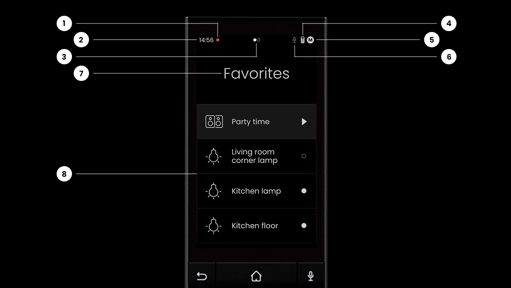
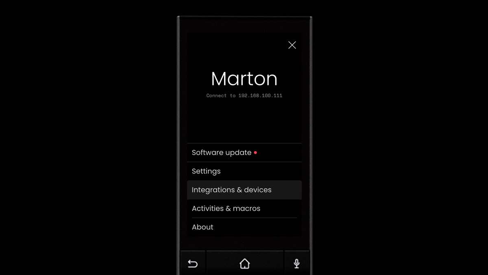
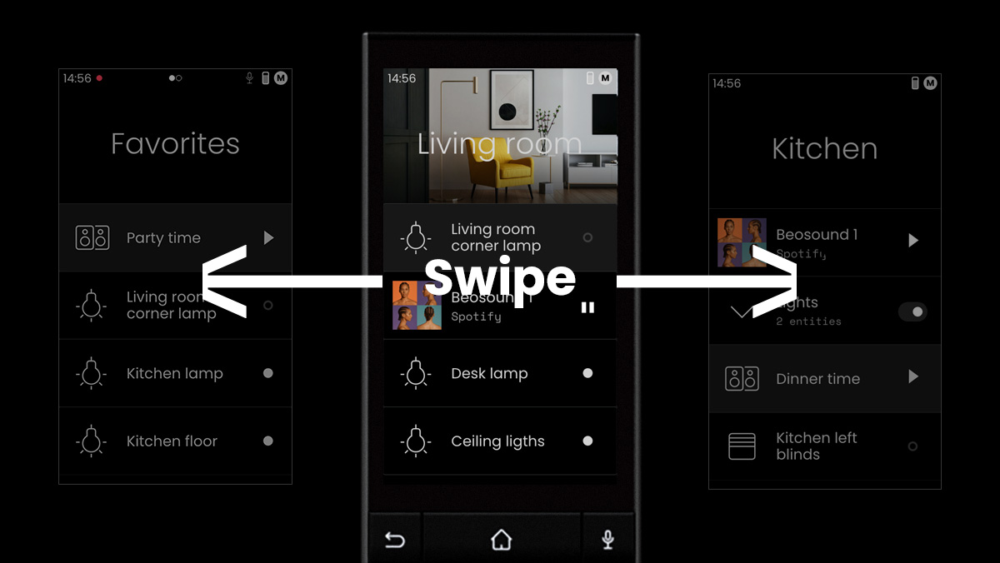
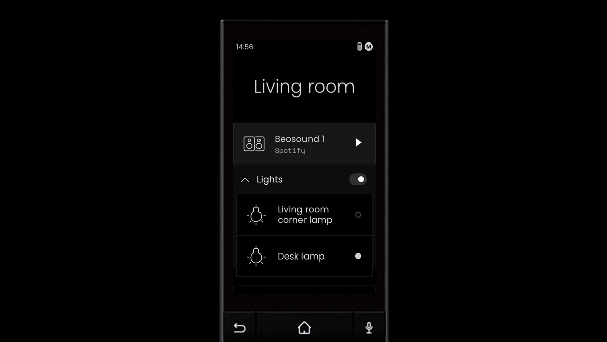
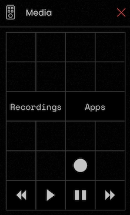
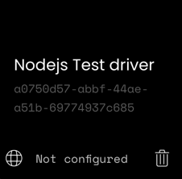
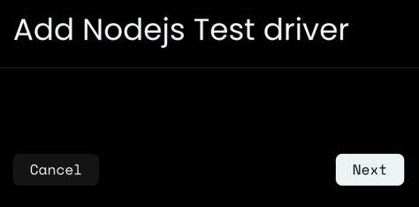
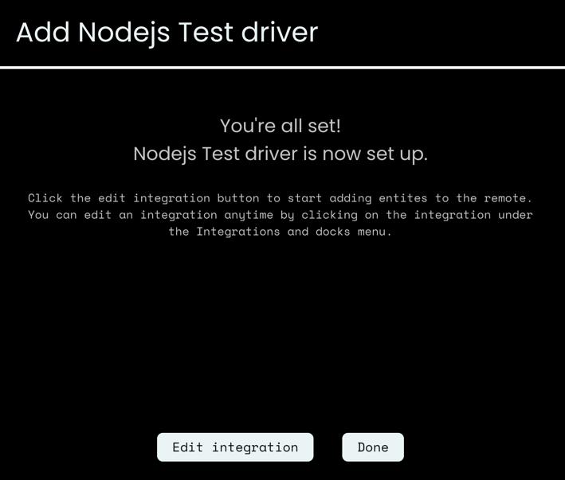
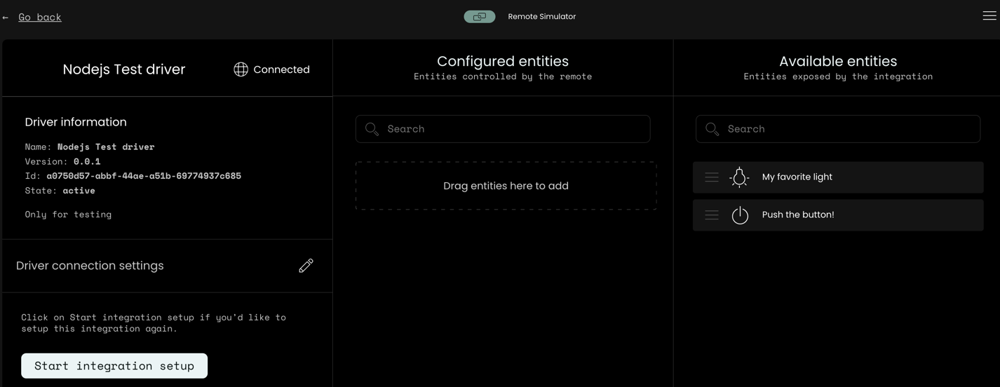

Remote Two/3 API Documentation
- Remote Two user interface
- Remote Two entities
- Bluetooth HID peripheral support
- Remote Two DNS-SD lookup
Core API
The Unfolded Circle Remote WebSocket & REST Core-APIs allow you to interact with the Unfolded Circle remote-core service and take full control of its features.
The focus of the Core-APIs is to provide all functionality for the UI application and the web-configurator. The APIs are specialized for certain tasks, but otherwise contain the same functionality and data models.
- The UCR REST Core-API adds:
- Custom resource handling for uploading icons, images etc.
- Installing custom remote-ui and web-configurator components.
- Installing custom integration drivers.
- User management and authentication handling.
- The UCR WS Core-API adds:
- Event subscription with asynchronous notifications.
The Core-APIs may also be used by other external systems and integration drivers, if specific configuration or interaction features are required, which are not present in the UCR Integration-API.
The API specifications are defined with OpenAPI & AsyncAPI in YAML format.
Integration API
- Integration AsyncAPI definition
- View with AsyncAPI Studio online tool.
The link will directly load the yaml definition file from GitHub and display it together with the HTML documentation in the browser.
Integration Driver
- How to write an integration driver
- WebSockets handling
- Driver registration
- Driver setup
- Install integration driver on the device
Remote Two User Interface
The user interface was designed to be easy to use by anyone, who can use a smart home app. Similar principles were applied to the touch interface, enhanced with button navigation and control.
Home/page screen

| Description | |
|---|---|
| 1 | Notification indicator |
| 2 | Clock |
| 3 | Indicator when an integration is connecting |
| 4 | Battery level |
| 5 | Current profile - tap opens setting |
| 6 | Microphone in use indicator |
| 7 | Current page - tap opens page selector |
| 8 | List of entities/groups |
Profiles
A profile can contain customised settings and UI configurations, including pages, groups and entities.

A profile can be changed by tapping on the current profile in settings.
Pages

A page can contain entities or groups. Pages can be selected by swiping left and right or using the left and right buttons on the D-pad. Tapping the page's name will bring up the page selector, where pages can be also added, deleted or renamed. Pages can have an image header and contain entities or groups. Multiple pages can contain the same entity.
A page can be used to segment rooms, areas, a specific purpose or anything else that makes sense to you.
Groups
Groups are a set of entities that can be defined by the user. Groups are another way of organising entities. A group can be configured to have a group switch, that can turn on/off every entity within the group at once. A group can be collapsed or expanded.

Example of a group containing two lights in expanded mode.
Remote Two DNS-SD lookup
The Remote Two will announce itself as service type _uc-remote._tcp.
The service lookup will return IP address and port number and other information in the TXT record data like model number and API version of the remote.
| Key | Description |
|---|---|
| ver | Version number |
| ver_api | API version number |
| model | Model number |
| https_port | HTTPS port if enabled |
Model numbers
The model key specifies the physical device or the core-simulator:
| Model | Description |
|---|---|
| UCR3 | Remote 3 |
| UCR2 | Remote Two |
| UCR2-simulator | Remote Core simulator |
| YIO1 | YIO Remote |
Examples
macOS:
dns-sd -Z _uc-remote._tcp
For a UI tool, see Discovery.
Linux:
avahi-browse -d local --resolve _uc-remote._tcp -t
Entities
Entities represent devices by describing features and exposing controls. An integration can offer available entities for control. The user might select and configure entities, that will be available for the user interface.
Based on the entity type, device class and features, a specific user interface is shown. These features and other entity characteristics are set by the integration.
An integration driver provides entity definitions to the remote which then can be used in profiles and pages for the user to interact with the device.
Whenever the user interacts with an entity from an integration driver, the remote sends command requests to the integration driver. Once the entity or physical device has been updated the integration driver sends a change event message back to the remote to notify it about the updated state or attribute(s).
Supported entities:
The 🚧 icon within the entity descriptions indicates a planned feature.
Integration API
To make entities available to the remote, an integration driver needs to provide entity definition for each entity
instance, filled with entity type specific data.
The remote retrieves the available entities from the integration driver with the get_available_entities request
message:
{
"kind": "req",
"id": 11,
"msg": "get_available_entities"
}
The integration driver then responds with the available_entities message containing all entity definitions:
{
"kind": "resp",
"req_id": 11,
"msg": "available_entities",
"code": 200,
"msg_data": {
"available_entities": [
{
"entity_id": "button-1",
"entity_type": "button",
"name": {
"en": "Ring dinner bell"
}
},
{
"entity_id": "blind-1",
"entity_type": "cover",
"device_class": "blind",
"features": [
"open",
"close",
"stop",
"position"
],
"name": {
"en": "Living room blinds",
"de": "Wohnzimmer Jalousien"
}
},
{
"entity_id": "light-1",
"entity_type": "light",
"features": [
"on_off",
"dim",
"colour"
],
"name": {
"en": "Living room"
}
}
]
}
}
All entities share a set of common attributes like name and the UNAVAILABLE, UNKNOWN states.
An entity implementation defines additional features, attributes, states and options which need to be handled in the
driver implementation.
Please see Integration AsyncAPI definition for more information and additional options.
Common entity definition
All entities share the following properties in the entity structure:
| Entity property | Description |
|---|---|
| entity_id | Unique identifier of the entity for command and event messages. |
| entity_type | Entity device type name: one of the supported entities. |
| device_id | Optional associated device, if the integration driver supports multiple devices. |
| features | Supported features of the entity. See concrete entity definition for available features. |
| name | Human readable name of the entity or device. Default value of the entity name for the entity configuration in the remote. Changeable by the user. |
| area | Optional area name, e.g. Living room. This information might be used by the UI in the setup process to automatically create profile pages for all areas returned in the available entities. |
Features
The entity features define the controllable properties of an entity. They also influence how an entity is shown in the UI, e.g. if there are dimmer and colour selection controls for a lamp, or blind position controls.
Attributes
Entity attributes are controlled or influenced by features. A features can act on multiple attributes, e.g. the open command for a cover entity will set the state and if supported, also the current position of the cover.
An attribute value should represent the correct state of the physical device being controlled whenever possible. An
integration driver might simulate intermediate states and position values, if the current state is either not readable
from the device or involves expensive operations. E.g. if it's known that opening a window blind takes 30 seconds, the
integration driver can start a timer and send approximated status updates during the opening time frame.
This will show a nice animation in the remote UI instead of immediately jumping from closed to open while the physical
blind is still opening.
States
The entity state attribute holds the following common values which an integration driver can choose to support:
| Value | Description |
|---|---|
| UNAVAILABLE | The entity is currently not available. The UI will render the entity as inactive until the entity becomes active again. |
| UNKNOWN | The entity is available but the current state is unknown. |
Device classes
An entity type can be further classified by an optional device class. This has mainly an influence on the UI
representation how an entity is presented to a user. E.g. a cover entity has multiple device classes like blind or
garage.
Options
Options are feature modifiers to customize certain behaviour, e.g. the default on_off feature for a switch expects the
current state to be retrievable. If a switch can't provide its current state, it becomes a toggle switch with setting
the readable option to false.
Commands
For all user or scene interactions with an entity, like switching it on or changing an attribute, the remote sends an
entity_command message to the integration driver. This message contains the entity command with optional parameters
to execute by the driver:
{
"kind": "req",
"id": 123,
"msg": "entity_command",
"msg_data": {
"entity_type": "$TYPE",
"entity_id": "$ID",
"cmd_id": "$COMMAND",
"params": {
"$ParameterName1": "$ParameterValue1",
"$ParameterName2": "$ParameterValue2",
"$ParameterNameN": "$ParameterValueN"
}
}
}
- The command is specified in
msg_data.cmd_id.- Optional command parameters are passed as key / value pairs under
msg_data.params. - The available commands and parameters are specified in the corresponding entity documentation.
- Optional command parameters are passed as key / value pairs under
- The command request must be acknowledged with a
resultresponse message.- If at the time of receiving the command the driver already knows that it can't execute the command, it can send
back an error to notify that the command execution is not possible.
Otherwise, the remote assumes that the command is executed.
- If at the time of receiving the command the driver already knows that it can't execute the command, it can send
back an error to notify that the command execution is not possible.
- Once the value has been set or confirmed by the physical device, an
entity_changeevent message must be sent by the integration driver with the new value(s). Of course, this only applies to stateful attributes and not to buttons or "fire and forget" commands.
Events
The entity_change event must be emitted by the integration driver if the state of the entity changes. Either after an
entity_command or if the entity has been updated otherwise, e.g. externally through a user or another system.
This keeps the remote in sync with the real state of the entity without the need of constant polling.
Event message structure:
{
"kind": "event",
"msg": "entity_change",
"cat": "ENTITY",
"msg_data": {
"entity_type": "$TYPE",
"entity_id": "$ID",
"attributes": {
"$Attribute1": "$Value1",
"$Attribute2": "$Value2",
"$AttributeN": "$ValueN"
}
}
}
The available $Attribute(s) and their $Value(s) are specified in the entity documentation.
Common event attributes available for all entities:
| Attribute | Description |
|---|---|
| state | New entity state. |
At least one attribute must be specified in the entity_change message. If the common entity state and an addition
attribute changed at the same time, they may both be included in the same message. It's also valid to always send every
entity attribute. The remote will filter out non-changed attributes and only update changes in the UI.
Button Entity
A button entity can fire an event or start an action which cannot be further controlled once started.
This can be used for "fire and forget" commands, e.g. running a system command, sending an IR code, restart a device, reset something etc.
A button is stateless. To represent something that can be turned on and off, the switch entity should be used.
Features
| Name | R | W | Description |
|---|---|---|---|
| press | ❌ | ✅ | Default feature of a button. Always present, even if not specified. |
States
The button entity only supports the ON state and the common entity states.
| Value | Description |
|---|---|
| AVAILABLE | The button is available. |
Device Classes
None.
Options
None: the button entity doesn't support additional options.
Integration API
Commands
The integration driver has to implement a handler for the entity_command message to process the following command
requests in msg_data.cmd_id.
| cmd_id | Parameters | Description |
|---|---|---|
| push | - | Push the button! |
Events
None: the button entity is stateless and the remote doesn't need to be notified when the button was pressed externally.
Command examples
push
{
"kind": "req",
"id": 123,
"msg": "entity_command",
"msg_data": {
"entity_type": "button",
"entity_id": "button-1",
"command_id": "push"
}
}
Switch Entity
A switch entity can turn something on or off and the current state should be readable by the integration driver.
If the state can't be read, the readable option property can be set to false. This should be avoided
whenever possible, because the remote either has to assume the current state, or the UI needs to ask the user
for the current state.
If the switch controls a light source, then the light entity is usually a better choice.
Features
| Name | R | W | Description |
|---|---|---|---|
| on_off | ✅ | ✅ | Default feature of a switch. Always present, even if not specified. |
| toggle | ❌ | ✅ | Toggle support. If there's no native support, the remote will use the current state of the switch to send the corresponding on or off command. |
Attributes
Entity attributes are controlled by features. Multiple features can act on the same attribute. See Events on how to
notify the remote about an updated attribute. The attributes have to be listed as properties under attributes with
their current value.
| Attribute | Features | Type | Values | Description |
|---|---|---|---|---|
| state | on_off | enum | States | State of the switch, it's either on or off. |
| toggle | Toggle inverts the current state. If the driver doesn't provide the toggle feature, the remote uses the current value and calls on or off. |
States
The switch entity provides the following entity state values:
| Value | Description |
|---|---|
| ON | The switch is on. |
| OFF | The switch is off. |
See common entity states.
Device classes
Optional switch type. This can be used by the UI to represent the entity with a different icon, behaviour etc.
| Name | Description |
|---|---|
| outlet | The switch represents a switchable power outlet. |
| switch | Generic switch. |
Options
| Name | Type | Default | Description |
|---|---|---|---|
| readable | boolean | true | If set to false the current state of the switch cannot be read. This will make the switch stateless and the UI might ask the user for the current state. |
Integration API
Commands
The integration driver has to implement a handler for the entity_command message to process the following command
requests in msg_data.cmd_id.
| cmd_id | Parameters | Description |
|---|---|---|
| on | - | Put the switch in the on state. |
| off | - | Put the switch in the off state. |
| toggle | - | Toggle the current switch state, either from on -> off or from off -> on. |
Events
The entity_change event must be emitted by the integration driver if the state or an attribute of the switch changes.
The following attributes must be included:
| Attribute | Description |
|---|---|
| state | New entity state. |
Command examples
on
{
"kind": "req",
"id": 124,
"msg": "entity_command",
"msg_data": {
"entity_type": "switch",
"entity_id": "switch-1",
"cmd_id": "on"
}
}
off
{
"kind": "req",
"id": 124,
"msg": "entity_command",
"msg_data": {
"entity_type": "switch",
"entity_id": "switch-1",
"cmd_id": "off"
}
}
toggle
{
"kind": "req",
"id": 124,
"msg": "entity_command",
"msg_data": {
"entity_type": "switch",
"entity_id": "switch-1",
"cmd_id": "toggle"
}
}
Event examples
Switched on
{
"kind": "event",
"msg": "entity_change",
"cat": "ENTITY",
"msg_data": {
"entity_type": "switch",
"entity_id": "switch-1",
"attributes": {
"state": "on"
}
}
}
Switched off
{
"kind": "event",
"msg": "entity_change",
"cat": "ENTITY",
"msg_data": {
"entity_type": "switch",
"entity_id": "switch-1",
"attributes": {
"state": "off"
}
}
}
Climate Entity
A climate entity controls heating, ventilation and air conditioning (HVAC) devices. This can range from simple fans to personal air conditioning units to integrated building devices.
Features
| Name | R | W | Description |
|---|---|---|---|
| on_off | ✅ | ✅ | The device can be turned on and off. The active HVAC mode after power on is device specific and must be reflected in the state attribute. |
| heat | ❌ | ✅ | The device supports heating. |
| cool | ❌ | ✅ | The device supports cooling. |
| current_temperature | ✅ | ❌ | The device can measure the current temperature. |
| target_temperature | ✅ | ✅ | The device supports a target temperature for heating or cooling. |
| 🚧 target_temperature_range | ✅ | ✅ | The device supports a target temperature range. |
| 🚧 fan | ❌ | ✅ | The device has a controllable fan. |
Attributes
Entity attributes are controlled by features. Multiple features can act on the same attribute.
| Attribute | Features | Type | Values | Description |
|---|---|---|---|---|
| state | on_off | enum | States | State of the climate device, corresponds to HVAC mode. |
| heat | ||||
| cool | ||||
| fan | ||||
| current_temperature | current_temperature | number | ||
| target_temperature | target_temperature | number | ||
| 🚧 target_temperature_high | target_temperature_range | number | ||
| 🚧 target_temperature_low | target_temperature_range | number | ||
| 🚧 fan_mode | fan | enum |
See entity options for temperature unit and ranges.
States
The climate entity provides the following entity state values and represents the currently set HVAC mode of the device:
| Value | Description |
|---|---|
| OFF | The climate device is switched off. |
| HEAT | The device is set to heating, optionally to a set target temperature. |
| COOL | The device is set to cooling, optionally to a set target temperature. |
| HEAT_COOL | The device is set to heat or cool to a target temperature range. |
| FAN | Fan-only mode without heating or cooling. |
| AUTO | The device is set to automatic mode. This is device dependant, e.g. according to a schedule, presence detection, etc. |
Note: the current mode may not be the active state of the device. E.g. if the mode is set to AUTO the climate unit
may be heating, cooling, idle, etc. at a specific point in time.
See common entity states.
Device Classes
None.
Options
| Name | Type | Default | Description |
|---|---|---|---|
| temperature_unit | enum | CELSIUS | The unit of temperature measurement: CELSIUS, FAHRENHEIT. If not specified, the remote settings are used. |
| target_temperature_step | number | 0.5 / 1 | Step value for the UI for setting the target temperature. Defaults: CELSIUS = 0.5, 'FAHRENHEIT` = 1. Smallest step size: 0.1 |
| max_temperature | number | 30 | Maximum temperature to show in the UI for the target temperature range. |
| min_temperature | number | 10 | Minimum temperature to show in the UI for the target temperature range. |
| 🚧 fan_modes | enum |
🚧 Planned feature.
Integration API
Commands
The integration driver has to implement a handler for the entity_command message to process the following command
requests within msg_data.cmd_id.
- The command request must be acknowledged with a
resultresponse message. - Once the value has been set or confirmed by the physical device, an
entity_changeevent message with the new value(s) must be sent.
| cmd_id | Parameters | Description |
|---|---|---|
| on | - | Switch on the climate device. |
| off | - | Switch off the climate device. |
| hvac_mode | hvac_mode | Set the device to heating, cooling, etc. See state. |
| target_temperature | temperature | Change the target temperature |
| 🚧 target_temperature_range | temperature_high | |
| temperature_low | ||
| 🚧 fan_mode | enum |
Events
The entity_change event must be emitted by the integration driver if the state or an attribute of the climate device
changes. Either after anentity_command or if the climate device has been updated externally through a user or another
system. This keeps the remote in sync with the real state of the entity without the need of constant polling.
The following attributes are supported:
| Attribute | Description |
|---|---|
| hvac_mode | New HVAC mode. See state. |
| current_temperature | Current temperature value. |
| target_temperature | Changed target temperature value. |
| 🚧 target_temperature_high | Changed high target temperature value. |
| 🚧 target_temperature_low | Changed low target temperature value. |
| 🚧 fan_mode | Changed fan mode. |
At least one attribute must be specified in the entity_change message. If the entity state and a climate
attribute changed at the same time, they may both be included in the same message. It's also valid to always send every
attribute.
Command examples
on
{
"kind": "req",
"id": 123,
"msg": "entity_command",
"msg_data": {
"entity_type": "climate",
"entity_id": "climate-1",
"cmd_id": "on"
}
}
off
{
"kind": "req",
"id": 123,
"msg": "entity_command",
"msg_data": {
"entity_type": "climate",
"entity_id": "climate-1",
"cmd_id": "off"
}
}
hvac_mode
{
"kind": "req",
"id": 123,
"msg": "entity_command",
"msg_data": {
"entity_type": "climate",
"entity_id": "climate-1",
"cmd_id": "hvac_mode",
"params": {
"hvac_mode": "COOL"
}
}
}
Combined with target temperature
{
"kind": "req",
"id": 123,
"msg": "entity_command",
"msg_data": {
"entity_type": "climate",
"entity_id": "climate-1",
"cmd_id": "hvac_mode",
"params": {
"hvac_mode": "COOL",
"temperature": 23
}
}
}
target_temperature
{
"kind": "req",
"id": 123,
"msg": "entity_command",
"msg_data": {
"entity_type": "climate",
"entity_id": "climate-1",
"cmd_id": "target_temperature",
"params": {
"temperature": 23
}
}
}
Event examples
State change event
{
"kind": "event",
"msg": "entity_change",
"cat": "ENTITY",
"msg_data": {
"entity_type": "climate",
"entity_id": "climate-1",
"attributes": {
"hvac_mode": "HEAT",
"current_temperature": 19.5,
"target_temperature": 21.0
}
}
}
Cover Entity
Entity for covering or opening things like blinds, window covers, curtains, etc. The entity features specify the abilities of the cover and the controllable properties, whereas the device class specifies the UI representation.
Features
| Name | R | W | Description |
|---|---|---|---|
| open | ✅ | ✅ | The cover can can be opened. |
| close | ✅ | ✅ | The cover can can be closed. |
| stop | ❌ | ✅ | Opening, closing or setting the position can be stopped. |
| position | ✅ | ✅ | The cover can be moved to a specific position, e.g. 30% open. |
| 🚧 tilt | ✅ | ✅ | The cover supports being tilted up and down. |
| 🚧 tilt_stop | ❌ | ✅ | Tilting the cover can be stopped. |
| 🚧 tilt_position | ✅ | ✅ | The cover can be moved to a specific tilt position. |
🚧 Planned feature.
If no tilt* features are specified in the cover entity, the remote UI will not show the tilt support and the
integration driver does not need to support the required tilt commands and events.
Attributes
| Attribute | Features | Type | Values | Description |
|---|---|---|---|---|
| state | open close | enum | States | Default entity state attribute. Influenced by the cover commands. |
| stop | ||||
| position | position | int | 0..100 | Current position of the cover: 0 = closed, 100 = open. |
| open close | 0 / 100 | Position is set to min / max if the state reaches CLOSED / OPEN. | ||
| 🚧 tilt_position | tilt_position | int | 0..100 | Current tilt position of the cover: 0 = no tilt, 100 = max tilt. |
| tilt_stop | ||||
| tilt | 0 / 100 | Tilt position is set to min / max when tilted up or down. |
States
The cover entity provides the following entity state values:
| Value | Description |
|---|---|
| OPENING | The cover is in the process of opening. Either fully opened or to a set position. |
| OPEN | The cover is in the open state. |
| CLOSING | The cover is in the process of closing. Either fully closed or to a set position. |
| CLOSED | The cover is in the closed state. |
See common entity states.
Device classes
Optional cover type. This can be used by the UI to represent the cover with a different icon, behaviour etc.
| Name | Description |
|---|---|
| blind | Window blinds or shutters which can be opened, closed or tilted. |
| curtain | Window curtain or drapes which can be opened or closed. |
| garage | Controllable garage door. |
| shade | Sun shades which can be opened to protect an area from the sun. |
| 🚧 door | Controllable door which can be opened and closed. |
| 🚧 gate | Controllable gate which can be opened and closed. |
| 🚧 window | A window which can be opened, closed or tilted. |
Options
None: the cover entity doesn't support additional options.
Integration API
Commands
The integration driver has to implement a handler for the entity_command message to process the following command
requests in msg_data.cmd_id.
| cmd_id | Parameters | Description |
|---|---|---|
| open | - | Open the cover. |
| close | - | Close the cover. |
| stop | - | Stop the current cover open, close or position operation. |
| position | position | Set the cover to the given position. |
| 🚧 tilt | tilt_position | Tilt the cover to the given position. |
| 🚧 tilt_up | - | Tilt the cover fully up. |
| 🚧 tilt_down | - | Tilt the cover fully down. |
| 🚧 tilt_stop | - | Stop current tilt operation. |
Events
The entity_change event must be emitted by the integration driver if the state or an attribute of the cover changes.
The following attributes are supported:
| Attribute | Description |
|---|---|
| state | New entity state. |
| position | Current cover position value. |
| 🚧 tilt_position | Current tilt position value. |
At least one attribute must be specified in the entity_change message. If the entity state and a position
attribute changed at the same time, they may both be included in the same message. It's also valid to always send every
attribute.
Command examples
open
{
"kind": "req",
"id": 123,
"msg": "entity_command",
"msg_data": {
"entity_type": "cover",
"entity_id": "blind-1",
"cmd_id": "open"
}
}
close
{
"kind": "req",
"id": 123,
"msg": "entity_command",
"msg_data": {
"entity_type": "cover",
"entity_id": "blind-1",
"cmd_id": "close"
}
}
stop
{
"kind": "req",
"id": 123,
"msg": "entity_command",
"msg_data": {
"entity_type": "cover",
"entity_id": "blind-1",
"cmd_id": "stop"
}
}
position
{
"kind": "req",
"id": 123,
"msg": "entity_command",
"msg_data": {
"entity_type": "cover",
"entity_id": "blind-1",
"cmd_id": "position",
"params": {
"position": 70
}
}
}
tilt
{
"kind": "req",
"id": 123,
"msg": "entity_command",
"msg_data": {
"entity_type": "cover",
"entity_id": "blind-1",
"cmd_id": "tilt",
"params": {
"tilt_position": 45
}
}
}
tilt_down
{
"kind": "req",
"id": 123,
"msg": "entity_command",
"msg_data": {
"entity_type": "cover",
"entity_id": "blind-1",
"cmd_id": "tilt_down"
}
}
tilt_up
{
"kind": "req",
"id": 123,
"msg": "entity_command",
"msg_data": {
"entity_type": "cover",
"entity_id": "blind-1",
"cmd_id": "tilt_up"
}
}
tilt_stop
{
"kind": "req",
"id": 123,
"msg": "entity_command",
"msg_data": {
"entity_type": "cover",
"entity_id": "blind-1",
"cmd_id": "tilt_stop"
}
}
Event examples
State change event
{
"kind": "event",
"msg": "entity_change",
"cat": "ENTITY",
"msg_data": {
"entity_type": "cover",
"entity_id": "blind-1",
"attributes": {
"state": "OPENING",
"position": 72
}
}
}
Cover position change event
{
"kind": "event",
"msg": "entity_change",
"cat": "ENTITY",
"msg_data": {
"entity_type": "cover",
"entity_id": "blind-1",
"attributes": {
"position": 72
}
}
}
Cover tilt position change event
{
"kind": "event",
"msg": "entity_change",
"cat": "ENTITY",
"msg_data": {
"entity_type": "cover",
"entity_id": "blind-1",
"attributes": {
"tilt_position": 50
}
}
}
Light Entity
A light entity can be switched on and off and depending on its features, the light source can be further controlled like setting brightness, hue, color saturation and color temperature.
The HSV color model is used for adjusting color and brightness.
Features
| Name | R | W | Description |
|---|---|---|---|
| on_off | ✅ | ✅ | Default feature of a light source. Always present, even if not specified. |
| toggle | ❌ | ✅ | Toggle support. If there's no native support, the remote will use the current state of the light to send the corresponding on or off command. |
| dim | ✅ | ✅ | Light source supports dimming. |
| color | ✅ | ✅ | The color of the light source can be adjusted. |
| color_temperature | ✅ | ✅ | The color temperature of the light source can be adjusted. |
Attributes
| Attribute | Features | Type | Values | Description |
|---|---|---|---|---|
| state | on_off | enum | States | Default entity state attribute. Influenced by the entity commands. |
| toggle | ||||
| hue | color | int | 0..360 | Color wheel: 0-360 degree |
| saturation | color | int | 0..255 | |
| brightness | dim | int | 0..255 | |
| color_temperature | color_temperature | int | 0..100 | Color temperature percentage: a higher value means a warmer color. 0% = coldest, 100% = warmest. |
States
The light entity provides the following entity state values:
| Value | Description |
|---|---|
| ON | The light is switched on. |
| OFF | The light is switched off. |
See common entity states.
Device Classes
None.
Options
| Name | Type | Values | Default | Description |
|---|---|---|---|---|
| color_temperature_steps | number | 2..100 | 100 | Number of color temperature steps of the light source. Some lamps only support 3 modes, where others can be adjusted freely. |
Integration API
Commands
The integration driver has to implement a handler for the entity_command message to process the following command
requests in msg_data.cmd_id.
| cmd_id | Parameters | Description |
|---|---|---|
| on | - | Turn the light on. Optionally set brightness and color values: |
| brightness | - dim the light to the given percentage value. | |
| hue, saturation | - adjust the color of the light. | |
| color_temperature | - adjust the color temperature. | |
| off | - | Turn the light off. |
| toggle | - | Toggle the light from on -> off or from off -> on. |
Events
The entity_change event must be emitted by the integration driver if the state or an attribute of the light changes.
The following attributes are supported:
| Attribute | Description |
|---|---|
| state | New entity state. |
| brightness | Current brightness. |
| hue | Current hue value. |
| saturation | Current saturation value. |
| color_temperature | Current color temperature. The possible values are influenced by color_temperature_steps. E.g. with 3 steps: [0, 50, 100] |
Command examples
on
Default request:
{
"kind": "req",
"id": 123,
"msg": "entity_command",
"msg_data": {
"entity_type": "light",
"entity_id": "light-1",
"cmd_id": "on"
}
}
Request with setting brightness value:
{
"kind": "req",
"id": 123,
"msg": "entity_command",
"msg_data": {
"entity_type": "light",
"entity_id": "light-1",
"cmd_id": "on",
"params": {
"brightness": 140
}
}
}
Request with setting color temperature:
{
"kind": "req",
"id": 123,
"msg": "entity_command",
"msg_data": {
"entity_type": "light",
"entity_id": "light-1",
"cmd_id": "on",
"params": {
"color_temperature": 70
}
}
}
Request with setting light color:
{
"kind": "req",
"id": 123,
"msg": "entity_command",
"msg_data": {
"entity_type": "light",
"entity_id": "light-1",
"cmd_id": "on",
"params": {
"hue": 180,
"saturation": 200
}
}
}
off
{
"kind": "req",
"id": 123,
"msg": "entity_command",
"msg_data": {
"entity_type": "light",
"entity_id": "light-1",
"cmd_id": "off"
}
}
toggle
{
"kind": "req",
"id": 123,
"msg": "entity_command",
"msg_data": {
"entity_type": "light",
"entity_id": "light-1",
"cmd_id": "toggle"
}
}
Event examples
Switched on
{
"kind": "event",
"msg": "entity_change",
"cat": "ENTITY",
"msg_data": {
"entity_type": "light",
"entity_id": "light-1",
"attributes": {
"state": "ON"
}
}
}
The additional brightness and color attributes can be added as well:
{
"kind": "event",
"msg": "entity_change",
"cat": "ENTITY",
"msg_data": {
"entity_type": "light",
"entity_id": "light-1",
"attributes": {
"state": "ON",
"brightness": 180,
"hue": 180,
"saturation": 150
}
}
}
Switched off
{
"kind": "event",
"msg": "entity_change",
"cat": "ENTITY",
"msg_data": {
"entity_type": "light",
"entity_id": "light-1",
"attributes": {
"state": "OFF"
}
}
}
Media Player Entity
A media player entity controls playback of media on a device. This could be an online music streaming service, a TV, a stereo or a video player.
Features
Media-player features define the capabilities of the controlled device. For example the dpad feature will enable the
four directional commands and the enter command. Furthermore, certain features control the appearance and functionality
of the media-player UI on the Remote Two.
| Name | R | W | Description |
|---|---|---|---|
| on_off | ✅ | ✅ | The media player can be switched on and off. |
| toggle | ❌ | ✅ | The media player's power state can be toggled. |
| volume | ✅ | ✅ | The volume level can be set to a specific level. |
| volume_up_down | ❌ | ✅ | The volume can be adjusted up (louder) and down. |
| mute_toggle | ❌ | ✅ | The mute state can be toggled. |
| mute | ✅ | ✅ | The volume can be muted. |
| unmute | ✅ | ✅ | The volume can be un-muted. |
| play_pause | ❌ | ✅ | The player supports starting and pausing media playback. |
| stop | ❌ | ✅ | The player supports stopping media playback. |
| next | ❌ | ✅ | The player supports skipping to the next track. |
| previous | ❌ | ✅ | The player supports returning to the previous track. |
| fast_forward | ❌ | ✅ | The player supports fast-forwarding the current track. |
| rewind | ❌ | ✅ | The player supports rewinding the current track. |
| repeat | ✅ | ✅ | The current track or playlist can be repeated. |
| shuffle | ✅ | ✅ | The player supports random playback / shuffling the current playlist. |
| seek | ❌ | ✅ | The player supports seeking the playback position. |
| media_duration | ✅ | ❌ | The player announces the duration of the current media being played. |
| media_position | ✅ | ❌ | The player announces the current position of the media being played. |
| media_title | ✅ | ❌ | The player announces the media title. |
| media_artist | ✅ | ❌ | The player announces the media artist. |
| media_album | ✅ | ❌ | The player announces the media album if music is being played. |
| media_image_url | ✅ | ❌ | The player provides an image url of the media being played. |
| media_type | ✅ | ❌ | The player announces the type of media being played. |
| dpad | ❌ | ✅ | Directional pad navigation, provides up / down / left / right / enter commands. |
| numpad | ❌ | ✅ | Number pad, provides digit_0, .. , digit_9 commands. |
| home | ❌ | ✅ | Home navigation support with home & back commands. |
| menu | ❌ | ✅ | Menu navigation support with menu & back commands. |
| context_menu | ❌ | ✅ | Context menu (for example right clicking or long pressing an item). |
| guide | ❌ | ✅ | Program guide support with guide & back commands. |
| info | ❌ | ✅ | Information popup / menu support with info & back commands. |
| color_buttons | ❌ | ✅ | Color button support for red / green / yellow / blue function commands. |
| channel_switcher | ❌ | ✅ | Channel zapping support with channel up and down commands. |
| select_source | ✅ | ✅ | Media playback sources or inputs can be selected. |
| select_sound_mode | ✅ | ✅ | Sound modes can be selected, e.g. stereo or surround. |
| eject | ❌ | ✅ | The media can be ejected, e.g. a slot-in CD or USB stick. |
| open_close | ❌ | ✅ | The player supports opening and closing, e.g. a disc tray. |
| audio_track | ❌ | ✅ | The player supports selecting or switching the audio track. |
| subtitle | ❌ | ✅ | The player supports selecting or switching subtitles. |
| record | ❌ | ✅ | The player has recording capabilities with record, my_recordings, live commands |
| settings | ❌ | ✅ | The player supports a settings menu. |
- R: readable
- ✅ Feature has a readable attribute to retrieve the current or available values.
- ❌ Feature value(s) cannot be read.
- W: writeable
- ✅ Feature has one or multiple commands to trigger an action or set a value.
- ❌ No corresponding command(s), only the current value(s) of the feature can be read.
🚧 Planned features are playlist handling, media browsing and searching.
🧑💻 Integration driver developers:
- If certain features or commands are missing for your device, they can be defined with "simple commands".
- If a feature doesn't fully match your device, for example it only has a
recordfunction but nomy_recordingsorlivefunctions, then the desired command(s) should also be defined as a "simple command".- For the command name use the corresponding
cmd_idin uppercase to keep any command related automations.
(This would beRECORDfor the record-only feature example).
- For the command name use the corresponding
Attributes
Entity attributes are enabled by features and hold the current value of a feature or provide available options. Multiple features can act on the same attribute.
| Attribute | Features | Type | Values | Description |
|---|---|---|---|---|
| state | on_off | enum | States | State of the media player, influenced by the play and power commands. |
| toggle | ||||
| play_pause, stop | ||||
| volume | volume | number | 0..100 | Current volume level. |
| volume_up_down | ||||
| muted | mute_toggle | boolean | Flag if the volume is muted. | |
| mute, unmute | ||||
| media_duration | media_duration | number | Media duration in seconds. | |
| media_position | media_position | number | Current media position in seconds. | |
| play_pause, stop | ||||
| fast_forward, rewind, seek | ||||
| media_position_updated_at | media_position | string | datetime (ISO 8601) | Optional timestamp when media_position was last updated. Requires integration support. |
| media_type | media_type | enum | platform specific | The type of media being played. |
| media_image_url | media_image_url | string | URL to retrieve the album art or an image representing what's being played. | |
| play_pause | ||||
| next, previous | ||||
| media_title | media_title | string | Currently playing media information. | |
| play_pause | ||||
| next, previous | ||||
| media_artist | media_artist | string | Currently playing media information. | |
| play_pause | ||||
| next, previous | ||||
| media_album | media_album | string | Currently playing media information. | |
| play_pause | ||||
| next, previous | ||||
| repeat | repeat | enum | OFF, ALL, ONE | Current repeat mode. |
| shuffle | shuffle | boolean | Shuffle mode on or off. | |
| source | select_source | string | Currently selected media or input source. | |
| source_list | select_source | list | text items | Available media or input sources. |
| sound_mode | select_sound_mode | string | Currently selected sound mode. | |
| sound_mode_list | select_sound_mode | list | text items | Available sound modes. |
States
The entity state attribute holds the following values:
| Value | Description |
|---|---|
| ON | The media player is switched on |
| OFF | The media player is switched off |
| PLAYING | The media player is playing something |
| PAUSED | The media player is paused |
| STANDBY | The device is in low power state and accepting commands |
| BUFFERING | The media player is buffering to start playback |
See also common entity states.
Device Classes
Optional: the media player can be classified what kind of device it represents. This can be used by the UI to represent the media player with a different icon, behaviour etc.
| Name | Description |
|---|---|
| receiver | Audio-video receiver. |
| set_top_box | Set-top box for multichannel video and media playback |
| speaker | Smart speakers or stereo device. |
| streaming_box | Device for media streaming services. |
| tv | Television device. |
Options
Optional features of the media-player entity.
| Name | Type | Values | Default | Description |
|---|---|---|---|---|
| simple_commands | array | string | [] | Additional commands the media-player supports, which are not covered in the feature list. See simple commands. Example: ["EXIT", "THUMBS_UP", "THUMBS_DOWN"] |
| volume_steps | number | 2..100 | 100 | Number of available volume steps for the set volume command and UI controls. Examples: 100 = any value between 0..100, 50 = only odd numbers, 3 = [33, 67, 100] etc. Value 0 = mute. Note: if the integration receives an "unexpected" number it is required to round up or down to the next matching value. |
Integration API
Commands
The integration driver has to implement a handler for the entity_command message to process the following command
requests in msg_data.cmd_id.
| cmd_id | Parameters | Description |
|---|---|---|
| on | - | Switch on media player. |
| off | - | Switch off media player. |
| toggle | - | Toggle the current power state, either from on -> off or from off -> on. |
| play_pause | - | Toggle play / pause. |
| stop | - | Stop playback. |
| previous | - | Go back to previous track. |
| next | - | Skip to next track. |
| fast_forward | - | Fast forward current track. |
| rewind | - | Rewind current track. |
| seek | media_position | Seek to given position in current track. Position is given in seconds. |
| volume | volume | Set volume to given level. |
| volume_up | - | Increase volume. |
| volume_down | - | Decrease volume. |
| mute_toggle | - | Toggle mute state. |
| mute | - | Mute volume. |
| unmute | - | Unmute volume. |
| repeat | repeat | Repeat track or playlist. |
| shuffle | shuffle | Shuffle playlist or start random playback. |
| channel_up | - | Channel up. |
| channel_down | - | Channel down. |
| cursor_up | - | Directional pad up. |
| cursor_down | - | Directional pad down. |
| cursor_left | - | Directional pad left. |
| cursor_right | - | Directional pad right. |
| cursor_enter | - | Directional pad enter. |
| digit_0 - digit_9 | - | Number pad digits 0..9. |
| function_red | - | Function red. |
| function_green | - | Function green. |
| function_yellow | - | Function yellow. |
| function_blue | - | Function blue. |
| home | - | Home menu |
| menu | - | Menu |
| context_menu | - | Context menu |
| guide | - | Program guide menu. |
| info | - | Information menu / what's playing. |
| back | - | Back / exit function for menu navigation (to exit menu, guide, info). |
| select_source | source | Select an input source from the available sources. |
| select_sound_mode | mode | Select a sound mode from the available modes. |
| record | - | Start, stop or open recording menu (device dependant). |
| my_recordings | - | Open recordings. |
| live | - | Switch to live view. |
| eject | - | Eject media. |
| open_close | - | Open or close. |
| audio_track | - | Switch or select audio track. |
| subtitle | - | Switch or select subtitle. |
| settings | - | Settings menu |
| 🚧 search |
Simple Commands
Additional commands can be enabled with the simple_commands options. A device exposing a media-player entity can
support all additional device commands, not covered with the standard features, as so-called "simple commands".
These commands are comparable with the infrared remote-entity commands, where keys trigger an action on the device:
- The command is fully defined by its name and doesn't have any further arguments or related attributes.
- Command names must be upper case and may not contain spaces.
- The upper case restriction makes them distinguishable from the pre-defined feature commands.
- Only a subset of the 7-bit ASCII printable characters are allowed:
-/_.:+#*°@%()? - Maximum length is 20 characters.
- Command name regex:
^[A-Z0-9\/_.:+#*°@%()?-]{1,20}$
- 🚧 Simple commands cannot be translated yet. In the web-configurator they show up as defined.
Command Name Patterns
Even though command names can be freely defined with the allowed characters, the following prefixes should be used. This allows better integration into Remote Two, like default UI mappings and grouping of similar commands.
INPUT_: source inputs, e.g.INPUT_AUX1,INPUT_TV,INPUT_RADIOAPP_: applications, e.g.APP_MY_TV_STREAMING,APP_INTERNETMODE_: mode changing functions, e.g.MODE_16/9,MODE_SURROUND,MODE_FOOTBALLMENU_: additional menus, e.g.MENU_SMART_HOME,MENU_QUICKDIGIT_: additional input digits besides the pre-defined numpad digits, e.g.DIGIT_10,DIGIT_10+ZONE_: multi-room functions, e.g.ZONE_A,ZONE_MULTIROOM
Events
The entity_change event must be emitted by the integration driver if the state or an attribute of the media player
changes.
The following attributes are supported:
| Attribute | Description |
|---|---|
| state | New entity state. |
| volume | Current volume. |
| muted | Mute state. |
| media_position | Current playback position. |
| media_duration | Duration of current media. |
| media_title | Current media title. |
| media_artist | Current media artist. |
| media_album | Current media artist. |
| media_image_url | Current media image url, which will be resized for small and medium representations. If the player already has multiple sizes it's recommended to use the _small, _med, _large attributes. |
| media_image_url_small | Current media image url for the small image. |
| media_image_url_medium | Current media image url for the medium size image. |
| media_image_url_large | Current media image url for the large image. |
| media_type | Current media type. |
| repeat | Current repeat mode. |
| shuffle | Current shuffle mode. |
| source | Selected source. |
| source_list | List of available media sources or inputs. |
| sound_mode | Selected sound mode. |
| sound_mode_list | Available sound modes. |
At least one attribute must be specified in the entity_change message. If the entity state and another attribute
changed at the same time, for example if a new track starts playing, they may both be included in the same message.
It's also valid to always send every attribute.
Media types
The media_type attribute specifies the media being played:
MUSICRADIOTVSHOWMOVIEVIDEO
The integration may return other values, but the UI will most likely handle them as an "unknown media".
Media images
- Supported image formats: jpg and png.
- The album art image can either be provided as a single image or as three matching image sizes.
- Images will automatically be resized to the required sizes.
Either from the single image inmedia_image_urlor from the individual sizes. - Images too large in pixel or file size will be rejected due to resource constraints on the remote.
- Images will automatically be resized to the required sizes.
- Preferred image sizes in pixel:
- Large, for full screen album art: 420 x 420
- Medium: 100 x 100
- Small, for thumbnails: 60 x 60
Command examples
on
{
"kind": "req",
"id": 123,
"msg": "entity_command",
"msg_data": {
"entity_type": "media_player",
"entity_id": "media-1",
"cmd_id": "on"
}
}
play_pause
{
"kind": "req",
"id": 123,
"msg": "entity_command",
"msg_data": {
"entity_type": "media_player",
"entity_id": "media-1",
"cmd_id": "play_pause"
}
}
volume
{
"kind": "req",
"id": 123,
"msg": "entity_command",
"msg_data": {
"entity_type": "media_player",
"entity_id": "media-1",
"cmd_id": "volume",
"params": {
"volume": 40
}
}
}
seek
{
"kind": "req",
"id": 123,
"msg": "entity_command",
"msg_data": {
"entity_type": "media_player",
"entity_id": "media-1",
"cmd_id": "seek",
"params": {
"media_position": 180
}
}
}
repeat
{
"kind": "req",
"id": 123,
"msg": "entity_command",
"msg_data": {
"entity_type": "media_player",
"entity_id": "media-1",
"cmd_id": "repeat",
"params": {
"repeat": "ALL"
}
}
}
shuffle
{
"kind": "req",
"id": 123,
"msg": "entity_command",
"msg_data": {
"entity_type": "media_player",
"entity_id": "media-1",
"cmd_id": "shuffle",
"params": {
"shuffle": true
}
}
}
select_sound_mode
Specify a sound mode value contained in the sound_mode_list attribute array.
{
"kind": "req",
"id": 123,
"msg": "entity_command",
"msg_data": {
"entity_type": "media_player",
"entity_id": "media-1",
"cmd_id": "select_sound_mode",
"params": {
"mode": "MOVIE"
}
}
}
Custom simple command
{
"kind": "req",
"id": 123,
"msg": "entity_command",
"msg_data": {
"entity_type": "media_player",
"entity_id": "media-1",
"cmd_id": "THUMBS_UP"
}
}
Event examples
State change event
{
"kind": "event",
"msg": "entity_change",
"cat": "ENTITY",
"msg_data": {
"entity_type": "media_player",
"entity_id": "media-1",
"attributes": {
"state": "PLAYING",
"media_duration": 245,
"media_position": 1,
"media_position_updated_at": "2025-03-18T07:30:00.000Z",
"media_title": "Some title",
"media_artist": "My artist",
"media_album": "Best of",
"media_image_url_large": "http://192.168.1.100/player/current/album_l.png",
"media_image_url_medium": "http://192.168.1.100/player/current/album_m.png",
"media_image_url_small": "http://192.168.1.100/player/current/album_s.png"
}
}
}
Open issues and missing features
- Define album art image limits
- Define media types
- Playlist handling
- Media browsing
- Searching
Remote Entity
A remote entity can send commands to a controllable device.
ℹ️ Supported in remote-core / Core Simulator from version 0.43.0.
Features
| Name | R | W | Description |
|---|---|---|---|
| send_cmd | ❌ | ✅ | Default feature of a remote entity. Always present, even if not specified. |
| on_off | ✅ | ✅ | Remote has on and off commands. |
| toggle | ❌ | ✅ | Power toggle support. If there's no native support, the remote will use the current state of the remote to send the corresponding on or off command. |
- R: readable
- ✅ Feature has a readable attribute to retrieve the current or available values.
- ❌ Feature value(s) cannot be read.
- W: writeable
- ✅ Feature has one or multiple commands to trigger an action or set a value.
- ❌ No corresponding command(s), only the current value(s) of the feature can be read.
Attributes
Entity attributes are controlled by features. Multiple features can act on the same attribute. See Events on how to
notify the remote about an updated attribute. The attributes have to be listed as properties under attributes with
their current value.
| Attribute | Features | Type | Values | Description |
|---|---|---|---|---|
| state | on_off | enum | States | State of the controlled device, it's either on or off. |
| toggle | Toggle inverts the current state. If the driver doesn't provide the toggle feature, the remote uses the current value and calls on or off. |
States
The remote entity provides the following entity state values:
| Value | Description |
|---|---|
| ON | The controlled device is on. |
| OFF | The controlled device is off. |
See common entity states.
Device classes
None.
Options
Optional features of the remote entity.
| Name | Type | Values | Default | Description |
|---|---|---|---|---|
| simple_commands | array | string(20) | [] | Optional list of supported commands. If not provided, the integration driver has to document the available commands for the user. |
| button_mapping | array | DeviceButtonMapping | [] | Optional command mapping for the physical buttons. |
| user_interface | object | UserInterface | {} | Optional user interface definition for the supported commands. |
If the available commands are known by the integration driver, they should be made available in the simple_commands
option. This allows the Remote Two configuration in the web-configurator to show all supported commands to the user.
Otherwise, the user has to know the command names and has to enter them manually for each command.
If button_mapping or user_interface options are not provided, an automatic mapping is attempted based on the command
names in simple_commands. The mapping logic is similar to the infrared codesets in the internal IR-remotes.
See Command name patterns below on how commands should be named.
The automatic button and user interface creation is only done once at the initial entity configuration. From that point
on the user can independently modify the UI and button mapping. Only changes in the simple_commands list will be
applied to the configured entities in Remote Two, if the available entities are reloaded from the integration driver.
Simple commands
A simple command is fully defined by its name and doesn't have any further arguments or related attributes. It's comparable to the simple commands in the media-player entity, with fewer naming restrictions.
Restrictions:
- A command name may not include whitespace characters.
- The maximum length of a command name is 20 characters.
- A command name may not be any of the defined
cmd_idcommands: on, off, toggle, send_cmd, send_cmd_sequence. - Commands cannot have any further parameters. For example, it's not possible to have a
switch_channelcommand with the channel number as parameter.
Command naming recommendations:
- Command names should be short and follow naming patterns.
- Uppercase naming is preferred.
- Dedicated power on/off or toggle commands should not be added. Use the
on_offandtogglefeatures with the definedon,offandtogglecommands.
Command Name Patterns
Even though command names can be freely defined, it's highly recommended to follow a naming pattern and use the recommended names for common commands. This allows better integration into Remote Two, like default UI mappings and grouping of similar commands.
- Navigation:
CURSOR_UP,CURSOR_DOWN,CURSOR_LEFT,CURSOR_RIGHT,CURSOR_ENTER,BACK,EXIT - Menus:
HOME,MENU,CONTEXT_MENU,GUIDE,INFO,SETTINGS - Volume control:
VOLUME_UP,VOLUME_DOWN,MUTE_TOGGLE,MUTE,UNMUTE - Media playback:
PLAY_PAUSE,STOP,PREVIOUS,NEXT,FAST_FORWARD,REWIND
See media-player entity commands for further commands.
Prefixes for other common functions:
INPUT_: source inputs, e.g.INPUT_AUX1,INPUT_TV,INPUT_RADIOAPP_: applications, e.g.APP_MY_TV_STREAMING,APP_INTERNETMODE_: mode changing functions, e.g.MODE_16/9,MODE_SURROUND,MODE_FOOTBALLMENU_: additional menus, e.g.MENU_SMART_HOME,MENU_QUICKDIGIT_: additional input digits besides the pre-defined numpad digits, e.g.DIGIT_10,DIGIT_10+ZONE_: multi-room functions, e.g.ZONE_A,ZONE_MULTIROOM
Button mapping
A default button mapping can be provided in options.button_mapping.
The DeviceButtonMapping object is defined in the Integration-API and is based on the same
definition in the Core-API.
Example of entity.options object:
{
"simple_commands": [
"VOLUME_UP",
"VOLUME_DOWN",
"HOME",
"CURSOR_UP",
"CURSOR_DOWN",
"CURSOR_LEFT",
"CURSOR_RIGHT",
"CURSOR_ENTER"
],
"button_mapping": [
{
"button": "POWER",
"short_press": {
"cmd_id": "remote.toggle"
}
},
{
"button": "RED",
"short_press": {
"cmd_id": "remote.send_cmd",
"params": {
"command": "VOLUME_DOWN",
"repeat": 10
}
}
},
{
"button": "DPAD_UP",
"short_press": {
"cmd_id": "CURSOR_UP"
}
},
{
"button": "DPAD_MIDDLE",
"short_press": {
"cmd_id": "CURSOR_ENTER"
},
"long_press": {
"cmd_id": "MENU"
}
},
{
"button": "DPAD_DOWN",
"short_press": {
"cmd_id": "CURSOR_DOWN"
}
},
{
"button": "BLUE",
"short_press": {
"cmd_id": "remote.send_cmd_sequence",
"params": {
"sequence": "HOME,CURSOR_DOWN,CURSOR_RIGHT,CURSOR_ENTER",
"delay": 200
}
}
}
]
}
See Commands about entity commands and their short vs fully qualified syntax. For example on and off vs
remote.on and remote.off.
Button identifiers for Remote Two:
BACKHOMEVOICEVOLUME_UP,VOLUME_DOWN,MUTEDPAD_UP,DPAD_DOWN,DPAD_LEFT,DPAD_RIGHT,DPAD_MIDDLEGREEN,YELLOW,RED,BLUECHANNEL_UP,CHANNEL_DOWNPREV,PLAY,NEXTPOWER
A detailed button mapping can be retrieved with the Core-API: GET /api/cfg/device/button_layout.
User interface
A default user interface can be provided in options.user_interface.
The UserInterface object is defined in the Integration-API and is based on the Core-API
ActivityUserInterface definition.
UI page example

entity.options object:
{
"simple_commands": [
"MY_RECORDINGS",
"MY_APPS",
"REVERSE",
"PLAY",
"PAUSE",
"FORWARD",
"RECORD"
],
"user_interface": {
"pages": [
{
"page_id": "media",
"name": "Media",
"grid": { "width": 4, "height": 6 },
"items": [
{
"type": "text",
"text": "Recordings",
"command": {
"cmd_id": "MY_RECORDINGS"
},
"location": { "x": 0, "y": 2 },
"size": { "width": 2, "height": 1 }
},
{
"type": "text",
"text": "Apps",
"command": {
"cmd_id": "MY_APPS"
},
"location": { "x": 2, "y": 2 },
"size": { "width": 2, "height": 1 }
},
{
"type": "icon",
"icon": "uc:bw",
"command": {
"cmd_id": "REVERSE"
},
"location": { "x": 0, "y": 5 }
},
{
"type": "icon",
"icon": "uc:play",
"command": {
"cmd_id": "PLAY"
},
"location": { "x": 1, "y": 5 }
},
{
"type": "icon",
"icon": "uc:pause",
"command": {
"cmd_id": "PAUSE"
},
"location": { "x": 2, "y": 5 }
},
{
"type": "icon",
"icon": "uc:ff",
"command": {
"cmd_id": "FORWARD"
},
"location": { "x": 3, "y": 5 }
},
{
"type": "icon",
"icon": "uc:rec",
"command": {
"cmd_id": "RECORD"
},
"location": { "x": 2, "y": 4 }
}
]
}
]
}
}
Screen grid sizes for Remote Two:
- Minimal size: 1 x 1
- Maximum size: 8 x 12
- Default: 4 x 6
The screen layout grid definition can be retrieved with the Core-API: GET /api/cfg/device/screen_layout.
Integration API
Commands
The integration driver has to implement a handler for the entity_command WebSocket message to process the following
command requests in msg_data.cmd_id. See Command examples and Integration-API
for the full message structure.
| cmd_id | Parameters | Type | Description |
|---|---|---|---|
| on | - | Send the on-command to the controlled device. | |
| off | - | Send the off-command. | |
| toggle | - | Toggle the power state of the controlled device, either from on -> off or from off -> on. | |
| send_cmd | command | String(20) | A single command. |
| repeat | Number | Optional: how many times the command shall be repeated. Defaults to 1 if not specified. | |
| delay | Number | Optional: delay in milliseconds between repeated commands. | |
| hold | Number | Optional: time in milliseconds before a command is released. Defaults to 0 if not specified. | |
| send_cmd_sequence | sequence | String array | Command list. Same defaults are used as for the send_cmd command. |
| repeat | Number | Optional: how many times each command shall be repeated. | |
| delay | Number | Optional: delay in milliseconds between commands. | |
| hold | Number | Optional: time in milliseconds before each command is released. |
- The
commandandsequenceparameters will either contain a simple command (if specified in entity options) or a freetext command. It is up to the integration driver to verify and validate commands. - A command name may not include whitespace characters.
- The maximum length of a command name is 20 characters.
- A command name may not be any of the defined
cmd_idcommands: on, off, toggle, send_cmd, send_cmd_sequence - If no
delayparameter is included, the integration driver has to choose an appropriate delay based on the command and controlled device.
Using commands for button mappings and UI elements
‼️ Attention: the cmd_id for button mapping and UI item commands is slightly different than the remote-entity
Commands!
- Core-API button mapping and UI item commands:
- The
cmd_idvalue is either a simple command or an entity command with the entity type prefix.
- The
- Integration-API entity commands:
- The
cmd_idvalue refers to the defined Commands without the entity type prefix. - A simple command will always be wrapped into the remote-entity command
send_cmd.
- The
When defining commands in button mappings or UI elements, either entity commands or simple commands can be used.
- Entity commands are all the commands an entity defines (see
cmd_idcolumn in Commands above). Example:
{
"cmd_id": "toggle"
}
- If the integration driver provides the
simple_commandsoption, the specified commands can be directly used incmd_id. Example:
{
"cmd_id": "PLAY"
}
- Specified simple commands can also be used in the
send_cmdentity command. - The
commandparameter ofsend_cmdallows any command name ("free-text") and it's up to the integration driver to validate the received commands.
Example of a simple command used insend_cmd:
{
"cmd_id": "send_cmd",
"params": {
"command": "PLAY"
}
}
- If an entity command is used it's recommended to prefix it with the entity type to use the same naming convention as
in the Core-API.
- Using the fully qualified command name might make it easier in the integration driver to distinguish the commands.
- A missing entity type prefix is automatically added when an available remote-entity is configured in Remote Two.
- When working with the Core-API, for example reconfiguring a button mapping, the fully qualified command name is required.
Recommended fully-qualified entity command name:
{
"cmd_id": "remote.send_cmd",
"params": {
"command": "PLAY"
}
}
Events
The entity_change event must be emitted by the integration driver if the state or an attribute of the remote device
changes.
The following attributes must be included:
| Attribute | Description |
|---|---|
| state | New entity state. |
Command examples
Remote-entity examples of received entity_command WebSocket messages in an integration driver.
on
{
"kind": "req",
"id": 124,
"msg": "entity_command",
"msg_data": {
"entity_type": "remote",
"entity_id": "remote-1",
"cmd_id": "on"
}
}
off
{
"kind": "req",
"id": 124,
"msg": "entity_command",
"msg_data": {
"entity_type": "remote",
"entity_id": "remote-1",
"cmd_id": "off"
}
}
toggle
{
"kind": "req",
"id": 124,
"msg": "entity_command",
"msg_data": {
"entity_type": "remote",
"entity_id": "remote-1",
"cmd_id": "toggle"
}
}
send command
{
"kind": "req",
"id": 124,
"msg": "entity_command",
"msg_data": {
"entity_type": "remote",
"entity_id": "remote-1",
"cmd_id": "send_cmd",
"params": {
"command": "DPAD_UP"
}
}
}
send long-press command
{
"kind": "req",
"id": 124,
"msg": "entity_command",
"msg_data": {
"entity_type": "remote",
"entity_id": "remote-1",
"cmd_id": "send_cmd",
"params": {
"command": "CURSOR_ENTER",
"hold": 800
}
}
}
send repeated command
{
"kind": "req",
"id": 124,
"msg": "entity_command",
"msg_data": {
"entity_type": "remote",
"entity_id": "remote-1",
"cmd_id": "send_cmd",
"params": {
"command": "VOLUME_DOWN",
"repeat": 5
}
}
}
send sequence
{
"kind": "req",
"id": 124,
"msg": "entity_command",
"msg_data": {
"entity_type": "remote",
"entity_id": "remote-1",
"cmd_id": "send_cmd_sequence",
"params": {
"sequence": ["1", "2", "3", "ENTER"],
"delay": 100
}
}
}
Event examples
device was turned on
{
"kind": "event",
"msg": "entity_change",
"cat": "ENTITY",
"msg_data": {
"entity_type": "remote",
"entity_id": "remote-1",
"attributes": {
"state": "on"
}
}
}
device was turned off
{
"kind": "event",
"msg": "entity_change",
"cat": "ENTITY",
"msg_data": {
"entity_type": "remote",
"entity_id": "remote-1",
"attributes": {
"state": "off"
}
}
}
Sensor Entity
A sensor entity provides measured values from devices or dedicated hardware sensors.
The device class specifies the type of sensor and links it with a default unit of measurement to display in the user
interface.
- The
customdevice class allows arbitrary text values and unit labels. - The
temperaturedevice class performs automatic conversion between °C and °F.
Features
The sensor entity has no features.
Attributes
| Attribute | Type | Values | Description |
|---|---|---|---|
| state | enum | States | Optional state of the sensor. |
| value | number / string | The native measurement value of the sensor. | |
| unit | string | Optional unit of the value if no default unit is set. |
The unit attribute can be specified in the entity_change event and takes precedence over the associated default unit
in the device_class or the specified custom_unit in the options.
If an integration driver gets the current unit from an external system together with the current value, it's recommended
to pass it on.
If the integration driver is in control of the unit, and it can't change at runtime, the unit can be specified in the
available entity definition as options.custom_unit and then omitted in entity_change events.
States
The state attribute is optional for a sensor.
The sensor entity only supports the ON state and the common entity states.
| Value | Description |
|---|---|
| ON | The sensor is available and providing measurements. |
Device classes
The device class specifies the type of sensor. Default if not specified: custom.
| Name | Default unit | Description |
|---|---|---|
| custom | Generic sensor with custom unit | |
| battery | % | Battery charge in % |
| current | A | Electrical current in ampere |
| energy | kWh | Energy in kilowatt-hour |
| humidity | % | Humidity in % |
| power | W | Power in watt or kilowatt |
| temperature | °C | Temperature with automatic °C, °F conversion, depending on remote settings. Use native_unit option if the temperature is measured in °F. |
| voltage | V | Voltage in volt |
Options
| Name | Type | Default | Description |
|---|---|---|---|
| custom_unit | text | Unit label for a custom sensor if device_class is not specified or to override a default unit. | |
| native_unit | text | The sensor's native unit of measurement to perform automatic conversion. Applicable to device classes: temperature. | |
| decimals | number | 0 | Number of decimal places to show in the UI if the sensor provides the measurement as a number. Not applicable to string values. |
| 🚧 min_value | number | Optional minimum value of the sensor output. This can be used in the UI for graphs or gauges. | |
| 🚧 max_value | number | Optional maximum value of the sensor output. This can be used in the UI for graphs or gauges. |
Integration API
Commands
The sensor entity doesn't support any commands.
Events
The entity_change event must be emitted by the integration driver if the state or an attribute of a sensor changes.
The following attributes are supported:
| Attribute | Description |
|---|---|
| state | Optional entity state. |
| value | The current sensor value. |
| unit | Optional: the unit of measurement for the given value. If omitted, the configured entity unit is used. |
- At least one attribute must be specified in the
entity_changemessage.- If the sensor
valueandunitattributes change at the same time, both must be included in the same message. - It's also valid to always send every attribute.
- If the sensor
- Only sending the
unitattribute is not valid. - If the state is never sent, the sensor is considered available (
ON).
Event examples
State change event
Sensor with a number value:
{
"kind": "event",
"msg": "entity_change",
"cat": "ENTITY",
"msg_data": {
"entity_type": "sensor",
"entity_id": "sensor-1",
"attributes": {
"value": 21.2,
"unit": "°C"
}
}
}
Sensor with a string value:
{
"kind": "event",
"msg": "entity_change",
"cat": "ENTITY",
"msg_data": {
"entity_type": "sensor",
"entity_id": "sensor-2",
"attributes": {
"value": "231",
"unit": "V"
}
}
}
Sensor coming online with the current value:
{
"kind": "event",
"msg": "entity_change",
"cat": "ENTITY",
"msg_data": {
"entity_type": "sensor",
"entity_id": "sensor-1",
"attributes": {
"state": "ON",
"value": 21.5,
"unit": "°C"
}
}
}
IR-emitter Entity
An IR-emitter entity allows to send IR commands in PRONTO hex format.
This entity allows to integrate external IR blasters and emitters. Once added to a Remote, a new IR-emitter output is registered which can be used for IR-remote entities. Similar as adding a new dock.
An IR-emitter device must support the PRONTO hex format. Other IR formats are optional. Currently only the IR protocols and data values of the IRremoteESP8266 library are supported as additional format (see options below for more information).
ℹ️ Supported in UC Remote firmware from version 1.9.3, Core Simulator from version 0.48.0.
Features
| Name | R | W | Description |
|---|---|---|---|
| send_ir | ❌ | ✅ | Default feature of an IR-emitter entity. Always present, even if not specified. |
| 🚧 learn_ir | ✅ | ✅ | Planned feature: IR-emitter is also capable of learning IR codes. |
- R: readable
- ✅ Feature has a readable attribute to retrieve the current or available values.
- ❌ Feature value(s) cannot be read.
- W: writeable
- ✅ Feature has one or multiple commands to trigger an action or set a value.
- ❌ No corresponding command(s), only the current value(s) of the feature can be read.
Attributes
Entity attributes are controlled by features. Multiple features can act on the same attribute.
| Attribute | Features | Type | Values | Description |
|---|---|---|---|---|
| state | enum | States | State of the IR-emitter |
States
The IR-emitter entity only supports the ON state and the common entity states.
| Value | Description |
|---|---|
| ON | The emitter is available and ready to send. |
Device Classes
None.
Options
Optional features of the IR-emitter entity.
| Name | Type | Values | Default | Description |
|---|---|---|---|---|
| ports | array | EmitterPort | [] | List of individual emitter ports which can be selected for sending IR commands. |
| ir_formats | array | HEX | [] | Supported IR formats / protocols besides PRONTO. |
-
The
portsoption can be omitted, if the emitter only supports a single output port.
EmitterPortformat:{ "id": "unique-id", "name": "Friendly port name" } -
The
PRONTOhex format is the default and must be supported by the IR-emitter driver. -
The
HEXIR format refers to the learned IR codes with the Unfolded Circle Dock.- Format:
<protocol>;<hex-ir-code>;<bits>;<repeat-count>from the IRremoteESP8266 library. protocol: numeric value from supported and enabled protocols. See: decode_type_thex-ir-code: HEX value prefixed with0x.bits: number of bits in hex value.repeat-count: number of repeats.
- Format:
-
Specifying additional formats like
HEXallows the Remote to send these formats when available, e.g. learned codes from the dock. It does not mean, that all codes are transformed into this format! -
If the emitter device doesn't support the
HEXformat, the learned codes from the dock are automatically converted and sent asPRONTOcodes.- ⚠️ The PRONTO-conversion is a best effort process only and certain IR protocols might lose the native auto-repeat functionality!
-
ℹ️ Raw and Global Caché sendir formats are planned in the future.
Integration API
Commands
The integration driver has to implement a handler for the entity_command message to process the following command
requests in msg_data.cmd_id.
| cmd_id | Parameters | Type | Description |
|---|---|---|---|
| send_ir | Send an IR code on the specified output port and number of repeats. | ||
| code | String | IR code to send. | |
| format | String | Optional IR format of code if the emitter supports multiple IR formats. Defaults to PRONTO if not specified. | |
| port | String | Optional: output port identifier. Only required if the emitter supports multiple outputs. | |
| repeat | Number | Optional: how many times the command shall be repeated. Defaults to 1 if not specified (single command without repeat). | |
| stop_ir | Stop sending any active IR transmission on the specified port. | ||
| port | String | Optional: output port identifier. Only required if the emitter supports multiple outputs. | |
| 🚧 start_learn | |||
| 🚧 stop_learn |
send_ir
The send_ir command is used to send an IR code on the specified output port.
Long button presses on the Remote will trigger continuous send_ir requests with a repeat count set to 3 or higher.
Once the button is released, a stop_ir request is sent. This allows to implement a continuous IR repeat feature:
- If no transmission is active: start sending the IR command.
- If transmission is active:
- check if the same IR code is being transmitted. If other code: abort and respond with error code
409. - reset repeat count of the active transmission to prolong the command.
- check if the same IR code is being transmitted. If other code: abort and respond with error code
Queuing IR send requests should be avoided to prevent "ghost actions" when the user doesn't expect it. New IR commands should be executed within 1 second.
ℹ️ The HEX format already contains a repeat field. This value is relevant, if the send_ir.repeat parameter is not
set. For continuous IR repeat, the send_ir.repeat parameter is set and overrides the embedded repeat field in the
IR code.
stop_ir
The stop_ir command signals to stop an active IR transmission on the specified output port.
The IR transmission should be stopped no later than at the start of the next repeat sequence. (This also depends on the IR protocol, some have a specific repeat sequence, others need to be fully retransmitted).
Events
The entity_change event must be emitted by the integration driver if the state or an attribute of the IR-emitter changes.
The following attributes must be included:
| Attribute | Description |
|---|---|
| state | New entity state. |
Command examples
IR-emitter entity examples of received entity_command WebSocket messages in an integration driver.
send_ir with PRONTO code on default output
Sending a single PRONTO code (without repeat) on an IR-emitter with only one output port (options.ports not specified
or empty):
{
"kind": "req",
"id": 122,
"msg": "entity_command",
"msg_data": {
"entity_type": "ir_emitter",
"entity_id": "emitter-1",
"cmd_id": "send_ir",
"params": {
"code": "0000 006D 0004 0002 0155 00AB 0015 0015 0015 0015 0015 0015 0155 0055 0015 0E4C"
}
}
}
send_ir with PRONTO code on specific output and repeat
Sending a PRONTO code three times on a specific output port:
{
"kind": "req",
"id": 123,
"msg": "entity_command",
"msg_data": {
"entity_type": "ir_emitter",
"entity_id": "emitter-2",
"cmd_id": "send_ir",
"params": {
"code": "0000 006D 0004 0002 0155 00AB 0015 0015 0015 0015 0015 0015 0155 0055 0015 0E4C",
"port": "port1",
"repeat": 3
}
}
}
stop_ir
Stop an active IR transmission on a specific output port:
{
"kind": "req",
"id": 124,
"msg": "entity_command",
"msg_data": {
"entity_type": "ir_emitter",
"entity_id": "emitter-2",
"cmd_id": "stop_ir",
"params": {
"port": "port1"
}
}
}
Event examples
State change event
{
"kind": "event",
"msg": "entity_change",
"cat": "ENTITY",
"msg_data": {
"entity_type": "ir_emitter",
"entity_id": "emitter-1",
"attributes": {
"state": "on"
}
}
}
WebSocket Integration API
- AsyncAPI definition
- Remote Two entities
- How to write an integration driver
- WebSockets handling
- Driver mDNS advertisement
- Driver registration
- Driver setup
- Install integration driver on the device
Examples
- Node.js API wrapper for the UC Integration API
Integrations using the Node.js API wrapper: - Python API wrapper library for the UC Integration API
Integrations using the Python API wrapper: - API models in Rust
- Home Assistant integration written in Rust
How to write an integration driver
The Integration-API allows to develop external integration drivers in any programming language capable of running a WebSockets server. Custom integration drivers require Node.js or a statically linked binary.
External integration driver: a driver running on an external device, reachable by the Remote.Custom integration driver: a driver running on the Remote in a restricted, sandboxed environment.
ℹ️ Beta release 1.9.0 allows to install custom integration drivers on the Remote.
This is a developer preview feature to test integrations. See Driver installation on the Remote
for more information.
ℹ️ See NodeJS API wrapper for a quick start in JavaScript, or the Python API wrapper if using Python.
When writing a driver from scratch without using a wrapper library:
- Choose your programming language.
- Choose a WebSockets server library or framework for your language.
- Choose a JSON framework for your language.
- Choose which entities and features the driver should expose.
- Implement the required WebSockets text messages in the WebSocket Integration API.
❗️ Using a wrapper library or one of the existing open source drivers as a start will greatly simplify driver development. Node.js should be preferred when developing a custom integration driver.
Integration Driver Types
The API defines two different driver types: a simple single-device driver or a multi-device instance driver.
⚠️ Only the single device instance driver is supported. The multi-device driver type will most likely not be implemented in the near future!
Single Device Instance Driver
The single-device instance driver is the default and easiest driver to develop:
- There is no concept of different or individual devices, just entities that the driver provides.
- The driver offers a list of available entities to the remote. This can be a single media player entity, or a large list of different entities from a home automation hub.
- The optional
device_idproperty must be omitted in all messages. - The driver may still control multiple physical devices, but from the Remote's point of view, these are just different entities provided from the same integration driver.
E.g. if smart WiFi light bulbs can be discovered by the driver and then each bulb can be provided as a light entity to the remote.
Authentication
⚠️ Custom integrations running on the remote do not support authentication.
An external integration driver can choose if the Remote Two requires authentication or not to connect to the driver.
Supported are header based token authentication during connection setup or with an application level message after the
connection has been established.
See WebSocket authentication for more information.
Connection Handling
- Support multiple Remote sessions
- An external driver should support multiple, independent WebSocket connections at the same time.
- Keep alive
- The driver must support WebSocket Ping Pong control frames.
Please check your WebSocket library, most libraries support this out of the box. - The Remote Two continuously sends ping frames and automatically closes the connection if it doesn't receive a pong within a certain time frame. The driver may also send ping frames to check if the connection is still alive.
- The driver must support WebSocket Ping Pong control frames.
Driver Registration
⚠️ Custom integrations running on the remote are automatically registered during installation.
An external integration driver should advertise itself over mDNS for auto-discovery and allow user configuration with the web-configurator. See mDNS advertisement for more information.
An external integration driver can optionally register itself at a remote and provide its authentication token.
See driver registration for more information.
Discover Remote Two Devices
The Remote Two can be discovered with DNS-SD. It announces itself with service type _uc-remote._tcp.
See remote DNS-SD lookup for more information.
JSON Messages
Message Format
- Only WebSockets Text message are supported at the moment.
Binary support might be added in the future. - All messages are serialized in JSON format.
- Text encoding is UTF-8.
- The application level protocol defines two message interactions with three different message types:
- Request / response messages
- Event messages
Request Messages
- A request message is of kind
req. - Every request message must include a unique
idvalue, which must be increased for every new request. - The request message type is specified in property
msg. - An optional
msg_dataobject holds the request specific data. - A request message is usually answered by a response message if not otherwise stated in the documentation.
Exceptions are event responses, e.g. if the event can be triggered independently of the request message.
Example of a request message:
{
"kind": "req",
"id": 123,
"msg": "entity_command",
"msg_data": {
"entity_type": "button",
"entity_id": "button-1",
"cmd_id": "push"
}
}
Response Messages
- A response message is of kind
resp. - The corresponding
idof the request message is given in propertyreq_id. - The response message type is specified in property
msg. - The status of the request operation is given in
code. - The
msg_dataobject holds the response specific data.
Example of a response message:
{
"kind": "resp",
"req_id": 11,
"msg": "available_entities",
"code": 200,
"msg_data": {
"available_entities": [
{
"entity_id": "button-1",
"entity_type": "button",
"name": {
"en": "Ring dinner bell"
}
}
]
}
}
Event Messages
- An event message is of kind
event. - The event type is specified in property
msg. - The optional
catproperty denotes the event category. - The optional
tsproperty holds the timestamp when the event occurred. - The
msg_dataobject holds the event specific data.
Example of an event message:
{
"kind": "event",
"msg": "entity_change",
"cat": "ENTITY",
"ts": "2021-04-24T14:15:22Z",
"msg_data": {
"entity_type": "cover",
"entity_id": "blind-1",
"attributes": {
"position": 72
}
}
}
Required Messages
For a functioning integration driver not all defined messages and optional features in the integration API have to be implemented. The mandatory messages are tagged with a pizza 🍕 emoji in the WebSocket Integration AsyncAPI definition.
Required request messages which must be processed and answered by a driver:
| Request | Response | Description |
|---|---|---|
get_driver_version | driver_version | Get version information about the integration driver. |
get_device_state | device_state | Get the current device state. This informs the Remote Two if the device is ready or not available. |
get_available_entities | available_entities | Retrieve the available entities from the integration driver. |
subscribe_events | result | Subscribe to entity state change events. This instructs the driver to send entity state changes for specific entities. |
get_entity_states | entity_states | Get the current state of the entities. This provides the Remote Two the current entity properties. |
entity_command | result | Instructs the driver to execute an entity command. This sets entity properties from user interactions. |
Required event messages which must be sent by the driver:
| Event | Description |
|---|---|
entity_change | Emitted when an attribute of an entity changes. |
device_state | Emitted when the device state changes. |
Common Message Flow
The basic message flow between an integration and the remote is as follows:
- The integration driver acts as server and the Remote Two initiates the connection.
- After the WebSocket connection is established to the integration driver, the remote subscribes to events of all configured entities.
- Whenever the state of the integration driver changes, the driver sends a device state event.
This is usually the device which the driver represents or connects / communicates with. E.g. a smart device, home automation hub, cloud service, etc. - Whenever an entity attribute of a subscribed entity changes, the driver sends an entity state event.
- The remote announces when it goes into and out of standby, so the integration driver can act accordingly.
Note: the WebSocket connection might get disconnected during remote standby!
Establish Connection
sequenceDiagram
participant I as Integration
participant R as Remote
R-)+R: create integration driver session
critical Establish WS connection
R-)+I: connect
alt header token
I->>I: authentication & version check etc
I--)R: authentication (OK)
else message based auth
I--)R: auth_required
R-)I: auth
I--)R: authentication (OK)
end
Note over I,R: Authenticated WS session
R-)R: wait for messages
Note over I,R: Message exchange until disconnected
R-->-I: disconnect
option Authentication timeout
R-->I: disconnect
option Credentials rejected
I--)R: authentication (401)
R-->I: disconnect
end
Integration Driver Setup
See driver setup.
Integration Instance Configuration
After the driver has been registered and configured, the provided entities can be configured in the Remote Two.
This consists of requesting all available entities from the driver and subscribing to entity events of the chosen entities by the user.
- The
subscribe_eventsmessage is only sent for entities which are configured in the Remote. I.e. only for entities which are used in a profile and placed on a page or group. - For simplicity reasons the driver may choose to always send events for all entities. The Remote will ignore unnecessary events. However, it's recommended to limit the message exchange to entities which are actually used to save network & processing resources.
- The configured entities from the user(s) are stored in the remote-core application.
Whenever the Remote (re)connects to the driver, only those entity identifiers are submitted in thesubscribe_eventsmessage. - The driver can use the
get_versionmessage to retrieve version and model information of the Remote. - The driver can use the
get_localization_cfgmessage to retrieve localization information from the remote if it deals with localized labels, values etc.
sequenceDiagram
participant D as Device(s)
participant I as Integration
participant R as Remote
participant U as UI
participant C as configurator
actor User
User->>+C: setup new integration
C->>-R: enable integration instance
critical Establish a connection. See normal operation.
R-)I: connect
end
R-)+I: get_driver_version
I--)-R: driver_version
C-)+R: get_available_entities(integration)
R-)-I: get_available_entities
I--)+R: available_entities
R->>R: cache entities
R--)-C: available entities
loop
User->>+C: configure entity
C-)+R: add entity
R->>R: store entity cfg
R-)-I: subscribe_events
end
Normal Operation
During normal operation there are only a few different message exchanged between the Remote and the integration driver:
authentication: sent by the driver after WebSocket connection is establishedsubscribe_events: sent by the Remote after the WebSocket connection is authenticatedentity_command: instruct the driver to perform an action on an entityentity_change: inform the Remote that an entity changedget_device_state: request the device state from the driverget_entity_states: request the current entity attributes and states
sequenceDiagram
participant D as Device(s)
participant I as Integration
participant R as Remote
participant U as UI
actor User
R->>R: startup: lookup enabled integration
R-)+I: [WS connection]
I->>I: authentication & version check etc
I--)-R: authentication
R-)+I: connect
loop until connected
opt
I-->>D: connect / initialize
end
I--)-R: device_state
end
opt
I-)+R: get_version
R--)-I: version
I-)+R: get_localization_cfg
R--)-I: localization_cfg
end
R-)I: subscribe_events
R-)I: get_entity_states
D-->>I: external state change
I--)+R: entity_change
R->>R: store event
R-)+U: entity change event
opt
U-)-R: get entity
R--)-U: entity
end
User->>+U: interact with entity
U-)-R: entity action
R-)+I: entity_command
opt
I-->>D: update
end
I--)-R: result
opt
D-->>+I: state change
end
I-)-R: entity_change
R->>+R: store event
R-)-U: entity change event
R-)I: enter_standby
R-)I: exit_standby
R-)+I: get_device_state
I--)-R: device_state
R-)+I: get_entity_states
I--)-R: entity_states
R-)I: [disconnect]
WebSocket
WebSocket is a bidirectional communication
channel to exchange messages.
These messages are all events, which can be sent by the client or server at any time.
There's no support for synchronous calls or transactions. Message relations must be handled in the application level
protocol and are designed with message exchange patterns.
Authentication
⚠️ Custom integrations running on the remote do not support authentication.
An external integration driver may require a token for authentication, or no authentication at all.
- During driver registration the preferred authentication type and the token can be specified.
- Default authentication method: message based if a token has been set.
Header Authentication
If header based authentication has been specified for the integration driver in the remote configuration, the remote
will send the token in the auth-token header field while establishing the connection.
The WebSocket connection should then only be established by the driver if the token matches. Otherwise, the integration
driver (which is the WebSocket server) must respond with http status code 401 Unauthorized and not upgrading the
connection to WebSockets.
If the integration driver upgrades the WebSocket connection, the remote assumes the connection as authenticated.
Message Authentication
For integration drivers not able to use header based authentication with WebSockets (due to framework or runtime restrictions), a fallback option with text messages exists. See AsyncAPI specification for the message definitions.
- Right after the WebSocket connection is established, the integration driver must send the
auth_requiredevent as first message:
{
"kind": "event",
"msg": "auth_required",
"msg_data": {
"name": "my-integration",
"version": {
"api": "0.5.0",
"driver": "1.0.0"
}
}
}
- The remote sends an authentication message:
{
"kind": "req",
"id": 1,
"msg": "auth",
"msg_data": {
"token": "$TOKEN"
}
}
-
The integration driver replies with the
authenticationevent including the result code of the authentication:200: authentication succeeded, driver can be used, all API messages are accepted.401: invalid token and the driver must close the connection. The remote will mark the integration as unauthorized and stop auto-reconnect.
{
"kind": "resp",
"req_id": 1,
"msg": "authentication",
"code": 200
}
The remote will close the connection if the integration sends any other code than 200 or 401.
No Authentication
If the driver doesn't support authentication tokens, it still needs to send the authentication message with code 200
right after a connection has been established by a client.
Keep Alive
The integration should automatically close idle connections.
In order to keep a connection open, the remote sends WebSocket Ping Pong control frames
at least every 60 seconds. Furthermore, an integration should also send pings to the remote to detect stale
connections and handle the standby events from the remote.
Error Handling
- All response messages include a status code property.
This code corresponds to the standard http status codes as main success / error indication.
TODO Disconnection standard status code in WebSockets: rfc6455
Integration Driver mDNS advertisement
The Remote Two uses mDNS discovery to look for local integration drivers on the same network.
If an integration driver shall be discoverable, it needs to advertise the driver service using multicast DNS:
- Service type:
_uc-integration._tcp - Instance name: unique identifier of the integration driver (
driver_idin the API model).
TXT Record
Additional information is published in the TXT record.
| Key | Required | Format | Description |
|---|---|---|---|
| name | x | text | Integration name |
| developer | x | text | Developer or company of the integration |
| ver | x | text | Integration version number |
| ver_api | text | Implemented integration API version | |
| ws_url | text | Override the WebSocket url. ws_path, wss, wss_port will be ignored | |
| ws_path | text | WebSocket endpoint path. Default: / | |
| wss | bool | Use secure WebSocket connection | |
| wss_port | number | WebSocket SSL port if different from published port, or driver supports ws & wss connections | |
| pwd | bool | Access token required |
Examples
Node.js
Using bonjour-service:
const { Bonjour } = require('bonjour-service');
const bonjour = new Bonjour();
bonjour.publish({
name: 'my-driver',
type: 'uc-integration',
port: 1234,
txt: {
name: 'My Driver',
ver: '1.0.0',
developer: 'Foobar Inc',
ws_path: '/ws',
pwd: 'true'
}
});
Driver Registration
An external integration driver can optionally register itself in a remote if the driver advertisement
for auto-discovery is not sufficient.
This is a convenience feature if a driver would like to provide its access token without the user requiring to manually
enter it, or if the driver cannot be automatically be discovered by the remote due to network setup (non-local servers,
firewalls, VLAN etc.).
sequenceDiagram
participant I as Integration
participant mDNS
participant R as Remote
participant U as UI / web-configurator
R-)mDNS: publish service
I-)mDNS: lookup remote
I->>+R: register integration driver
R-->>-I: result
rect rgb(118, 153, 144)
Note right of R: Integration setup
U->>R: get integration drivers
U->>R: create integration instance
U->>R: enable integration instance
end
rect rgb(51, 82, 102)
R-)I: start communication
Note right of I: See integration message flow
end
Registration REST API
Driver registration is only possible through the Remote core REST API.
See: https://github.com/unfoldedcircle/core-simulator/tree/main/core-api
Example
Register the simulated-light driver using the Core-Simulator Docker setup. This also works using the Simulator VM running with bridge networking:
- The integration driver is accessible at
192.168.1.115and listens on port9988. Adapt to your environment! - Register driver with
"driver_url:" "ws://192.168.1.115:9988" - Use the predefined Postman collection to interact with the Simulator from the host, or use a curl call:
curl --location 'http://localhost:8080/api/intg/drivers' \
--user "web-configurator:1234" \
--header 'Content-Type: application/json' \
--data '
{
"driver_id": "unique-driver-id or omit for auto generated uuid",
"name": {
"en": "Nodejs Test driver"
},
"driver_url": "ws://192.168.1.115:9988",
"version": "0.0.1",
"icon": "uc:test",
"enabled": true,
"description": {
"en": "This is the way"
},
"device_discovery": false,
"setup_data_schema": {},
"release_date": "2023-04-02"
}
'
- Note: using localhost:8080 when running from the host where the Simulator service is running in a container.
After a successful registration the driver will show up in the web-configurator:

Click on the driver and start the setup:

The above example has an empty setup_data_schema, so there won't be a user interaction and the setup only consists
of connecting to the driver and fetching the driver information.

The driver is now registered and the available entities will show up in the driver configuration:

Driver Setup
An integration driver can support a settings page and an interactive setup flow with the Remote Two app or web-configurator to configure the driver.
The integration driver can specify a setup_data_schema for the initial setup screen for the user to fill out.
This can be as simple as an information text or a confirmation button without any further interactions. It also allows
to define more sophisticated user interactions where the integration driver sends dynamic setup screens to the user,
e.g. offer choices or asking for more input data.
Driver Registration
The following sequence diagram shows the happy message flow of a driver registration. Note that driver registration can be aborted at every stage with an error response or timeout.
sequenceDiagram
participant I as Integration X
participant M as mDNS
participant R as Remote
participant C as UI configurator
actor User
I--)M: advertise service X
User->>C: Start integration discovery
C-)+R: start_discovery
R--)C: event: integration_discovery (START)
R-)M: lookup service
loop
M--)R: service(n)
opt Not yet registered
R--)C: event: integration_discovery (DISCOVER) [n]
end
end
R--)-C: event: integration_discovery (STOP)
User->>C: Choose integration X
loop
opt
User->>+C: Enter access token
end
opt
User->>+C: Change driver URL
end
opt
User->>C: Connection test
C-)+R: get_discovered_intg_driver_metadata
rect rgb(51, 82, 102)
R-)+I: [temporary connection]
Note right of I: See Establish Connection
end
R-)I: get_driver_metadata
I--)-R: driver_metadata
R-->I: disconnect
R--)-C: integration_driver
end
end
User->>+C: Confirm
C-)+R: configure_discovered_integration_driver
rect rgb(51, 82, 102)
R-)+I: [temporary connection]
Note right of I: See Establish Connection
end
R-)I: get_driver_metadata
I--)-R: driver_metadata
R-->I: disconnect
R->>R: create driver
R--)C: integration_driver
R--)C: event: integration_driver_change (NEW)
rect rgb(51, 82, 102)
R-)+I: [start communication]
Note right of I: See Establish Connection
end
R--)C: event: integration_state (CONNECTING)
R--)-C: event: integration_state (ACTIVE)
Note over I,R: Configured driver
Driver Setup Flow
The following sequence diagram shows the message flow after the driver registration above. Again, the happy flow is shown. An error response or timeout can occur at any step in the process.
sequenceDiagram
participant I as Integration
participant R as Remote
participant C as UI configurator
actor User
Note over I,R: Configured driver
R-->+I: connection
User->>C: Configure new integration
User->>C: Provide settings value
C-)+R: setup_integration
R->>R: verify setup session not running & driver connected
R--)C: event: integration_setup_change<br>START (SETUP)
R->>R: create new setup session
R--)C: integration_setup_info (SETUP)
R-)+I: setup_driver
I--)R: result (OK)
R--)C: event: integration_setup_change<br>SETUP (SETUP)
Note right of I: setup started, updates with `driver_setup_change`
loop
alt setup progress
I--)R: event: driver_setup_change<br>(`event_type: SETUP, state: PROGRESS?`)
R--)C: event: integration_setup_change<br>SETUP (PROGRESS)
else user interaction
I--)R: event: driver_setup_change<br>(`event_type: SETUP, state: WAIT_USER_ACTION?`)
R--)+C: event: integration_setup_change<br>SETUP (WAIT_USER_ACTION)
User->>C: Provide input
C-)+R: set_integration_user_data
R-)+I: set_driver_user_data
I--)-R: result (OK)
R--)-C: integration_setup_info
end
end
I--)-R: driver_setup_change<br>(`event_type: STOP, state: OK`
R-)R: create integration
R--)C: event: integration_change<br>(NEW)
R--)C: event: integration_state<br>(CONNECTED)
R--)C: event: integration_setup_change<br>SETUP (OK)
R--)C: event: integration_setup_change<br>STOP (OK)
R-)-R: remove setup session
Note over I,R: Configured integration
R-)R: wait for messages
Note over I,R: Message exchange until disconnected
I-->-R: disconnect
Driver installation on the Remote
Starting with firmware v1.9.0, custom installation drivers can be installed on the Remote.
‼️ Custom integration drivers is a developer preview and not all features are implemented yet. See missing features.
Installation archive format
Integration driver archive requirements:
- TAR GZip archive (either .tgz or .tar.gz file suffix) with a maximum size of 100 MB.
- In the root of the archive, there must be a
driver.jsonmetadata file describing the custom integration driver. - The driver binary must be in the
./binsubdirectory.- Either a statically linked aarch64 executable named
driver. - Or a Node.js file named
driver.js.
- Either a statically linked aarch64 executable named
- All application files must be in one of the following subdirectories, other locations are not accessible at runtime:
./bin: application binary folder../config: optional configuration data. Path is accessible withUC_CONFIG_HOMEenvironment variable../data: optional application data. Path is accessible withUC_DATA_HOMEenvironment variable.
Metadata file
The driver.json metadata file in the root of the archive describes the integration driver.
‼️ The data schema is not yet included in the Core-API, the full object is shown below.
It is a reduced version of the IntegrationDriver object, without driver connection fields like driver_url, token etc.
{
"driver_id": "foobar",
"version": "1.0.0",
"min_core_api": "0.20.0",
"name": {
"en": "Foobar special"
},
"icon": "custom:foobar.png",
"description": {
"en": "Control Foobar products",
"de": "Steuere Foobar Produkte"
},
"features": [
{
"name": "auth.external_tokens",
"required": true
}
],
"developer": {
"name": "Unfolded Circle ApS",
"email": "hello@unfoldedcircle.com",
"url": "https://www.unfoldedcircle.com"
},
"home_page": "https://www.unfoldedcircle.com",
"setup_data_schema": {
"title": {
"en": "Integration setup",
"de": "Integrationssetup"
},
"settings": [
{
"id": "info",
"label": {
"en": "Setup process",
"de": "Setup Fortschritt"
},
"field": {
"label": {
"value": {
"en": "The integration will discover your Foobar products on your network. This process is automatic and can take a few minutes.",
"de": "Diese Integration wird Foobar Produkte im Netzwerk finden. Dies ist ein Automatischer Prozess der ein paar Minuten dauern kann."
}
}
}
}
]
},
"release_date": "2024-07-21"
}
driver_idmust be at least 5 characters long and start with a lower-case letter.- Only lower-case letters, digits and
-,_are allowed. - Common system identifiers are not allowed and will be rejected (e.g.
daemon,backup, etc.). - The
uc_prefix should not be used. This is reserved for pre-installed integrations. Any custom integrations using this prefix might get removed during a future firmware update.
- Only lower-case letters, digits and
- Multiple language fields are not required, but recommended.
- If only a single language is provided, it should use the
enkey.
- If only a single language is provided, it should use the
setup_data_schemais optional if the driver provides a setup flow.- This is the first screen of the setup, all further screens are dynamically provided by the driver.
- ⚠️
min_core_apiis not yet used.
Driver icon
A driver icon can either use a predefined icon or a custom icon. Predefined icons are prefixed with uc:, followed by
the icon identifier in lowercase.
A custom driver icon can be installed automatically as custom icon resource.
- In
driver.jsonset the icon field tocustom:$ICON_FILENAME - Include
$ICON_FILENAMEin the root of the archive.
Example driver.json (other fields omitted for simplicity):
{
"icon": "custom:foobar.png"
}
The icon file called foobar.png must be added to the root of the archive.
Icons must be of size 90x90 pixels and either in PNG or JPG format. Maximum size is 32 KB.
Installation archive example
Example of a Node.js based integration driver archive (contents of bin/node_modules are not shown for a clearer overview):
.
├── bin
│ ├── driver.js
│ ├── node_modules
│ │ ├── ...
│ │ ├── foobar
│ │ ├── uc-integration-api
│ │ ├── ws
│ │ └── ...
│ └── foobar.js
├── config
├── data
├── driver.json
└── foobar.png
- If the driver doesn't require any data or configuration files, the
./dataand./configdirectories can be omitted from the archive.- During the installation, the data and config directories are automatically created and can be accessed by the driver at runtime, no matter if they were provided in the installation archive or not.
- The
driver.jsonfile in the root folder is automatically copied to the./binfolder during installation if it is missing.- If the driver requires a different
driver.jsonfile, simply include a file in the./binfolder.
The one in the root folder won't be copied anymore.
- If the driver requires a different
Restrictions
- Maximum 10 custom integrations can be installed.
- Only Node.js is supported besides a statically linked binary. Other runtimes are not supported at the moment.
- Python integrations must pack the Python runtime into the archive.
- The integration driver runs in a sandbox. Access to devices and the filesystem is restricted.
- No symlinks are allowed. They are automatically removed during the installation.
- Executable files are only allowed in the
./bindirectory.- No other tools are provided in the runtime environment. E.g. there is no shell available and no other tools
like
cpormv.
- No other tools are provided in the runtime environment. E.g. there is no shell available and no other tools
like
Missing features
- Resource restrictions for integration drivers: limit maximum amount of memory and CPU usage.
-
Update an installed integrations.
- Workaround: remove and re-install.
-
Resource usage: provide memory and CPU usage per integration.
- Only the overall resource usage can be monitored with
GET /api/pub/status.
- Only the overall resource usage can be monitored with
-
Web-Configurator support: install custom integration drivers.
- Custom integration drivers can already be deleted in the web-configurator.
Runtime environment
The driver runs in a sandbox with limited access to the host system.
- Environment variables for the Websocket integration-API server:
UC_INTEGRATION_INTERFACE: network interface to bind to.UC_INTEGRATION_HTTP_PORT: port number.
- The working directory is set to the binary directory.
- The binary directory is read-only.
- Node.js version: v20.16 (firmware release 1.9.3 and newer).
- There are no pre-installed node modules.
- An integration driver must include all required modules in the installation archive, including
uc-integration-api(if used).
- File access with relative paths between
bin,config, anddatais not possible.- Environment variables must be used to retrieve the full path of these directories.
UC_CONFIG_HOMEandHOME: configuration directory.UC_DATA_HOME: data directory.
- The returned path may not be stored, it may change with future software updates.
- Environment variables must be used to retrieve the full path of these directories.
- Only the
$UC_CONFIG_HOMEand$UC_DATA_HOMEdirectories are writeable and persisted between restarts.- The
/tmpdirectory can be used for small temporary files.- This is a RAM file system and limited by the available free memory.
- Temporary files are not persisted between restarts.
- The
- A dynamic user and group is allocated when the driver is started.
- The user and group IDs may change between driver restarts.
- Write access to the
$UC_CONFIG_HOME,$UC_DATA_HOMEand/tmpdirectories is ensured.
⚠️ CPU and memory restrictions are not yet in place but will be enforced in a future firmware update!
- A single integration driver should not use more than 100 MB of memory.
TODO more details about sandbox environment
Network
The integration runs on the same network environment as the Remote. There is no network bridge or firewall.
- Binding ports below 1024 is not possible.
⚠️ A port-binding filter might be added in the future to prevent integrations to steal away ports of other integrations. The port range 8000-9200 and port 13333 are not allowed to be used!
Native integration drivers
TODO sysroot, available dynamic libraries
The Remote Two Cross Compile Toolchain can be used to cross-compile a native binary for the Remote.
- The driver must be compiled as a static binary for libc.
- Most dynamic libraries in the cross-compile sysroot are NOT available in the custom integration runtime environment!
Install driver
curl --location 'http://$IP/api/intg/install' \
--user 'web-configurator:$PIN' \
--form 'file=@"custom-intg.tar.gz"'
See REST Core API for more details.
Delete driver
To delete a custom integration, use the regular endpoints to delete an integration instance and driver. These are the same endpoints as for an external network integration driver:
- Delete integration instance
DELETE /api/intg/instances/:intgId. - Delete driver and installation files:
DELETE /api/intg/drivers/:driverId.
See REST Core API for more details.
The instance and driver can also be deleted in the web-configurator.
Log access
Output to stdout and stderr are automatically stored with a timestamp and accessible as the other system logs:
- Get log services:
GET /api/system/logs/services. - Query logs:
GET /api/system/logs?....
See REST Core API for more details.
Log files can also be downloaded in the web-configurator: Settings, Development: Logs
Web-app log viewer
⚠️ Available from firmware release v2.1.0
The Logdy web application is installed on the device to monitor integration driver log events in near real time.
- URL:
http://$IP/log/ - This function is deactivated by default and the endpoint returns 503.
- The log viewer must be started using the REST Core API
with the
/api/system/logs/webendpoint:GETrequest returns the current state.PUTrequest allows to start, stop or to permanently enable the log app. A password can be set to restrict access to the web app.
- Available logs:
- Remote core service
- All pre-installed and custom integrations
- Custom remote-ui service if installed
- ❗️The log processing and logdy daemon require around 170 MB of the custom integration memory pool.
Using curl to start the app:
curl --request PUT 'http://$IP/api/system/logs/web' \
--header 'Content-Type: application/json' \
--user web-configurator:$PIN \
--data '{"enabled": true}'
Start and permanently enable the app, even after a reboot:
curl --request PUT 'http://$IP/api/system/logs/web' \
--header 'Content-Type: application/json' \
--user web-configurator:$PIN \
--data '{"enabled": true; "autostart": true}'
Recommendations
- Node.js should be preferred for writing integration drivers.
- If using Python:
- Use PyInstaller to create a binary distribution.
- Use the default one-folder bundle containing an executable (
--onedir). Avoid the one-file bundled executable, since it will easily use an additional 100 MB of memory! - See Android TV integration or Apple TV integration as an example.
- An integration driver should be limited to one process and not launch other processes.
- Use ports above 10000 if the integration needs to create an IPv4 or IPv6 server socket (besides the required WebSocket server for the integration-API).
- Preserve resources, use as little memory and CPU as possible.
- Use stdout & stderr for logging.
- Only use
/tmpfor small, temporary files since it is a RAM file system.
Example integrations
The following Python based integration drivers create a custom integration installation archive during build with a GitHub action:
Bluetooth HID peripheral
‼️ This is currently a beta feature released in the v1.8.0 beta firmware.
Support articles:
Virtual Keyboard
The virtual keyboard defines the following HID report descriptors:
- Regular keycodes (Keyboard Keypad Page (0x07))
- Consumer codes (Consumer Page (0x0C))
- System Controls (Generic Desktop Page (0x01))
The upper-case Key name in the above usage tables is used for the remote-entity commands.
HID key codes reference: https://usb.org/sites/default/files/hut1_2.pdf
Devices
Consumer devices usually only support a small subset of the HID usage definitions. Furthermore, the HID usage tables leave room for interpretation and contain multiple functions with different commands (for example media and volume control).
The device test reports are located in the ./devices folder. They are used to create the device profiles.
The template document can be used to submit pull requests for additional devices.
Device Profiles
Devices might use different commands or accept different key presses to perform certain actions. Therefore, a universal button configuration or UI screen layout would not work the same way.
Devices profiles are device specific configurations that contain default button mapping and UI configuration for a specific device.
These configurations are tested to make sure it works with the specific device.
For Android TV based streaming boxes and TV devices, try the generic Android profile if there's not a specific profile for your device.
Use the default profile if nothing else matches.
See BT device profile list for pre-defined profiles and BT device test reports
for tested HID commands.
The existing device profiles are stored in GitHub at https://github.com/unfoldedcircle/core-api/tree/main/doc/bt/profiles.
Send commands with Core-API
send_cmd
The BT-remote entity supports the same remote.send_cmd command as an external remote-entity.
The command parameter supports:
- UPPER_CASE HID usage key names: regular key codes, consumer key codes,
system key codes depending on prefix.
- Regular key codes support up to 6 simultaneous keys.
Separate key names or codes with+, e.g.KEY_A+KEY_B+KEY_C - Regular key codes support the following modifiers:
LSHIFT,LALT,LCTRL,LGUI,RSHIFT,RALT,RCTRL,RGUI.
For example:LCTRL+KEY_CorLCTRL+LALT+KEY_DELETE
- Regular key codes support up to 6 simultaneous keys.
- Mouse commands if starting with
MOUSE_:- Buttons:
MOUSE_BTN_1,MOUSE_BTN_2,MOUSE_BTN_3 - X-movement:
MOUSE_X_#where # is the amount of movement within:MOUSE_X_-128..MOUSE_X_127 - Y-movement:
MOUSE_Y_#where # is the amount of movement within:MOUSE_Y_-128..MOUSE_Y_127 - Scroll-wheel:
MOUSE_WHEEL_#where # is the amount of movement within:MOUSE_WHEEL_-128..MOUSE_WHEEL_127
- Buttons:
- Hex-codes allow to send an arbitrary usage code, even for keys which are not defined.
This is intended to simplify testing and for proprietary manufacturer commands.- 2-digit hex-code starting with
0x: regular key code, for example0x66forKEY_POWER. - 4-digit hex-code starting with
0x: consumer key code, for example0x0030forCONSUMER_POWER.
- 2-digit hex-code starting with
- Text: single character or ASCII 7-Bit text (limited to ~ 20 characters).
- Attention: only US layout is supported (as defined in the USB HID specification), there is no support yet for different character maps.
- ‼️The
repeat,delay, andholdparameters are not supported and are ignored.
Curl example:
curl --location --request PUT 'http://$IP/api/entities/$ENTITY_ID/command' \
--header 'Content-Type: application/json' \
--user 'web-configurator:$PIN' \
--data '{
"cmd_id": "remote.send_cmd",
"params": {
"command": "LSHIFT+KEY_A"
}
}'
send_key
The BT-remote entity supports an additional command remote.send_key for sending a single, predefined key code oder
ASCII character. Optionally, the GUI / meta key modifier can be enabled.
The key parameter supports:
- A predefined regular key code, consumer key code,
or system key code depending on prefix (
KEY_,KEYPAD_,CONSUMER_,SYSTEM_). - Mouse commands if starting with
MOUSE_: seesend_cmd. - Single character (US layout).
For a regular key code, the GUI / meta key modifier can be set in the gui parameter.
Curl example:
curl --location --request PUT 'http://$IP/api/entities/$ENTITY_ID/command' \
--header 'Content-Type: application/json' \
--user 'web-configurator:$PIN' \
--data '{
"cmd_id": "remote.send_key",
"params": {
"key": "KEY_E",
"gui": true
}
}'
Restrictions and missing features
- Number of BT connections / devices is restricted to 1 by default. Multiple Bluetooth LE connections can be enabled under "Settings, Development: Preview features".
- The Bluetooth controller is put to sleep in system standby and re-initialized at wakeup.
- Some devices will show a disconnect & connect message or popup when the remote wakes up.
- Different sleep behaviour can only be configured with the REST Core-API at the moment. Instructions will be published.
- Dock Bluetooth setup is not yet implemented with the new Bluetooth stack.
- Only US-ASCII character map (other languages will likely have KEY_Z / KEY_Y switched and non-letter & digit keys mapped to something else).
- Entity state handling is not yet fully implemented, only UNAVAILABLE (if not connected) and UNKNOWN (when connected) are currently used.
- Power state handling is not yet implemented if the device supports dedicated power on & off commands. Command mapping is prepared in the BT device profile files.
- Native key repeat is not yet implemented. Pressing & holding a button will send individual key presses.
- BT remote-entity send_cmd command parameters repeat, delay, hold are ignored.
- Web-configurator requires manual refresh:
- after the pairing confirmation, otherwise it still shows as not paired.
- after deleting a paired device, otherwise it still shows paired.
- Pairing information is not included in backup archive.
See known device issues for more information.
Fixed in v1.9.0 beta:
- Entity command validation issue in
send_cmd&send_keycommands with negative mouse movement values.
Known Device Issues
- Shield TV: occasional "bonding lost" issues, under investigation
- LG TV, Samsung smart monitor M7: cannot be powered-on with Bluetooth. Most likely this applies to many other devices as well.
Not Supported Devices
- Playstation 4 & 5 do not support BLE keyboards.
BT suspend / wakeup patterns
When the remote goes into deep sleep mode, the Bluetooth controller is put to sleep and re-initialized at wakeup.
- Some devices will show a disconnect & connect message or popup when the remote wakes up.
- Different sleep behaviour can only be configured with the REST Core-API at the moment.
- Default suspend actions if not defined (empty array): disable advertisements, then put BT controller to sleep
- Default wakeup actions if not defined (empty array): restart BT controller
curl --location --request PATCH 'http://$IP/api/cfg/bt' \
--header 'Content-Type: application/json' \
--user 'web-configurator:$PIN' \
--data '{
"suspend_actions": ["DISABLE_ADVERTISEMENTS", "SLEEP"],
"wakeup_actions": ["RESTART"]
}'
Do nothing, best effort
{
"suspend_actions": ["NONE"],
"wakeup_actions": ["NONE"]
}
- keeps connection during sleep
- fastest way to send key commands after wakeup (if connection is still alive)
- least reliable with certain devices
- connection might hang after wakeup: R2 shows connected, no error while sending keys, but central shows disconnected
- does not work if central is restarted while R2 is suspended
Disconnect connections at wakeup
{
"suspend_actions": ["NONE"],
"wakeup_actions": ["DISCONNECT"]
}
- trigger central reconnection at wakeup
- more reliable than best effort
- some devices will show "connected" & "disconnected" popups after wakeup
Restart at wakeup
{
"suspend_actions": ["NONE"],
"wakeup_actions": ["RESTART"]
}
- keeps connection during sleep
- restart at wakeup to cleanly reconnect centrals
- small chance that central considers connection as non-working
- some devices will show "connected" & "disconnected" popups after wakeup
HCI sleep mode, restart at wakeup
{
"suspend_actions": ["DISABLE_ADVERTISEMENTS", "SLEEP"],
"wakeup_actions": ["RESTART"]
}
- disconnect central before HCI sleep mode
- restart at wakeup to cleanly reconnect centrals
- seems to be the most reliable option that centrals reconnect
- some devices will show "connected" popup at sleep & "disconnected" popup after wakeup
HCI sleep mode & resume at wakeup
About 1 sec faster than restart (~ 3sec).
{
"suspend_actions": ["DISABLE_ADVERTISEMENTS", "SLEEP"],
"wakeup_actions": ["ENABLE", "ENABLE_ADVERTISEMENTS"]
}
- disconnect central before HCI sleep mode
- startup BT controller at wakeup and re-enable advertisements for centrals to reconnect
- some devices will show "connected" popup at sleep & "disconnected" popup after wakeup
Virtual BLE Keyboard
The virtual keyboard defines the following HID report descriptors:
- Regular keycodes (Keyboard Keypad Page (0x07))
- Consumer codes (Consumer Page (0x0C))
- System Controls (Generic Desktop Page (0x01))
The upper-case Key name in the above usage tables is used for the remote-entity commands.
HID key codes reference: https://usb.org/sites/default/files/hut1_2.pdf
Regular keycodes (Keyboard Keypad Page (0x07))
- HID usage table: chapter 10 https://usb.org/sites/default/files/hut1_2.pdf
| Key name | Usage code | Comment |
|---|---|---|
| KEY_A | 4 | |
| KEY_B | 5 | |
| KEY_C | 6 | |
| KEY_D | 7 | |
| KEY_E | 8 | |
| KEY_F | 9 | |
| KEY_G | 10 | |
| KEY_H | 11 | |
| KEY_I | 12 | |
| KEY_J | 13 | |
| KEY_K | 14 | |
| KEY_L | 15 | |
| KEY_M | 16 | |
| KEY_N | 17 | |
| KEY_O | 18 | |
| KEY_P | 19 | |
| KEY_Q | 20 | |
| KEY_R | 21 | |
| KEY_S | 22 | |
| KEY_T | 23 | |
| KEY_U | 24 | |
| KEY_V | 25 | |
| KEY_W | 26 | |
| KEY_X | 27 | |
| KEY_Y | 28 | |
| KEY_Z | 29 | |
| KEY_1 | 30 | |
| KEY_2 | 31 | |
| KEY_3 | 32 | |
| KEY_4 | 33 | |
| KEY_5 | 34 | |
| KEY_6 | 35 | |
| KEY_7 | 36 | |
| KEY_8 | 37 | |
| KEY_9 | 38 | |
| KEY_0 | 39 | |
| KEY_RETURN | 40 | |
| KEY_ESC | 41 | |
| KEY_BACKSPACE | 42 | |
| KEY_TAB | 43 | |
| KEY_SPACE | 44 | |
| KEY_MINUS | 45 | |
| KEY_EQUAL | 46 | |
| KEY_LEFT_BRACE | 47 | |
| KEY_RIGHT_BRACE | 48 | |
| KEY_BACKSLASH | 49 | |
| KEY_HASH_TILDE | 50 | |
| KEY_SEMICOLON | 51 | |
| KEY_APOSTROPHE | 52 | |
| KEY_GRAVE | 53 | |
| KEY_COMMA | 54 | |
| KEY_DOT | 55 | |
| KEY_SLASH | 56 | |
| KEY_CAPSLOCK | 57 | |
| KEY_F1 | 58 | |
| KEY_F2 | 59 | |
| KEY_F3 | 60 | |
| KEY_F4 | 61 | |
| KEY_F5 | 62 | |
| KEY_F6 | 63 | |
| KEY_F7 | 64 | |
| KEY_F8 | 65 | |
| KEY_F9 | 66 | |
| KEY_F10 | 67 | |
| KEY_F11 | 68 | |
| KEY_F12 | 69 | |
| KEY_SYSRQ | 70 | |
| KEY_SCROLL_LOCK | 71 | |
| KEY_PAUSE | 72 | |
| KEY_INSERT | 73 | |
| KEY_HOME | 74 | |
| KEY_PAGE_UP | 75 | |
| KEY_DELETE | 76 | |
| KEY_END | 77 | |
| KEY_PAGE_DOWN | 78 | |
| KEY_RIGHT_ARROW | 79 | |
| KEY_LEFT_ARROW | 80 | |
| KEY_DOWN_ARROW | 81 | |
| KEY_UP_ARROW | 82 | |
| KEYPAD_NUMLOCK | 83 | |
| KEYPAD_SLASH | 84 | |
| KEYPAD_ASTERISK | 85 | |
| KEYPAD_MINUS | 86 | |
| KEYPAD_PLUS | 87 | |
| KEYPAD_ENTER | 88 | |
| KEYPAD_1 | 89 | |
| KEYPAD_2 | 90 | |
| KEYPAD_3 | 91 | |
| KEYPAD_4 | 92 | |
| KEYPAD_5 | 93 | |
| KEYPAD_6 | 94 | |
| KEYPAD_7 | 95 | |
| KEYPAD_8 | 96 | |
| KEYPAD_9 | 97 | |
| KEYPAD_0 | 98 | |
| KEYPAD_DOT | 99 | |
| KEY_102ND | 100 | |
| KEY_APPLICATION | 101 | |
| KEY_POWER | 102 | |
| KEYPAD_EQUAL | 103 | |
| KEY_F13 | 104 | |
| KEY_F14 | 105 | |
| KEY_F15 | 106 | |
| KEY_F16 | 107 | |
| KEY_F17 | 108 | |
| KEY_F18 | 109 | |
| KEY_F19 | 110 | |
| KEY_F20 | 111 | |
| KEY_F21 | 112 | |
| KEY_F22 | 113 | |
| KEY_F23 | 114 | |
| KEY_F24 | 115 | |
| KEY_EXECUTE | 116 | |
| KEY_HELP | 117 | |
| KEY_MENU | 118 | |
| KEY_SELECT | 119 | |
| KEY_STOP | 120 | |
| KEY_AGAIN | 121 | |
| KEY_UNDO | 122 | |
| KEY_CUT | 123 | |
| KEY_COPY | 124 | |
| KEY_PASTE | 125 | |
| KEY_FIND | 126 | |
| KEY_MUTE | 127 | |
| KEY_VOLUME_UP | 128 | |
| KEY_VOLUME_DOWN | 129 | |
| - | 130 | |
| - | 131 | |
| - | 132 | |
| KEYPAD_COMMA | 133 | |
| - | 134 | |
| KEY_RO | 135 | |
| KEY_KATAKANA_HIRAGANA | 136 | |
| KEY_YEN | 137 | |
| KEY_HENKAN | 138 | |
| KEY_MUHENKAN | 139 | |
| KEYPAD_JPCOMMA | 140 | |
| KEY_INTERNATIONAL7 | 141 | |
| KEY_INTERNATIONAL8 | 142 | |
| KEY_INTERNATIONAL9 | 143 | |
| KEY_HANGEUL | 144 | |
| KEY_HANJA | 145 | |
| KEY_KATAKANA | 146 | |
| KEY_HIRAGANA | 147 | |
| KEY_ZENKAKU_HANKAKU | 148 | |
| KEY_FURIGANA | 149 | |
| KEY_LANG7 | 150 | |
| KEY_LANG8 | 151 | |
| KEY_LANG9 | 152 | |
| KEY_ALTERNATE_ERASE | 153 | |
| KEY_SYS_REQ_ATTENTION | 154 | |
| KEY_CANCEL | 155 | |
| KEY_CLEAR | 156 | |
| KEY_PRIOR | 157 | |
| - | 158 | |
| KEY_SEPARATOR | 159 | |
| KEY_OUT | 160 | |
| KEY_OPER | 161 | |
| KEY_CLEAR_AGAIN | 162 | |
| KEY_CR_SEL_PROPS | 163 | |
| KEY_EX_SEL | 164 | |
| - | 165 | |
| - | 166 | |
| - | 167 | |
| - | 168 | |
| - | 169 | |
| - | 170 | |
| - | 171 | |
| - | 172 | |
| - | 173 | |
| - | 174 | |
| - | 175 | |
| KEYPAD_00 | 176 | |
| KEYPAD_000 | 177 | |
| KEY_THOUSANDS_SEPARATOR | 178 | |
| KEY_DECIMAL_SEPARATOR | 179 | |
| KEY_CURRENCY_UNIT | 180 | |
| KEY_CURRENCY_SUB_UNIT | 181 | |
| KEYPAD_LEFT_PARENTHESIS | 182 | |
| KEYPAD_RIGHT_PARENTHESIS | 183 | |
| KEYPAD_LEFT_BRACE | 184 | |
| KEYPAD_RIGHT_BRACE | 185 | |
| KEYPAD_TAB | 186 | |
| KEYPAD_BACKSPACE | 187 | |
| KEYPAD_A | 188 | |
| KEYPAD_B | 189 | |
| KEYPAD_C | 190 | |
| KEYPAD_D | 191 | |
| KEYPAD_E | 192 | |
| KEYPAD_F | 193 | |
| KEYPAD_XOR | 194 | |
| KEYPAD_CARET | 195 | |
| KEYPAD_PERCENT | 196 | |
| KEYPAD_LESS_THAN | 197 | |
| KEYPAD_GREATER_THAN | 198 | |
| KEYPAD_AMPERSAND | 199 | |
| KEYPAD_AMPERSAND_AMPERSAND | 200 | |
| KEYPAD_PIPE | 201 | |
| KEYPAD_PIPE_PIPE | 202 | |
| KEYPAD_COLON | 203 | |
| KEYPAD_HASH | 204 | |
| KEYPAD_SPACE | 205 | |
| KEYPAD_AT | 206 | |
| KEYPAD_EXCLAMATION | 207 | |
| KEYPAD_MEMORY_STORE | 208 | |
| KEYPAD_MEMORY_RECALL | 209 | |
| KEYPAD_MEMORY_CLEAR | 210 | |
| KEYPAD_MEMORY_ADD | 211 | |
| KEYPAD_MEMORY_SUBTRACT | 212 | |
| KEYPAD_MEMORY_MULTIPLY | 213 | |
| KEYPAD_MEMORY_DIVIDE | 214 | |
| KEYPAD_PLUS_MINUS | 215 | |
| KEYPAD_CLEAR | 216 | |
| KEYPAD_CLEAR_ENTRY | 217 | |
| KEYPAD_BINARY | 218 | |
| KEYPAD_OCTAL | 229 | |
| KEYPAD_DECIMAL | 220 | |
| KEYPAD_HEXADECIMAL | 221 | |
| - | 222 | |
| - | 223 | |
| KEY_LEFT_CONTROL | 224 | |
| KEY_LEFT_SHIFT | 225 | |
| KEY_LEFT_ALT | 226 | |
| KEY_LEFT_GUI | 227 | |
| KEY_RIGHT_CONTROL | 228 | |
| KEY_RIGHT_SHIFT | 229 | |
| KEY_RIGHT_ALT | 230 | |
| KEY_RIGHT_GUI | 231 | |
| KEY_MEDIA_PLAY_PAUSE | 232 | Not specified in official HID Usage Table specification. |
| KEY_MEDIA_STOP_CD | 233 | Applies to all "KEY_MEDIA_" keys. |
| KEY_MEDIA_PREVIOUS_SONG | 234 | --> found in Android sources |
| KEY_MEDIA_NEXT_SONG | 235 | |
| KEY_MEDIA_EJECT_CD | 236 | |
| KEY_MEDIA_VOLUME_UP | 237 | |
| KEY_MEDIA_VOLUME_DOWN | 238 | |
| KEY_MEDIA_MUTE | 239 | |
| KEY_MEDIA_WWW | 240 | |
| KEY_MEDIA_BACK | 241 | |
| KEY_MEDIA_FORWARD | 242 | |
| KEY_MEDIA_STOP | 243 | |
| KEY_MEDIA_FIND | 244 | |
| KEY_MEDIA_SCROLL_UP | 245 | |
| KEY_MEDIA_SCROLL_DOWN | 246 | |
| KEY_MEDIA_EDIT | 247 | |
| KEY_MEDIA_SLEEP | 248 | |
| KEY_MEDIA_COFFEE | 249 | |
| KEY_MEDIA_REFRESH | 250 | |
| KEY_MEDIA_CALC | 251 | |
| - | 252 | |
| - | 253 | |
| - | 254 | |
| - | 255 |
Consumer codes (Consumer Page (0x0C))
- Consumer Control. HID usage table: chapter 15 https://usb.org/sites/default/files/hut1_2.pdf
| Key name | Usage code | Comment |
|---|---|---|
| CONSUMER_INCREMENT_10 | 0x20 | |
| CONSUMER_INCREMENT_100 | 0x21 | |
| CONSUMER_AM_PM | 0x22 | |
| CONSUMER_POWER | 0x30 | |
| CONSUMER_RESET | 0x31 | |
| CONSUMER_SLEEP | 0x32 | |
| CONSUMER_SLEEP_AFTER | 0x33 | |
| CONSUMER_SLEEP_MODE | 0x34 | |
| CONSUMER_ILLUMINATION | 0x35 | |
| CONSUMER_FUNCTION_BUTTONS | 0x36 | |
| CONSUMER_MENU | 0x40 | |
| CONSUMER_MENU_PICK | 0x41 | |
| CONSUMER_MENU_UP | 0x42 | |
| CONSUMER_MENU_DOWN | 0x43 | |
| CONSUMER_MENU_LEFT | 0x44 | |
| CONSUMER_MENU_RIGHT | 0x45 | |
| CONSUMER_MENU_ESCAPE | 0x46 | |
| CONSUMER_MENU_VALUE_INCREASE | 0x47 | |
| CONSUMER_MENU_VALUE_DECREASE | 0x48 | |
| CONSUMER_DATA_ON_SCREEN | 0x60 | |
| CONSUMER_CLOSED_CAPTION | 0x61 | |
| CONSUMER_CLOSED_CAPTION_SELECT | 0x62 | |
| CONSUMER_VCR_TV | 0x63 | |
| CONSUMER_BROADCAST_MODE | 0x64 | |
| CONSUMER_SNAPSHOT | 0x65 | |
| CONSUMER_STILL | 0x66 | |
| CONSUMER_PICTURE_IN_PICTURE_TOGGLE | 0x67 | |
| CONSUMER_PICTURE_IN_PICTURE_SWAP | 0x68 | |
| CONSUMER_RED_MENU_BUTTON | 0x69 | |
| CONSUMER_GREEN_MENU_BUTTON | 0x6A | |
| CONSUMER_BLUE_MENU_BUTTON | 0x6B | |
| CONSUMER_YELLOW_MENU_BUTTON | 0x6C | |
| CONSUMER_ASPECT | 0x6D | |
| CONSUMER_MODE_SELECT_3D | 0x6E | |
| CONSUMER_DISPLAY_BRIGHTNESS_INCREMENT | 0x6F | |
| CONSUMER_DISPLAY_BRIGHTNESS_DECREMENT | 0x70 | |
| CONSUMER_DISPLAY_BRIGHTNESS | 0x71 | |
| CONSUMER_DISPLAY_BACKLIGHT_TOGGLE | 0x72 | |
| CONSUMER_DISPLAY_SET_BRIGHTNESS_TO_MINIMUM | 0x73 | |
| CONSUMER_DISPLAY_SET_BRIGHTNESS_TO_MAXIMUM | 0x74 | |
| CONSUMER_DISPLAY_SET_AUTO_BRIGHTNESS | 0x75 | |
| CONSUMER_CAMERA_ACCESS_ENABLED | 0x76 | |
| CONSUMER_CAMERA_ACCESS_DISABLED | 0x77 | |
| CONSUMER_CAMERA_ACCESS_TOGGLE | 0x78 | |
| CONSUMER_KEYBOARD_BRIGHTNESS_INCREMENT | 0x79 | |
| CONSUMER_KEYBOARD_BRIGHTNESS_DECREMENT | 0x7A | |
| CONSUMER_KEYBOARD_BACKLIGHT_SET_LEVEL | 0x7B | |
| CONSUMER_KEYBOARD_BACKLIGHT_OOC | 0x7C | |
| CONSUMER_KEYBOARD_BACKLIGHT_SET_MINIMUM | 0x7D | |
| CONSUMER_KEYBOARD_BACKLIGHT_SET_MAXIMUM | 0x7E | |
| CONSUMER_KEYBOARD_BACKLIGHT_AUTO | 0x7F | |
| CONSUMER_SELECTION | 0x80 | |
| CONSUMER_ASSIGN_SELECTION | 0x81 | |
| CONSUMER_MODE_STEP | 0x82 | |
| CONSUMER_RECALL_LAST | 0x83 | |
| CONSUMER_ENTER_CHANNEL | 0x84 | |
| CONSUMER_ORDER_MOVIE | 0x85 | |
| CONSUMER_CHANNEL | 0x86 | |
| CONSUMER_MEDIA_SELECTION | 0x87 | |
| CONSUMER_MEDIA_SELECT_COMPUTER | 0x88 | |
| CONSUMER_MEDIA_SELECT_TV | 0x89 | |
| CONSUMER_MEDIA_SELECT_WWW | 0x8A | |
| CONSUMER_MEDIA_SELECT_DVD | 0x8B | |
| CONSUMER_MEDIA_SELECT_TELEPHONE | 0x8C | |
| CONSUMER_MEDIA_SELECT_PROGRAM_GUIDE | 0x8D | |
| CONSUMER_MEDIA_SELECT_VIDEO_PHONE | 0x8E | |
| CONSUMER_MEDIA_SELECT_GAMES | 0x8F | |
| CONSUMER_MEDIA_SELECT_MESSAGES | 0x90 | |
| CONSUMER_MEDIA_SELECT_CD | 0x91 | |
| CONSUMER_MEDIA_SELECT_VCR | 0x92 | |
| CONSUMER_MEDIA_SELECT_TUNER | 0x93 | |
| CONSUMER_QUIT | 0x94 | |
| CONSUMER_HELP | 0x95 | |
| CONSUMER_MEDIA_SELECT_TAPE | 0x96 | |
| CONSUMER_MEDIA_SELECT_CABLE | 0x97 | |
| CONSUMER_MEDIA_SELECT_SATELLITE | 0x98 | |
| CONSUMER_MEDIA_SELECT_SECURITY | 0x99 | |
| CONSUMER_MEDIA_SELECT_HOME | 0x9A | |
| CONSUMER_MEDIA_SELECT_CALL | 0x9B | |
| CONSUMER_CHANNEL_INCREMENT | 0x9C | |
| CONSUMER_CHANNEL_DECREMENT | 0x9D | |
| CONSUMER_MEDIA_SELECT_SAP | 0x9E | |
| CONSUMER_VCR_PLUS | 0xA0 | |
| CONSUMER_ONCE | 0xA1 | |
| CONSUMER_DAILY | 0xA2 | |
| CONSUMER_WEEKLY | 0xA3 | |
| CONSUMER_MONTHLY | 0xA4 | |
| CONSUMER_PLAY | 0xB0 | |
| CONSUMER_PAUSE | 0xB1 | |
| CONSUMER_RECORD | 0xB2 | |
| CONSUMER_FAST_FORWARD | 0xB3 | |
| CONSUMER_REWIND | 0xB4 | |
| CONSUMER_SCAN_NEXT_TRACK | 0xB5 | |
| CONSUMER_SCAN_PREVIOUS_TRACK | 0xB6 | |
| CONSUMER_STOP | 0xB7 | |
| CONSUMER_EJECT | 0xB8 | |
| CONSUMER_RANDOM_PLAY | 0xB9 | |
| CONSUMER_SELECT_DISC | 0xBA | |
| CONSUMER_ENTER_DISC | 0xBB | |
| CONSUMER_REPEAT | 0xBC | |
| CONSUMER_TRACKING | 0xBD | |
| CONSUMER_TRACK_NORMAL | 0xBE | |
| CONSUMER_SLOW_TRACKING | 0xBF | |
| CONSUMER_FRAME_FORWARD | 0xC0 | |
| CONSUMER_FRAME_BACK | 0xC1 | |
| CONSUMER_MARK | 0xC2 | |
| CONSUMER_CLEAR_MARK | 0xC3 | |
| CONSUMER_REPEAT_FROM_MARK | 0xC4 | |
| CONSUMER_RETURN_TO_MARK | 0xC5 | |
| CONSUMER_SEARCH_MARK_FORWARD | 0xC6 | |
| CONSUMER_SEARCH_MARK_BACKWARDS | 0xC7 | |
| CONSUMER_COUNTER_RESET | 0xC8 | |
| CONSUMER_SHOW_COUNTER | 0xC9 | |
| CONSUMER_TRACKING_INCREMENT | 0xCA | |
| CONSUMER_TRACKING_DECREMENT | 0xCB | |
| CONSUMER_STOP_EJECT | 0xCC | |
| CONSUMER_PLAY_PAUSE | 0xCD | |
| CONSUMER_PLAY_SKIP | 0xCE | |
| CONSUMER_VOICE_COMMAND | 0xCF | |
| CONSUMER_INVOKE_CAPTURE_INTERFACE | 0xD0 | |
| CONSUMER_START_OR_STOP_GAME_RECORDING | 0xD1 | |
| CONSUMER_HISTORICAL_GAME_CAPTURE | 0xD2 | |
| CONSUMER_CAPTURE_GAME_SCREENSHOT | 0xD3 | |
| CONSUMER_SHOW_OR_HIDE_RECORDING_INDICATOR | 0xD4 | |
| CONSUMER_START_OR_STOP_MICROPHONE_CAPTURE | 0xD5 | |
| CONSUMER_START_OR_STOP_CAMERA_CAPTURE | 0xD6 | |
| CONSUMER_START_OR_STOP_GAME_BROADCAST | 0xD7 | |
| CONSUMER_VOLUME | 0xE0 | |
| CONSUMER_BALANCE | 0xE1 | |
| CONSUMER_MUTE | 0xE2 | |
| CONSUMER_BASS | 0xE3 | |
| CONSUMER_TREBLE | 0xE4 | |
| CONSUMER_BASS_BOOST | 0xE5 | |
| CONSUMER_SURROUND_MODE | 0xE6 | |
| CONSUMER_LOUDNESS | 0xE7 | |
| CONSUMER_MPX | 0xE8 | |
| CONSUMER_VOLUME_INCREMENT | 0xE9 | |
| CONSUMER_VOLUME_DECREMENT | 0xEA | |
| CONSUMER_SPEED_SELECT | 0xF0 | |
| CONSUMER_PLAYBACK_SPEED | 0xF1 | |
| CONSUMER_STANDARD_PLAY | 0xF2 | |
| CONSUMER_LONG_PLAY | 0xF3 | |
| CONSUMER_EXTENDED_PLAY | 0xF4 | |
| CONSUMER_SLOW | 0xF5 | |
| CONSUMER_FAN_ENABLE | 0x100 | |
| CONSUMER_FAN_SPEED | 0x101 | |
| CONSUMER_LIGHT_ENABLE | 0x102 | |
| CONSUMER_LIGHT_ILLUMINATION_LEVEL | 0x103 | |
| CONSUMER_CLIMATE_CONTROL_ENABLE | 0x104 | |
| CONSUMER_ROOM_TEMPERATURE | 0x105 | |
| CONSUMER_SECURITY_ENABLE | 0x106 | |
| CONSUMER_FIRE_ALARM | 0x107 | |
| CONSUMER_POLICE_ALARM | 0x108 | |
| CONSUMER_PROXIMITY | 0x109 | |
| CONSUMER_MOTION | 0x10A | |
| CONSUMER_DURESS_ALARM | 0x10B | |
| CONSUMER_HOLDUP_ALARM | 0x10C | |
| CONSUMER_MEDICAL_ALARM | 0x10D | |
| CONSUMER_BALANCE_RIGHT | 0x150 | |
| CONSUMER_BALANCE_LEFT | 0x151 | |
| CONSUMER_BASS_INCREMENT | 0x152 | |
| CONSUMER_BASS_DECREMENT | 0x153 | |
| CONSUMER_TREBLE_INCREMENT | 0x154 | |
| CONSUMER_TREBLE_DECREMENT | 0x155 | |
| CONSUMER_SPEAKER_SYSTEM | 0x160 | |
| CONSUMER_CHANNEL_LEFT | 0x161 | |
| CONSUMER_CHANNEL_RIGHT | 0x162 | |
| CONSUMER_CHANNEL_CENTER | 0x163 | |
| CONSUMER_CHANNEL_FRONT | 0x164 | |
| CONSUMER_CHANNEL_CENTER_FRONT | 0x165 | |
| CONSUMER_CHANNEL_SIDE | 0x166 | |
| CONSUMER_CHANNEL_SURROUND | 0x167 | |
| CONSUMER_CHANNEL_LOW_FREQUENCY_ENHANCEMENT | 0x168 | |
| CONSUMER_CHANNEL_TOP | 0x169 | |
| CONSUMER_CHANNEL_UNKNOWN | 0x16A | |
| CONSUMER_SUB_CHANNEL | 0x170 | |
| CONSUMER_SUB_CHANNEL_INCREMENT | 0x171 | |
| CONSUMER_SUB_CHANNEL_DECREMENT | 0x172 | |
| CONSUMER_ALTERNATE_AUDIO_INCREMENT | 0x173 | |
| CONSUMER_ALTERNATE_AUDIO_DECREMENT | 0x174 | |
| CONSUMER_APPLICATION_LAUNCH_BUTTONS | 0x180 | |
| CONSUMER_AL_LAUNCH_BUTTON_CONFIGURATION_TOOL | 0x181 | |
| CONSUMER_AL_PROGRAMMABLE_BUTTON_CONFIGURATION | 0x182 | |
| CONSUMER_AL_CONSUMER_CONTROL_CONFIGURATION | 0x183 | |
| CONSUMER_AL_WORD_PROCESSOR | 0x184 | |
| CONSUMER_AL_TEXT_EDITOR | 0x185 | |
| CONSUMER_AL_SPREADSHEET | 0x186 | |
| CONSUMER_AL_GRAPHICS_EDITOR | 0x187 | |
| CONSUMER_AL_PRESENTATION_APP | 0x188 | |
| CONSUMER_AL_DATABASE_APP | 0x189 | |
| CONSUMER_AL_EMAIL_READER | 0x18A | |
| CONSUMER_AL_NEWSREADER | 0x18B | |
| CONSUMER_AL_VOICEMAIL | 0x18C | |
| CONSUMER_AL_CONTACTS_ADDRESS_BOOK | 0x18D | |
| CONSUMER_AL_CALENDAR_SCHEDULE | 0x18E | |
| CONSUMER_AL_TASK_PROJECT_MANAGER | 0x18F | |
| CONSUMER_AL_LOG_JOURNAL_TIMECARD | 0x190 | |
| CONSUMER_AL_CHECKBOOK_FINANCE | 0x191 | |
| CONSUMER_AL_CALCULATOR | 0x192 | |
| CONSUMER_AL_A_V_CAPTURE_PLAYBACK | 0x193 | |
| CONSUMER_AL_LOCAL_MACHINE_BROWSER | 0x194 | |
| CONSUMER_AL_LAN_WAN_BROWSER | 0x195 | |
| CONSUMER_AL_INTERNET_BROWSER | 0x196 | |
| CONSUMER_AL_REMOTE_NETWORKING_ISP_CONNECT | 0x197 | |
| CONSUMER_AL_NETWORK_CONFERENCE | 0x198 | |
| CONSUMER_AL_NETWORK_CHAT | 0x199 | |
| CONSUMER_AL_TELEPHONY_DIALER | 0x19A | |
| CONSUMER_AL_LOGON | 0x19B | |
| CONSUMER_AL_LOGOFF | 0x19C | |
| CONSUMER_AL_LOGON_LOGOFF | 0x19D | |
| CONSUMER_AL_TERMINAL_LOCK_SCREENSAVER | 0x19E | |
| CONSUMER_AL_CONTROL_PANEL | 0x19F | |
| CONSUMER_AL_COMMAND_LINE_PROCESSOR_RUN | 0x1A0 | |
| CONSUMER_AL_PROCESS_TASK_MANAGER | 0x1A1 | |
| CONSUMER_AL_SELECT_TASK_APPLICATION | 0x1A2 | |
| CONSUMER_AL_NEXT_TASK_APPLICATION | 0x1A3 | |
| CONSUMER_AL_PREVIOUS_TASK_APPLICATION | 0x1A4 | |
| CONSUMER_AL_PREEMPTIVE_HALT_TASK_APPLICATION | 0x1A5 | |
| CONSUMER_AL_INTEGRATED_HELP_CENTER | 0x1A6 | |
| CONSUMER_AL_DOCUMENTS | 0x1A7 | |
| CONSUMER_AL_THESAURUS | 0x1A8 | |
| CONSUMER_AL_DICTIONARY | 0x1A9 | |
| CONSUMER_AL_DESKTOP | 0x1AA | |
| CONSUMER_AL_SPELL_CHECK | 0x1AB | |
| CONSUMER_AL_GRAMMAR_CHECK | 0x1AC | |
| CONSUMER_AL_WIRELESS_STATUS | 0x1AD | |
| CONSUMER_AL_KEYBOARD_LAYOUT | 0x1AE | |
| CONSUMER_AL_VIRUS_PROTECTION | 0x1AF | |
| CONSUMER_AL_ENCRYPTION | 0x1B0 | |
| CONSUMER_AL_SCREEN_SAVER | 0x1B1 | |
| CONSUMER_AL_ALARMS | 0x1B2 | |
| CONSUMER_AL_CLOCK | 0x1B3 | |
| CONSUMER_AL_FILE_BROWSER | 0x1B4 | |
| CONSUMER_AL_POWER_STATUS | 0x1B5 | |
| CONSUMER_AL_IMAGE_BROWSER | 0x1B6 | |
| CONSUMER_AL_AUDIO_BROWSER | 0x1B7 | |
| CONSUMER_AL_MOVIE_BROWSER | 0x1B8 | |
| CONSUMER_AL_DIGITAL_RIGHTS_MANAGER | 0x1B9 | |
| CONSUMER_AL_DIGITAL_WALLET | 0x1BA | |
| CONSUMER_AL_INSTANT_MESSAGING | 0x1BC | |
| CONSUMER_AL_OEM_FEATURES_TIPS_TUTORIAL_BROWSER | 0x1BD | |
| CONSUMER_AL_OEM_HELP | 0x1BE | |
| CONSUMER_AL_ONLINE_COMMUNITY | 0x1BF | |
| CONSUMER_AL_ENTERTAINMENT_CONTENT_BROWSER | 0x1C0 | |
| CONSUMER_AL_ONLINE_SHOPPING_BROWSER | 0x1C1 | |
| CONSUMER_AL_SMARTCARD_INFORMATION_HELP | 0x1C2 | |
| CONSUMER_AL_MARKET_MONITOR_FINANCE_BROWSER | 0x1C3 | |
| CONSUMER_AL_CUSTOMIZED_CORPORATE_NEWS_BROWSER | 0x1C4 | |
| CONSUMER_AL_ONLINE_ACTIVITY_BROWSER | 0x1C5 | |
| CONSUMER_AL_RESEARCH_SEARCH_BROWSER | 0x1C6 | |
| CONSUMER_AL_AUDIO_PLAYER | 0x1C7 | |
| CONSUMER_AL_MESSAGE_STATUS | 0x1C8 | |
| CONSUMER_AL_CONTACT_SYNC | 0x1C9 | |
| CONSUMER_AL_NAVIGATION | 0x1CA | |
| CONSUMER_AL_CONTEXT_AWARE_DESKTOP_ASSISTANT | 0x1CB | |
| CONSUMER_GENERIC_GUI_APPLICATION_CONTROLS | 0x200 | |
| CONSUMER_AC_NEW | 0x201 | |
| CONSUMER_AC_OPEN | 0x202 | |
| CONSUMER_AC_CLOSE | 0x203 | |
| CONSUMER_AC_EXIT | 0x204 | |
| CONSUMER_AC_MAXIMIZE | 0x205 | |
| CONSUMER_AC_MINIMIZE | 0x206 | |
| CONSUMER_AC_SAVE | 0x207 | |
| CONSUMER_AC_PRINT | 0x208 | |
| CONSUMER_AC_PROPERTIES | 0x209 | |
| CONSUMER_AC_UNDO | 0x21A | |
| CONSUMER_AC_COPY | 0x21B | |
| CONSUMER_AC_CUT | 0x21C | |
| CONSUMER_AC_PASTE | 0x21D | |
| CONSUMER_AC_SELECT_ALL | 0x21E | |
| CONSUMER_AC_FIND | 0x21F | |
| CONSUMER_AC_FIND_AND_REPLACE | 0x220 | |
| CONSUMER_AC_SEARCH | 0x221 | |
| CONSUMER_AC_GO_TO | 0x222 | |
| CONSUMER_AC_HOME | 0x223 | |
| CONSUMER_AC_BACK | 0x224 | |
| CONSUMER_AC_FORWARD | 0x225 | |
| CONSUMER_AC_STOP | 0x226 | |
| CONSUMER_AC_REFRESH | 0x227 | |
| CONSUMER_AC_PREVIOUS_LINK | 0x228 | |
| CONSUMER_AC_NEXT_LINK | 0x229 | |
| CONSUMER_AC_BOOKMARKS | 0x22A | |
| CONSUMER_AC_HISTORY | 0x22B | |
| CONSUMER_AC_SUBSCRIPTIONS | 0x22C | |
| CONSUMER_AC_ZOOM_IN | 0x22D | |
| CONSUMER_AC_ZOOM_OUT | 0x22E | |
| CONSUMER_AC_ZOOM | 0x22F | |
| CONSUMER_AC_FULL_SCREEN_VIEW | 0x230 | |
| CONSUMER_AC_NORMAL_VIEW | 0x231 | |
| CONSUMER_AC_VIEW_TOGGLE | 0x232 | |
| CONSUMER_AC_SCROLL_UP | 0x233 | |
| CONSUMER_AC_SCROLL_DOWN | 0x234 | |
| CONSUMER_AC_SCROLL | 0x235 | |
| CONSUMER_AC_PAN_LEFT | 0x236 | |
| CONSUMER_AC_PAN_RIGHT | 0x237 | |
| CONSUMER_AC_PAN | 0x238 | |
| CONSUMER_AC_NEW_WINDOW | 0x239 | |
| CONSUMER_AC_TILE_HORIZONTALLY | 0x23A | |
| CONSUMER_AC_TILE_VERTICALLY | 0x23B | |
| CONSUMER_AC_FORMAT | 0x23C | |
| CONSUMER_AC_EDIT | 0x23D | |
| CONSUMER_AC_BOLD | 0x23E | |
| CONSUMER_AC_ITALICS | 0x23F | |
| CONSUMER_AC_UNDERLINE | 0x240 | |
| CONSUMER_AC_STRIKETHROUGH | 0x241 | |
| CONSUMER_AC_SUBSCRIPT | 0x242 | |
| CONSUMER_AC_SUPERSCRIPT | 0x243 | |
| CONSUMER_AC_ALL_CAPS | 0x244 | |
| CONSUMER_AC_ROTATE | 0x245 | |
| CONSUMER_AC_RESIZE | 0x246 | |
| CONSUMER_AC_FLIP_HORIZONTAL | 0x247 | |
| CONSUMER_AC_FLIP_VERTICAL | 0x248 | |
| CONSUMER_AC_MIRROR_HORIZONTAL | 0x249 | |
| CONSUMER_AC_MIRROR_VERTICAL | 0x24A | |
| CONSUMER_AC_FONT_SELECT | 0x24B | |
| CONSUMER_AC_FONT_COLOR | 0x24C | |
| CONSUMER_AC_FONT_SIZE | 0x24D | |
| CONSUMER_AC_JUSTIFY_LEFT | 0x24E | |
| CONSUMER_AC_JUSTIFY_CENTER_H | 0x24F | |
| CONSUMER_AC_JUSTIFY_RIGHT | 0x250 | |
| CONSUMER_AC_JUSTIFY_BLOCK_H | 0x251 | |
| CONSUMER_AC_JUSTIFY_TOP | 0x252 | |
| CONSUMER_AC_JUSTIFY_CENTER_V | 0x253 | |
| CONSUMER_AC_JUSTIFY_BOTTOM | 0x254 | |
| CONSUMER_AC_JUSTIFY_BLOCK_V | 0x255 | |
| CONSUMER_AC_INDENT_DECREASE | 0x256 | |
| CONSUMER_AC_INDENT_INCREASE | 0x257 | |
| CONSUMER_AC_NUMBERED_LIST | 0x258 | |
| CONSUMER_AC_RESTART_NUMBERING | 0x259 | |
| CONSUMER_AC_BULLETED_LIST | 0x25A | |
| CONSUMER_AC_PROMOTE | 0x25B | |
| CONSUMER_AC_DEMOTE | 0x25C | |
| CONSUMER_AC_YES | 0x25D | |
| CONSUMER_AC_NO | 0x25E | |
| CONSUMER_AC_CANCEL | 0x25F | |
| CONSUMER_AC_CATALOG | 0x260 | |
| CONSUMER_AC_BUY_CHECKOUT | 0x261 | |
| CONSUMER_AC_ADD_TO_CART | 0x262 | |
| CONSUMER_AC_EXPAND | 0x263 | |
| CONSUMER_AC_EXPAND_ALL | 0x264 | |
| CONSUMER_AC_COLLAPSE | 0x265 | |
| CONSUMER_AC_COLLAPSE_ALL | 0x266 | |
| CONSUMER_AC_PRINT_PREVIEW | 0x267 | |
| CONSUMER_AC_PASTE_SPECIAL | 0x268 | |
| CONSUMER_AC_INSERT_MODE | 0x269 | |
| CONSUMER_AC_DELETE | 0x26A | |
| CONSUMER_AC_LOCK | 0x26B | |
| CONSUMER_AC_UNLOCK | 0x26C | |
| CONSUMER_AC_PROTECT | 0x26D | |
| CONSUMER_AC_UNPROTECT | 0x26E | |
| CONSUMER_AC_ATTACH_COMMENT | 0x26F | |
| CONSUMER_AC_DELETE_COMMENT | 0x270 | |
| CONSUMER_AC_VIEW_COMMENT | 0x271 | |
| CONSUMER_AC_SELECT_WORD | 0x272 | |
| CONSUMER_AC_SELECT_SENTENCE | 0x273 | |
| CONSUMER_AC_SELECT_PARAGRAPH | 0x274 | |
| CONSUMER_AC_SELECT_COLUMN | 0x275 | |
| CONSUMER_AC_SELECT_ROW | 0x276 | |
| CONSUMER_AC_SELECT_TABLE | 0x277 | |
| CONSUMER_AC_SELECT_OBJECT | 0x278 | |
| CONSUMER_AC_REDO_REPEAT | 0x279 | |
| CONSUMER_AC_SORT | 0x27A | |
| CONSUMER_AC_SORT_ASCENDING | 0x27B | |
| CONSUMER_AC_SORT_DESCENDING | 0x27C | |
| CONSUMER_AC_FILTER | 0x27D | |
| CONSUMER_AC_SET_CLOCK | 0x27E | |
| CONSUMER_AC_VIEW_CLOCK | 0x27F | |
| CONSUMER_AC_SELECT_TIME_ZONE | 0x280 | |
| CONSUMER_AC_EDIT_TIME_ZONES | 0x281 | |
| CONSUMER_AC_SET_ALARM | 0x282 | |
| CONSUMER_AC_CLEAR_ALARM | 0x283 | |
| CONSUMER_AC_SNOOZE_ALARM | 0x284 | |
| CONSUMER_AC_RESET_ALARM | 0x285 | |
| CONSUMER_AC_SYNCHRONIZE | 0x286 | |
| CONSUMER_AC_SEND_RECEIVE | 0x287 | |
| CONSUMER_AC_SEND_TO | 0x288 | |
| CONSUMER_AC_REPLY | 0x289 | |
| CONSUMER_AC_REPLY_ALL | 0x28A | |
| CONSUMER_AC_FORWARD_MSG | 0x28B | |
| CONSUMER_AC_SEND | 0x28C | |
| CONSUMER_AC_ATTACH_FILE | 0x28D | |
| CONSUMER_AC_UPLOAD | 0x28E | |
| CONSUMER_AC_DOWNLOAD_SAVE_TARGET_AS | 0x28F | |
| CONSUMER_AC_SET_BORDERS | 0x290 | |
| CONSUMER_AC_INSERT_ROW | 0x291 | |
| CONSUMER_AC_INSERT_COLUMN | 0x292 | |
| CONSUMER_AC_INSERT_FILE | 0x293 | |
| CONSUMER_AC_INSERT_PICTURE | 0x294 | |
| CONSUMER_AC_INSERT_OBJECT | 0x295 | |
| CONSUMER_AC_INSERT_SYMBOL | 0x296 | |
| CONSUMER_AC_SAVE_AND_CLOSE | 0x297 | |
| CONSUMER_AC_RENAME | 0x298 | |
| CONSUMER_AC_MERGE | 0x299 | |
| CONSUMER_AC_SPLIT | 0x29A | |
| CONSUMER_AC_DISRIBUTE_HORIZONTALLY | 0x29B | |
| CONSUMER_AC_DISTRIBUTE_VERTICALLY | 0x29C | |
| CONSUMER_AC_NEXT_KEYBOARD_LAYOUT_SELECT | 0x29D | |
| CONSUMER_AC_NAVIGATION_GUIDANCE | 0x29E | |
| CONSUMER_AC_DESKTOP_SHOW_ALL_WINDOWS | 0x29F | |
| CONSUMER_AC_SOFT_KEY_LEFT | 0x2A0 | |
| CONSUMER_AC_SOFT_KEY_RIGHT | 0x2A1 | |
| CONSUMER_AC_DESKTOP_SHOW_ALL_APPLICATIONS | 0x2A2 | |
| CONSUMER_AC_IDLE_KEEP_ALIVE | 0x2B0 | |
| CONSUMER_EXTENDED_KEYBOARD_ATTRIBUTES_COLLECTION | 0x2C0 | |
| CONSUMER_KEYBOARD_FORM_FACTOR | 0x2C1 | |
| CONSUMER_KEYBOARD_KEY_TYPE | 0x2C2 | |
| CONSUMER_KEYBOARD_PHYSICAL_LAYOUT | 0x2C3 | |
| CONSUMER_VENDOR_SPECIFIC_KEYBOARD_PHYSICAL_LAYOUT | 0x2C4 | |
| CONSUMER_KEYBOARD_IETF_LANGUAGE_TAG_INDEX | 0x2C5 | |
| CONSUMER_IMPLEMENTED_KEYBOARD_INPUT_ASSIST_CONTROLS | 0x2C6 | |
| CONSUMER_KEYBOARD_INPUT_ASSIST_PREVIOUS | 0x2C7 | |
| CONSUMER_KEYBOARD_INPUT_ASSIST_NEXT | 0x2C8 | |
| CONSUMER_KEYBOARD_INPUT_ASSIST_PREVIOUS_GROUP | 0x2C9 | |
| CONSUMER_KEYBOARD_INPUT_ASSIST_NEXT_GROUP | 0x2CA | |
| CONSUMER_KEYBOARD_INPUT_ASSIST_ACCEPT | 0x2CB | |
| CONSUMER_KEYBOARD_INPUT_ASSIST_CANCEL | 0x2CC |
System Controls (Generic Desktop Page (0x01))
- System Control. HID usage table: chapter 4 https://usb.org/sites/default/files/hut1_2.pdf
| Key name | Usage code | Comment |
|---|---|---|
| SYSTEM_POWER_DOWN | 0x81 | |
| SYSTEM_SLEEP | 0x82 | |
| SYSTEM_WAKE_UP | 0x83 | |
| SYSTEM_CONTEXT_MENU | 0x84 | |
| SYSTEM_MAIN_MENU | 0x85 | |
| SYSTEM_APP_MENU | 0x86 | |
| SYSTEM_MENU_HELP | 0x87 | |
| SYSTEM_MENU_EXIT | 0x88 | |
| SYSTEM_MENU_SELECT | 0x89 | |
| SYSTEM_MENU_RIGHT | 0x8A | |
| SYSTEM_MENU_LEFT | 0x8B | |
| SYSTEM_MENU_UP | 0x8C | |
| SYSTEM_MENU_DOWN | 0x8D | |
| SYSTEM_COLD_RESTART | 0x8E | |
| SYSTEM_WARM_RESTART | 0x8F | |
| SYSTEM_DPAD_UP | 0x90 | |
| SYSTEM_DPAD_DOWN | 0x91 | |
| SYSTEM_DPAD_RIGHT | 0x92 | |
| SYSTEM_DPAD_LEFT | 0x93 |
BT Device Profiles
Bluetooth device profiles are tailored device configurations with ready-to-use key-mappings and prepared default UI screens. The known working key codes are defined as simple commands and directly usable in the web-configurator.
All other commands can still be used manually with the send_cmd command. Only the filtered simple commands in the
profile are visible.
The remote firmware includes a set of device profiles. New profiles will be included with firmware updates. It's also possible to load custom profiles without waiting for firmware updates. Custom profiles can be uploaded with the resource endpoint in the REST Core-API. Support in the web-configurator will be added in the future.
Available device profiles:
- Default profile
- Apple TV HD & 4K
- Generic Android
- Google Chromecast
- LG WebOS TV
- onn. Streaming Device 4K pro
- Samsung Smart Monitor M7
Support articles:
Upload Custom Device Profiles
Custom profiles can be uploaded and managed with the existing /resources REST Core-API endpoints.
- New resource type:
BtDeviceProfile - Upload:
POST /api/resources/BtDeviceProfile- The filename should be the value of the
idfield and will automatically be renamed. - Included profiles can be overwritten when using the same
id.
- The filename should be the value of the
- Retrieve custom profiles:
GET /api/resources/BtDeviceProfile?page=1&limit=100 - Delete:
DELETE /api/resources/BtDeviceProfile/:resourceId
See REST Core-API for more information.
BT Device Test Reports
Android
Notes:
- Use Button Mapper: Remap your keys to assign unused keys to commands or to launch an app. For example set the function keys to launch specific apps.
- It might make sense to filter codes according to supported Android key code names listed in:
- Key layout files show consumer codes: https://cs.android.com/android/platform/superproject/+/master:frameworks/base/data/keyboards/Vendor_0957_Product_0001.kl
Regular keycodes (Keyboard Keypad Page (0x07))
| Key name | Usage code | Android key code | Comment |
|---|---|---|---|
| KEY_A | 4 | 30 | |
| KEY_B | 5 | 48 | |
| KEY_C | 6 | 46 | |
| KEY_D | 7 | 32 | |
| KEY_E | 8 | 18 | |
| KEY_F | 9 | 33 | |
| KEY_G | 10 | 34 | |
| KEY_H | 11 | 35 | |
| KEY_I | 12 | 23 | |
| KEY_J | 13 | 36 | |
| KEY_K | 14 | 37 | |
| KEY_L | 15 | 38 | |
| KEY_M | 16 | 50 | |
| KEY_N | 17 | 49 | |
| KEY_O | 18 | 24 | |
| KEY_P | 19 | 25 | |
| KEY_Q | 20 | 16 | |
| KEY_R | 21 | 19 | |
| KEY_S | 22 | 31 | |
| KEY_T | 23 | 20 | |
| KEY_U | 24 | 22 | |
| KEY_V | 25 | 47 | |
| KEY_W | 26 | 17 | |
| KEY_X | 27 | 45 | |
| KEY_Y | 28 | 21 | |
| KEY_Z | 29 | 44 | |
| KEY_1 | 30 | 2 | |
| KEY_2 | 31 | 3 | |
| KEY_3 | 32 | 4 | |
| KEY_4 | 33 | 5 | |
| KEY_5 | 34 | 6 | |
| KEY_6 | 35 | 7 | |
| KEY_7 | 36 | 8 | |
| KEY_8 | 37 | 9 | |
| KEY_9 | 38 | 10 | |
| KEY_0 | 39 | 11 | |
| KEY_RETURN | 40 | 28 | |
| KEY_ESC | 41 | 1 | |
| KEY_BACKSPACE | 42 | 14 | |
| KEY_TAB | 43 | 15 | |
| KEY_SPACE | 44 | 57 | |
| KEY_MINUS | 45 | 12 | |
| KEY_EQUAL | 46 | 13 | |
| KEY_LEFT_BRACE | 47 | 26 | |
| KEY_RIGHT_BRACE | 48 | 27 | |
| KEY_BACKSLASH | 49 | 43 | |
| KEY_HASH_TILDE | 50 | 43 | |
| KEY_SEMICOLON | 51 | 39 | |
| KEY_APOSTROPHE | 52 | 40 | |
| KEY_GRAVE | 53 | 41 | |
| KEY_COMMA | 54 | 51 | |
| KEY_DOT | 55 | 52 | |
| KEY_SLASH | 56 | 53 | |
| KEY_CAPSLOCK | 57 | 58 | |
| KEY_F1 | 58 | 59 | |
| KEY_F2 | 59 | 60 | |
| KEY_F3 | 60 | 61 | |
| KEY_F4 | 61 | 62 | |
| KEY_F5 | 62 | 63 | |
| KEY_F6 | 63 | 64 | |
| KEY_F7 | 64 | 65 | |
| KEY_F8 | 65 | 66 | |
| KEY_F9 | 66 | 67 | |
| KEY_F10 | 67 | 68 | |
| KEY_F11 | 68 | 87 | |
| KEY_F12 | 69 | 88 | |
| KEY_SYSRQ | 70 | 99 | |
| KEY_SCROLL_LOCK | 71 | 70 | |
| KEY_PAUSE | 72 | 119 | |
| KEY_INSERT | 73 | 110 | |
| KEY_HOME | 74 | 102 | |
| KEY_PAGE_UP | 75 | 104 | |
| KEY_DELETE | 76 | 111 | |
| KEY_END | 77 | 107 | |
| KEY_PAGE_DOWN | 78 | 109 | |
| KEY_RIGHT_ARROW | 79 | 106 | |
| KEY_LEFT_ARROW | 80 | 105 | |
| KEY_DOWN_ARROW | 81 | 108 | |
| KEY_UP_ARROW | 82 | 103 | |
| KEYPAD_NUMLOCK | 83 | 69 | |
| KEYPAD_SLASH | 84 | 98 | |
| KEYPAD_ASTERISK | 85 | 55 | |
| KEYPAD_MINUS | 86 | 74 | |
| KEYPAD_PLUS | 87 | 78 | |
| KEYPAD_ENTER | 88 | 96 | |
| KEYPAD_1 | 89 | 79 | |
| KEYPAD_2 | 90 | 80 | |
| KEYPAD_3 | 91 | 81 | |
| KEYPAD_4 | 92 | 75 | |
| KEYPAD_5 | 93 | 76 | |
| KEYPAD_6 | 94 | 77 | |
| KEYPAD_7 | 95 | 71 | |
| KEYPAD_8 | 96 | 72 | |
| KEYPAD_9 | 97 | 73 | |
| KEYPAD_0 | 98 | 82 | |
| KEYPAD_DOT | 99 | 83 | |
| KEY_102ND | 100 | 86 | |
| KEY_APPLICATION | 101 | 127 | |
| KEY_POWER | 102 | 116 | |
| KEYPAD_EQUAL | 103 | 117 | |
| KEY_F13 | 104 | 183 | |
| KEY_F14 | 105 | 184 | |
| KEY_F15 | 106 | 185 | |
| KEY_F16 | 107 | 186 | |
| KEY_F17 | 108 | 187 | |
| KEY_F18 | 109 | 188 | |
| KEY_F19 | 110 | 189 | |
| KEY_F20 | 111 | 190 | |
| KEY_F21 | 112 | 191 | |
| KEY_F22 | 113 | 192 | |
| KEY_F23 | 114 | 193 | |
| KEY_F24 | 115 | 194 | |
| KEY_EXECUTE | 116 | 134 | |
| KEY_HELP | 117 | 138 | |
| KEY_MENU | 118 | 130 | |
| KEY_SELECT | 119 | 132 | |
| KEY_STOP | 120 | 128 | |
| KEY_AGAIN | 121 | 129 | |
| KEY_UNDO | 122 | 131 | |
| KEY_CUT | 123 | 137 | |
| KEY_COPY | 124 | 133 | |
| KEY_PASTE | 125 | 135 | |
| KEY_FIND | 126 | 136 | |
| KEY_MUTE | 127 | 113 | |
| KEY_VOLUME_UP | 128 | 115 | |
| KEY_VOLUME_DOWN | 129 | 114 | |
| - | 130 | - | |
| - | 131 | - | |
| - | 132 | - | |
| KEYPAD_COMMA | 133 | 121 | |
| - | 134 | - | |
| KEY_RO | 135 | 89 | |
| KEY_KATAKANA_HIRAGANA | 136 | 93 | |
| KEY_YEN | 137 | 124 | |
| KEY_HENKAN | 138 | 92 | |
| KEY_MUHENKAN | 139 | 94 | |
| KEYPAD_JPCOMMA | 140 | 95 | |
| KEY_INTERNATIONAL7 | 141 | - | |
| KEY_INTERNATIONAL8 | 142 | - | |
| KEY_INTERNATIONAL9 | 143 | - | |
| KEY_HANGEUL | 144 | 122 | |
| KEY_HANJA | 145 | 123 | |
| KEY_KATAKANA | 146 | 90 | |
| KEY_HIRAGANA | 147 | 91 | |
| KEY_ZENKAKU_HANKAKU | 148 | 85 | |
| KEY_FURIGANA | 149 | - | |
| KEY_LANG7 | 150 | - | |
| KEY_LANG8 | 151 | - | |
| KEY_LANG9 | 152 | - | |
| - | 153 | - | |
| - | 154 | - | |
| - | 155 | - | |
| - | 156 | 111 KEY_DELETE | |
| - | 157 | - | |
| - | 158 | - | |
| - | 159 | - | |
| - | 160 | - | |
| - | 161 | - | |
| - | 162 | - | |
| - | 163 | - | |
| - | 164 | - | |
| - | 165 | - | |
| - | 166 | - | |
| - | 167 | - | |
| - | 168 | - | |
| - | 169 | - | |
| - | 170 | - | |
| - | 171 | - | |
| - | 172 | - | |
| - | 173 | - | |
| - | 174 | - | |
| - | 175 | - | |
| - | 176 | - | |
| - | 177 | - | |
| - | 178 | - | |
| - | 179 | - | |
| - | 180 | - | |
| - | 181 | - | |
| - | 182 | 179 KEY_KPLEFTPAREN | |
| - | 183 | 180 KEY_KPRIGHTPAREN | |
| - | 184 | - | |
| - | 185 | - | |
| - | 186 | - | |
| - | 187 | - | |
| - | 188 | - | |
| - | 189 | - | |
| - | 190 | - | |
| - | 191 | - | |
| - | 192 | - | |
| - | 193 | - | |
| - | 194 | - | |
| - | 195 | - | |
| - | 196 | - | |
| - | 197 | - | |
| - | 198 | - | |
| - | 199 | - | |
| - | 200 | - | |
| - | 201 | - | |
| - | 202 | - | |
| - | 203 | - | |
| - | 204 | - | |
| - | 205 | - | |
| - | 206 | - | |
| - | 207 | - | |
| - | 208 | - | |
| - | 209 | - | |
| - | 210 | - | |
| - | 211 | - | |
| - | 212 | - | |
| - | 213 | - | |
| - | 214 | - | |
| - | 215 | - | |
| - | 216 | 111 KEY_DELETE | |
| - | 217 | - | |
| - | 218 | - | |
| - | 229 | - | |
| - | 220 | - | |
| - | 221 | - | |
| - | 222 | - | |
| - | 223 | - | |
| KEY_LEFT_CONTROL | 224 | 29 KEY_LEFTCTRL | |
| KEY_LEFT_SHIFT | 225 | 42 KEY_LEFTSHIFT | |
| KEY_LEFT_ALT | 226 | 56 KEY_LEFTALT | |
| KEY_LEFT_GUI | 227 | 125 KEY_LEFTMETA | |
| KEY_RIGHT_CONTROL | 228 | 97 KEY_RIGHTCTRL | |
| KEY_RIGHT_SHIFT | 229 | 54 KEY_RIGHTSHIFT | |
| KEY_RIGHT_ALT | 230 | 100 KEY_RIGHTALT | |
| KEY_RIGHT_GUI | 231 | 126 KEY_RIGHTMETA | |
| KEY_MEDIA_PLAY_PAUSE | 232 | 164 | Not specified in official HID Usage Table specification. |
| KEY_MEDIA_STOP_CD | 233 | 166 | Applies to all "KEY_MEDIA_" keys. |
| KEY_MEDIA_PREVIOUS_SONG | 234 | 165 | --> found in Android sources |
| KEY_MEDIA_NEXT_SONG | 235 | 163 | |
| KEY_MEDIA_EJECT_CD | 236 | 161 | |
| KEY_MEDIA_VOLUME_UP | 237 | 115 | |
| KEY_MEDIA_VOLUME_DOWN | 238 | 114 | |
| KEY_MEDIA_MUTE | 239 | 113 | |
| KEY_MEDIA_WWW | 240 | 150 | |
| KEY_MEDIA_BACK | 241 | 158 | |
| KEY_MEDIA_FORWARD | 242 | 159 | |
| KEY_MEDIA_STOP | 243 | 128 | |
| KEY_MEDIA_FIND | 244 | 136 | |
| KEY_MEDIA_SCROLL_UP | 245 | 177 | |
| KEY_MEDIA_SCROLL_DOWN | 246 | 178 | |
| KEY_MEDIA_EDIT | 247 | 176 | |
| KEY_MEDIA_SLEEP | 248 | 142 | |
| KEY_MEDIA_COFFEE | 249 | 152 | |
| KEY_MEDIA_REFRESH | 250 | 173 | |
| KEY_MEDIA_CALC | 251 | 140 | |
| - | 252 | - | |
| - | 253 | - | |
| - | 254 | - | |
| - | 255 | - |
Consumer codes (Consumer Page (0x0C))
- Source: https://android.googlesource.com/kernel/msm.git/+/refs/tags/android-14.0.0_r0.78/drivers/hid/hid-input.c#875
- Android key events: https://developer.android.com/reference/android/view/KeyEvent
| Key name | Usage code | Android key code | Comment |
|---|---|---|---|
| CONSUMER_INCREMENT_10 | 0x020 | ||
| CONSUMER_INCREMENT_100 | 0x021 | ||
| CONSUMER_AM_PM | 0x022 | ||
| CONSUMER_POWER | 0x030 | KEY_POWER | Power toggle (sleep / wake) |
| CONSUMER_RESET | 0x031 | KEY_RESTART | |
| CONSUMER_SLEEP | 0x032 | KEY_SLEEP | Sleep, no wake |
| CONSUMER_SLEEP_AFTER | 0x033 | ||
| CONSUMER_SLEEP_MODE | 0x034 | KEY_SLEEP | |
| CONSUMER_ILLUMINATION | 0x035 | KEY_KBDILLUMTOGGLE | |
| CONSUMER_FUNCTION_BUTTONS | 0x036 | BTN_MISC | |
| CONSUMER_MENU | 0x040 | KEY_MENU | Menu |
| CONSUMER_MENU_PICK | 0x041 | KEY_SELECT | Menu Pick |
| CONSUMER_MENU_UP | 0x042 | KEY_UP | Menu Up |
| CONSUMER_MENU_DOWN | 0x043 | KEY_DOWN | Menu Down |
| CONSUMER_MENU_LEFT | 0x044 | KEY_LEFT | Menu Left |
| CONSUMER_MENU_RIGHT | 0x045 | KEY_RIGHT | Menu Right |
| CONSUMER_MENU_ESCAPE | 0x046 | KEY_ESC | Menu Escape |
| CONSUMER_MENU_VALUE_INCREASE | 0x047 | KEY_KPPLUS | Menu Value Increase |
| CONSUMER_MENU_VALUE_DECREASE | 0x048 | KEY_KPMINUS | Menu Value Decrease |
| CONSUMER_DATA_ON_SCREEN | 0x060 | KEY_INFO | Data On Screen |
| CONSUMER_CLOSED_CAPTION | 0x061 | KEY_SUBTITLE | Closed Caption |
| CONSUMER_CLOSED_CAPTION_SELECT | 0x062 | ||
| CONSUMER_VCR_TV | 0x063 | KEY_VCR | VCR/TV |
| CONSUMER_BROADCAST_MODE | 0x064 | ||
| CONSUMER_SNAPSHOT | 0x065 | KEY_CAMERA | Snapshot |
| CONSUMER_STILL | 0x066 | ||
| CONSUMER_PICTURE_IN_PICTURE_TOGGLE | 0x067 | ||
| CONSUMER_PICTURE_IN_PICTURE_SWAP | 0x068 | ||
| CONSUMER_RED_MENU_BUTTON | 0x069 | KEY_RED | |
| CONSUMER_GREEN_MENU_BUTTON | 0x06A | KEY_GREEN | |
| CONSUMER_BLUE_MENU_BUTTON | 0x06B | KEY_BLUE | |
| CONSUMER_YELLOW_MENU_BUTTON | 0x06C | KEY_YELLOW | |
| CONSUMER_ASPECT | 0x06D | KEY_ZOOM | |
| CONSUMER_MODE_SELECT_3D | 0x06E | ||
| CONSUMER_DISPLAY_BRIGHTNESS_INCREMENT | 0x06F | KEY_BRIGHTNESSUP | |
| CONSUMER_DISPLAY_BRIGHTNESS_DECREMENT | 0x070 | KEY_BRIGHTNESSDOWN | |
| CONSUMER_DISPLAY_BRIGHTNESS | 0x071 | ||
| CONSUMER_DISPLAY_BACKLIGHT_TOGGLE | 0x072 | KEY_BRIGHTNESS_TOGGLE | |
| CONSUMER_DISPLAY_SET_BRIGHTNESS_TO_MINIMUM | 0x073 | KEY_BRIGHTNESS_MIN | |
| CONSUMER_DISPLAY_SET_BRIGHTNESS_TO_MAXIMUM | 0x074 | KEY_BRIGHTNESS_MAX | |
| CONSUMER_DISPLAY_SET_AUTO_BRIGHTNESS | 0x075 | KEY_BRIGHTNESS_AUTO | |
| CONSUMER_CAMERA_ACCESS_ENABLED | 0x076 | ||
| CONSUMER_CAMERA_ACCESS_DISABLED | 0x077 | ||
| CONSUMER_CAMERA_ACCESS_TOGGLE | 0x078 | ||
| CONSUMER_KEYBOARD_BRIGHTNESS_INCREMENT | 0x079 | KEY_KBDILLUMUP | |
| CONSUMER_KEYBOARD_BRIGHTNESS_DECREMENT | 0x07A | KEY_KBDILLUMDOWN | |
| CONSUMER_KEYBOARD_BACKLIGHT_SET_LEVEL | 0x07B | ||
| CONSUMER_KEYBOARD_BACKLIGHT_OOC | 0x07C | KEY_KBDILLUMTOGGLE | |
| CONSUMER_KEYBOARD_BACKLIGHT_SET_MINIMUM | 0x07D | ||
| CONSUMER_KEYBOARD_BACKLIGHT_SET_MAXIMUM | 0x07E | ||
| CONSUMER_KEYBOARD_BACKLIGHT_AUTO | 0x07F | ||
| CONSUMER_SELECTION | 0x080 | ||
| CONSUMER_ASSIGN_SELECTION | 0x081 | ||
| CONSUMER_MODE_STEP | 0x082 | KEY_VIDEO_NEXT | |
| CONSUMER_RECALL_LAST | 0x083 | KEY_LAST | |
| CONSUMER_ENTER_CHANNEL | 0x084 | KEY_ENTER | |
| CONSUMER_ORDER_MOVIE | 0x085 | ||
| CONSUMER_CHANNEL | 0x086 | ||
| CONSUMER_MEDIA_SELECTION | 0x087 | ||
| CONSUMER_MEDIA_SELECT_COMPUTER | 0x088 | KEY_PC | |
| CONSUMER_MEDIA_SELECT_TV | 0x089 | KEY_TV | |
| CONSUMER_MEDIA_SELECT_WWW | 0x08A | KEY_WWW | |
| CONSUMER_MEDIA_SELECT_DVD | 0x08B | KEY_DVD | |
| CONSUMER_MEDIA_SELECT_TELEPHONE | 0x08C | KEY_PHONE | |
| CONSUMER_MEDIA_SELECT_PROGRAM_GUIDE | 0x08D | KEY_PROGRAM | |
| CONSUMER_MEDIA_SELECT_VIDEO_PHONE | 0x08E | KEY_VIDEOPHONE | |
| CONSUMER_MEDIA_SELECT_GAMES | 0x08F | KEY_GAMES | |
| CONSUMER_MEDIA_SELECT_MESSAGES | 0x090 | KEY_MEMO | |
| CONSUMER_MEDIA_SELECT_CD | 0x091 | KEY_CD | |
| CONSUMER_MEDIA_SELECT_VCR | 0x092 | KEY_VCR | |
| CONSUMER_MEDIA_SELECT_TUNER | 0x093 | KEY_TUNER | |
| CONSUMER_QUIT | 0x094 | KEY_EXIT | |
| CONSUMER_HELP | 0x095 | KEY_HELP | |
| CONSUMER_MEDIA_SELECT_TAPE | 0x096 | KEY_TAPE | |
| CONSUMER_MEDIA_SELECT_CABLE | 0x097 | KEY_TV2 | |
| CONSUMER_MEDIA_SELECT_SATELLITE | 0x098 | KEY_SAT | |
| CONSUMER_MEDIA_SELECT_SECURITY | 0x099 | ||
| CONSUMER_MEDIA_SELECT_HOME | 0x09A | KEY_PVR | |
| CONSUMER_MEDIA_SELECT_CALL | 0x09B | ||
| CONSUMER_CHANNEL_INCREMENT | 0x09C | KEY_CHANNELUP | |
| CONSUMER_CHANNEL_DECREMENT | 0x09D | KEY_CHANNELDOWN | |
| CONSUMER_MEDIA_SELECT_SAP | 0x09E | ||
| CONSUMER_VCR_PLUS | 0x0A0 | KEY_VCR2 | |
| CONSUMER_ONCE | 0x0A1 | ||
| CONSUMER_DAILY | 0x0A2 | ||
| CONSUMER_WEEKLY | 0x0A3 | ||
| CONSUMER_MONTHLY | 0x0A4 | ||
| CONSUMER_PLAY | 0x0B0 | KEY_PLAY | |
| CONSUMER_PAUSE | 0x0B1 | KEY_PAUSE | |
| CONSUMER_RECORD | 0x0B2 | KEY_RECORD | |
| CONSUMER_FAST_FORWARD | 0x0B3 | KEY_FASTFORWARD | |
| CONSUMER_REWIND | 0x0B4 | KEY_REWIND | |
| CONSUMER_SCAN_NEXT_TRACK | 0x0B5 | KEY_NEXTSONG | |
| CONSUMER_SCAN_PREVIOUS_TRACK | 0x0B6 | KEY_PREVIOUSSONG | |
| CONSUMER_STOP | 0x0B7 | KEY_STOPCD | |
| CONSUMER_EJECT | 0x0B8 | KEY_EJECTCD | |
| CONSUMER_RANDOM_PLAY | 0x0B9 | KEY_SHUFFLE | |
| CONSUMER_SELECT_DISC | 0x0BA | ||
| CONSUMER_ENTER_DISC | 0x0BB | ||
| CONSUMER_REPEAT | 0x0BC | KEY_MEDIA_REPEAT | |
| CONSUMER_TRACKING | 0x0BD | ||
| CONSUMER_TRACK_NORMAL | 0x0BE | ||
| CONSUMER_SLOW_TRACKING | 0x0BF | KEY_SLOW | |
| CONSUMER_FRAME_FORWARD | 0x0C0 | ||
| CONSUMER_FRAME_BACK | 0x0C1 | ||
| CONSUMER_MARK | 0x0C2 | ||
| CONSUMER_CLEAR_MARK | 0x0C3 | ||
| CONSUMER_REPEAT_FROM_MARK | 0x0C4 | ||
| CONSUMER_RETURN_TO_MARK | 0x0C5 | ||
| CONSUMER_SEARCH_MARK_FORWARD | 0x0C6 | ||
| CONSUMER_SEARCH_MARK_BACKWARDS | 0x0C7 | ||
| CONSUMER_COUNTER_RESET | 0x0C8 | ||
| CONSUMER_SHOW_COUNTER | 0x0C9 | ||
| CONSUMER_TRACKING_INCREMENT | 0x0CA | ||
| CONSUMER_TRACKING_DECREMENT | 0x0CB | ||
| CONSUMER_STOP_EJECT | 0x0CC | ||
| CONSUMER_PLAY_PAUSE | 0x0CD | KEY_PLAYPAUSE | |
| CONSUMER_PLAY_SKIP | 0x0CE | ||
| CONSUMER_VOICE_COMMAND | 0x0CF | KEY_VOICECOMMAND | |
| CONSUMER_INVOKE_CAPTURE_INTERFACE | 0x0D0 | ||
| CONSUMER_START_OR_STOP_GAME_RECORDING | 0x0D1 | ||
| CONSUMER_HISTORICAL_GAME_CAPTURE | 0x0D2 | ||
| CONSUMER_CAPTURE_GAME_SCREENSHOT | 0x0D3 | ||
| CONSUMER_SHOW_OR_HIDE_RECORDING_INDICATOR | 0x0D4 | ||
| CONSUMER_START_OR_STOP_MICROPHONE_CAPTURE | 0x0D5 | ||
| CONSUMER_START_OR_STOP_CAMERA_CAPTURE | 0x0D6 | ||
| CONSUMER_START_OR_STOP_GAME_BROADCAST | 0x0D7 | ||
| CONSUMER_VOLUME | 0x0E0 | ABS_VOLUME | |
| CONSUMER_BALANCE | 0x0E1 | ||
| CONSUMER_MUTE | 0x0E2 | KEY_MUTE | |
| CONSUMER_BASS | 0x0E3 | ||
| CONSUMER_TREBLE | 0x0E4 | ||
| CONSUMER_BASS_BOOST | 0x0E5 | KEY_BASSBOOST | |
| CONSUMER_SURROUND_MODE | 0x0E6 | ||
| CONSUMER_LOUDNESS | 0x0E7 | ||
| CONSUMER_MPX | 0x0E8 | ||
| CONSUMER_VOLUME_INCREMENT | 0x0E9 | KEY_VOLUMEUP | |
| CONSUMER_VOLUME_DECREMENT | 0x0EA | KEY_VOLUMEDOWN | |
| CONSUMER_SPEED_SELECT | 0x0F0 | ||
| CONSUMER_PLAYBACK_SPEED | 0x0F1 | ||
| CONSUMER_STANDARD_PLAY | 0x0F2 | ||
| CONSUMER_LONG_PLAY | 0x0F3 | ||
| CONSUMER_EXTENDED_PLAY | 0x0F4 | ||
| CONSUMER_SLOW | 0x0F5 | KEY_SLOW | |
| CONSUMER_FAN_ENABLE | 0x100 | ||
| CONSUMER_FAN_SPEED | 0x101 | ||
| CONSUMER_LIGHT_ENABLE | 0x102 | ||
| CONSUMER_LIGHT_ILLUMINATION_LEVEL | 0x103 | ||
| CONSUMER_CLIMATE_CONTROL_ENABLE | 0x104 | ||
| CONSUMER_ROOM_TEMPERATURE | 0x105 | ||
| CONSUMER_SECURITY_ENABLE | 0x106 | ||
| CONSUMER_FIRE_ALARM | 0x107 | ||
| CONSUMER_POLICE_ALARM | 0x108 | ||
| CONSUMER_PROXIMITY | 0x109 | ||
| CONSUMER_MOTION | 0x10A | ||
| CONSUMER_DURESS_ALARM | 0x10B | ||
| CONSUMER_HOLDUP_ALARM | 0x10C | ||
| CONSUMER_MEDICAL_ALARM | 0x10D | ||
| CONSUMER_BALANCE_RIGHT | 0x150 | ||
| CONSUMER_BALANCE_LEFT | 0x151 | ||
| CONSUMER_BASS_INCREMENT | 0x152 | ||
| CONSUMER_BASS_DECREMENT | 0x153 | ||
| CONSUMER_TREBLE_INCREMENT | 0x154 | ||
| CONSUMER_TREBLE_DECREMENT | 0x155 | ||
| CONSUMER_SPEAKER_SYSTEM | 0x160 | ||
| CONSUMER_CHANNEL_LEFT | 0x161 | ||
| CONSUMER_CHANNEL_RIGHT | 0x162 | ||
| CONSUMER_CHANNEL_CENTER | 0x163 | ||
| CONSUMER_CHANNEL_FRONT | 0x164 | ||
| CONSUMER_CHANNEL_CENTER_FRONT | 0x165 | ||
| CONSUMER_CHANNEL_SIDE | 0x166 | ||
| CONSUMER_CHANNEL_SURROUND | 0x167 | ||
| CONSUMER_CHANNEL_LOW_FREQUENCY_ENHANCEMENT | 0x168 | ||
| CONSUMER_CHANNEL_TOP | 0x169 | ||
| CONSUMER_CHANNEL_UNKNOWN | 0x16A | ||
| CONSUMER_SUB_CHANNEL | 0x170 | ||
| CONSUMER_SUB_CHANNEL_INCREMENT | 0x171 | ||
| CONSUMER_SUB_CHANNEL_DECREMENT | 0x172 | ||
| CONSUMER_ALTERNATE_AUDIO_INCREMENT | 0x173 | ||
| CONSUMER_ALTERNATE_AUDIO_DECREMENT | 0x174 | ||
| CONSUMER_APPLICATION_LAUNCH_BUTTONS | 0x180 | ||
| CONSUMER_AL_LAUNCH_BUTTON_CONFIGURATION_TOOL | 0x181 | KEY_BUTTONCONFIG | |
| CONSUMER_AL_PROGRAMMABLE_BUTTON_CONFIGURATION | 0x182 | KEY_BOOKMARKS | |
| CONSUMER_AL_CONSUMER_CONTROL_CONFIGURATION | 0x183 | KEY_CONFIG | |
| CONSUMER_AL_WORD_PROCESSOR | 0x184 | KEY_WORDPROCESSOR | |
| CONSUMER_AL_TEXT_EDITOR | 0x185 | KEY_EDITOR | |
| CONSUMER_AL_SPREADSHEET | 0x186 | KEY_SPREADSHEET | |
| CONSUMER_AL_GRAPHICS_EDITOR | 0x187 | KEY_GRAPHICSEDITOR | |
| CONSUMER_AL_PRESENTATION_APP | 0x188 | KEY_PRESENTATION | |
| CONSUMER_AL_DATABASE_APP | 0x189 | KEY_DATABASE | |
| CONSUMER_AL_EMAIL_READER | 0x18A | KEY_MAIL | |
| CONSUMER_AL_NEWSREADER | 0x18B | KEY_NEWS | |
| CONSUMER_AL_VOICEMAIL | 0x18C | KEY_VOICEMAIL | |
| CONSUMER_AL_CONTACTS_ADDRESS_BOOK | 0x18D | KEY_ADDRESSBOOK | |
| CONSUMER_AL_CALENDAR_SCHEDULE | 0x18E | KEY_CALENDAR | |
| CONSUMER_AL_TASK_PROJECT_MANAGER | 0x18F | KEY_TASKMANAGER | |
| CONSUMER_AL_LOG_JOURNAL_TIMECARD | 0x190 | KEY_JOURNAL | |
| CONSUMER_AL_CHECKBOOK_FINANCE | 0x191 | KEY_FINANCE | |
| CONSUMER_AL_CALCULATOR | 0x192 | KEY_CALC | |
| CONSUMER_AL_A_V_CAPTURE_PLAYBACK | 0x193 | KEY_PLAYER | |
| CONSUMER_AL_LOCAL_MACHINE_BROWSER | 0x194 | KEY_FILE | |
| CONSUMER_AL_LAN_WAN_BROWSER | 0x195 | ||
| CONSUMER_AL_INTERNET_BROWSER | 0x196 | KEY_WWW | |
| CONSUMER_AL_REMOTE_NETWORKING_ISP_CONNECT | 0x197 | ||
| CONSUMER_AL_NETWORK_CONFERENCE | 0x198 | ||
| CONSUMER_AL_NETWORK_CHAT | 0x199 | KEY_CHAT | |
| CONSUMER_AL_TELEPHONY_DIALER | 0x19A | ||
| CONSUMER_AL_LOGON | 0x19B | ||
| CONSUMER_AL_LOGOFF | 0x19C | KEY_LOGOFF | |
| CONSUMER_AL_LOGON_LOGOFF | 0x19D | ||
| CONSUMER_AL_TERMINAL_LOCK_SCREENSAVER | 0x19E | KEY_COFFEE | |
| CONSUMER_AL_CONTROL_PANEL | 0x19F | KEY_CONTROLPANEL | |
| CONSUMER_AL_COMMAND_LINE_PROCESSOR_RUN | 0x1A0 | ||
| CONSUMER_AL_PROCESS_TASK_MANAGER | 0x1A1 | ||
| CONSUMER_AL_SELECT_TASK_APPLICATION | 0x1A2 | KEY_APPSELECT | |
| CONSUMER_AL_NEXT_TASK_APPLICATION | 0x1A3 | KEY_NEXT | |
| CONSUMER_AL_PREVIOUS_TASK_APPLICATION | 0x1A4 | KEY_PREVIOUS | |
| CONSUMER_AL_PREEMPTIVE_HALT_TASK_APPLICATION | 0x1A5 | ||
| CONSUMER_AL_INTEGRATED_HELP_CENTER | 0x1A6 | KEY_HELP | |
| CONSUMER_AL_DOCUMENTS | 0x1A7 | KEY_DOCUMENTS | |
| CONSUMER_AL_THESAURUS | 0x1A8 | ||
| CONSUMER_AL_DICTIONARY | 0x1A9 | ||
| CONSUMER_AL_DESKTOP | 0x1AA | ||
| CONSUMER_AL_SPELL_CHECK | 0x1AB | KEY_SPELLCHECK | |
| CONSUMER_AL_GRAMMAR_CHECK | 0x1AC | ||
| CONSUMER_AL_WIRELESS_STATUS | 0x1AD | ||
| CONSUMER_AL_KEYBOARD_LAYOUT | 0x1AE | KEY_KEYBOARD | |
| CONSUMER_AL_VIRUS_PROTECTION | 0x1AF | ||
| CONSUMER_AL_ENCRYPTION | 0x1B0 | ||
| CONSUMER_AL_SCREEN_SAVER | 0x1B1 | KEY_SCREENSAVER | |
| CONSUMER_AL_ALARMS | 0x1B2 | ||
| CONSUMER_AL_CLOCK | 0x1B3 | ||
| CONSUMER_AL_FILE_BROWSER | 0x1B4 | KEY_FILE | |
| CONSUMER_AL_POWER_STATUS | 0x1B5 | ||
| CONSUMER_AL_IMAGE_BROWSER | 0x1B6 | KEY_IMAGES | |
| CONSUMER_AL_AUDIO_BROWSER | 0x1B7 | KEY_AUDIO | |
| CONSUMER_AL_MOVIE_BROWSER | 0x1B8 | KEY_VIDEO | |
| CONSUMER_AL_DIGITAL_RIGHTS_MANAGER | 0x1B9 | ||
| CONSUMER_AL_DIGITAL_WALLET | 0x1BA | ||
| CONSUMER_AL_INSTANT_MESSAGING | 0x1BC | KEY_MESSENGER | |
| CONSUMER_AL_OEM_FEATURES_TIPS_TUTORIAL_BROWSER | 0x1BD | KEY_INFO | |
| CONSUMER_AL_OEM_HELP | 0x1BE | ||
| CONSUMER_AL_ONLINE_COMMUNITY | 0x1BF | ||
| CONSUMER_AL_ENTERTAINMENT_CONTENT_BROWSER | 0x1C0 | ||
| CONSUMER_AL_ONLINE_SHOPPING_BROWSER | 0x1C1 | ||
| CONSUMER_AL_SMARTCARD_INFORMATION_HELP | 0x1C2 | ||
| CONSUMER_AL_MARKET_MONITOR_FINANCE_BROWSER | 0x1C3 | ||
| CONSUMER_AL_CUSTOMIZED_CORPORATE_NEWS_BROWSER | 0x1C4 | ||
| CONSUMER_AL_ONLINE_ACTIVITY_BROWSER | 0x1C5 | ||
| CONSUMER_AL_RESEARCH_SEARCH_BROWSER | 0x1C6 | ||
| CONSUMER_AL_AUDIO_PLAYER | 0x1C7 | ||
| CONSUMER_AL_MESSAGE_STATUS | 0x1C8 | ||
| CONSUMER_AL_CONTACT_SYNC | 0x1C9 | ||
| CONSUMER_AL_NAVIGATION | 0x1CA | ||
| CONSUMER_AL_CONTEXT_AWARE_DESKTOP_ASSISTANT | 0x1CB | KEY_ASSISTANT | |
| CONSUMER_GENERIC_GUI_APPLICATION_CONTROLS | 0x200 | ||
| CONSUMER_AC_NEW | 0x201 | KEY_NEW | |
| CONSUMER_AC_OPEN | 0x202 | KEY_OPEN | |
| CONSUMER_AC_CLOSE | 0x203 | KEY_CLOSE | |
| CONSUMER_AC_EXIT | 0x204 | KEY_EXIT | |
| CONSUMER_AC_MAXIMIZE | 0x205 | ||
| CONSUMER_AC_MINIMIZE | 0x206 | ||
| CONSUMER_AC_SAVE | 0x207 | KEY_SAVE | |
| CONSUMER_AC_PRINT | 0x208 | KEY_PRINT | |
| CONSUMER_AC_PROPERTIES | 0x209 | KEY_PROPS | |
| CONSUMER_AC_UNDO | 0x21A | KEY_UNDO | |
| CONSUMER_AC_COPY | 0x21B | KEY_COPY | |
| CONSUMER_AC_CUT | 0x21C | KEY_CUT | |
| CONSUMER_AC_PASTE | 0x21D | KEY_PASTE | |
| CONSUMER_AC_SELECT_ALL | 0x21E | ||
| CONSUMER_AC_FIND | 0x21F | KEY_FIND | |
| CONSUMER_AC_FIND_AND_REPLACE | 0x220 | ||
| CONSUMER_AC_SEARCH | 0x221 | KEY_SEARCH | |
| CONSUMER_AC_GO_TO | 0x222 | KEY_GOTO | |
| CONSUMER_AC_HOME | 0x223 | KEY_HOMEPAGE | |
| CONSUMER_AC_BACK | 0x224 | KEY_BACK | |
| CONSUMER_AC_FORWARD | 0x225 | KEY_FORWARD | |
| CONSUMER_AC_STOP | 0x226 | KEY_STOP | |
| CONSUMER_AC_REFRESH | 0x227 | KEY_REFRESH | |
| CONSUMER_AC_PREVIOUS_LINK | 0x228 | ||
| CONSUMER_AC_NEXT_LINK | 0x229 | ||
| CONSUMER_AC_BOOKMARKS | 0x22A | KEY_BOOKMARKS | |
| CONSUMER_AC_HISTORY | 0x22B | ||
| CONSUMER_AC_SUBSCRIPTIONS | 0x22C | ||
| CONSUMER_AC_ZOOM_IN | 0x22D | KEY_ZOOMIN | |
| CONSUMER_AC_ZOOM_OUT | 0x22E | KEY_ZOOMOUT | |
| CONSUMER_AC_ZOOM | 0x22F | KEY_ZOOMRESET | |
| CONSUMER_AC_FULL_SCREEN_VIEW | 0x230 | ||
| CONSUMER_AC_NORMAL_VIEW | 0x231 | ||
| CONSUMER_AC_VIEW_TOGGLE | 0x232 | ||
| CONSUMER_AC_SCROLL_UP | 0x233 | KEY_SCROLLUP | |
| CONSUMER_AC_SCROLL_DOWN | 0x234 | KEY_SCROLLDOWN | |
| CONSUMER_AC_SCROLL | 0x235 | ||
| CONSUMER_AC_PAN_LEFT | 0x236 | ||
| CONSUMER_AC_PAN_RIGHT | 0x237 | ||
| CONSUMER_AC_PAN | 0x238 | REL_HWHEEL | |
| CONSUMER_AC_NEW_WINDOW | 0x239 | ||
| CONSUMER_AC_TILE_HORIZONTALLY | 0x23A | ||
| CONSUMER_AC_TILE_VERTICALLY | 0x23B | ||
| CONSUMER_AC_FORMAT | 0x23C | ||
| CONSUMER_AC_EDIT | 0x23D | KEY_EDIT | |
| CONSUMER_AC_BOLD | 0x23E | ||
| CONSUMER_AC_ITALICS | 0x23F | ||
| CONSUMER_AC_UNDERLINE | 0x240 | ||
| CONSUMER_AC_STRIKETHROUGH | 0x241 | ||
| CONSUMER_AC_SUBSCRIPT | 0x242 | ||
| CONSUMER_AC_SUPERSCRIPT | 0x243 | ||
| CONSUMER_AC_ALL_CAPS | 0x244 | ||
| CONSUMER_AC_ROTATE | 0x245 | ||
| CONSUMER_AC_RESIZE | 0x246 | ||
| CONSUMER_AC_FLIP_HORIZONTAL | 0x247 | ||
| CONSUMER_AC_FLIP_VERTICAL | 0x248 | ||
| CONSUMER_AC_MIRROR_HORIZONTAL | 0x249 | ||
| CONSUMER_AC_MIRROR_VERTICAL | 0x24A | ||
| CONSUMER_AC_FONT_SELECT | 0x24B | ||
| CONSUMER_AC_FONT_COLOR | 0x24C | ||
| CONSUMER_AC_FONT_SIZE | 0x24D | ||
| CONSUMER_AC_JUSTIFY_LEFT | 0x24E | ||
| CONSUMER_AC_JUSTIFY_CENTER_H | 0x24F | ||
| CONSUMER_AC_JUSTIFY_RIGHT | 0x250 | ||
| CONSUMER_AC_JUSTIFY_BLOCK_H | 0x251 | ||
| CONSUMER_AC_JUSTIFY_TOP | 0x252 | ||
| CONSUMER_AC_JUSTIFY_CENTER_V | 0x253 | ||
| CONSUMER_AC_JUSTIFY_BOTTOM | 0x254 | ||
| CONSUMER_AC_JUSTIFY_BLOCK_V | 0x255 | ||
| CONSUMER_AC_INDENT_DECREASE | 0x256 | ||
| CONSUMER_AC_INDENT_INCREASE | 0x257 | ||
| CONSUMER_AC_NUMBERED_LIST | 0x258 | ||
| CONSUMER_AC_RESTART_NUMBERING | 0x259 | ||
| CONSUMER_AC_BULLETED_LIST | 0x25A | ||
| CONSUMER_AC_PROMOTE | 0x25B | ||
| CONSUMER_AC_DEMOTE | 0x25C | ||
| CONSUMER_AC_YES | 0x25D | ||
| CONSUMER_AC_NO | 0x25E | ||
| CONSUMER_AC_CANCEL | 0x25F | KEY_CANCEL | |
| CONSUMER_AC_CATALOG | 0x260 | ||
| CONSUMER_AC_BUY_CHECKOUT | 0x261 | ||
| CONSUMER_AC_ADD_TO_CART | 0x262 | ||
| CONSUMER_AC_EXPAND | 0x263 | ||
| CONSUMER_AC_EXPAND_ALL | 0x264 | ||
| CONSUMER_AC_COLLAPSE | 0x265 | ||
| CONSUMER_AC_COLLAPSE_ALL | 0x266 | ||
| CONSUMER_AC_PRINT_PREVIEW | 0x267 | ||
| CONSUMER_AC_PASTE_SPECIAL | 0x268 | ||
| CONSUMER_AC_INSERT_MODE | 0x269 | KEY_INSERT | |
| CONSUMER_AC_DELETE | 0x26A | KEY_DELETE | |
| CONSUMER_AC_LOCK | 0x26B | ||
| CONSUMER_AC_UNLOCK | 0x26C | ||
| CONSUMER_AC_PROTECT | 0x26D | ||
| CONSUMER_AC_UNPROTECT | 0x26E | ||
| CONSUMER_AC_ATTACH_COMMENT | 0x26F | ||
| CONSUMER_AC_DELETE_COMMENT | 0x270 | ||
| CONSUMER_AC_VIEW_COMMENT | 0x271 | ||
| CONSUMER_AC_SELECT_WORD | 0x272 | ||
| CONSUMER_AC_SELECT_SENTENCE | 0x273 | ||
| CONSUMER_AC_SELECT_PARAGRAPH | 0x274 | ||
| CONSUMER_AC_SELECT_COLUMN | 0x275 | ||
| CONSUMER_AC_SELECT_ROW | 0x276 | ||
| CONSUMER_AC_SELECT_TABLE | 0x277 | ||
| CONSUMER_AC_SELECT_OBJECT | 0x278 | ||
| CONSUMER_AC_REDO_REPEAT | 0x279 | KEY_REDO | |
| CONSUMER_AC_SORT | 0x27A | ||
| CONSUMER_AC_SORT_ASCENDING | 0x27B | ||
| CONSUMER_AC_SORT_DESCENDING | 0x27C | ||
| CONSUMER_AC_FILTER | 0x27D | ||
| CONSUMER_AC_SET_CLOCK | 0x27E | ||
| CONSUMER_AC_VIEW_CLOCK | 0x27F | ||
| CONSUMER_AC_SELECT_TIME_ZONE | 0x280 | ||
| CONSUMER_AC_EDIT_TIME_ZONES | 0x281 | ||
| CONSUMER_AC_SET_ALARM | 0x282 | ||
| CONSUMER_AC_CLEAR_ALARM | 0x283 | ||
| CONSUMER_AC_SNOOZE_ALARM | 0x284 | ||
| CONSUMER_AC_RESET_ALARM | 0x285 | ||
| CONSUMER_AC_SYNCHRONIZE | 0x286 | ||
| CONSUMER_AC_SEND_RECEIVE | 0x287 | ||
| CONSUMER_AC_SEND_TO | 0x288 | ||
| CONSUMER_AC_REPLY | 0x289 | KEY_REPLY | |
| CONSUMER_AC_REPLY_ALL | 0x28A | ||
| CONSUMER_AC_FORWARD_MSG | 0x28B | KEY_FORWARDMAIL | |
| CONSUMER_AC_SEND | 0x28C | KEY_SEND | |
| CONSUMER_AC_ATTACH_FILE | 0x28D | ||
| CONSUMER_AC_UPLOAD | 0x28E | ||
| CONSUMER_AC_DOWNLOAD_SAVE_TARGET_AS | 0x28F | ||
| CONSUMER_AC_SET_BORDERS | 0x290 | ||
| CONSUMER_AC_INSERT_ROW | 0x291 | ||
| CONSUMER_AC_INSERT_COLUMN | 0x292 | ||
| CONSUMER_AC_INSERT_FILE | 0x293 | ||
| CONSUMER_AC_INSERT_PICTURE | 0x294 | ||
| CONSUMER_AC_INSERT_OBJECT | 0x295 | ||
| CONSUMER_AC_INSERT_SYMBOL | 0x296 | ||
| CONSUMER_AC_SAVE_AND_CLOSE | 0x297 | ||
| CONSUMER_AC_RENAME | 0x298 | ||
| CONSUMER_AC_MERGE | 0x299 | ||
| CONSUMER_AC_SPLIT | 0x29A | ||
| CONSUMER_AC_DISRIBUTE_HORIZONTALLY | 0x29B | ||
| CONSUMER_AC_DISTRIBUTE_VERTICALLY | 0x29C | ||
| CONSUMER_AC_NEXT_KEYBOARD_LAYOUT_SELECT | 0x29D | ||
| CONSUMER_AC_NAVIGATION_GUIDANCE | 0x29E | ||
| CONSUMER_AC_DESKTOP_SHOW_ALL_WINDOWS | 0x29F | ||
| CONSUMER_AC_SOFT_KEY_LEFT | 0x2A0 | ||
| CONSUMER_AC_SOFT_KEY_RIGHT | 0x2A1 | ||
| CONSUMER_AC_DESKTOP_SHOW_ALL_APPLICATIONS | 0x2A2 | KEY_ALL_APPLICATIONS | |
| CONSUMER_AC_IDLE_KEEP_ALIVE | 0x2B0 | ||
| CONSUMER_EXTENDED_KEYBOARD_ATTRIBUTES_COLLECTION | 0x2C0 | ||
| CONSUMER_KEYBOARD_FORM_FACTOR | 0x2C1 | ||
| CONSUMER_KEYBOARD_KEY_TYPE | 0x2C2 | ||
| CONSUMER_KEYBOARD_PHYSICAL_LAYOUT | 0x2C3 | ||
| CONSUMER_VENDOR_SPECIFIC_KEYBOARD_PHYSICAL_LAYOUT | 0x2C4 | ||
| CONSUMER_KEYBOARD_IETF_LANGUAGE_TAG_INDEX | 0x2C5 | ||
| CONSUMER_IMPLEMENTED_KEYBOARD_INPUT_ASSIST_CONTROLS | 0x2C6 | ||
| CONSUMER_KEYBOARD_INPUT_ASSIST_PREVIOUS | 0x2C7 | KEY_KBDINPUTASSIST_PREV | |
| CONSUMER_KEYBOARD_INPUT_ASSIST_NEXT | 0x2C8 | KEY_KBDINPUTASSIST_NEXT | |
| CONSUMER_KEYBOARD_INPUT_ASSIST_PREVIOUS_GROUP | 0x2C9 | KEY_KBDINPUTASSIST_PREVGROUP | |
| CONSUMER_KEYBOARD_INPUT_ASSIST_NEXT_GROUP | 0x2CA | KEY_KBDINPUTASSIST_NEXTGROUP | |
| CONSUMER_KEYBOARD_INPUT_ASSIST_ACCEPT | 0x2CB | KEY_KBDINPUTASSIST_ACCEPT | |
| CONSUMER_KEYBOARD_INPUT_ASSIST_CANCEL | 0x2CC | KEY_KBDINPUTASSIST_CANCEL | |
| 0x29f | KEY_SCALE |
System Controls (Generic Desktop Page (0x01))
| Key name | Usage code | Android key code | Comment |
|---|---|---|---|
| SYSTEM_POWER_DOWN | 0x81 | KEY_POWER | |
| SYSTEM_SLEEP | 0x82 | KEY_SLEEP | Sleep |
| SYSTEM_WAKE_UP | 0x83 | KEY_WAKEUP | Wake up |
| SYSTEM_CONTEXT_MENU | 0x84 | KEY_CONTEXT_MENU | |
| SYSTEM_MAIN_MENU | 0x85 | KEY_MENU | |
| SYSTEM_APP_MENU | 0x86 | KEY_PROG1 | |
| SYSTEM_MENU_HELP | 0x87 | KEY_HELP | |
| SYSTEM_MENU_EXIT | 0x88 | KEY_EXIT | |
| SYSTEM_MENU_SELECT | 0x89 | KEY_SELECT | |
| SYSTEM_MENU_RIGHT | 0x8a | KEY_RIGHT | |
| SYSTEM_MENU_LEFT | 0x8b | KEY_LEFT | |
| SYSTEM_MENU_UP | 0x8c | KEY_UP | |
| SYSTEM_MENU_DOWN | 0x8d | KEY_DOWN | |
| SYSTEM_COLD_RESTART | 0x8e | KEY_POWER2 | |
| SYSTEM_WARM_RESTART | 0x8f | KEY_RESTART |
Apple TV
- Tested with Apple TV 4k, TvOS 17.4
Regular keycodes (Keyboard Keypad Page (0x07))
| Key name | Usage code | OK | Description |
|---|---|---|---|
| KEY_A | 4 | x | |
| KEY_B | 5 | x | |
| KEY_C | 6 | x | |
| KEY_D | 7 | x | |
| KEY_E | 8 | x | |
| KEY_F | 9 | x | |
| KEY_G | 10 | x | |
| KEY_H | 11 | x | |
| KEY_I | 12 | x | |
| KEY_J | 13 | x | |
| KEY_K | 14 | x | |
| KEY_L | 15 | x | |
| KEY_M | 16 | x | |
| KEY_N | 17 | x | |
| KEY_O | 18 | x | |
| KEY_P | 19 | x | |
| KEY_Q | 20 | x | |
| KEY_R | 21 | x | |
| KEY_S | 22 | x | |
| KEY_T | 23 | x | |
| KEY_U | 24 | x | |
| KEY_V | 25 | x | |
| KEY_W | 26 | x | |
| KEY_X | 27 | x | |
| KEY_Y | 28 | x | |
| KEY_Z | 29 | x | |
| KEY_1 | 30 | x | |
| KEY_2 | 31 | x | |
| KEY_3 | 32 | x | |
| KEY_4 | 33 | x | |
| KEY_5 | 34 | x | |
| KEY_6 | 35 | x | |
| KEY_7 | 36 | x | |
| KEY_8 | 37 | x | |
| KEY_9 | 38 | x | |
| KEY_0 | 39 | x | |
| KEY_RETURN | 40 | x | Select |
| KEY_ESC | 41 | x | Back button |
| KEY_BACKSPACE | 42 | x | |
| KEY_TAB | 43 | ||
| KEY_SPACE | 44 | x | |
| KEY_MINUS | 45 | x | |
| KEY_EQUAL | 46 | x | |
| KEY_LEFT_BRACE | 47 | x | |
| KEY_RIGHT_BRACE | 48 | x | |
| KEY_BACKSLASH | 49 | x | |
| KEY_HASH_TILDE | 50 | x | |
| KEY_SEMICOLON | 51 | x | |
| KEY_APOSTROPHE | 52 | x | |
| KEY_GRAVE | 53 | x | |
| KEY_COMMA | 54 | x | |
| KEY_DOT | 55 | x | |
| KEY_SLASH | 56 | x | |
| KEY_CAPSLOCK | 57 | ||
| KEY_F1 | 58 | - | TODO test in apps |
| KEY_F2 | 59 | - | TODO test in apps |
| KEY_F3 | 60 | - | TODO test in apps |
| KEY_F4 | 61 | - | TODO test in apps |
| KEY_F5 | 62 | - | TODO test in apps |
| KEY_F6 | 63 | - | TODO test in apps |
| KEY_F7 | 64 | - | TODO test in apps |
| KEY_F8 | 65 | - | TODO test in apps |
| KEY_F9 | 66 | - | TODO test in apps |
| KEY_F10 | 67 | - | TODO test in apps |
| KEY_F11 | 68 | - | TODO test in apps |
| KEY_F12 | 69 | - | TODO test in apps |
| KEY_SYSRQ | 70 | ||
| KEY_SCROLL_LOCK | 71 | ||
| KEY_PAUSE | 72 | ||
| KEY_INSERT | 73 | ||
| KEY_HOME | 74 | ||
| KEY_PAGE_UP | 75 | ||
| KEY_DELETE | 76 | x | |
| KEY_END | 77 | ||
| KEY_PAGE_DOWN | 78 | ||
| KEY_RIGHT_ARROW | 79 | x | Navigation |
| KEY_LEFT_ARROW | 80 | x | Navigation |
| KEY_DOWN_ARROW | 81 | x | Navigation |
| KEY_UP_ARROW | 82 | x | Navigation |
| KEYPAD_NUMLOCK | 83 | ||
| KEYPAD_SLASH | 84 | x | |
| KEYPAD_ASTERISK | 85 | x | |
| KEYPAD_MINUS | 86 | x | |
| KEYPAD_PLUS | 87 | x | |
| KEYPAD_ENTER | 88 | x | Same as KEY_RETURN |
| KEYPAD_1 | 89 | x | |
| KEYPAD_2 | 90 | x | |
| KEYPAD_3 | 91 | x | |
| KEYPAD_4 | 92 | x | |
| KEYPAD_5 | 93 | x | |
| KEYPAD_6 | 94 | x | |
| KEYPAD_7 | 95 | x | |
| KEYPAD_8 | 96 | x | |
| KEYPAD_9 | 97 | x | |
| KEYPAD_0 | 98 | x | |
| KEYPAD_DOT | 99 | x | |
| KEY_102ND | 100 | x | |
| KEY_APPLICATION | 101 | ||
| KEY_POWER | 102 | - | |
| KEYPAD_EQUAL | 103 | x | |
| KEY_F13 | 104 | - | |
| KEY_F14 | 105 | - | |
| KEY_F15 | 106 | - | |
| KEY_F16 | 107 | - | |
| KEY_F17 | 108 | - | |
| KEY_F18 | 109 | - | |
| KEY_F19 | 110 | - | |
| KEY_F20 | 111 | - | |
| KEY_F21 | 112 | - | |
| KEY_F22 | 113 | - | |
| KEY_F23 | 114 | - | |
| KEY_F24 | 115 | - | |
| KEY_EXECUTE | 116 | - | |
| KEY_HELP | 117 | - | |
| KEY_MENU | 118 | - | |
| KEY_SELECT | 119 | - | |
| KEY_STOP | 120 | - | |
| KEY_AGAIN | 121 | ||
| KEY_UNDO | 122 | ||
| KEY_CUT | 123 | ||
| KEY_COPY | 124 | ||
| KEY_PASTE | 125 | ||
| KEY_FIND | 126 | ||
| KEY_MUTE | 127 | ||
| KEY_VOLUME_UP | 128 | ||
| KEY_VOLUME_DOWN | 129 | ||
| KEYPAD_COMMA | 133 | ||
| KEY_RO | 135 | ||
| KEY_KATAKANA_HIRAGANA | 136 | ||
| KEY_YEN | 137 | ||
| KEY_HENKAN | 138 | ||
| KEY_MUHENKAN | 139 | ||
| KEYPAD_JPCOMMA | 140 | ||
| KEY_INTERNATIONAL7 | 141 | ||
| KEY_INTERNATIONAL8 | 142 | ||
| KEY_INTERNATIONAL9 | 143 | ||
| KEY_HANGEUL | 144 | ||
| KEY_HANJA | 145 | ||
| KEY_KATAKANA | 146 | ||
| KEY_HIRAGANA | 147 | ||
| KEY_ZENKAKU_HANKAKU | 148 | ||
| KEY_FURIGANA | 149 | ||
| KEY_LANG7 | 150 | ||
| KEY_LANG8 | 151 | ||
| KEY_LANG9 | 152 | ||
| KEY_LEFT_CONTROL | 224 | - | |
| KEY_LEFT_SHIFT | 225 | - | |
| KEY_LEFT_ALT | 226 | - | |
| KEY_LEFT_GUI | 227 | - | |
| KEY_RIGHT_CONTROL | 228 | - | |
| KEY_RIGHT_SHIFT | 229 | - | |
| KEY_RIGHT_ALT | 230 | - | |
| KEY_RIGHT_GUI | 231 | - | |
| KEY_MEDIA_PLAY_PAUSE | 232 | - | |
| KEY_MEDIA_STOP_CD | 233 | - | |
| KEY_MEDIA_PREVIOUS_SONG | 234 | - | |
| KEY_MEDIA_NEXT_SONG | 235 | - | |
| KEY_MEDIA_EJECT_CD | 236 | - | |
| KEY_MEDIA_VOLUME_UP | 237 | ||
| KEY_MEDIA_VOLUME_DOWN | 238 | ||
| KEY_MEDIA_MUTE | 239 | ||
| KEY_MEDIA_WWW | 240 | - | |
| KEY_MEDIA_BACK | 241 | - | |
| KEY_MEDIA_FORWARD | 242 | - | |
| KEY_MEDIA_STOP | 243 | - | |
| KEY_MEDIA_FIND | 244 | - | |
| KEY_MEDIA_SCROLL_UP | 245 | - | |
| KEY_MEDIA_SCROLL_DOWN | 246 | - | |
| KEY_MEDIA_EDIT | 247 | - | |
| KEY_MEDIA_SLEEP | 248 | - | |
| KEY_MEDIA_COFFEE | 249 | - | |
| KEY_MEDIA_REFRESH | 250 | - | |
| KEY_MEDIA_CALC | 251 | - |
Consumer codes (Consumer Page (0x0C))
Note: it seems that any CONSUMER_ key can be used to wake up the device from standby!
| key name | usage code | OK | Description |
|---|---|---|---|
| CONSUMER_INCREMENT_10 | 0x020 | - | |
| CONSUMER_INCREMENT_100 | 0x021 | - | |
| CONSUMER_AM_PM | 0x022 | - | |
| CONSUMER_POWER | 0x030 | x | Settings menu, power button preselected |
| CONSUMER_RESET | 0x031 | - | |
| CONSUMER_SLEEP | 0x032 | - | |
| CONSUMER_SLEEP_AFTER | 0x033 | - | |
| CONSUMER_SLEEP_MODE | 0x034 | - | |
| CONSUMER_ILLUMINATION | 0x035 | - | |
| CONSUMER_FUNCTION_BUTTONS | 0x036 | - | |
| CONSUMER_MENU | 0x040 | x | TV button |
| CONSUMER_MENU_PICK | 0x041 | x | Select |
| CONSUMER_MENU_UP | 0x042 | x | Navigation |
| CONSUMER_MENU_DOWN | 0x043 | x | Navigation |
| CONSUMER_MENU_LEFT | 0x044 | x | Navigation |
| CONSUMER_MENU_RIGHT | 0x045 | x | Navigation |
| CONSUMER_MENU_ESCAPE | 0x046 | x | Back button - TODO replace CONSUMER_AC_HOME |
| CONSUMER_MENU_VALUE_INCREASE | 0x047 | ||
| CONSUMER_MENU_VALUE_DECREASE | 0x048 | ||
| CONSUMER_DATA_ON_SCREEN | 0x060 | x | TV button |
| CONSUMER_CLOSED_CAPTION | 0x061 | ||
| CONSUMER_CLOSED_CAPTION_SELECT | 0x062 | ||
| CONSUMER_VCR_TV | 0x063 | ||
| CONSUMER_BROADCAST_MODE | 0x064 | ||
| CONSUMER_SNAPSHOT | 0x065 | ||
| CONSUMER_STILL | 0x066 | x | SRF play: pause |
| CONSUMER_PICTURE_IN_PICTURE_TOGGLE | 0x067 | ||
| CONSUMER_PICTURE_IN_PICTURE_SWAP | 0x068 | ||
| CONSUMER_RED_MENU_BUTTON | 0x069 | ||
| CONSUMER_GREEN_MENU_BUTTON | 0x06A | ||
| CONSUMER_BLUE_MENU_BUTTON | 0x06B | ||
| CONSUMER_YELLOW_MENU_BUTTON | 0x06C | ||
| CONSUMER_ASPECT | 0x06D | ||
| CONSUMER_MODE_SELECT_3D | 0x06E | ||
| CONSUMER_DISPLAY_BRIGHTNESS_INCREMENT | 0x06F | ||
| CONSUMER_DISPLAY_BRIGHTNESS_DECREMENT | 0x070 | ||
| CONSUMER_DISPLAY_BRIGHTNESS | 0x071 | ||
| CONSUMER_DISPLAY_BACKLIGHT_TOGGLE | 0x072 | ||
| CONSUMER_DISPLAY_SET_BRIGHTNESS_TO_MINIMUM | 0x073 | ||
| CONSUMER_DISPLAY_SET_BRIGHTNESS_TO_MAXIMUM | 0x074 | ||
| CONSUMER_DISPLAY_SET_AUTO_BRIGHTNESS | 0x075 | ||
| CONSUMER_CAMERA_ACCESS_ENABLED | 0x076 | ||
| CONSUMER_CAMERA_ACCESS_DISABLED | 0x077 | ||
| CONSUMER_CAMERA_ACCESS_TOGGLE | 0x078 | ||
| CONSUMER_KEYBOARD_BRIGHTNESS_INCREMENT | 0x079 | ||
| CONSUMER_KEYBOARD_BRIGHTNESS_DECREMENT | 0x07A | ||
| CONSUMER_KEYBOARD_BACKLIGHT_SET_LEVEL | 0x07B | ||
| CONSUMER_KEYBOARD_BACKLIGHT_OOC | 0x07C | ||
| CONSUMER_KEYBOARD_BACKLIGHT_SET_MINIMUM | 0x07D | ||
| CONSUMER_KEYBOARD_BACKLIGHT_SET_MAXIMUM | 0x07E | ||
| CONSUMER_KEYBOARD_BACKLIGHT_AUTO | 0x07F | ||
| CONSUMER_SELECTION | 0x080 | ||
| CONSUMER_ASSIGN_SELECTION | 0x081 | ||
| CONSUMER_MODE_STEP | 0x082 | ||
| CONSUMER_RECALL_LAST | 0x083 | ||
| CONSUMER_ENTER_CHANNEL | 0x084 | ||
| CONSUMER_ORDER_MOVIE | 0x085 | ||
| CONSUMER_CHANNEL | 0x086 | ||
| CONSUMER_MEDIA_SELECTION | 0x087 | - | |
| CONSUMER_MEDIA_SELECT_COMPUTER | 0x088 | - | |
| CONSUMER_MEDIA_SELECT_TV | 0x089 | - | |
| CONSUMER_MEDIA_SELECT_WWW | 0x08A | - | |
| CONSUMER_MEDIA_SELECT_DVD | 0x08B | - | |
| CONSUMER_MEDIA_SELECT_TELEPHONE | 0x08C | - | |
| CONSUMER_MEDIA_SELECT_PROGRAM_GUIDE | 0x08D | - | |
| CONSUMER_MEDIA_SELECT_VIDEO_PHONE | 0x08E | - | |
| CONSUMER_MEDIA_SELECT_GAMES | 0x08F | - | |
| CONSUMER_MEDIA_SELECT_MESSAGES | 0x090 | - | |
| CONSUMER_MEDIA_SELECT_CD | 0x091 | - | |
| CONSUMER_MEDIA_SELECT_VCR | 0x092 | - | |
| CONSUMER_MEDIA_SELECT_TUNER | 0x093 | - | |
| CONSUMER_QUIT | 0x094 | ||
| CONSUMER_HELP | 0x095 | ||
| CONSUMER_MEDIA_SELECT_TAPE | 0x096 | - | |
| CONSUMER_MEDIA_SELECT_CABLE | 0x097 | - | |
| CONSUMER_MEDIA_SELECT_SATELLITE | 0x098 | - | |
| CONSUMER_MEDIA_SELECT_SECURITY | 0x099 | - | |
| CONSUMER_MEDIA_SELECT_HOME | 0x09A | - | |
| CONSUMER_MEDIA_SELECT_CALL | 0x09B | - | |
| CONSUMER_CHANNEL_INCREMENT | 0x09C | ||
| CONSUMER_CHANNEL_DECREMENT | 0x09D | ||
| CONSUMER_MEDIA_SELECT_SAP | 0x09E | - | |
| CONSUMER_VCR_PLUS | 0x0A0 | - | |
| CONSUMER_ONCE | 0x0A1 | ||
| CONSUMER_DAILY | 0x0A2 | ||
| CONSUMER_WEEKLY | 0x0A3 | ||
| CONSUMER_MONTHLY | 0x0A4 | ||
| CONSUMER_PLAY | 0x0B0 | x | Apple Music |
| CONSUMER_PAUSE | 0x0B1 | x | Apple Music |
| CONSUMER_RECORD | 0x0B2 | ||
| CONSUMER_FAST_FORWARD | 0x0B3 | x | Apple Music: next song |
| CONSUMER_REWIND | 0x0B4 | x | Apple Music: previous song |
| CONSUMER_SCAN_NEXT_TRACK | 0x0B5 | x | Apple Music |
| CONSUMER_SCAN_PREVIOUS_TRACK | 0x0B6 | x | Apple Music |
| CONSUMER_STOP | 0x0B7 | x | Apple Music |
| CONSUMER_EJECT | 0x0B8 | ||
| CONSUMER_RANDOM_PLAY | 0x0B9 | ||
| CONSUMER_SELECT_DISC | 0x0BA | ||
| CONSUMER_ENTER_DISC | 0x0BB | ||
| CONSUMER_REPEAT | 0x0BC | ||
| CONSUMER_TRACKING | 0x0BD | ||
| CONSUMER_TRACK_NORMAL | 0x0BE | ||
| CONSUMER_SLOW_TRACKING | 0x0BF | ||
| CONSUMER_FRAME_FORWARD | 0x0C0 | ||
| CONSUMER_FRAME_BACK | 0x0C1 | ||
| CONSUMER_MARK | 0x0C2 | ||
| CONSUMER_CLEAR_MARK | 0x0C3 | ||
| CONSUMER_REPEAT_FROM_MARK | 0x0C4 | ||
| CONSUMER_RETURN_TO_MARK | 0x0C5 | ||
| CONSUMER_SEARCH_MARK_FORWARD | 0x0C6 | ||
| CONSUMER_SEARCH_MARK_BACKWARDS | 0x0C7 | ||
| CONSUMER_COUNTER_RESET | 0x0C8 | ||
| CONSUMER_SHOW_COUNTER | 0x0C9 | ||
| CONSUMER_TRACKING_INCREMENT | 0x0CA | ||
| CONSUMER_TRACKING_DECREMENT | 0x0CB | ||
| CONSUMER_STOP_EJECT | 0x0CC | ||
| CONSUMER_PLAY_PAUSE | 0x0CD | x | Apple Music |
| CONSUMER_PLAY_SKIP | 0x0CE | ||
| CONSUMER_VOICE_COMMAND | 0x0CF | ||
| CONSUMER_INVOKE_CAPTURE_INTERFACE | 0x0D0 | ||
| CONSUMER_START_OR_STOP_GAME_RECORDING | 0x0D1 | ||
| CONSUMER_HISTORICAL_GAME_CAPTURE | 0x0D2 | ||
| CONSUMER_CAPTURE_GAME_SCREENSHOT | 0x0D3 | ||
| CONSUMER_SHOW_OR_HIDE_RECORDING_INDICATOR | 0x0D4 | ||
| CONSUMER_START_OR_STOP_MICROPHONE_CAPTURE | 0x0D5 | ||
| CONSUMER_START_OR_STOP_CAMERA_CAPTURE | 0x0D6 | ||
| CONSUMER_START_OR_STOP_GAME_BROADCAST | 0x0D7 | ||
| CONSUMER_VOLUME | 0x0E0 | ||
| CONSUMER_BALANCE | 0x0E1 | ||
| CONSUMER_MUTE | 0x0E2 | ||
| CONSUMER_BASS | 0x0E3 | ||
| CONSUMER_TREBLE | 0x0E4 | ||
| CONSUMER_BASS_BOOST | 0x0E5 | ||
| CONSUMER_SURROUND_MODE | 0x0E6 | ||
| CONSUMER_LOUDNESS | 0x0E7 | ||
| CONSUMER_MPX | 0x0E8 | ||
| CONSUMER_VOLUME_INCREMENT | 0x0E9 | ||
| CONSUMER_VOLUME_DECREMENT | 0x0EA | ||
| CONSUMER_SPEED_SELECT | 0x0F0 | ||
| CONSUMER_PLAYBACK_SPEED | 0x0F1 | ||
| CONSUMER_STANDARD_PLAY | 0x0F2 | ||
| CONSUMER_LONG_PLAY | 0x0F3 | ||
| CONSUMER_EXTENDED_PLAY | 0x0F4 | ||
| CONSUMER_SLOW | 0x0F5 | ||
| CONSUMER_FAN_ENABLE | 0x100 | ||
| CONSUMER_FAN_SPEED | 0x101 | ||
| CONSUMER_LIGHT_ENABLE | 0x102 | ||
| CONSUMER_LIGHT_ILLUMINATION_LEVEL | 0x103 | ||
| CONSUMER_CLIMATE_CONTROL_ENABLE | 0x104 | ||
| CONSUMER_ROOM_TEMPERATURE | 0x105 | ||
| CONSUMER_SECURITY_ENABLE | 0x106 | ||
| CONSUMER_FIRE_ALARM | 0x107 | ||
| CONSUMER_POLICE_ALARM | 0x108 | ||
| CONSUMER_PROXIMITY | 0x109 | ||
| CONSUMER_MOTION | 0x10A | ||
| CONSUMER_DURESS_ALARM | 0x10B | ||
| CONSUMER_HOLDUP_ALARM | 0x10C | ||
| CONSUMER_MEDICAL_ALARM | 0x10D | ||
| CONSUMER_BALANCE_RIGHT | 0x150 | ||
| CONSUMER_BALANCE_LEFT | 0x151 | ||
| CONSUMER_BASS_INCREMENT | 0x152 | ||
| CONSUMER_BASS_DECREMENT | 0x153 | ||
| CONSUMER_TREBLE_INCREMENT | 0x154 | ||
| CONSUMER_TREBLE_DECREMENT | 0x155 | ||
| CONSUMER_SPEAKER_SYSTEM | 0x160 | ||
| CONSUMER_CHANNEL_LEFT | 0x161 | ||
| CONSUMER_CHANNEL_RIGHT | 0x162 | ||
| CONSUMER_CHANNEL_CENTER | 0x163 | ||
| CONSUMER_CHANNEL_FRONT | 0x164 | ||
| CONSUMER_CHANNEL_CENTER_FRONT | 0x165 | ||
| CONSUMER_CHANNEL_SIDE | 0x166 | ||
| CONSUMER_CHANNEL_SURROUND | 0x167 | ||
| CONSUMER_CHANNEL_LOW_FREQUENCY_ENHANCEMENT | 0x168 | ||
| CONSUMER_CHANNEL_TOP | 0x169 | ||
| CONSUMER_CHANNEL_UNKNOWN | 0x16A | ||
| CONSUMER_SUB_CHANNEL | 0x170 | ||
| CONSUMER_SUB_CHANNEL_INCREMENT | 0x171 | ||
| CONSUMER_SUB_CHANNEL_DECREMENT | 0x172 | ||
| CONSUMER_ALTERNATE_AUDIO_INCREMENT | 0x173 | ||
| CONSUMER_ALTERNATE_AUDIO_DECREMENT | 0x174 | ||
| CONSUMER_APPLICATION_LAUNCH_BUTTONS | 0x180 | ||
| CONSUMER_AL_LAUNCH_BUTTON_CONFIGURATION_TOOL | 0x181 | ||
| CONSUMER_AL_PROGRAMMABLE_BUTTON_CONFIGURATION | 0x182 | ||
| CONSUMER_AL_CONSUMER_CONTROL_CONFIGURATION | 0x183 | ||
| CONSUMER_AL_WORD_PROCESSOR | 0x184 | ||
| CONSUMER_AL_TEXT_EDITOR | 0x185 | ||
| CONSUMER_AL_SPREADSHEET | 0x186 | ||
| CONSUMER_AL_GRAPHICS_EDITOR | 0x187 | ||
| CONSUMER_AL_PRESENTATION_APP | 0x188 | ||
| CONSUMER_AL_DATABASE_APP | 0x189 | ||
| CONSUMER_AL_EMAIL_READER | 0x18A | ||
| CONSUMER_AL_NEWSREADER | 0x18B | ||
| CONSUMER_AL_VOICEMAIL | 0x18C | ||
| CONSUMER_AL_CONTACTS_ADDRESS_BOOK | 0x18D | ||
| CONSUMER_AL_CALENDAR_SCHEDULE | 0x18E | ||
| CONSUMER_AL_TASK_PROJECT_MANAGER | 0x18F | ||
| CONSUMER_AL_LOG_JOURNAL_TIMECARD | 0x190 | ||
| CONSUMER_AL_CHECKBOOK_FINANCE | 0x191 | ||
| CONSUMER_AL_CALCULATOR | 0x192 | ||
| CONSUMER_AL_A_V_CAPTURE_PLAYBACK | 0x193 | ||
| CONSUMER_AL_LOCAL_MACHINE_BROWSER | 0x194 | ||
| CONSUMER_AL_LAN_WAN_BROWSER | 0x195 | ||
| CONSUMER_AL_INTERNET_BROWSER | 0x196 | ||
| CONSUMER_AL_REMOTE_NETWORKING_ISP_CONNECT | 0x197 | ||
| CONSUMER_AL_NETWORK_CONFERENCE | 0x198 | ||
| CONSUMER_AL_NETWORK_CHAT | 0x199 | ||
| CONSUMER_AL_TELEPHONY_DIALER | 0x19A | ||
| CONSUMER_AL_LOGON | 0x19B | ||
| CONSUMER_AL_LOGOFF | 0x19C | ||
| CONSUMER_AL_LOGON_LOGOFF | 0x19D | ||
| CONSUMER_AL_TERMINAL_LOCK_SCREENSAVER | 0x19E | ||
| CONSUMER_AL_CONTROL_PANEL | 0x19F | ||
| CONSUMER_AL_COMMAND_LINE_PROCESSOR_RUN | 0x1A0 | ||
| CONSUMER_AL_PROCESS_TASK_MANAGER | 0x1A1 | ||
| CONSUMER_AL_SELECT_TASK_APPLICATION | 0x1A2 | ||
| CONSUMER_AL_NEXT_TASK_APPLICATION | 0x1A3 | ||
| CONSUMER_AL_PREVIOUS_TASK_APPLICATION | 0x1A4 | ||
| CONSUMER_AL_PREEMPTIVE_HALT_TASK_APPLICATION | 0x1A5 | ||
| CONSUMER_AL_INTEGRATED_HELP_CENTER | 0x1A6 | ||
| CONSUMER_AL_DOCUMENTS | 0x1A7 | ||
| CONSUMER_AL_THESAURUS | 0x1A8 | ||
| CONSUMER_AL_DICTIONARY | 0x1A9 | ||
| CONSUMER_AL_DESKTOP | 0x1AA | ||
| CONSUMER_AL_SPELL_CHECK | 0x1AB | ||
| CONSUMER_AL_GRAMMAR_CHECK | 0x1AC | ||
| CONSUMER_AL_WIRELESS_STATUS | 0x1AD | ||
| CONSUMER_AL_KEYBOARD_LAYOUT | 0x1AE | ||
| CONSUMER_AL_VIRUS_PROTECTION | 0x1AF | ||
| CONSUMER_AL_ENCRYPTION | 0x1B0 | ||
| CONSUMER_AL_SCREEN_SAVER | 0x1B1 | ||
| CONSUMER_AL_ALARMS | 0x1B2 | ||
| CONSUMER_AL_CLOCK | 0x1B3 | ||
| CONSUMER_AL_FILE_BROWSER | 0x1B4 | ||
| CONSUMER_AL_POWER_STATUS | 0x1B5 | - | |
| CONSUMER_AL_IMAGE_BROWSER | 0x1B6 | ||
| CONSUMER_AL_AUDIO_BROWSER | 0x1B7 | ||
| CONSUMER_AL_MOVIE_BROWSER | 0x1B8 | ||
| CONSUMER_AL_DIGITAL_RIGHTS_MANAGER | 0x1B9 | ||
| CONSUMER_AL_DIGITAL_WALLET | 0x1BA | ||
| CONSUMER_AL_INSTANT_MESSAGING | 0x1BC | ||
| CONSUMER_AL_OEM_FEATURES_TIPS_TUTORIAL_BROWSER | 0x1BD | ||
| CONSUMER_AL_OEM_HELP | 0x1BE | ||
| CONSUMER_AL_ONLINE_COMMUNITY | 0x1BF | ||
| CONSUMER_AL_ENTERTAINMENT_CONTENT_BROWSER | 0x1C0 | ||
| CONSUMER_AL_ONLINE_SHOPPING_BROWSER | 0x1C1 | ||
| CONSUMER_AL_SMARTCARD_INFORMATION_HELP | 0x1C2 | ||
| CONSUMER_AL_MARKET_MONITOR_FINANCE_BROWSER | 0x1C3 | ||
| CONSUMER_AL_CUSTOMIZED_CORPORATE_NEWS_BROWSER | 0x1C4 | ||
| CONSUMER_AL_ONLINE_ACTIVITY_BROWSER | 0x1C5 | ||
| CONSUMER_AL_RESEARCH_SEARCH_BROWSER | 0x1C6 | ||
| CONSUMER_AL_AUDIO_PLAYER | 0x1C7 | ||
| CONSUMER_AL_MESSAGE_STATUS | 0x1C8 | ||
| CONSUMER_AL_CONTACT_SYNC | 0x1C9 | ||
| CONSUMER_AL_NAVIGATION | 0x1CA | ||
| CONSUMER_AL_CONTEXT_AWARE_DESKTOP_ASSISTANT | 0x1CB | ||
| CONSUMER_GENERIC_GUI_APPLICATION_CONTROLS | 0x200 | ||
| CONSUMER_AC_NEW | 0x201 | ||
| CONSUMER_AC_OPEN | 0x202 | ||
| CONSUMER_AC_CLOSE | 0x203 | ||
| CONSUMER_AC_EXIT | 0x204 | ||
| CONSUMER_AC_MAXIMIZE | 0x205 | ||
| CONSUMER_AC_MINIMIZE | 0x206 | ||
| CONSUMER_AC_SAVE | 0x207 | ||
| CONSUMER_AC_PRINT | 0x208 | ||
| CONSUMER_AC_PROPERTIES | 0x209 | ||
| CONSUMER_AC_UNDO | 0x21A | ||
| CONSUMER_AC_COPY | 0x21B | ||
| CONSUMER_AC_CUT | 0x21C | ||
| CONSUMER_AC_PASTE | 0x21D | ||
| CONSUMER_AC_SELECT_ALL | 0x21E | ||
| CONSUMER_AC_FIND | 0x21F | ||
| CONSUMER_AC_FIND_AND_REPLACE | 0x220 | ||
| CONSUMER_AC_SEARCH | 0x221 | - | |
| CONSUMER_AC_GO_TO | 0x222 | - | |
| CONSUMER_AC_HOME | 0x223 | x | Back button |
| CONSUMER_AC_BACK | 0x224 | - | |
| CONSUMER_AC_FORWARD | 0x225 | - | |
| CONSUMER_AC_STOP | 0x226 | - | |
| CONSUMER_AC_REFRESH | 0x227 | ||
| CONSUMER_AC_PREVIOUS_LINK | 0x228 | ||
| CONSUMER_AC_NEXT_LINK | 0x229 | ||
| CONSUMER_AC_BOOKMARKS | 0x22A | ||
| CONSUMER_AC_HISTORY | 0x22B | ||
| CONSUMER_AC_SUBSCRIPTIONS | 0x22C | ||
| CONSUMER_AC_ZOOM_IN | 0x22D | ||
| CONSUMER_AC_ZOOM_OUT | 0x22E | ||
| CONSUMER_AC_ZOOM | 0x22F | ||
| CONSUMER_AC_FULL_SCREEN_VIEW | 0x230 | ||
| CONSUMER_AC_NORMAL_VIEW | 0x231 | ||
| CONSUMER_AC_VIEW_TOGGLE | 0x232 | ||
| CONSUMER_AC_SCROLL_UP | 0x233 | ||
| CONSUMER_AC_SCROLL_DOWN | 0x234 | ||
| CONSUMER_AC_SCROLL | 0x235 | ||
| CONSUMER_AC_PAN_LEFT | 0x236 | ||
| CONSUMER_AC_PAN_RIGHT | 0x237 | ||
| CONSUMER_AC_PAN | 0x238 | ||
| CONSUMER_AC_NEW_WINDOW | 0x239 | ||
| CONSUMER_AC_TILE_HORIZONTALLY | 0x23A | ||
| CONSUMER_AC_TILE_VERTICALLY | 0x23B | ||
| CONSUMER_AC_FORMAT | 0x23C | ||
| CONSUMER_AC_EDIT | 0x23D | ||
| CONSUMER_AC_BOLD | 0x23E | ||
| CONSUMER_AC_ITALICS | 0x23F | ||
| CONSUMER_AC_UNDERLINE | 0x240 | ||
| CONSUMER_AC_STRIKETHROUGH | 0x241 | ||
| CONSUMER_AC_SUBSCRIPT | 0x242 | ||
| CONSUMER_AC_SUPERSCRIPT | 0x243 | ||
| CONSUMER_AC_ALL_CAPS | 0x244 | ||
| CONSUMER_AC_ROTATE | 0x245 | ||
| CONSUMER_AC_RESIZE | 0x246 | ||
| CONSUMER_AC_FLIP_HORIZONTAL | 0x247 | ||
| CONSUMER_AC_FLIP_VERTICAL | 0x248 | ||
| CONSUMER_AC_MIRROR_HORIZONTAL | 0x249 | ||
| CONSUMER_AC_MIRROR_VERTICAL | 0x24A | ||
| CONSUMER_AC_FONT_SELECT | 0x24B | ||
| CONSUMER_AC_FONT_COLOR | 0x24C | ||
| CONSUMER_AC_FONT_SIZE | 0x24D | ||
| CONSUMER_AC_JUSTIFY_LEFT | 0x24E | ||
| CONSUMER_AC_JUSTIFY_CENTER_H | 0x24F | ||
| CONSUMER_AC_JUSTIFY_RIGHT | 0x250 | ||
| CONSUMER_AC_JUSTIFY_BLOCK_H | 0x251 | ||
| CONSUMER_AC_JUSTIFY_TOP | 0x252 | ||
| CONSUMER_AC_JUSTIFY_CENTER_V | 0x253 | ||
| CONSUMER_AC_JUSTIFY_BOTTOM | 0x254 | ||
| CONSUMER_AC_JUSTIFY_BLOCK_V | 0x255 | ||
| CONSUMER_AC_INDENT_DECREASE | 0x256 | ||
| CONSUMER_AC_INDENT_INCREASE | 0x257 | ||
| CONSUMER_AC_NUMBERED_LIST | 0x258 | ||
| CONSUMER_AC_RESTART_NUMBERING | 0x259 | ||
| CONSUMER_AC_BULLETED_LIST | 0x25A | ||
| CONSUMER_AC_PROMOTE | 0x25B | ||
| CONSUMER_AC_DEMOTE | 0x25C | ||
| CONSUMER_AC_YES | 0x25D | ||
| CONSUMER_AC_NO | 0x25E | ||
| CONSUMER_AC_CANCEL | 0x25F | ||
| CONSUMER_AC_CATALOG | 0x260 | ||
| CONSUMER_AC_BUY_CHECKOUT | 0x261 | ||
| CONSUMER_AC_ADD_TO_CART | 0x262 | ||
| CONSUMER_AC_EXPAND | 0x263 | ||
| CONSUMER_AC_EXPAND_ALL | 0x264 | ||
| CONSUMER_AC_COLLAPSE | 0x265 | ||
| CONSUMER_AC_COLLAPSE_ALL | 0x266 | ||
| CONSUMER_AC_PRINT_PREVIEW | 0x267 | ||
| CONSUMER_AC_PASTE_SPECIAL | 0x268 | ||
| CONSUMER_AC_INSERT_MODE | 0x269 | ||
| CONSUMER_AC_DELETE | 0x26A | ||
| CONSUMER_AC_LOCK | 0x26B | ||
| CONSUMER_AC_UNLOCK | 0x26C | ||
| CONSUMER_AC_PROTECT | 0x26D | ||
| CONSUMER_AC_UNPROTECT | 0x26E | ||
| CONSUMER_AC_ATTACH_COMMENT | 0x26F | ||
| CONSUMER_AC_DELETE_COMMENT | 0x270 | ||
| CONSUMER_AC_VIEW_COMMENT | 0x271 | ||
| CONSUMER_AC_SELECT_WORD | 0x272 | ||
| CONSUMER_AC_SELECT_SENTENCE | 0x273 | ||
| CONSUMER_AC_SELECT_PARAGRAPH | 0x274 | ||
| CONSUMER_AC_SELECT_COLUMN | 0x275 | ||
| CONSUMER_AC_SELECT_ROW | 0x276 | ||
| CONSUMER_AC_SELECT_TABLE | 0x277 | ||
| CONSUMER_AC_SELECT_OBJECT | 0x278 | ||
| CONSUMER_AC_REDO_REPEAT | 0x279 | ||
| CONSUMER_AC_SORT | 0x27A | ||
| CONSUMER_AC_SORT_ASCENDING | 0x27B | ||
| CONSUMER_AC_SORT_DESCENDING | 0x27C | ||
| CONSUMER_AC_FILTER | 0x27D | ||
| CONSUMER_AC_SET_CLOCK | 0x27E | ||
| CONSUMER_AC_VIEW_CLOCK | 0x27F | ||
| CONSUMER_AC_SELECT_TIME_ZONE | 0x280 | ||
| CONSUMER_AC_EDIT_TIME_ZONES | 0x281 | ||
| CONSUMER_AC_SET_ALARM | 0x282 | ||
| CONSUMER_AC_CLEAR_ALARM | 0x283 | ||
| CONSUMER_AC_SNOOZE_ALARM | 0x284 | ||
| CONSUMER_AC_RESET_ALARM | 0x285 | ||
| CONSUMER_AC_SYNCHRONIZE | 0x286 | ||
| CONSUMER_AC_SEND_RECEIVE | 0x287 | ||
| CONSUMER_AC_SEND_TO | 0x288 | ||
| CONSUMER_AC_REPLY | 0x289 | ||
| CONSUMER_AC_REPLY_ALL | 0x28A | ||
| CONSUMER_AC_FORWARD_MSG | 0x28B | ||
| CONSUMER_AC_SEND | 0x28C | ||
| CONSUMER_AC_ATTACH_FILE | 0x28D | ||
| CONSUMER_AC_UPLOAD | 0x28E | ||
| CONSUMER_AC_DOWNLOAD_SAVE_TARGET_AS | 0x28F | ||
| CONSUMER_AC_SET_BORDERS | 0x290 | ||
| CONSUMER_AC_INSERT_ROW | 0x291 | ||
| CONSUMER_AC_INSERT_COLUMN | 0x292 | ||
| CONSUMER_AC_INSERT_FILE | 0x293 | ||
| CONSUMER_AC_INSERT_PICTURE | 0x294 | ||
| CONSUMER_AC_INSERT_OBJECT | 0x295 | ||
| CONSUMER_AC_INSERT_SYMBOL | 0x296 | ||
| CONSUMER_AC_SAVE_AND_CLOSE | 0x297 | ||
| CONSUMER_AC_RENAME | 0x298 | ||
| CONSUMER_AC_MERGE | 0x299 | ||
| CONSUMER_AC_SPLIT | 0x29A | ||
| CONSUMER_AC_DISRIBUTE_HORIZONTALLY | 0x29B | ||
| CONSUMER_AC_DISTRIBUTE_VERTICALLY | 0x29C | ||
| CONSUMER_AC_NEXT_KEYBOARD_LAYOUT_SELECT | 0x29D | ||
| CONSUMER_AC_NAVIGATION_GUIDANCE | 0x29E | ||
| CONSUMER_AC_DESKTOP_SHOW_ALL_WINDOWS | 0x29F | ||
| CONSUMER_AC_SOFT_KEY_LEFT | 0x2A0 | ||
| CONSUMER_AC_SOFT_KEY_RIGHT | 0x2A1 | ||
| CONSUMER_AC_DESKTOP_SHOW_ALL_APPLICATIONS | 0x2A2 | ||
| CONSUMER_AC_IDLE_KEEP_ALIVE | 0x2B0 | ||
| CONSUMER_EXTENDED_KEYBOARD_ATTRIBUTES_COLLECTION | 0x2C0 | ||
| CONSUMER_KEYBOARD_FORM_FACTOR | 0x2C1 | ||
| CONSUMER_KEYBOARD_KEY_TYPE | 0x2C2 | ||
| CONSUMER_KEYBOARD_PHYSICAL_LAYOUT | 0x2C3 | ||
| CONSUMER_VENDOR_SPECIFIC_KEYBOARD_PHYSICAL_LAYOUT | 0x2C4 | ||
| CONSUMER_KEYBOARD_IETF_LANGUAGE_TAG_INDEX | 0x2C5 | ||
| CONSUMER_IMPLEMENTED_KEYBOARD_INPUT_ASSIST_CONTROLS | 0x2C6 | ||
| CONSUMER_KEYBOARD_INPUT_ASSIST_PREVIOUS | 0x2C7 | ||
| CONSUMER_KEYBOARD_INPUT_ASSIST_NEXT | 0x2C8 | ||
| CONSUMER_KEYBOARD_INPUT_ASSIST_PREVIOUS_GROUP | 0x2C9 | ||
| CONSUMER_KEYBOARD_INPUT_ASSIST_NEXT_GROUP | 0x2CA | ||
| CONSUMER_KEYBOARD_INPUT_ASSIST_ACCEPT | 0x2CB | ||
| CONSUMER_KEYBOARD_INPUT_ASSIST_CANCEL | 0x2CC |
System Controls (Generic Desktop Page (0x01))
| Key name | Usage code | Ok | Comment |
|---|---|---|---|
| SYSTEM_POWER_DOWN | 0x81 | - | |
| SYSTEM_SLEEP | 0x82 | - | |
| SYSTEM_WAKE_UP | 0x83 | x |
Google Chromecast HD & Ultra
- Based on generic Android device.
- Tested with Google Chromecast HD, running Android TV 12 (STTE.240315.002)
Known issues
- YouTube and Netflix buttons could not be found.
- Workaround: use Button Mapper: Remap your keys or a similar app to remap buttons and add a shortcut for these apps.
- Note: YouTube button is identified as BUTTON_3 (190), Netflix button as BUTTON_4 (191). According to Android's KeyEvent class these should be "Generic Game Pad Button #3 & #4".
- This project had no luck either: https://github.com/designer-living/pi-usb-gadget-controller/blob/main/ANDROID_MAPPING.md
Regular keycodes (Keyboard Keypad Page (0x07))
| Key name | Usage code | OK | Description |
|---|---|---|---|
| KEY_A | 4 | x | 1 |
| KEY_B | 5 | x | 1 |
| KEY_C | 6 | x | 1 |
| KEY_D | 7 | x | 1 |
| KEY_E | 8 | x | 1 |
| KEY_F | 9 | x | 1 |
| KEY_G | 10 | x | 1 |
| KEY_H | 11 | x | 1 |
| KEY_I | 12 | x | 1 |
| KEY_J | 13 | x | 1 |
| KEY_K | 14 | x | 1 |
| KEY_L | 15 | x | 1 |
| KEY_M | 16 | x | 1 |
| KEY_N | 17 | x | 1 |
| KEY_O | 18 | x | 1 |
| KEY_P | 19 | x | 1 |
| KEY_Q | 20 | x | 1 |
| KEY_R | 21 | x | 1 |
| KEY_S | 22 | x | 1 |
| KEY_T | 23 | x | 1 |
| KEY_U | 24 | x | 1 |
| KEY_V | 25 | x | 1 |
| KEY_W | 26 | x | 1 |
| KEY_X | 27 | x | 1 |
| KEY_Y | 28 | x | 1 |
| KEY_Z | 29 | x | 1 |
| KEY_1 | 30 | x | 1 |
| KEY_2 | 31 | x | 1 |
| KEY_3 | 32 | x | 1 |
| KEY_4 | 33 | x | 1 |
| KEY_5 | 34 | x | 1 |
| KEY_6 | 35 | x | 1 |
| KEY_7 | 36 | x | 1 |
| KEY_8 | 37 | x | 1 |
| KEY_9 | 38 | x | 1 |
| KEY_0 | 39 | x | 1 |
| KEY_RETURN | 40 | x | Navigation select (same as KEYPAD_ENTER) |
| KEY_ESC | 41 | x | Navigation go back (mostly). Better use CONSUMER_AC_BACK to return from all menus! |
| KEY_BACKSPACE | 42 | x | 1 |
| KEY_TAB | 43 | x | Plex: next UI element |
| KEY_SPACE | 44 | x | 1 |
| KEY_MINUS | 45 | x | 1 |
| KEY_EQUAL | 46 | x | 1 |
| KEY_LEFT_BRACE | 47 | x | 1 |
| KEY_RIGHT_BRACE | 48 | x | 1 |
| KEY_BACKSLASH | 49 | x | 1 |
| KEY_HASH_TILDE | 50 | x | 1 |
| KEY_SEMICOLON | 51 | x | 1 |
| KEY_APOSTROPHE | 52 | x | 1 |
| KEY_GRAVE | 53 | x | 1 |
| KEY_COMMA | 54 | x | 1 |
| KEY_DOT | 55 | x | 1 |
| KEY_SLASH | 56 | x | 1 |
| KEY_CAPSLOCK | 57 | x | |
| KEY_F1 | 58 | x | |
| KEY_F2 | 59 | x | |
| KEY_F3 | 60 | x | |
| KEY_F4 | 61 | x | |
| KEY_F5 | 62 | x | |
| KEY_F6 | 63 | x | |
| KEY_F7 | 64 | x | |
| KEY_F8 | 65 | x | |
| KEY_F9 | 66 | x | |
| KEY_F10 | 67 | x | |
| KEY_F11 | 68 | x | |
| KEY_F12 | 69 | x | |
| KEY_SYSRQ | 70 | x | |
| KEY_SCROLL_LOCK | 71 | x | |
| KEY_PAUSE | 72 | x | |
| KEY_INSERT | 73 | x | |
| KEY_HOME | 74 | x | Scroll to start of list |
| KEY_PAGE_UP | 75 | x | Scroll list |
| KEY_DELETE | 76 | x | 1 |
| KEY_END | 77 | x | Scroll to end of list |
| KEY_PAGE_DOWN | 78 | x | Scroll list |
| KEY_RIGHT_ARROW | 79 | x | Menu navigation |
| KEY_LEFT_ARROW | 80 | x | Menu navigation |
| KEY_DOWN_ARROW | 81 | x | Menu navigation |
| KEY_UP_ARROW | 82 | x | Menu navigation |
| KEYPAD_NUMLOCK | 83 | x | |
| KEYPAD_SLASH | 84 | x | |
| KEYPAD_ASTERISK | 85 | x | |
| KEYPAD_MINUS | 86 | x | |
| KEYPAD_PLUS | 87 | x | |
| KEYPAD_ENTER | 88 | x | Navigation select |
| KEYPAD_1 | 89 | x | |
| KEYPAD_2 | 90 | x | |
| KEYPAD_3 | 91 | x | |
| KEYPAD_4 | 92 | x | |
| KEYPAD_5 | 93 | x | |
| KEYPAD_6 | 94 | x | |
| KEYPAD_7 | 95 | x | |
| KEYPAD_8 | 96 | x | |
| KEYPAD_9 | 97 | x | |
| KEYPAD_0 | 98 | x | |
| KEYPAD_DOT | 99 | x | |
| KEY_102ND | 100 | - | Recognized as BACKSLASH |
| KEY_APPLICATION | 101 | x | Context menu (long press select on original remote) |
| KEY_POWER | 102 | x | Sleep & Wakeup |
| KEYPAD_EQUAL | 103 | x | |
| KEY_F13 | 104 | - | 2 |
| KEY_F14 | 105 | - | 2 |
| KEY_F15 | 106 | - | 2 |
| KEY_F16 | 107 | - | 2 |
| KEY_F17 | 108 | - | 2 |
| KEY_F18 | 109 | - | 2 |
| KEY_F19 | 110 | - | 2 |
| KEY_F20 | 111 | - | 2 |
| KEY_F21 | 112 | - | 2 |
| KEY_F22 | 113 | - | 2 |
| KEY_F23 | 114 | - | 2 |
| KEY_F24 | 115 | - | 2 |
| KEY_EXECUTE | 116 | - | 2 |
| KEY_HELP | 117 | - | 2 |
| KEY_MENU | 118 | - | 2 |
| KEY_SELECT | 119 | - | 2 |
| KEY_STOP | 120 | x | MEDIA_STOP |
| KEY_AGAIN | 121 | - | 2 |
| KEY_UNDO | 122 | - | 2 |
| KEY_CUT | 123 | x | 3 |
| KEY_COPY | 124 | x | 3 |
| KEY_PASTE | 125 | x | 3 |
| KEY_FIND | 126 | - | 2 |
| KEY_MUTE | 127 | x | |
| KEY_VOLUME_UP | 128 | x | |
| KEY_VOLUME_DOWN | 129 | x | |
| KEYPAD_COMMA | 133 | x | |
| KEY_RO | 135 | x | 3 |
| KEY_KATAKANA_HIRAGANA | 136 | x | 3 |
| KEY_YEN | 137 | x | 3 |
| KEY_HENKAN | 138 | x | 3 |
| KEY_MUHENKAN | 139 | x | 3 |
| KEYPAD_JPCOMMA | 140 | - | Same as KEYPAD_COMMA |
| KEY_INTERNATIONAL7 | 141 | - | 2 |
| KEY_INTERNATIONAL8 | 142 | - | 2 |
| KEY_INTERNATIONAL9 | 143 | - | 2 |
| KEY_HANGEUL | 144 | x | KANA 3 |
| KEY_HANJA | 145 | x | EISU 3 |
| KEY_KATAKANA | 146 | - | 2 |
| KEY_HIRAGANA | 147 | - | 2 |
| KEY_ZENKAKU_HANKAKU | 148 | x | 3 |
| KEY_FURIGANA | 149 | - | 2 |
| KEY_LANG7 | 150 | - | 2 |
| KEY_LANG8 | 151 | - | 2 |
| KEY_LANG9 | 152 | - | 2 |
| KEY_LEFT_CONTROL | 224 | ||
| KEY_LEFT_SHIFT | 225 | ||
| KEY_LEFT_ALT | 226 | ||
| KEY_LEFT_GUI | 227 | ||
| KEY_RIGHT_CONTROL | 228 | ||
| KEY_RIGHT_SHIFT | 229 | ||
| KEY_RIGHT_ALT | 230 | ||
| KEY_RIGHT_GUI | 231 | ||
| KEY_MEDIA_PLAY_PAUSE | 232 | - | 2 |
| KEY_MEDIA_STOP_CD | 233 | - | 2 |
| KEY_MEDIA_PREVIOUS_SONG | 234 | - | 2 |
| KEY_MEDIA_NEXT_SONG | 235 | - | 2 |
| KEY_MEDIA_EJECT_CD | 236 | - | 2 |
| KEY_MEDIA_VOLUME_UP | 237 | - | 2 |
| KEY_MEDIA_VOLUME_DOWN | 238 | - | 2 |
| KEY_MEDIA_MUTE | 239 | - | 2 |
| KEY_MEDIA_WWW | 240 | - | 2 |
| KEY_MEDIA_BACK | 241 | - | 2 |
| KEY_MEDIA_FORWARD | 242 | - | 2 |
| KEY_MEDIA_STOP | 243 | - | 2 |
| KEY_MEDIA_FIND | 244 | - | 2 |
| KEY_MEDIA_SCROLL_UP | 245 | - | 2 |
| KEY_MEDIA_SCROLL_DOWN | 246 | - | 2 |
| KEY_MEDIA_EDIT | 247 | - | 2 |
| KEY_MEDIA_SLEEP | 248 | - | 2 |
| KEY_MEDIA_COFFEE | 249 | - | 2 |
| KEY_MEDIA_REFRESH | 250 | - | 2 |
| KEY_MEDIA_CALC | 251 | - | 2 |
Consumer codes (Consumer Page (0x0C))
| key name | usage code | OK | Description |
|---|---|---|---|
| CONSUMER_INCREMENT_10 | 0x020 | - | 4 |
| CONSUMER_INCREMENT_100 | 0x021 | - | 4 |
| CONSUMER_AM_PM | 0x022 | - | 4 |
| CONSUMER_POWER | 0x030 | x | Power toggle |
| CONSUMER_RESET | 0x031 | - | Wakes up device, otherwise doesn't seem to have a function |
| CONSUMER_SLEEP | 0x032 | x | Puts device to sleep, but doesn't wake it up when pressed again |
| CONSUMER_SLEEP_AFTER | 0x033 | - | 4 |
| CONSUMER_SLEEP_MODE | 0x034 | x | Puts device to sleep, but doesn't wake it up when pressed again |
| CONSUMER_ILLUMINATION | 0x035 | - | 2 |
| CONSUMER_FUNCTION_BUTTONS | 0x036 | x | 3 BUTTON_1 |
| CONSUMER_MENU | 0x040 | x | Main screen: context menu (long press select on original remote). Plex: reset customizations |
| CONSUMER_MENU_PICK | 0x041 | x | Select |
| CONSUMER_MENU_UP | 0x042 | x | Navigation |
| CONSUMER_MENU_DOWN | 0x043 | x | Navigation |
| CONSUMER_MENU_LEFT | 0x044 | x | Navigation |
| CONSUMER_MENU_RIGHT | 0x045 | x | Navigation |
| CONSUMER_MENU_ESCAPE | 0x046 | x | Plex: exit popup menu. NOK: Spotify |
| CONSUMER_MENU_VALUE_INCREASE | 0x047 | x | 3 NUMPAD_ADD |
| CONSUMER_MENU_VALUE_DECREASE | 0x048 | x | 3 NUMPAD_SUBTRACT |
| CONSUMER_DATA_ON_SCREEN | 0x060 | - | 2 |
| CONSUMER_CLOSED_CAPTION | 0x061 | x | 3 CAPTIONS |
| CONSUMER_CLOSED_CAPTION_SELECT | 0x062 | - | 4 |
| CONSUMER_VCR_TV | 0x063 | - | 2 |
| CONSUMER_BROADCAST_MODE | 0x064 | - | 4 |
| CONSUMER_SNAPSHOT | 0x065 | x | 3 CAMERA |
| CONSUMER_STILL | 0x066 | - | 4 |
| CONSUMER_PICTURE_IN_PICTURE_TOGGLE | 0x067 | - | 4 |
| CONSUMER_PICTURE_IN_PICTURE_SWAP | 0x068 | - | 4 |
| CONSUMER_RED_MENU_BUTTON | 0x069 | x | |
| CONSUMER_GREEN_MENU_BUTTON | 0x06A | x | |
| CONSUMER_BLUE_MENU_BUTTON | 0x06B | x | |
| CONSUMER_YELLOW_MENU_BUTTON | 0x06C | x | |
| CONSUMER_ASPECT | 0x06D | - | 2 |
| CONSUMER_MODE_SELECT_3D | 0x06E | - | 4 |
| CONSUMER_DISPLAY_BRIGHTNESS_INCREMENT | 0x06F | x | Brightness slider, exit with CONSUMER_AC_BACK |
| CONSUMER_DISPLAY_BRIGHTNESS_DECREMENT | 0x070 | x | " |
| CONSUMER_DISPLAY_BRIGHTNESS | 0x071 | - | 4 |
| CONSUMER_DISPLAY_BACKLIGHT_TOGGLE | 0x072 | - | 2 |
| CONSUMER_DISPLAY_SET_BRIGHTNESS_TO_MINIMUM | 0x073 | - | 2 |
| CONSUMER_DISPLAY_SET_BRIGHTNESS_TO_MAXIMUM | 0x074 | - | 2 |
| CONSUMER_DISPLAY_SET_AUTO_BRIGHTNESS | 0x075 | - | 2 |
| CONSUMER_CAMERA_ACCESS_ENABLED | 0x076 | - | 4 |
| CONSUMER_CAMERA_ACCESS_DISABLED | 0x077 | - | 4 |
| CONSUMER_CAMERA_ACCESS_TOGGLE | 0x078 | - | 4 |
| CONSUMER_KEYBOARD_BRIGHTNESS_INCREMENT | 0x079 | - | 2 |
| CONSUMER_KEYBOARD_BRIGHTNESS_DECREMENT | 0x07A | - | 2 |
| CONSUMER_KEYBOARD_BACKLIGHT_SET_LEVEL | 0x07B | - | 4 |
| CONSUMER_KEYBOARD_BACKLIGHT_OOC | 0x07C | - | 2 |
| CONSUMER_KEYBOARD_BACKLIGHT_SET_MINIMUM | 0x07D | - | 4 |
| CONSUMER_KEYBOARD_BACKLIGHT_SET_MAXIMUM | 0x07E | - | 4 |
| CONSUMER_KEYBOARD_BACKLIGHT_AUTO | 0x07F | - | 4 |
| CONSUMER_SELECTION | 0x080 | - | 4 |
| CONSUMER_ASSIGN_SELECTION | 0x081 | - | 4 |
| CONSUMER_MODE_STEP | 0x082 | - | 2 |
| CONSUMER_RECALL_LAST | 0x083 | x | 3 LAST_CHANNEL |
| CONSUMER_ENTER_CHANNEL | 0x084 | x | 3 ENTER |
| CONSUMER_ORDER_MOVIE | 0x085 | - | 4 |
| CONSUMER_CHANNEL | 0x086 | - | 4 |
| CONSUMER_MEDIA_SELECTION | 0x087 | - | 4 |
| CONSUMER_MEDIA_SELECT_COMPUTER | 0x088 | - | 2 |
| CONSUMER_MEDIA_SELECT_TV | 0x089 | x | 3 TV |
| CONSUMER_MEDIA_SELECT_WWW | 0x08A | x | 3 EXPLORER |
| CONSUMER_MEDIA_SELECT_DVD | 0x08B | - | 2 |
| CONSUMER_MEDIA_SELECT_TELEPHONE | 0x08C | - | Crashes or resets device |
| CONSUMER_MEDIA_SELECT_PROGRAM_GUIDE | 0x08D | x | 3 GUIDE |
| CONSUMER_MEDIA_SELECT_VIDEO_PHONE | 0x08E | - | 2 |
| CONSUMER_MEDIA_SELECT_GAMES | 0x08F | - | 2 |
| CONSUMER_MEDIA_SELECT_MESSAGES | 0x090 | - | 2 |
| CONSUMER_MEDIA_SELECT_CD | 0x091 | - | 2 |
| CONSUMER_MEDIA_SELECT_VCR | 0x092 | - | 2 |
| CONSUMER_MEDIA_SELECT_TUNER | 0x093 | - | 2 |
| CONSUMER_QUIT | 0x094 | - | 2 |
| CONSUMER_HELP | 0x095 | - | 2 |
| CONSUMER_MEDIA_SELECT_TAPE | 0x096 | - | 2 |
| CONSUMER_MEDIA_SELECT_CABLE | 0x097 | - | 2 |
| CONSUMER_MEDIA_SELECT_SATELLITE | 0x098 | - | 2 |
| CONSUMER_MEDIA_SELECT_SECURITY | 0x099 | - | 4 |
| CONSUMER_MEDIA_SELECT_HOME | 0x09A | x | 3 DVR |
| CONSUMER_MEDIA_SELECT_CALL | 0x09B | - | 4 |
| CONSUMER_CHANNEL_INCREMENT | 0x09C | x | 3 CHANNEL_UP |
| CONSUMER_CHANNEL_DECREMENT | 0x09D | x | 3 CHANNEL_DOWN |
| CONSUMER_MEDIA_SELECT_SAP | 0x09E | - | 4 |
| CONSUMER_VCR_PLUS | 0x0A0 | - | 2 |
| CONSUMER_ONCE | 0x0A1 | - | 4 |
| CONSUMER_DAILY | 0x0A2 | - | 4 |
| CONSUMER_WEEKLY | 0x0A3 | - | 4 |
| CONSUMER_MONTHLY | 0x0A4 | - | 4 |
| CONSUMER_PLAY | 0x0B0 | x | Plex: Play / Pause. Spotify: Play |
| CONSUMER_PAUSE | 0x0B1 | x | Plex: show overlay menu |
| CONSUMER_RECORD | 0x0B2 | x | Plex: record TV |
| CONSUMER_FAST_FORWARD | 0x0B3 | x | Spotify: FF, Plex: skip forward |
| CONSUMER_REWIND | 0x0B4 | x | Spotify: RW, Plex: skip backwards |
| CONSUMER_SCAN_NEXT_TRACK | 0x0B5 | x | Next track (tested in Spotify) |
| CONSUMER_SCAN_PREVIOUS_TRACK | 0x0B6 | x | Previous track (tested in Spotify) |
| CONSUMER_STOP | 0x0B7 | x | Spotify: Stop |
| CONSUMER_EJECT | 0x0B8 | x | MEDIA_EJECT |
| CONSUMER_RANDOM_PLAY | 0x0B9 | - | 2 |
| CONSUMER_SELECT_DISC | 0x0BA | - | 4 |
| CONSUMER_ENTER_DISC | 0x0BB | - | 4 |
| CONSUMER_REPEAT | 0x0BC | - | 2 |
| CONSUMER_TRACKING | 0x0BD | - | 4 |
| CONSUMER_TRACK_NORMAL | 0x0BE | - | 4 |
| CONSUMER_SLOW_TRACKING | 0x0BF | - | 2 |
| CONSUMER_FRAME_FORWARD | 0x0C0 | - | 4 |
| CONSUMER_FRAME_BACK | 0x0C1 | - | 4 |
| CONSUMER_MARK | 0x0C2 | - | 4 |
| CONSUMER_CLEAR_MARK | 0x0C3 | - | 4 |
| CONSUMER_REPEAT_FROM_MARK | 0x0C4 | - | 4 |
| CONSUMER_RETURN_TO_MARK | 0x0C5 | - | 4 |
| CONSUMER_SEARCH_MARK_FORWARD | 0x0C6 | - | 4 |
| CONSUMER_SEARCH_MARK_BACKWARDS | 0x0C7 | - | 4 |
| CONSUMER_COUNTER_RESET | 0x0C8 | - | 4 |
| CONSUMER_SHOW_COUNTER | 0x0C9 | - | 4 |
| CONSUMER_TRACKING_INCREMENT | 0x0CA | - | 4 |
| CONSUMER_TRACKING_DECREMENT | 0x0CB | - | 4 |
| CONSUMER_STOP_EJECT | 0x0CC | - | 4 |
| CONSUMER_PLAY_PAUSE | 0x0CD | x | Plex, Spotify |
| CONSUMER_PLAY_SKIP | 0x0CE | - | 4 |
| CONSUMER_VOICE_COMMAND | 0x0CF | x | Voice assistant |
| CONSUMER_INVOKE_CAPTURE_INTERFACE | 0x0D0 | - | 4 |
| CONSUMER_START_OR_STOP_GAME_RECORDING | 0x0D1 | - | 4 |
| CONSUMER_HISTORICAL_GAME_CAPTURE | 0x0D2 | - | 4 |
| CONSUMER_CAPTURE_GAME_SCREENSHOT | 0x0D3 | - | 4 |
| CONSUMER_SHOW_OR_HIDE_RECORDING_INDICATOR | 0x0D4 | - | 4 |
| CONSUMER_START_OR_STOP_MICROPHONE_CAPTURE | 0x0D5 | - | 4 |
| CONSUMER_START_OR_STOP_CAMERA_CAPTURE | 0x0D6 | - | 4 |
| CONSUMER_START_OR_STOP_GAME_BROADCAST | 0x0D7 | - | 4 |
| CONSUMER_VOLUME | 0x0E0 | - | |
| CONSUMER_BALANCE | 0x0E1 | - | 4 |
| CONSUMER_MUTE | 0x0E2 | x | |
| CONSUMER_BASS | 0x0E3 | - | 4 |
| CONSUMER_TREBLE | 0x0E4 | - | 4 |
| CONSUMER_BASS_BOOST | 0x0E5 | - | 2 |
| CONSUMER_SURROUND_MODE | 0x0E6 | - | 4 |
| CONSUMER_LOUDNESS | 0x0E7 | - | 4 |
| CONSUMER_MPX | 0x0E8 | - | 4 |
| CONSUMER_VOLUME_INCREMENT | 0x0E9 | x | |
| CONSUMER_VOLUME_DECREMENT | 0x0EA | x | |
| CONSUMER_SPEED_SELECT | 0x0F0 | - | 4 |
| CONSUMER_PLAYBACK_SPEED | 0x0F1 | - | 4 |
| CONSUMER_STANDARD_PLAY | 0x0F2 | - | 4 |
| CONSUMER_LONG_PLAY | 0x0F3 | - | 4 |
| CONSUMER_EXTENDED_PLAY | 0x0F4 | - | 4 |
| CONSUMER_SLOW | 0x0F5 | - | 2 |
| CONSUMER_FAN_ENABLE | 0x100 | - | 4 |
| CONSUMER_FAN_SPEED | 0x101 | - | 4 |
| CONSUMER_LIGHT_ENABLE | 0x102 | - | 4 |
| CONSUMER_LIGHT_ILLUMINATION_LEVEL | 0x103 | - | 4 |
| CONSUMER_CLIMATE_CONTROL_ENABLE | 0x104 | - | 4 |
| CONSUMER_ROOM_TEMPERATURE | 0x105 | - | 4 |
| CONSUMER_SECURITY_ENABLE | 0x106 | - | 4 |
| CONSUMER_FIRE_ALARM | 0x107 | - | 4 |
| CONSUMER_POLICE_ALARM | 0x108 | - | 4 |
| CONSUMER_PROXIMITY | 0x109 | - | 4 |
| CONSUMER_MOTION | 0x10A | - | 4 |
| CONSUMER_DURESS_ALARM | 0x10B | - | 4 |
| CONSUMER_HOLDUP_ALARM | 0x10C | - | 4 |
| CONSUMER_MEDICAL_ALARM | 0x10D | - | 4 |
| CONSUMER_BALANCE_RIGHT | 0x150 | - | 4 |
| CONSUMER_BALANCE_LEFT | 0x151 | - | 4 |
| CONSUMER_BASS_INCREMENT | 0x152 | - | 4 |
| CONSUMER_BASS_DECREMENT | 0x153 | - | 4 |
| CONSUMER_TREBLE_INCREMENT | 0x154 | - | 4 |
| CONSUMER_TREBLE_DECREMENT | 0x155 | - | 4 |
| CONSUMER_SPEAKER_SYSTEM | 0x160 | - | 4 |
| CONSUMER_CHANNEL_LEFT | 0x161 | - | 4 |
| CONSUMER_CHANNEL_RIGHT | 0x162 | - | 4 |
| CONSUMER_CHANNEL_CENTER | 0x163 | - | 4 |
| CONSUMER_CHANNEL_FRONT | 0x164 | - | 4 |
| CONSUMER_CHANNEL_CENTER_FRONT | 0x165 | - | 4 |
| CONSUMER_CHANNEL_SIDE | 0x166 | - | 4 |
| CONSUMER_CHANNEL_SURROUND | 0x167 | - | 4 |
| CONSUMER_CHANNEL_LOW_FREQUENCY_ENHANCEMENT | 0x168 | - | 4 |
| CONSUMER_CHANNEL_TOP | 0x169 | - | 4 |
| CONSUMER_CHANNEL_UNKNOWN | 0x16A | - | 4 |
| CONSUMER_SUB_CHANNEL | 0x170 | - | 4 |
| CONSUMER_SUB_CHANNEL_INCREMENT | 0x171 | - | 4 |
| CONSUMER_SUB_CHANNEL_DECREMENT | 0x172 | - | 4 |
| CONSUMER_ALTERNATE_AUDIO_INCREMENT | 0x173 | - | 4 |
| CONSUMER_ALTERNATE_AUDIO_DECREMENT | 0x174 | - | 4 |
| CONSUMER_APPLICATION_LAUNCH_BUTTONS | 0x180 | - | 4 |
| CONSUMER_AL_LAUNCH_BUTTON_CONFIGURATION_TOOL | 0x181 | - | 2 |
| CONSUMER_AL_PROGRAMMABLE_BUTTON_CONFIGURATION | 0x182 | x | 3 BOOKMARK |
| CONSUMER_AL_CONSUMER_CONTROL_CONFIGURATION | 0x183 | x | 3 MUSIC |
| CONSUMER_AL_WORD_PROCESSOR | 0x184 | - | 2 |
| CONSUMER_AL_TEXT_EDITOR | 0x185 | - | 2 |
| CONSUMER_AL_SPREADSHEET | 0x186 | - | 2 |
| CONSUMER_AL_GRAPHICS_EDITOR | 0x187 | - | 2 |
| CONSUMER_AL_PRESENTATION_APP | 0x188 | - | 2 |
| CONSUMER_AL_DATABASE_APP | 0x189 | - | 2 |
| CONSUMER_AL_EMAIL_READER | 0x18A | x | 3 ENVELOPE |
| CONSUMER_AL_NEWSREADER | 0x18B | - | 2 |
| CONSUMER_AL_VOICEMAIL | 0x18C | - | 2 |
| CONSUMER_AL_CONTACTS_ADDRESS_BOOK | 0x18D | x | 3 CONTACTS |
| CONSUMER_AL_CALENDAR_SCHEDULE | 0x18E | x | 3 CALENDAR |
| CONSUMER_AL_TASK_PROJECT_MANAGER | 0x18F | - | 2 |
| CONSUMER_AL_LOG_JOURNAL_TIMECARD | 0x190 | - | 2 |
| CONSUMER_AL_CHECKBOOK_FINANCE | 0x191 | - | 2 |
| CONSUMER_AL_CALCULATOR | 0x192 | x | 3 CALCULATOR |
| CONSUMER_AL_A_V_CAPTURE_PLAYBACK | 0x193 | - | 2 |
| CONSUMER_AL_LOCAL_MACHINE_BROWSER | 0x194 | - | 2 |
| CONSUMER_AL_LAN_WAN_BROWSER | 0x195 | - | 4 |
| CONSUMER_AL_INTERNET_BROWSER | 0x196 | x | 3 EXPLORER (same as CONSUMER_MEDIA_SELECT_WWW) |
| CONSUMER_AL_REMOTE_NETWORKING_ISP_CONNECT | 0x197 | - | 4 |
| CONSUMER_AL_NETWORK_CONFERENCE | 0x198 | - | 4 |
| CONSUMER_AL_NETWORK_CHAT | 0x199 | - | 2 |
| CONSUMER_AL_TELEPHONY_DIALER | 0x19A | - | 4 |
| CONSUMER_AL_LOGON | 0x19B | - | 4 |
| CONSUMER_AL_LOGOFF | 0x19C | x | 3 PROFILE_SWITCH |
| CONSUMER_AL_LOGON_LOGOFF | 0x19D | - | 4 |
| CONSUMER_AL_TERMINAL_LOCK_SCREENSAVER | 0x19E | x | Sleep |
| CONSUMER_AL_CONTROL_PANEL | 0x19F | - | 2 |
| CONSUMER_AL_COMMAND_LINE_PROCESSOR_RUN | 0x1A0 | - | 4 |
| CONSUMER_AL_PROCESS_TASK_MANAGER | 0x1A1 | - | 4 |
| CONSUMER_AL_SELECT_TASK_APPLICATION | 0x1A2 | x | Shows my applications |
| CONSUMER_AL_NEXT_TASK_APPLICATION | 0x1A3 | - | 4 |
| CONSUMER_AL_PREVIOUS_TASK_APPLICATION | 0x1A4 | - | 4 |
| CONSUMER_AL_PREEMPTIVE_HALT_TASK_APPLICATION | 0x1A5 | - | 4 |
| CONSUMER_AL_INTEGRATED_HELP_CENTER | 0x1A6 | - | 2 |
| CONSUMER_AL_DOCUMENTS | 0x1A7 | - | 2 |
| CONSUMER_AL_THESAURUS | 0x1A8 | - | 4 |
| CONSUMER_AL_DICTIONARY | 0x1A9 | - | 4 |
| CONSUMER_AL_DESKTOP | 0x1AA | - | 4 |
| CONSUMER_AL_SPELL_CHECK | 0x1AB | - | 2 |
| CONSUMER_AL_GRAMMAR_CHECK | 0x1AC | - | 4 |
| CONSUMER_AL_WIRELESS_STATUS | 0x1AD | - | 4 |
| CONSUMER_AL_KEYBOARD_LAYOUT | 0x1AE | - | 2 |
| CONSUMER_AL_VIRUS_PROTECTION | 0x1AF | - | 4 |
| CONSUMER_AL_ENCRYPTION | 0x1B0 | - | 4 |
| CONSUMER_AL_SCREEN_SAVER | 0x1B1 | - | 2 |
| CONSUMER_AL_ALARMS | 0x1B2 | - | 4 |
| CONSUMER_AL_CLOCK | 0x1B3 | - | 4 |
| CONSUMER_AL_FILE_BROWSER | 0x1B4 | - | 2 |
| CONSUMER_AL_POWER_STATUS | 0x1B5 | - | 4 |
| CONSUMER_AL_IMAGE_BROWSER | 0x1B6 | - | 2 |
| CONSUMER_AL_AUDIO_BROWSER | 0x1B7 | - | 2 |
| CONSUMER_AL_MOVIE_BROWSER | 0x1B8 | - | 2 |
| CONSUMER_AL_DIGITAL_RIGHTS_MANAGER | 0x1B9 | - | 4 |
| CONSUMER_AL_DIGITAL_WALLET | 0x1BA | - | 4 |
| CONSUMER_AL_INSTANT_MESSAGING | 0x1BC | - | 2 |
| CONSUMER_AL_OEM_FEATURES_TIPS_TUTORIAL_BROWSER | 0x1BD | - | 2 |
| CONSUMER_AL_OEM_HELP | 0x1BE | - | 4 |
| CONSUMER_AL_ONLINE_COMMUNITY | 0x1BF | - | 4 |
| CONSUMER_AL_ENTERTAINMENT_CONTENT_BROWSER | 0x1C0 | - | 4 |
| CONSUMER_AL_ONLINE_SHOPPING_BROWSER | 0x1C1 | - | 4 |
| CONSUMER_AL_SMARTCARD_INFORMATION_HELP | 0x1C2 | - | 4 |
| CONSUMER_AL_MARKET_MONITOR_FINANCE_BROWSER | 0x1C3 | - | 4 |
| CONSUMER_AL_CUSTOMIZED_CORPORATE_NEWS_BROWSER | 0x1C4 | - | 4 |
| CONSUMER_AL_ONLINE_ACTIVITY_BROWSER | 0x1C5 | - | 4 |
| CONSUMER_AL_RESEARCH_SEARCH_BROWSER | 0x1C6 | - | 4 |
| CONSUMER_AL_AUDIO_PLAYER | 0x1C7 | - | 4 |
| CONSUMER_AL_MESSAGE_STATUS | 0x1C8 | - | 4 |
| CONSUMER_AL_CONTACT_SYNC | 0x1C9 | - | 4 |
| CONSUMER_AL_NAVIGATION | 0x1CA | - | 4 |
| CONSUMER_AL_CONTEXT_AWARE_DESKTOP_ASSISTANT | 0x1CB | - | Voice assistant, same as CONSUMER_VOICE_COMMAND |
| CONSUMER_GENERIC_GUI_APPLICATION_CONTROLS | 0x200 | - | 4 |
| CONSUMER_AC_NEW | 0x201 | - | 2 |
| CONSUMER_AC_OPEN | 0x202 | - | 2 |
| CONSUMER_AC_CLOSE | 0x203 | - | 2 |
| CONSUMER_AC_EXIT | 0x204 | - | 2 |
| CONSUMER_AC_MAXIMIZE | 0x205 | - | 4 |
| CONSUMER_AC_MINIMIZE | 0x206 | - | 4 |
| CONSUMER_AC_SAVE | 0x207 | - | 2 |
| CONSUMER_AC_PRINT | 0x208 | - | 2 |
| CONSUMER_AC_PROPERTIES | 0x209 | - | 2 |
| CONSUMER_AC_UNDO | 0x21A | - | 2 |
| CONSUMER_AC_COPY | 0x21B | x | 3 COPY |
| CONSUMER_AC_CUT | 0x21C | x | 3 CUT |
| CONSUMER_AC_PASTE | 0x21D | x | 3 PASTE |
| CONSUMER_AC_SELECT_ALL | 0x21E | - | 4 |
| CONSUMER_AC_FIND | 0x21F | - | 2 |
| CONSUMER_AC_FIND_AND_REPLACE | 0x220 | - | 4 |
| CONSUMER_AC_SEARCH | 0x221 | - | Search (voice assist) |
| CONSUMER_AC_GO_TO | 0x222 | - | 2 |
| CONSUMER_AC_HOME | 0x223 | x | Home button |
| CONSUMER_AC_BACK | 0x224 | x | Back button |
| CONSUMER_AC_FORWARD | 0x225 | x | 3 FORWARD |
| CONSUMER_AC_STOP | 0x226 | x | Plex: stop playback. Does not work in Spotify |
| CONSUMER_AC_REFRESH | 0x227 | - | |
| CONSUMER_AC_PREVIOUS_LINK | 0x228 | - | 4 |
| CONSUMER_AC_NEXT_LINK | 0x229 | - | 4 |
| CONSUMER_AC_BOOKMARKS | 0x22A | x | 3 BOOKMARK |
| CONSUMER_AC_HISTORY | 0x22B | - | 4 |
| CONSUMER_AC_SUBSCRIPTIONS | 0x22C | - | 4 |
| CONSUMER_AC_ZOOM_IN | 0x22D | - | 2 |
| CONSUMER_AC_ZOOM_OUT | 0x22E | - | 2 |
| CONSUMER_AC_ZOOM | 0x22F | - | 2 |
| CONSUMER_AC_FULL_SCREEN_VIEW | 0x230 | - | 4 |
| CONSUMER_AC_NORMAL_VIEW | 0x231 | - | 4 |
| CONSUMER_AC_VIEW_TOGGLE | 0x232 | - | 4 |
| CONSUMER_AC_SCROLL_UP | 0x233 | x | PAGE_UP, scroll list |
| CONSUMER_AC_SCROLL_DOWN | 0x234 | x | PAGE_DOWN, scroll list |
| CONSUMER_AC_SCROLL | 0x235 | - | 4 |
| CONSUMER_AC_PAN_LEFT | 0x236 | - | 4 |
| CONSUMER_AC_PAN_RIGHT | 0x237 | - | 4 |
| CONSUMER_AC_PAN | 0x238 | - | |
| CONSUMER_AC_NEW_WINDOW | 0x239 | - | 4 |
| CONSUMER_AC_TILE_HORIZONTALLY | 0x23A | - | 4 |
| CONSUMER_AC_TILE_VERTICALLY | 0x23B | - | 4 |
| CONSUMER_AC_FORMAT | 0x23C | - | 4 |
| CONSUMER_AC_EDIT | 0x23D | - | 2 |
| CONSUMER_AC_BOLD | 0x23E | - | 4 |
| CONSUMER_AC_ITALICS | 0x23F | - | 4 |
| CONSUMER_AC_UNDERLINE | 0x240 | - | 4 |
| CONSUMER_AC_STRIKETHROUGH | 0x241 | - | 4 |
| CONSUMER_AC_SUBSCRIPT | 0x242 | - | 4 |
| CONSUMER_AC_SUPERSCRIPT | 0x243 | - | 4 |
| CONSUMER_AC_ALL_CAPS | 0x244 | - | 4 |
| CONSUMER_AC_ROTATE | 0x245 | - | 4 |
| CONSUMER_AC_RESIZE | 0x246 | - | 4 |
| CONSUMER_AC_FLIP_HORIZONTAL | 0x247 | - | 4 |
| CONSUMER_AC_FLIP_VERTICAL | 0x248 | - | 4 |
| CONSUMER_AC_MIRROR_HORIZONTAL | 0x249 | - | 4 |
| CONSUMER_AC_MIRROR_VERTICAL | 0x24A | - | 4 |
| CONSUMER_AC_FONT_SELECT | 0x24B | - | 4 |
| CONSUMER_AC_FONT_COLOR | 0x24C | - | 4 |
| CONSUMER_AC_FONT_SIZE | 0x24D | - | 4 |
| CONSUMER_AC_JUSTIFY_LEFT | 0x24E | - | 4 |
| CONSUMER_AC_JUSTIFY_CENTER_H | 0x24F | - | 4 |
| CONSUMER_AC_JUSTIFY_RIGHT | 0x250 | - | 4 |
| CONSUMER_AC_JUSTIFY_BLOCK_H | 0x251 | - | 4 |
| CONSUMER_AC_JUSTIFY_TOP | 0x252 | - | 4 |
| CONSUMER_AC_JUSTIFY_CENTER_V | 0x253 | - | 4 |
| CONSUMER_AC_JUSTIFY_BOTTOM | 0x254 | - | 4 |
| CONSUMER_AC_JUSTIFY_BLOCK_V | 0x255 | - | 4 |
| CONSUMER_AC_INDENT_DECREASE | 0x256 | - | 4 |
| CONSUMER_AC_INDENT_INCREASE | 0x257 | - | 4 |
| CONSUMER_AC_NUMBERED_LIST | 0x258 | - | 4 |
| CONSUMER_AC_RESTART_NUMBERING | 0x259 | - | 4 |
| CONSUMER_AC_BULLETED_LIST | 0x25A | - | 4 |
| CONSUMER_AC_PROMOTE | 0x25B | - | 4 |
| CONSUMER_AC_DEMOTE | 0x25C | - | 4 |
| CONSUMER_AC_YES | 0x25D | - | 4 |
| CONSUMER_AC_NO | 0x25E | - | 4 |
| CONSUMER_AC_CANCEL | 0x25F | - | 2 |
| CONSUMER_AC_CATALOG | 0x260 | - | 4 |
| CONSUMER_AC_BUY_CHECKOUT | 0x261 | - | 4 |
| CONSUMER_AC_ADD_TO_CART | 0x262 | - | 4 |
| CONSUMER_AC_EXPAND | 0x263 | - | 4 |
| CONSUMER_AC_EXPAND_ALL | 0x264 | - | 4 |
| CONSUMER_AC_COLLAPSE | 0x265 | - | 4 |
| CONSUMER_AC_COLLAPSE_ALL | 0x266 | - | 4 |
| CONSUMER_AC_PRINT_PREVIEW | 0x267 | - | 4 |
| CONSUMER_AC_PASTE_SPECIAL | 0x268 | - | 4 |
| CONSUMER_AC_INSERT_MODE | 0x269 | x | INSERT |
| CONSUMER_AC_DELETE | 0x26A | x | FORWARD_DEL |
| CONSUMER_AC_LOCK | 0x26B | - | 4 |
| CONSUMER_AC_UNLOCK | 0x26C | - | 4 |
| CONSUMER_AC_PROTECT | 0x26D | - | 4 |
| CONSUMER_AC_UNPROTECT | 0x26E | - | 4 |
| CONSUMER_AC_ATTACH_COMMENT | 0x26F | - | 4 |
| CONSUMER_AC_DELETE_COMMENT | 0x270 | - | 4 |
| CONSUMER_AC_VIEW_COMMENT | 0x271 | - | 4 |
| CONSUMER_AC_SELECT_WORD | 0x272 | - | 4 |
| CONSUMER_AC_SELECT_SENTENCE | 0x273 | - | 4 |
| CONSUMER_AC_SELECT_PARAGRAPH | 0x274 | - | 4 |
| CONSUMER_AC_SELECT_COLUMN | 0x275 | - | 4 |
| CONSUMER_AC_SELECT_ROW | 0x276 | - | 4 |
| CONSUMER_AC_SELECT_TABLE | 0x277 | - | 4 |
| CONSUMER_AC_SELECT_OBJECT | 0x278 | - | 4 |
| CONSUMER_AC_REDO_REPEAT | 0x279 | - | 2 |
| CONSUMER_AC_SORT | 0x27A | - | 4 |
| CONSUMER_AC_SORT_ASCENDING | 0x27B | - | 4 |
| CONSUMER_AC_SORT_DESCENDING | 0x27C | - | 4 |
| CONSUMER_AC_FILTER | 0x27D | - | 4 |
| CONSUMER_AC_SET_CLOCK | 0x27E | - | 4 |
| CONSUMER_AC_VIEW_CLOCK | 0x27F | - | 4 |
| CONSUMER_AC_SELECT_TIME_ZONE | 0x280 | - | 4 |
| CONSUMER_AC_EDIT_TIME_ZONES | 0x281 | - | 4 |
| CONSUMER_AC_SET_ALARM | 0x282 | - | 4 |
| CONSUMER_AC_CLEAR_ALARM | 0x283 | - | 4 |
| CONSUMER_AC_SNOOZE_ALARM | 0x284 | - | 4 |
| CONSUMER_AC_RESET_ALARM | 0x285 | - | 4 |
| CONSUMER_AC_SYNCHRONIZE | 0x286 | - | 4 |
| CONSUMER_AC_SEND_RECEIVE | 0x287 | - | 4 |
| CONSUMER_AC_SEND_TO | 0x288 | - | 4 |
| CONSUMER_AC_REPLY | 0x289 | - | 2 |
| CONSUMER_AC_REPLY_ALL | 0x28A | - | 4 |
| CONSUMER_AC_FORWARD_MSG | 0x28B | - | 2 |
| CONSUMER_AC_SEND | 0x28C | - | 2 |
| CONSUMER_AC_ATTACH_FILE | 0x28D | - | 4 |
| CONSUMER_AC_UPLOAD | 0x28E | - | 4 |
| CONSUMER_AC_DOWNLOAD_SAVE_TARGET_AS | 0x28F | - | 4 |
| CONSUMER_AC_SET_BORDERS | 0x290 | - | 4 |
| CONSUMER_AC_INSERT_ROW | 0x291 | - | 4 |
| CONSUMER_AC_INSERT_COLUMN | 0x292 | - | 4 |
| CONSUMER_AC_INSERT_FILE | 0x293 | - | 4 |
| CONSUMER_AC_INSERT_PICTURE | 0x294 | - | 4 |
| CONSUMER_AC_INSERT_OBJECT | 0x295 | - | 4 |
| CONSUMER_AC_INSERT_SYMBOL | 0x296 | - | 4 |
| CONSUMER_AC_SAVE_AND_CLOSE | 0x297 | - | 4 |
| CONSUMER_AC_RENAME | 0x298 | - | 4 |
| CONSUMER_AC_MERGE | 0x299 | - | 4 |
| CONSUMER_AC_SPLIT | 0x29A | - | 4 |
| CONSUMER_AC_DISRIBUTE_HORIZONTALLY | 0x29B | - | 4 |
| CONSUMER_AC_DISTRIBUTE_VERTICALLY | 0x29C | - | 4 |
| CONSUMER_AC_NEXT_KEYBOARD_LAYOUT_SELECT | 0x29D | - | 4 |
| CONSUMER_AC_NAVIGATION_GUIDANCE | 0x29E | - | 4 |
| CONSUMER_AC_DESKTOP_SHOW_ALL_WINDOWS | 0x29F | - | 4 |
| CONSUMER_AC_SOFT_KEY_LEFT | 0x2A0 | - | 4 |
| CONSUMER_AC_SOFT_KEY_RIGHT | 0x2A1 | - | 4 |
| CONSUMER_AC_DESKTOP_SHOW_ALL_APPLICATIONS | 0x2A2 | x | Shows control panel |
| CONSUMER_AC_IDLE_KEEP_ALIVE | 0x2B0 | - | 4 |
| CONSUMER_EXTENDED_KEYBOARD_ATTRIBUTES_COLLECTION | 0x2C0 | - | 4 |
| CONSUMER_KEYBOARD_FORM_FACTOR | 0x2C1 | - | 4 |
| CONSUMER_KEYBOARD_KEY_TYPE | 0x2C2 | - | 4 |
| CONSUMER_KEYBOARD_PHYSICAL_LAYOUT | 0x2C3 | - | 4 |
| CONSUMER_VENDOR_SPECIFIC_KEYBOARD_PHYSICAL_LAYOUT | 0x2C4 | - | 4 |
| CONSUMER_KEYBOARD_IETF_LANGUAGE_TAG_INDEX | 0x2C5 | - | 4 |
| CONSUMER_IMPLEMENTED_KEYBOARD_INPUT_ASSIST_CONTROLS | 0x2C6 | - | 4 |
| CONSUMER_KEYBOARD_INPUT_ASSIST_PREVIOUS | 0x2C7 | - | 2 |
| CONSUMER_KEYBOARD_INPUT_ASSIST_NEXT | 0x2C8 | - | 2 |
| CONSUMER_KEYBOARD_INPUT_ASSIST_PREVIOUS_GROUP | 0x2C9 | - | 2 |
| CONSUMER_KEYBOARD_INPUT_ASSIST_NEXT_GROUP | 0x2CA | - | 2 |
| CONSUMER_KEYBOARD_INPUT_ASSIST_ACCEPT | 0x2CB | - | 2 |
| CONSUMER_KEYBOARD_INPUT_ASSIST_CANCEL | 0x2CC | - | 2 |
System Controls (Generic Desktop Page (0x01))
| Key name | Usage code | Ok | Comment |
|---|---|---|---|
| SYSTEM_POWER_DOWN | 0x81 | x | Power toggle |
| SYSTEM_SLEEP | 0x82 | x | Sleep |
| SYSTEM_WAKE_UP | 0x83 | x | Wake up |
| SYSTEM_CONTEXT_MENU | 0x84 | - | |
| SYSTEM_MAIN_MENU | 0x85 | x | Context menu (long press select) |
| SYSTEM_APP_MENU | 0x86 | - | |
| SYSTEM_MENU_HELP | 0x87 | - | |
| SYSTEM_MENU_EXIT | 0x88 | - | |
| SYSTEM_MENU_SELECT | 0x89 | x | Same as KEY_RETURN |
| SYSTEM_MENU_RIGHT | 0x8A | x | Same as arrow key navigation |
| SYSTEM_MENU_LEFT | 0x8B | x | |
| SYSTEM_MENU_UP | 0x8C | x | |
| SYSTEM_MENU_DOWN | 0x8D | x | |
| SYSTEM_COLD_RESTART | 0x8E | - | |
| SYSTEM_WARM_RESTART | 0x8F | - | |
| SYSTEM_DPAD_UP | 0x90 | - | |
| SYSTEM_DPAD_DOWN | 0x91 | - | |
| SYSTEM_DPAD_RIGHT | 0x92 | - | |
| SYSTEM_DPAD_LEFT | 0x93 | - |
-
Works for text entry ↩ ↩2 ↩3 ↩4 ↩5 ↩6 ↩7 ↩8 ↩9 ↩10 ↩11 ↩12 ↩13 ↩14 ↩15 ↩16 ↩17 ↩18 ↩19 ↩20 ↩21 ↩22 ↩23 ↩24 ↩25 ↩26 ↩27 ↩28 ↩29 ↩30 ↩31 ↩32 ↩33 ↩34 ↩35 ↩36 ↩37 ↩38 ↩39 ↩40 ↩41 ↩42 ↩43 ↩44 ↩45 ↩46 ↩47 ↩48 ↩49 ↩50 ↩51
-
Not recognized in Button Mapper ↩ ↩2 ↩3 ↩4 ↩5 ↩6 ↩7 ↩8 ↩9 ↩10 ↩11 ↩12 ↩13 ↩14 ↩15 ↩16 ↩17 ↩18 ↩19 ↩20 ↩21 ↩22 ↩23 ↩24 ↩25 ↩26 ↩27 ↩28 ↩29 ↩30 ↩31 ↩32 ↩33 ↩34 ↩35 ↩36 ↩37 ↩38 ↩39 ↩40 ↩41 ↩42 ↩43 ↩44 ↩45 ↩46 ↩47 ↩48 ↩49 ↩50 ↩51 ↩52 ↩53 ↩54 ↩55 ↩56 ↩57 ↩58 ↩59 ↩60 ↩61 ↩62 ↩63 ↩64 ↩65 ↩66 ↩67 ↩68 ↩69 ↩70 ↩71 ↩72 ↩73 ↩74 ↩75 ↩76 ↩77 ↩78 ↩79 ↩80 ↩81 ↩82 ↩83 ↩84 ↩85 ↩86 ↩87 ↩88 ↩89 ↩90 ↩91 ↩92 ↩93 ↩94 ↩95 ↩96 ↩97 ↩98 ↩99 ↩100 ↩101 ↩102 ↩103 ↩104 ↩105 ↩106 ↩107 ↩108 ↩109 ↩110 ↩111 ↩112 ↩113 ↩114 ↩115 ↩116 ↩117 ↩118 ↩119 ↩120 ↩121 ↩122 ↩123 ↩124 ↩125 ↩126 ↩127 ↩128 ↩129 ↩130 ↩131
-
Recognized in Button Mapper ↩ ↩2 ↩3 ↩4 ↩5 ↩6 ↩7 ↩8 ↩9 ↩10 ↩11 ↩12 ↩13 ↩14 ↩15 ↩16 ↩17 ↩18 ↩19 ↩20 ↩21 ↩22 ↩23 ↩24 ↩25 ↩26 ↩27 ↩28 ↩29 ↩30 ↩31 ↩32 ↩33 ↩34 ↩35 ↩36 ↩37
-
No Android key code ↩ ↩2 ↩3 ↩4 ↩5 ↩6 ↩7 ↩8 ↩9 ↩10 ↩11 ↩12 ↩13 ↩14 ↩15 ↩16 ↩17 ↩18 ↩19 ↩20 ↩21 ↩22 ↩23 ↩24 ↩25 ↩26 ↩27 ↩28 ↩29 ↩30 ↩31 ↩32 ↩33 ↩34 ↩35 ↩36 ↩37 ↩38 ↩39 ↩40 ↩41 ↩42 ↩43 ↩44 ↩45 ↩46 ↩47 ↩48 ↩49 ↩50 ↩51 ↩52 ↩53 ↩54 ↩55 ↩56 ↩57 ↩58 ↩59 ↩60 ↩61 ↩62 ↩63 ↩64 ↩65 ↩66 ↩67 ↩68 ↩69 ↩70 ↩71 ↩72 ↩73 ↩74 ↩75 ↩76 ↩77 ↩78 ↩79 ↩80 ↩81 ↩82 ↩83 ↩84 ↩85 ↩86 ↩87 ↩88 ↩89 ↩90 ↩91 ↩92 ↩93 ↩94 ↩95 ↩96 ↩97 ↩98 ↩99 ↩100 ↩101 ↩102 ↩103 ↩104 ↩105 ↩106 ↩107 ↩108 ↩109 ↩110 ↩111 ↩112 ↩113 ↩114 ↩115 ↩116 ↩117 ↩118 ↩119 ↩120 ↩121 ↩122 ↩123 ↩124 ↩125 ↩126 ↩127 ↩128 ↩129 ↩130 ↩131 ↩132 ↩133 ↩134 ↩135 ↩136 ↩137 ↩138 ↩139 ↩140 ↩141 ↩142 ↩143 ↩144 ↩145 ↩146 ↩147 ↩148 ↩149 ↩150 ↩151 ↩152 ↩153 ↩154 ↩155 ↩156 ↩157 ↩158 ↩159 ↩160 ↩161 ↩162 ↩163 ↩164 ↩165 ↩166 ↩167 ↩168 ↩169 ↩170 ↩171 ↩172 ↩173 ↩174 ↩175 ↩176 ↩177 ↩178 ↩179 ↩180 ↩181 ↩182 ↩183 ↩184 ↩185 ↩186 ↩187 ↩188 ↩189 ↩190 ↩191 ↩192 ↩193 ↩194 ↩195 ↩196 ↩197 ↩198 ↩199 ↩200 ↩201 ↩202 ↩203 ↩204 ↩205 ↩206 ↩207 ↩208 ↩209 ↩210 ↩211 ↩212 ↩213 ↩214 ↩215 ↩216 ↩217 ↩218 ↩219 ↩220 ↩221 ↩222 ↩223 ↩224 ↩225 ↩226 ↩227 ↩228 ↩229 ↩230 ↩231 ↩232 ↩233 ↩234 ↩235 ↩236 ↩237 ↩238 ↩239 ↩240 ↩241 ↩242 ↩243 ↩244 ↩245 ↩246 ↩247 ↩248 ↩249 ↩250 ↩251 ↩252 ↩253 ↩254 ↩255 ↩256 ↩257 ↩258 ↩259 ↩260
LG TV WebOS
- Tested with LG OLED77CX6LA
- Supports keyboard and mouse devices.
Known issues
- Back key not yet found to exit all menus. Workaround: use home key (
KEY_LEFT_GUI), press twice to open home, then exit menu.
Regular keycodes (Keyboard Keypad Page (0x07))
| Key name | Usage code | OK | Description |
|---|---|---|---|
| KEY_A | 4 | x | 1 |
| KEY_B | 5 | x | 1 |
| KEY_C | 6 | x | 1 |
| KEY_D | 7 | x | 1 |
| KEY_E | 8 | x | 1 |
| KEY_F | 9 | x | 1 |
| KEY_G | 10 | x | 1 |
| KEY_H | 11 | x | 1 |
| KEY_I | 12 | x | 1 |
| KEY_J | 13 | x | 1 |
| KEY_K | 14 | x | 1 |
| KEY_L | 15 | x | 1 |
| KEY_M | 16 | x | 1 |
| KEY_N | 17 | x | 1 |
| KEY_O | 18 | x | 1 |
| KEY_P | 19 | x | 1 |
| KEY_Q | 20 | x | 1 |
| KEY_R | 21 | x | 1 |
| KEY_S | 22 | x | 1 |
| KEY_T | 23 | x | 1 |
| KEY_U | 24 | x | 1 |
| KEY_V | 25 | x | 1 |
| KEY_W | 26 | x | 1 |
| KEY_X | 27 | x | 1 |
| KEY_Y | 28 | x | 1 |
| KEY_Z | 29 | x | 1 |
| KEY_1 | 30 | x | Enter channel number. 1 |
| KEY_2 | 31 | x | " |
| KEY_3 | 32 | x | " |
| KEY_4 | 33 | x | " |
| KEY_5 | 34 | x | " |
| KEY_6 | 35 | x | " |
| KEY_7 | 36 | x | " |
| KEY_8 | 37 | x | " |
| KEY_9 | 38 | x | " |
| KEY_0 | 39 | x | " |
| KEY_RETURN | 40 | x | Select |
| KEY_ESC | 41 | x | Does not exit all menus! E.g. channel list or "insert usb" popup |
| KEY_BACKSPACE | 42 | x | 1 |
| KEY_TAB | 43 | - | |
| KEY_SPACE | 44 | x | 1 |
| KEY_MINUS | 45 | x | 1 |
| KEY_EQUAL | 46 | x | 1 |
| KEY_LEFT_BRACE | 47 | x | 1 |
| KEY_RIGHT_BRACE | 48 | x | 1 |
| KEY_BACKSLASH | 49 | x | 1 |
| KEY_HASH_TILDE | 50 | x | 1 |
| KEY_SEMICOLON | 51 | x | 1 |
| KEY_APOSTROPHE | 52 | x | 1 |
| KEY_GRAVE | 53 | x | 1 |
| KEY_COMMA | 54 | x | 1 |
| KEY_DOT | 55 | x | 1 |
| KEY_SLASH | 56 | x | 1 |
| KEY_CAPSLOCK | 57 | ||
| KEY_F1 | 58 | - | |
| KEY_F2 | 59 | - | |
| KEY_F3 | 60 | - | |
| KEY_F4 | 61 | - | |
| KEY_F5 | 62 | - | |
| KEY_F6 | 63 | - | |
| KEY_F7 | 64 | - | |
| KEY_F8 | 65 | - | |
| KEY_F9 | 66 | - | |
| KEY_F10 | 67 | - | |
| KEY_F11 | 68 | - | |
| KEY_F12 | 69 | - | |
| KEY_SYSRQ | 70 | ||
| KEY_SCROLL_LOCK | 71 | ||
| KEY_PAUSE | 72 | x | Pause live TV (requires USB storage). Works in Plex |
| KEY_INSERT | 73 | ||
| KEY_HOME | 74 | - | TODO test in apps. NOK: Plex |
| KEY_PAGE_UP | 75 | x | Channel up |
| KEY_DELETE | 76 | ||
| KEY_END | 77 | - | TODO test in apps |
| KEY_PAGE_DOWN | 78 | x | Channel down |
| KEY_RIGHT_ARROW | 79 | x | Navigation |
| KEY_LEFT_ARROW | 80 | x | |
| KEY_DOWN_ARROW | 81 | x | |
| KEY_UP_ARROW | 82 | x | |
| KEYPAD_NUMLOCK | 83 | ||
| KEYPAD_SLASH | 84 | x | 1 |
| KEYPAD_ASTERISK | 85 | x | 1 |
| KEYPAD_MINUS | 86 | x | 1 |
| KEYPAD_PLUS | 87 | x | 1 |
| KEYPAD_ENTER | 88 | x | Does not work, use KEY_RETURN instead. Works in Plex |
| KEYPAD_1 | 89 | x | 1 |
| KEYPAD_2 | 90 | x | 1 |
| KEYPAD_3 | 91 | x | 1 |
| KEYPAD_4 | 92 | x | 1 |
| KEYPAD_5 | 93 | x | 1 |
| KEYPAD_6 | 94 | x | 1 |
| KEYPAD_7 | 95 | x | 1 |
| KEYPAD_8 | 96 | x | 1 |
| KEYPAD_9 | 97 | x | 1 |
| KEYPAD_0 | 98 | x | 1 |
| KEYPAD_DOT | 99 | x | 1 |
| KEY_102ND | 100 | x | 1 |
| KEY_APPLICATION | 101 | - | |
| KEY_POWER | 102 | x | Only power off. |
| KEYPAD_EQUAL | 103 | - | |
| KEY_F13 | 104 | - | |
| KEY_F14 | 105 | - | |
| KEY_F15 | 106 | - | |
| KEY_F16 | 107 | - | |
| KEY_F17 | 108 | - | |
| KEY_F18 | 109 | - | |
| KEY_F19 | 110 | - | |
| KEY_F20 | 111 | - | |
| KEY_F21 | 112 | - | |
| KEY_F22 | 113 | - | |
| KEY_F23 | 114 | - | |
| KEY_F24 | 115 | - | |
| KEY_EXECUTE | 116 | - | |
| KEY_HELP | 117 | - | |
| KEY_MENU | 118 | - | TODO test in apps. NOK: Plex |
| KEY_SELECT | 119 | - | NOK: Plex |
| KEY_STOP | 120 | x | Works in Plex |
| KEY_AGAIN | 121 | - | |
| KEY_UNDO | 122 | - | |
| KEY_CUT | 123 | - | |
| KEY_COPY | 124 | - | |
| KEY_PASTE | 125 | - | |
| KEY_FIND | 126 | - | |
| KEY_MUTE | 127 | x | |
| KEY_VOLUME_UP | 128 | x | |
| KEY_VOLUME_DOWN | 129 | x | |
| KEYPAD_COMMA | 133 | - | |
| KEY_RO | 135 | - | |
| KEY_KATAKANA_HIRAGANA | 136 | - | |
| KEY_YEN | 137 | - | |
| KEY_HENKAN | 138 | - | |
| KEY_MUHENKAN | 139 | - | |
| KEYPAD_JPCOMMA | 140 | - | |
| KEY_INTERNATIONAL7 | 141 | - | |
| KEY_INTERNATIONAL8 | 142 | - | |
| KEY_INTERNATIONAL9 | 143 | - | |
| KEY_HANGEUL | 144 | - | |
| KEY_HANJA | 145 | - | |
| KEY_KATAKANA | 146 | - | |
| KEY_HIRAGANA | 147 | - | |
| KEY_ZENKAKU_HANKAKU | 148 | - | |
| KEY_FURIGANA | 149 | - | |
| KEY_LANG7 | 150 | - | |
| KEY_LANG8 | 151 | - | |
| KEY_LANG9 | 152 | - | |
| KEY_LEFT_CONTROL | 224 | - | |
| KEY_LEFT_SHIFT | 225 | - | |
| KEY_LEFT_ALT | 226 | - | |
| KEY_LEFT_GUI | 227 | x | Home button |
| KEY_RIGHT_CONTROL | 228 | - | |
| KEY_RIGHT_SHIFT | 229 | - | |
| KEY_RIGHT_ALT | 230 | - | |
| KEY_RIGHT_GUI | 231 | - | |
| KEY_MEDIA_PLAY_PAUSE | 232 | - | TODO test in apps. NOK: Plex |
| KEY_MEDIA_STOP_CD | 233 | - | |
| KEY_MEDIA_PREVIOUS_SONG | 234 | - | |
| KEY_MEDIA_NEXT_SONG | 235 | - | |
| KEY_MEDIA_EJECT_CD | 236 | - | |
| KEY_MEDIA_VOLUME_UP | 237 | x | Same as KEY_VOLUME_UP |
| KEY_MEDIA_VOLUME_DOWN | 238 | x | Same as KEY_VOLUME_DOWN |
| KEY_MEDIA_MUTE | 239 | x | Same as KEY_MUTE |
| KEY_MEDIA_WWW | 240 | - | |
| KEY_MEDIA_BACK | 241 | - | |
| KEY_MEDIA_FORWARD | 242 | - | |
| KEY_MEDIA_STOP | 243 | x | Same as KEY_STOP. Works in Plex |
| KEY_MEDIA_FIND | 244 | - | |
| KEY_MEDIA_SCROLL_UP | 245 | - | Use KEY_PAGE_UP instead |
| KEY_MEDIA_SCROLL_DOWN | 246 | - | Use KEY_PAGE_DOWN instead |
| KEY_MEDIA_EDIT | 247 | - | |
| KEY_MEDIA_SLEEP | 248 | - | |
| KEY_MEDIA_COFFEE | 249 | - | |
| KEY_MEDIA_REFRESH | 250 | - | |
| KEY_MEDIA_CALC | 251 | - |
Consumer codes (Consumer Page (0x0C))
It seems that no consumer codes are supported.
| key name | usage code | OK | Description |
|---|---|---|---|
| CONSUMER_INCREMENT_10 | 0x020 | - | |
| CONSUMER_INCREMENT_100 | 0x021 | - | |
| CONSUMER_AM_PM | 0x022 | - | |
| CONSUMER_POWER | 0x030 | - | |
| CONSUMER_RESET | 0x031 | - | |
| CONSUMER_SLEEP | 0x032 | - | |
| CONSUMER_SLEEP_AFTER | 0x033 | - | |
| CONSUMER_SLEEP_MODE | 0x034 | - | |
| CONSUMER_ILLUMINATION | 0x035 | - | |
| CONSUMER_FUNCTION_BUTTONS | 0x036 | - | |
| CONSUMER_MENU | 0x040 | - | TODO test in apps |
| CONSUMER_MENU_PICK | 0x041 | - | |
| CONSUMER_MENU_UP | 0x042 | - | |
| CONSUMER_MENU_DOWN | 0x043 | - | |
| CONSUMER_MENU_LEFT | 0x044 | - | |
| CONSUMER_MENU_RIGHT | 0x045 | - | |
| CONSUMER_MENU_ESCAPE | 0x046 | - | |
| CONSUMER_MENU_VALUE_INCREASE | 0x047 | ||
| CONSUMER_MENU_VALUE_DECREASE | 0x048 | ||
| CONSUMER_DATA_ON_SCREEN | 0x060 | - | |
| CONSUMER_CLOSED_CAPTION | 0x061 | - | |
| CONSUMER_CLOSED_CAPTION_SELECT | 0x062 | - | |
| CONSUMER_VCR_TV | 0x063 | ||
| CONSUMER_BROADCAST_MODE | 0x064 | ||
| CONSUMER_SNAPSHOT | 0x065 | ||
| CONSUMER_STILL | 0x066 | ||
| CONSUMER_PICTURE_IN_PICTURE_TOGGLE | 0x067 | - | |
| CONSUMER_PICTURE_IN_PICTURE_SWAP | 0x068 | ||
| CONSUMER_RED_MENU_BUTTON | 0x069 | - | |
| CONSUMER_GREEN_MENU_BUTTON | 0x06A | - | |
| CONSUMER_BLUE_MENU_BUTTON | 0x06B | - | |
| CONSUMER_YELLOW_MENU_BUTTON | 0x06C | - | |
| CONSUMER_ASPECT | 0x06D | ||
| CONSUMER_MODE_SELECT_3D | 0x06E | ||
| CONSUMER_DISPLAY_BRIGHTNESS_INCREMENT | 0x06F | ||
| CONSUMER_DISPLAY_BRIGHTNESS_DECREMENT | 0x070 | ||
| CONSUMER_DISPLAY_BRIGHTNESS | 0x071 | ||
| CONSUMER_DISPLAY_BACKLIGHT_TOGGLE | 0x072 | ||
| CONSUMER_DISPLAY_SET_BRIGHTNESS_TO_MINIMUM | 0x073 | ||
| CONSUMER_DISPLAY_SET_BRIGHTNESS_TO_MAXIMUM | 0x074 | ||
| CONSUMER_DISPLAY_SET_AUTO_BRIGHTNESS | 0x075 | ||
| CONSUMER_CAMERA_ACCESS_ENABLED | 0x076 | ||
| CONSUMER_CAMERA_ACCESS_DISABLED | 0x077 | ||
| CONSUMER_CAMERA_ACCESS_TOGGLE | 0x078 | ||
| CONSUMER_KEYBOARD_BRIGHTNESS_INCREMENT | 0x079 | ||
| CONSUMER_KEYBOARD_BRIGHTNESS_DECREMENT | 0x07A | ||
| CONSUMER_KEYBOARD_BACKLIGHT_SET_LEVEL | 0x07B | ||
| CONSUMER_KEYBOARD_BACKLIGHT_OOC | 0x07C | ||
| CONSUMER_KEYBOARD_BACKLIGHT_SET_MINIMUM | 0x07D | ||
| CONSUMER_KEYBOARD_BACKLIGHT_SET_MAXIMUM | 0x07E | ||
| CONSUMER_KEYBOARD_BACKLIGHT_AUTO | 0x07F | ||
| CONSUMER_SELECTION | 0x080 | ||
| CONSUMER_ASSIGN_SELECTION | 0x081 | ||
| CONSUMER_MODE_STEP | 0x082 | ||
| CONSUMER_RECALL_LAST | 0x083 | ||
| CONSUMER_ENTER_CHANNEL | 0x084 | ||
| CONSUMER_ORDER_MOVIE | 0x085 | ||
| CONSUMER_CHANNEL | 0x086 | ||
| CONSUMER_MEDIA_SELECTION | 0x087 | - | |
| CONSUMER_MEDIA_SELECT_COMPUTER | 0x088 | - | |
| CONSUMER_MEDIA_SELECT_TV | 0x089 | - | |
| CONSUMER_MEDIA_SELECT_WWW | 0x08A | - | |
| CONSUMER_MEDIA_SELECT_DVD | 0x08B | - | |
| CONSUMER_MEDIA_SELECT_TELEPHONE | 0x08C | - | |
| CONSUMER_MEDIA_SELECT_PROGRAM_GUIDE | 0x08D | - | |
| CONSUMER_MEDIA_SELECT_VIDEO_PHONE | 0x08E | - | |
| CONSUMER_MEDIA_SELECT_GAMES | 0x08F | - | |
| CONSUMER_MEDIA_SELECT_MESSAGES | 0x090 | - | |
| CONSUMER_MEDIA_SELECT_CD | 0x091 | - | |
| CONSUMER_MEDIA_SELECT_VCR | 0x092 | - | |
| CONSUMER_MEDIA_SELECT_TUNER | 0x093 | - | |
| CONSUMER_QUIT | 0x094 | - | |
| CONSUMER_HELP | 0x095 | - | |
| CONSUMER_MEDIA_SELECT_TAPE | 0x096 | - | |
| CONSUMER_MEDIA_SELECT_CABLE | 0x097 | - | |
| CONSUMER_MEDIA_SELECT_SATELLITE | 0x098 | - | |
| CONSUMER_MEDIA_SELECT_SECURITY | 0x099 | - | |
| CONSUMER_MEDIA_SELECT_HOME | 0x09A | - | |
| CONSUMER_MEDIA_SELECT_CALL | 0x09B | - | |
| CONSUMER_CHANNEL_INCREMENT | 0x09C | - | |
| CONSUMER_CHANNEL_DECREMENT | 0x09D | - | |
| CONSUMER_MEDIA_SELECT_SAP | 0x09E | - | |
| CONSUMER_VCR_PLUS | 0x0A0 | - | |
| CONSUMER_ONCE | 0x0A1 | ||
| CONSUMER_DAILY | 0x0A2 | ||
| CONSUMER_WEEKLY | 0x0A3 | ||
| CONSUMER_MONTHLY | 0x0A4 | ||
| CONSUMER_PLAY | 0x0B0 | - | TODO test in apps. NOK: Plex |
| CONSUMER_PAUSE | 0x0B1 | - | Use KEY_PAUSE instead |
| CONSUMER_RECORD | 0x0B2 | - | |
| CONSUMER_FAST_FORWARD | 0x0B3 | - | NOK: Plex |
| CONSUMER_REWIND | 0x0B4 | - | NOK: Plex |
| CONSUMER_SCAN_NEXT_TRACK | 0x0B5 | - | |
| CONSUMER_SCAN_PREVIOUS_TRACK | 0x0B6 | - | |
| CONSUMER_STOP | 0x0B7 | - | Use KEY_STOP instead |
| CONSUMER_EJECT | 0x0B8 | ||
| CONSUMER_RANDOM_PLAY | 0x0B9 | - | |
| CONSUMER_SELECT_DISC | 0x0BA | ||
| CONSUMER_ENTER_DISC | 0x0BB | ||
| CONSUMER_REPEAT | 0x0BC | ||
| CONSUMER_TRACKING | 0x0BD | ||
| CONSUMER_TRACK_NORMAL | 0x0BE | ||
| CONSUMER_SLOW_TRACKING | 0x0BF | ||
| CONSUMER_FRAME_FORWARD | 0x0C0 | ||
| CONSUMER_FRAME_BACK | 0x0C1 | ||
| CONSUMER_MARK | 0x0C2 | ||
| CONSUMER_CLEAR_MARK | 0x0C3 | ||
| CONSUMER_REPEAT_FROM_MARK | 0x0C4 | ||
| CONSUMER_RETURN_TO_MARK | 0x0C5 | ||
| CONSUMER_SEARCH_MARK_FORWARD | 0x0C6 | ||
| CONSUMER_SEARCH_MARK_BACKWARDS | 0x0C7 | ||
| CONSUMER_COUNTER_RESET | 0x0C8 | ||
| CONSUMER_SHOW_COUNTER | 0x0C9 | ||
| CONSUMER_TRACKING_INCREMENT | 0x0CA | ||
| CONSUMER_TRACKING_DECREMENT | 0x0CB | ||
| CONSUMER_STOP_EJECT | 0x0CC | - | |
| CONSUMER_PLAY_PAUSE | 0x0CD | - | |
| CONSUMER_PLAY_SKIP | 0x0CE | ||
| CONSUMER_VOICE_COMMAND | 0x0CF | - | |
| CONSUMER_INVOKE_CAPTURE_INTERFACE | 0x0D0 | ||
| CONSUMER_START_OR_STOP_GAME_RECORDING | 0x0D1 | ||
| CONSUMER_HISTORICAL_GAME_CAPTURE | 0x0D2 | ||
| CONSUMER_CAPTURE_GAME_SCREENSHOT | 0x0D3 | ||
| CONSUMER_SHOW_OR_HIDE_RECORDING_INDICATOR | 0x0D4 | ||
| CONSUMER_START_OR_STOP_MICROPHONE_CAPTURE | 0x0D5 | ||
| CONSUMER_START_OR_STOP_CAMERA_CAPTURE | 0x0D6 | ||
| CONSUMER_START_OR_STOP_GAME_BROADCAST | 0x0D7 | ||
| CONSUMER_VOLUME | 0x0E0 | - | |
| CONSUMER_BALANCE | 0x0E1 | - | |
| CONSUMER_MUTE | 0x0E2 | - | |
| CONSUMER_BASS | 0x0E3 | - | |
| CONSUMER_TREBLE | 0x0E4 | - | |
| CONSUMER_BASS_BOOST | 0x0E5 | - | |
| CONSUMER_SURROUND_MODE | 0x0E6 | - | |
| CONSUMER_LOUDNESS | 0x0E7 | - | |
| CONSUMER_MPX | 0x0E8 | ||
| CONSUMER_VOLUME_INCREMENT | 0x0E9 | - | |
| CONSUMER_VOLUME_DECREMENT | 0x0EA | - | |
| CONSUMER_SPEED_SELECT | 0x0F0 | ||
| CONSUMER_PLAYBACK_SPEED | 0x0F1 | ||
| CONSUMER_STANDARD_PLAY | 0x0F2 | ||
| CONSUMER_LONG_PLAY | 0x0F3 | ||
| CONSUMER_EXTENDED_PLAY | 0x0F4 | ||
| CONSUMER_SLOW | 0x0F5 | ||
| CONSUMER_FAN_ENABLE | 0x100 | ||
| CONSUMER_FAN_SPEED | 0x101 | ||
| CONSUMER_LIGHT_ENABLE | 0x102 | ||
| CONSUMER_LIGHT_ILLUMINATION_LEVEL | 0x103 | ||
| CONSUMER_CLIMATE_CONTROL_ENABLE | 0x104 | ||
| CONSUMER_ROOM_TEMPERATURE | 0x105 | ||
| CONSUMER_SECURITY_ENABLE | 0x106 | ||
| CONSUMER_FIRE_ALARM | 0x107 | ||
| CONSUMER_POLICE_ALARM | 0x108 | ||
| CONSUMER_PROXIMITY | 0x109 | ||
| CONSUMER_MOTION | 0x10A | ||
| CONSUMER_DURESS_ALARM | 0x10B | ||
| CONSUMER_HOLDUP_ALARM | 0x10C | ||
| CONSUMER_MEDICAL_ALARM | 0x10D | ||
| CONSUMER_BALANCE_RIGHT | 0x150 | ||
| CONSUMER_BALANCE_LEFT | 0x151 | ||
| CONSUMER_BASS_INCREMENT | 0x152 | ||
| CONSUMER_BASS_DECREMENT | 0x153 | ||
| CONSUMER_TREBLE_INCREMENT | 0x154 | ||
| CONSUMER_TREBLE_DECREMENT | 0x155 | ||
| CONSUMER_SPEAKER_SYSTEM | 0x160 | ||
| CONSUMER_CHANNEL_LEFT | 0x161 | ||
| CONSUMER_CHANNEL_RIGHT | 0x162 | ||
| CONSUMER_CHANNEL_CENTER | 0x163 | ||
| CONSUMER_CHANNEL_FRONT | 0x164 | ||
| CONSUMER_CHANNEL_CENTER_FRONT | 0x165 | ||
| CONSUMER_CHANNEL_SIDE | 0x166 | ||
| CONSUMER_CHANNEL_SURROUND | 0x167 | ||
| CONSUMER_CHANNEL_LOW_FREQUENCY_ENHANCEMENT | 0x168 | ||
| CONSUMER_CHANNEL_TOP | 0x169 | ||
| CONSUMER_CHANNEL_UNKNOWN | 0x16A | ||
| CONSUMER_SUB_CHANNEL | 0x170 | ||
| CONSUMER_SUB_CHANNEL_INCREMENT | 0x171 | ||
| CONSUMER_SUB_CHANNEL_DECREMENT | 0x172 | ||
| CONSUMER_ALTERNATE_AUDIO_INCREMENT | 0x173 | ||
| CONSUMER_ALTERNATE_AUDIO_DECREMENT | 0x174 | ||
| CONSUMER_APPLICATION_LAUNCH_BUTTONS | 0x180 | ||
| CONSUMER_AL_LAUNCH_BUTTON_CONFIGURATION_TOOL | 0x181 | ||
| CONSUMER_AL_PROGRAMMABLE_BUTTON_CONFIGURATION | 0x182 | ||
| CONSUMER_AL_CONSUMER_CONTROL_CONFIGURATION | 0x183 | ||
| CONSUMER_AL_WORD_PROCESSOR | 0x184 | ||
| CONSUMER_AL_TEXT_EDITOR | 0x185 | ||
| CONSUMER_AL_SPREADSHEET | 0x186 | ||
| CONSUMER_AL_GRAPHICS_EDITOR | 0x187 | ||
| CONSUMER_AL_PRESENTATION_APP | 0x188 | ||
| CONSUMER_AL_DATABASE_APP | 0x189 | ||
| CONSUMER_AL_EMAIL_READER | 0x18A | ||
| CONSUMER_AL_NEWSREADER | 0x18B | ||
| CONSUMER_AL_VOICEMAIL | 0x18C | ||
| CONSUMER_AL_CONTACTS_ADDRESS_BOOK | 0x18D | ||
| CONSUMER_AL_CALENDAR_SCHEDULE | 0x18E | ||
| CONSUMER_AL_TASK_PROJECT_MANAGER | 0x18F | ||
| CONSUMER_AL_LOG_JOURNAL_TIMECARD | 0x190 | ||
| CONSUMER_AL_CHECKBOOK_FINANCE | 0x191 | ||
| CONSUMER_AL_CALCULATOR | 0x192 | ||
| CONSUMER_AL_A_V_CAPTURE_PLAYBACK | 0x193 | ||
| CONSUMER_AL_LOCAL_MACHINE_BROWSER | 0x194 | ||
| CONSUMER_AL_LAN_WAN_BROWSER | 0x195 | ||
| CONSUMER_AL_INTERNET_BROWSER | 0x196 | ||
| CONSUMER_AL_REMOTE_NETWORKING_ISP_CONNECT | 0x197 | ||
| CONSUMER_AL_NETWORK_CONFERENCE | 0x198 | ||
| CONSUMER_AL_NETWORK_CHAT | 0x199 | ||
| CONSUMER_AL_TELEPHONY_DIALER | 0x19A | ||
| CONSUMER_AL_LOGON | 0x19B | ||
| CONSUMER_AL_LOGOFF | 0x19C | ||
| CONSUMER_AL_LOGON_LOGOFF | 0x19D | ||
| CONSUMER_AL_TERMINAL_LOCK_SCREENSAVER | 0x19E | ||
| CONSUMER_AL_CONTROL_PANEL | 0x19F | ||
| CONSUMER_AL_COMMAND_LINE_PROCESSOR_RUN | 0x1A0 | ||
| CONSUMER_AL_PROCESS_TASK_MANAGER | 0x1A1 | ||
| CONSUMER_AL_SELECT_TASK_APPLICATION | 0x1A2 | - | |
| CONSUMER_AL_NEXT_TASK_APPLICATION | 0x1A3 | - | |
| CONSUMER_AL_PREVIOUS_TASK_APPLICATION | 0x1A4 | - | |
| CONSUMER_AL_PREEMPTIVE_HALT_TASK_APPLICATION | 0x1A5 | ||
| CONSUMER_AL_INTEGRATED_HELP_CENTER | 0x1A6 | ||
| CONSUMER_AL_DOCUMENTS | 0x1A7 | ||
| CONSUMER_AL_THESAURUS | 0x1A8 | ||
| CONSUMER_AL_DICTIONARY | 0x1A9 | ||
| CONSUMER_AL_DESKTOP | 0x1AA | ||
| CONSUMER_AL_SPELL_CHECK | 0x1AB | ||
| CONSUMER_AL_GRAMMAR_CHECK | 0x1AC | ||
| CONSUMER_AL_WIRELESS_STATUS | 0x1AD | ||
| CONSUMER_AL_KEYBOARD_LAYOUT | 0x1AE | ||
| CONSUMER_AL_VIRUS_PROTECTION | 0x1AF | ||
| CONSUMER_AL_ENCRYPTION | 0x1B0 | ||
| CONSUMER_AL_SCREEN_SAVER | 0x1B1 | ||
| CONSUMER_AL_ALARMS | 0x1B2 | ||
| CONSUMER_AL_CLOCK | 0x1B3 | ||
| CONSUMER_AL_FILE_BROWSER | 0x1B4 | ||
| CONSUMER_AL_POWER_STATUS | 0x1B5 | ||
| CONSUMER_AL_IMAGE_BROWSER | 0x1B6 | ||
| CONSUMER_AL_AUDIO_BROWSER | 0x1B7 | ||
| CONSUMER_AL_MOVIE_BROWSER | 0x1B8 | ||
| CONSUMER_AL_DIGITAL_RIGHTS_MANAGER | 0x1B9 | ||
| CONSUMER_AL_DIGITAL_WALLET | 0x1BA | ||
| CONSUMER_AL_INSTANT_MESSAGING | 0x1BC | ||
| CONSUMER_AL_OEM_FEATURES_TIPS_TUTORIAL_BROWSER | 0x1BD | ||
| CONSUMER_AL_OEM_HELP | 0x1BE | ||
| CONSUMER_AL_ONLINE_COMMUNITY | 0x1BF | ||
| CONSUMER_AL_ENTERTAINMENT_CONTENT_BROWSER | 0x1C0 | ||
| CONSUMER_AL_ONLINE_SHOPPING_BROWSER | 0x1C1 | ||
| CONSUMER_AL_SMARTCARD_INFORMATION_HELP | 0x1C2 | ||
| CONSUMER_AL_MARKET_MONITOR_FINANCE_BROWSER | 0x1C3 | ||
| CONSUMER_AL_CUSTOMIZED_CORPORATE_NEWS_BROWSER | 0x1C4 | ||
| CONSUMER_AL_ONLINE_ACTIVITY_BROWSER | 0x1C5 | ||
| CONSUMER_AL_RESEARCH_SEARCH_BROWSER | 0x1C6 | ||
| CONSUMER_AL_AUDIO_PLAYER | 0x1C7 | ||
| CONSUMER_AL_MESSAGE_STATUS | 0x1C8 | ||
| CONSUMER_AL_CONTACT_SYNC | 0x1C9 | ||
| CONSUMER_AL_NAVIGATION | 0x1CA | ||
| CONSUMER_AL_CONTEXT_AWARE_DESKTOP_ASSISTANT | 0x1CB | ||
| CONSUMER_GENERIC_GUI_APPLICATION_CONTROLS | 0x200 | ||
| CONSUMER_AC_NEW | 0x201 | ||
| CONSUMER_AC_OPEN | 0x202 | ||
| CONSUMER_AC_CLOSE | 0x203 | ||
| CONSUMER_AC_EXIT | 0x204 | ||
| CONSUMER_AC_MAXIMIZE | 0x205 | ||
| CONSUMER_AC_MINIMIZE | 0x206 | ||
| CONSUMER_AC_SAVE | 0x207 | ||
| CONSUMER_AC_PRINT | 0x208 | ||
| CONSUMER_AC_PROPERTIES | 0x209 | ||
| CONSUMER_AC_UNDO | 0x21A | ||
| CONSUMER_AC_COPY | 0x21B | ||
| CONSUMER_AC_CUT | 0x21C | ||
| CONSUMER_AC_PASTE | 0x21D | ||
| CONSUMER_AC_SELECT_ALL | 0x21E | ||
| CONSUMER_AC_FIND | 0x21F | ||
| CONSUMER_AC_FIND_AND_REPLACE | 0x220 | ||
| CONSUMER_AC_SEARCH | 0x221 | ||
| CONSUMER_AC_GO_TO | 0x222 | ||
| CONSUMER_AC_HOME | 0x223 | - | |
| CONSUMER_AC_BACK | 0x224 | - | |
| CONSUMER_AC_FORWARD | 0x225 | ||
| CONSUMER_AC_STOP | 0x226 | ||
| CONSUMER_AC_REFRESH | 0x227 | ||
| CONSUMER_AC_PREVIOUS_LINK | 0x228 | ||
| CONSUMER_AC_NEXT_LINK | 0x229 | ||
| CONSUMER_AC_BOOKMARKS | 0x22A | ||
| CONSUMER_AC_HISTORY | 0x22B | ||
| CONSUMER_AC_SUBSCRIPTIONS | 0x22C | ||
| CONSUMER_AC_ZOOM_IN | 0x22D | ||
| CONSUMER_AC_ZOOM_OUT | 0x22E | ||
| CONSUMER_AC_ZOOM | 0x22F | ||
| CONSUMER_AC_FULL_SCREEN_VIEW | 0x230 | ||
| CONSUMER_AC_NORMAL_VIEW | 0x231 | ||
| CONSUMER_AC_VIEW_TOGGLE | 0x232 | ||
| CONSUMER_AC_SCROLL_UP | 0x233 | ||
| CONSUMER_AC_SCROLL_DOWN | 0x234 | ||
| CONSUMER_AC_SCROLL | 0x235 | ||
| CONSUMER_AC_PAN_LEFT | 0x236 | ||
| CONSUMER_AC_PAN_RIGHT | 0x237 | ||
| CONSUMER_AC_PAN | 0x238 | ||
| CONSUMER_AC_NEW_WINDOW | 0x239 | ||
| CONSUMER_AC_TILE_HORIZONTALLY | 0x23A | ||
| CONSUMER_AC_TILE_VERTICALLY | 0x23B | ||
| CONSUMER_AC_FORMAT | 0x23C | ||
| CONSUMER_AC_EDIT | 0x23D | ||
| CONSUMER_AC_BOLD | 0x23E | ||
| CONSUMER_AC_ITALICS | 0x23F | ||
| CONSUMER_AC_UNDERLINE | 0x240 | ||
| CONSUMER_AC_STRIKETHROUGH | 0x241 | ||
| CONSUMER_AC_SUBSCRIPT | 0x242 | ||
| CONSUMER_AC_SUPERSCRIPT | 0x243 | ||
| CONSUMER_AC_ALL_CAPS | 0x244 | ||
| CONSUMER_AC_ROTATE | 0x245 | ||
| CONSUMER_AC_RESIZE | 0x246 | ||
| CONSUMER_AC_FLIP_HORIZONTAL | 0x247 | ||
| CONSUMER_AC_FLIP_VERTICAL | 0x248 | ||
| CONSUMER_AC_MIRROR_HORIZONTAL | 0x249 | ||
| CONSUMER_AC_MIRROR_VERTICAL | 0x24A | ||
| CONSUMER_AC_FONT_SELECT | 0x24B | ||
| CONSUMER_AC_FONT_COLOR | 0x24C | ||
| CONSUMER_AC_FONT_SIZE | 0x24D | ||
| CONSUMER_AC_JUSTIFY_LEFT | 0x24E | ||
| CONSUMER_AC_JUSTIFY_CENTER_H | 0x24F | ||
| CONSUMER_AC_JUSTIFY_RIGHT | 0x250 | ||
| CONSUMER_AC_JUSTIFY_BLOCK_H | 0x251 | ||
| CONSUMER_AC_JUSTIFY_TOP | 0x252 | ||
| CONSUMER_AC_JUSTIFY_CENTER_V | 0x253 | ||
| CONSUMER_AC_JUSTIFY_BOTTOM | 0x254 | ||
| CONSUMER_AC_JUSTIFY_BLOCK_V | 0x255 | ||
| CONSUMER_AC_INDENT_DECREASE | 0x256 | ||
| CONSUMER_AC_INDENT_INCREASE | 0x257 | ||
| CONSUMER_AC_NUMBERED_LIST | 0x258 | ||
| CONSUMER_AC_RESTART_NUMBERING | 0x259 | ||
| CONSUMER_AC_BULLETED_LIST | 0x25A | ||
| CONSUMER_AC_PROMOTE | 0x25B | ||
| CONSUMER_AC_DEMOTE | 0x25C | ||
| CONSUMER_AC_YES | 0x25D | ||
| CONSUMER_AC_NO | 0x25E | ||
| CONSUMER_AC_CANCEL | 0x25F | ||
| CONSUMER_AC_CATALOG | 0x260 | ||
| CONSUMER_AC_BUY_CHECKOUT | 0x261 | ||
| CONSUMER_AC_ADD_TO_CART | 0x262 | ||
| CONSUMER_AC_EXPAND | 0x263 | ||
| CONSUMER_AC_EXPAND_ALL | 0x264 | ||
| CONSUMER_AC_COLLAPSE | 0x265 | ||
| CONSUMER_AC_COLLAPSE_ALL | 0x266 | ||
| CONSUMER_AC_PRINT_PREVIEW | 0x267 | ||
| CONSUMER_AC_PASTE_SPECIAL | 0x268 | ||
| CONSUMER_AC_INSERT_MODE | 0x269 | ||
| CONSUMER_AC_DELETE | 0x26A | ||
| CONSUMER_AC_LOCK | 0x26B | ||
| CONSUMER_AC_UNLOCK | 0x26C | ||
| CONSUMER_AC_PROTECT | 0x26D | ||
| CONSUMER_AC_UNPROTECT | 0x26E | ||
| CONSUMER_AC_ATTACH_COMMENT | 0x26F | ||
| CONSUMER_AC_DELETE_COMMENT | 0x270 | ||
| CONSUMER_AC_VIEW_COMMENT | 0x271 | ||
| CONSUMER_AC_SELECT_WORD | 0x272 | ||
| CONSUMER_AC_SELECT_SENTENCE | 0x273 | ||
| CONSUMER_AC_SELECT_PARAGRAPH | 0x274 | ||
| CONSUMER_AC_SELECT_COLUMN | 0x275 | ||
| CONSUMER_AC_SELECT_ROW | 0x276 | ||
| CONSUMER_AC_SELECT_TABLE | 0x277 | ||
| CONSUMER_AC_SELECT_OBJECT | 0x278 | ||
| CONSUMER_AC_REDO_REPEAT | 0x279 | ||
| CONSUMER_AC_SORT | 0x27A | ||
| CONSUMER_AC_SORT_ASCENDING | 0x27B | ||
| CONSUMER_AC_SORT_DESCENDING | 0x27C | ||
| CONSUMER_AC_FILTER | 0x27D | ||
| CONSUMER_AC_SET_CLOCK | 0x27E | ||
| CONSUMER_AC_VIEW_CLOCK | 0x27F | ||
| CONSUMER_AC_SELECT_TIME_ZONE | 0x280 | ||
| CONSUMER_AC_EDIT_TIME_ZONES | 0x281 | ||
| CONSUMER_AC_SET_ALARM | 0x282 | ||
| CONSUMER_AC_CLEAR_ALARM | 0x283 | ||
| CONSUMER_AC_SNOOZE_ALARM | 0x284 | ||
| CONSUMER_AC_RESET_ALARM | 0x285 | ||
| CONSUMER_AC_SYNCHRONIZE | 0x286 | ||
| CONSUMER_AC_SEND_RECEIVE | 0x287 | ||
| CONSUMER_AC_SEND_TO | 0x288 | ||
| CONSUMER_AC_REPLY | 0x289 | ||
| CONSUMER_AC_REPLY_ALL | 0x28A | ||
| CONSUMER_AC_FORWARD_MSG | 0x28B | ||
| CONSUMER_AC_SEND | 0x28C | ||
| CONSUMER_AC_ATTACH_FILE | 0x28D | ||
| CONSUMER_AC_UPLOAD | 0x28E | ||
| CONSUMER_AC_DOWNLOAD_SAVE_TARGET_AS | 0x28F | ||
| CONSUMER_AC_SET_BORDERS | 0x290 | ||
| CONSUMER_AC_INSERT_ROW | 0x291 | ||
| CONSUMER_AC_INSERT_COLUMN | 0x292 | ||
| CONSUMER_AC_INSERT_FILE | 0x293 | ||
| CONSUMER_AC_INSERT_PICTURE | 0x294 | ||
| CONSUMER_AC_INSERT_OBJECT | 0x295 | ||
| CONSUMER_AC_INSERT_SYMBOL | 0x296 | ||
| CONSUMER_AC_SAVE_AND_CLOSE | 0x297 | ||
| CONSUMER_AC_RENAME | 0x298 | ||
| CONSUMER_AC_MERGE | 0x299 | ||
| CONSUMER_AC_SPLIT | 0x29A | ||
| CONSUMER_AC_DISRIBUTE_HORIZONTALLY | 0x29B | ||
| CONSUMER_AC_DISTRIBUTE_VERTICALLY | 0x29C | ||
| CONSUMER_AC_NEXT_KEYBOARD_LAYOUT_SELECT | 0x29D | ||
| CONSUMER_AC_NAVIGATION_GUIDANCE | 0x29E | ||
| CONSUMER_AC_DESKTOP_SHOW_ALL_WINDOWS | 0x29F | ||
| CONSUMER_AC_SOFT_KEY_LEFT | 0x2A0 | ||
| CONSUMER_AC_SOFT_KEY_RIGHT | 0x2A1 | ||
| CONSUMER_AC_DESKTOP_SHOW_ALL_APPLICATIONS | 0x2A2 | ||
| CONSUMER_AC_IDLE_KEEP_ALIVE | 0x2B0 | ||
| CONSUMER_EXTENDED_KEYBOARD_ATTRIBUTES_COLLECTION | 0x2C0 | ||
| CONSUMER_KEYBOARD_FORM_FACTOR | 0x2C1 | ||
| CONSUMER_KEYBOARD_KEY_TYPE | 0x2C2 | ||
| CONSUMER_KEYBOARD_PHYSICAL_LAYOUT | 0x2C3 | ||
| CONSUMER_VENDOR_SPECIFIC_KEYBOARD_PHYSICAL_LAYOUT | 0x2C4 | ||
| CONSUMER_KEYBOARD_IETF_LANGUAGE_TAG_INDEX | 0x2C5 | ||
| CONSUMER_IMPLEMENTED_KEYBOARD_INPUT_ASSIST_CONTROLS | 0x2C6 | ||
| CONSUMER_KEYBOARD_INPUT_ASSIST_PREVIOUS | 0x2C7 | ||
| CONSUMER_KEYBOARD_INPUT_ASSIST_NEXT | 0x2C8 | ||
| CONSUMER_KEYBOARD_INPUT_ASSIST_PREVIOUS_GROUP | 0x2C9 | ||
| CONSUMER_KEYBOARD_INPUT_ASSIST_NEXT_GROUP | 0x2CA | ||
| CONSUMER_KEYBOARD_INPUT_ASSIST_ACCEPT | 0x2CB | ||
| CONSUMER_KEYBOARD_INPUT_ASSIST_CANCEL | 0x2CC |
System Controls (Generic Desktop Page (0x01))
| Key name | Usage code | Ok | Comment |
|---|---|---|---|
| SYSTEM_POWER_DOWN | 0x81 | - | |
| SYSTEM_SLEEP | 0x82 | - | |
| SYSTEM_WAKE_UP | 0x83 | - |
-
Works for text entry ↩ ↩2 ↩3 ↩4 ↩5 ↩6 ↩7 ↩8 ↩9 ↩10 ↩11 ↩12 ↩13 ↩14 ↩15 ↩16 ↩17 ↩18 ↩19 ↩20 ↩21 ↩22 ↩23 ↩24 ↩25 ↩26 ↩27 ↩28 ↩29 ↩30 ↩31 ↩32 ↩33 ↩34 ↩35 ↩36 ↩37 ↩38 ↩39 ↩40 ↩41 ↩42 ↩43 ↩44 ↩45 ↩46 ↩47 ↩48 ↩49 ↩50 ↩51 ↩52 ↩53 ↩54 ↩55 ↩56 ↩57
onn. Streaming Device
- Based on Google Chromecast (generic Android device).
- Tested with onn. Streaming Device 4K pro, running Android TV 12
Known issues
- Native YouTube, Netflix, Disney+, Paramount+ buttons could not be found.
- Workaround: use Button Mapper: Remap your keys
or a similar app to application shortcuts for unused buttons. Suggested keys:
KEY_F20...KEY_F23- Select "Add buttons"
- Add a new Button with "+ Add Buttons"
- Send the key (e.g.
KEY_F20), either with the Remote in a custom UI page / key mapping, or with a Core-API REST request. - Select the newly added button (Pro feature is not required)
- Enable "Customize"
- Select "Single tap" and choose "Applications" if not yet pre-selected in the first drop-down list
- Choose your application
- Done!
- Note: YouTube button is identified as BUTTON_3 (190), Netflix button as BUTTON_4 (191), Disney+ button as BUTTON_9 (196), Paramount+ button as BUTTON_10 (197) According to Android's KeyEvent class these should be "Generic Game Pad Button #3, #4, #9 & #10".
- This project had no luck either: https://github.com/designer-living/pi-usb-gadget-controller/blob/main/ANDROID_MAPPING.md
- Workaround: use Button Mapper: Remap your keys
or a similar app to application shortcuts for unused buttons. Suggested keys:
- Profile switch button could not be found. Button is identified as
PROFILE_SWITCH288, but sending the corresponding consumer HID value0x0120has no effect.- No workaround known. (It might work with sending a custom keycode with the "Button Mapper" Pro version).
- Star button could not be found. Button is identified as
KEYCODE_MACRO_1313, but sending the corresponding consumer HID value0x0139has no effect.- Workaround: use "Button Mapper" as described for the streaming service buttons above.
- TV button is country specific: Google TV is not available in every country. Corresponding key is
CONSUMER_MEDIA_SELECT_PROGRAM_GUIDE.
Regular keycodes (Keyboard Keypad Page (0x07))
| Key name | Usage code | OK | Description |
|---|---|---|---|
| KEY_A | 4 | x | 1 |
| KEY_B | 5 | x | 1 |
| KEY_C | 6 | x | 1 |
| KEY_D | 7 | x | 1 |
| KEY_E | 8 | x | 1 |
| KEY_F | 9 | x | 1 |
| KEY_G | 10 | x | 1 |
| KEY_H | 11 | x | 1 |
| KEY_I | 12 | x | 1 |
| KEY_J | 13 | x | 1 |
| KEY_K | 14 | x | 1 |
| KEY_L | 15 | x | 1 |
| KEY_M | 16 | x | 1 |
| KEY_N | 17 | x | 1 |
| KEY_O | 18 | x | 1 |
| KEY_P | 19 | x | 1 |
| KEY_Q | 20 | x | 1 |
| KEY_R | 21 | x | 1 |
| KEY_S | 22 | x | 1 |
| KEY_T | 23 | x | 1 |
| KEY_U | 24 | x | 1 |
| KEY_V | 25 | x | 1 |
| KEY_W | 26 | x | 1 |
| KEY_X | 27 | x | 1 |
| KEY_Y | 28 | x | 1 |
| KEY_Z | 29 | x | 1 |
| KEY_1 | 30 | x | 1 |
| KEY_2 | 31 | x | 1 |
| KEY_3 | 32 | x | 1 |
| KEY_4 | 33 | x | 1 |
| KEY_5 | 34 | x | 1 |
| KEY_6 | 35 | x | 1 |
| KEY_7 | 36 | x | 1 |
| KEY_8 | 37 | x | 1 |
| KEY_9 | 38 | x | 1 |
| KEY_0 | 39 | x | 1 |
| KEY_RETURN | 40 | x | Navigation select (same as KEYPAD_ENTER) |
| KEY_ESC | 41 | x | Navigation go back (mostly). Better use CONSUMER_AC_BACK to return from all menus! |
| KEY_BACKSPACE | 42 | x | 1 |
| KEY_TAB | 43 | x | Plex: next UI element |
| KEY_SPACE | 44 | x | 1 |
| KEY_MINUS | 45 | x | 1 |
| KEY_EQUAL | 46 | x | 1 |
| KEY_LEFT_BRACE | 47 | x | 1 |
| KEY_RIGHT_BRACE | 48 | x | 1 |
| KEY_BACKSLASH | 49 | x | 1 |
| KEY_HASH_TILDE | 50 | x | 1 |
| KEY_SEMICOLON | 51 | x | 1 |
| KEY_APOSTROPHE | 52 | x | 1 |
| KEY_GRAVE | 53 | x | 1 |
| KEY_COMMA | 54 | x | 1 |
| KEY_DOT | 55 | x | 1 |
| KEY_SLASH | 56 | x | 1 |
| KEY_CAPSLOCK | 57 | x | |
| KEY_F1 | 58 | x | |
| KEY_F2 | 59 | x | |
| KEY_F3 | 60 | x | |
| KEY_F4 | 61 | x | |
| KEY_F5 | 62 | x | |
| KEY_F6 | 63 | x | |
| KEY_F7 | 64 | x | |
| KEY_F8 | 65 | x | |
| KEY_F9 | 66 | x | |
| KEY_F10 | 67 | x | |
| KEY_F11 | 68 | x | |
| KEY_F12 | 69 | x | |
| KEY_SYSRQ | 70 | x | |
| KEY_SCROLL_LOCK | 71 | x | |
| KEY_PAUSE | 72 | x | |
| KEY_INSERT | 73 | x | |
| KEY_HOME | 74 | x | Scroll to start of list |
| KEY_PAGE_UP | 75 | x | Scroll list |
| KEY_DELETE | 76 | x | 1 |
| KEY_END | 77 | x | Scroll to end of list |
| KEY_PAGE_DOWN | 78 | x | Scroll list |
| KEY_RIGHT_ARROW | 79 | x | Menu navigation |
| KEY_LEFT_ARROW | 80 | x | Menu navigation |
| KEY_DOWN_ARROW | 81 | x | Menu navigation |
| KEY_UP_ARROW | 82 | x | Menu navigation |
| KEYPAD_NUMLOCK | 83 | x | |
| KEYPAD_SLASH | 84 | x | |
| KEYPAD_ASTERISK | 85 | x | |
| KEYPAD_MINUS | 86 | x | |
| KEYPAD_PLUS | 87 | x | |
| KEYPAD_ENTER | 88 | x | Navigation select |
| KEYPAD_1 | 89 | x | |
| KEYPAD_2 | 90 | x | |
| KEYPAD_3 | 91 | x | |
| KEYPAD_4 | 92 | x | |
| KEYPAD_5 | 93 | x | |
| KEYPAD_6 | 94 | x | |
| KEYPAD_7 | 95 | x | |
| KEYPAD_8 | 96 | x | |
| KEYPAD_9 | 97 | x | |
| KEYPAD_0 | 98 | x | |
| KEYPAD_DOT | 99 | x | |
| KEY_102ND | 100 | - | Recognized as BACKSLASH |
| KEY_APPLICATION | 101 | x | Context menu (long press select on original remote) |
| KEY_POWER | 102 | x | Sleep & Wakeup |
| KEYPAD_EQUAL | 103 | x | |
| KEY_F13 | 104 | x | 2 PROG_RED |
| KEY_F14 | 105 | x | 2 PROG_GREEN |
| KEY_F15 | 106 | x | 2 PROG_YELLOW |
| KEY_F16 | 107 | x | 2 PROG_BLUE |
| KEY_F17 | 108 | x | 2 APP_SWITCH |
| KEY_F18 | 109 | x | 2 BUTTON_1 |
| KEY_F19 | 110 | x | 2 BUTTON_2 |
| KEY_F20 | 111 | x | 2 BUTTON_3 (does not start YouTube but can be used in Button Mapper) |
| KEY_F21 | 112 | x | 2 BUTTON_4 (does not start Netflix but can be used in Button Mapper) |
| KEY_F22 | 113 | x | 2 BUTTON_5 |
| KEY_F23 | 114 | x | 2 BUTTON_6 |
| KEY_F24 | 115 | x | 2 BUTTON_7 |
| KEY_EXECUTE | 116 | - | 2 F4 |
| KEY_HELP | 117 | - | 2 F8 |
| KEY_MENU | 118 | x | 2 MEDIA_RECORD |
| KEY_SELECT | 119 | - | 2 F2 |
| KEY_STOP | 120 | x | MEDIA_STOP |
| KEY_AGAIN | 121 | x | 2 MEDIA_EJECT |
| KEY_UNDO | 122 | - | 2 F1 |
| KEY_CUT | 123 | x | 2 |
| KEY_COPY | 124 | x | 2 |
| KEY_PASTE | 125 | x | 2 |
| KEY_FIND | 126 | - | 2 F6 |
| KEY_MUTE | 127 | x | |
| KEY_VOLUME_UP | 128 | x | |
| KEY_VOLUME_DOWN | 129 | x | |
| KEYPAD_COMMA | 133 | x | |
| KEY_RO | 135 | x | 2 |
| KEY_KATAKANA_HIRAGANA | 136 | x | 2 |
| KEY_YEN | 137 | x | 2 |
| KEY_HENKAN | 138 | x | 2 |
| KEY_MUHENKAN | 139 | x | 2 |
| KEYPAD_JPCOMMA | 140 | - | Same as KEYPAD_COMMA |
| KEY_INTERNATIONAL7 | 141 | - | 3 recognized as TV_SATELLITE_SERVICE, but likely a catch-all default value |
| KEY_INTERNATIONAL8 | 142 | - | 3 " |
| KEY_INTERNATIONAL9 | 143 | - | 3 " |
| KEY_HANGEUL | 144 | x | KANA 2 |
| KEY_HANJA | 145 | x | EISU 2 |
| KEY_KATAKANA | 146 | - | 2 MEDIA_FAST_FORWARD |
| KEY_HIRAGANA | 147 | - | 2 MUTE |
| KEY_ZENKAKU_HANKAKU | 148 | x | 2 |
| KEY_FURIGANA | 149 | - | 3 recognized as TV_SATELLITE_SERVICE, but likely a catch-all default value |
| KEY_LANG7 | 150 | - | 3 " |
| KEY_LANG8 | 151 | - | 3 " |
| KEY_LANG9 | 152 | - | 3 " |
| KEY_LEFT_CONTROL | 224 | x | |
| KEY_LEFT_SHIFT | 225 | x | |
| KEY_LEFT_ALT | 226 | x | |
| KEY_LEFT_GUI | 227 | x | |
| KEY_RIGHT_CONTROL | 228 | x | |
| KEY_RIGHT_SHIFT | 229 | x | |
| KEY_RIGHT_ALT | 230 | x | |
| KEY_RIGHT_GUI | 231 | x | |
| KEY_MEDIA_PLAY_PAUSE | 232 | x | Works with Spotify in background |
| KEY_MEDIA_STOP_CD | 233 | x | " |
| KEY_MEDIA_PREVIOUS_SONG | 234 | x | " |
| KEY_MEDIA_NEXT_SONG | 235 | x | " |
| KEY_MEDIA_EJECT_CD | 236 | ||
| KEY_MEDIA_VOLUME_UP | 237 | ? | 3 |
| KEY_MEDIA_VOLUME_DOWN | 238 | ? | 3 |
| KEY_MEDIA_MUTE | 239 | x | |
| KEY_MEDIA_WWW | 240 | x | 2 EXPLORER |
| KEY_MEDIA_BACK | 241 | x | |
| KEY_MEDIA_FORWARD | 242 | x | |
| KEY_MEDIA_STOP | 243 | x | Works with Spotify in background |
| KEY_MEDIA_FIND | 244 | 2 F6 | |
| KEY_MEDIA_SCROLL_UP | 245 | x | 2 PAGE_UP |
| KEY_MEDIA_SCROLL_DOWN | 246 | x | 2 PAGE_DOWN |
| KEY_MEDIA_EDIT | 247 | x | 2 SETTINGS |
| KEY_MEDIA_SLEEP | 248 | x | Puts device to sleep, but doesn't wake it up when pressed again |
| KEY_MEDIA_COFFEE | 249 | x | Power toggle |
| KEY_MEDIA_REFRESH | 250 | x | 2 REFRESH |
| KEY_MEDIA_CALC | 251 | x | 2 CALCULATOR |
Consumer codes (Consumer Page (0x0C))
| key name | usage code | OK | Description |
|---|---|---|---|
| CONSUMER_INCREMENT_10 | 0x020 | - | 4 |
| CONSUMER_INCREMENT_100 | 0x021 | - | 4 |
| CONSUMER_AM_PM | 0x022 | - | 4 |
| CONSUMER_POWER | 0x030 | x | Power toggle |
| CONSUMER_RESET | 0x031 | - | Wakes up device, otherwise doesn't seem to have a function |
| CONSUMER_SLEEP | 0x032 | x | Puts device to sleep, but doesn't wake it up when pressed again |
| CONSUMER_SLEEP_AFTER | 0x033 | - | 4 |
| CONSUMER_SLEEP_MODE | 0x034 | x | Puts device to sleep, but doesn't wake it up when pressed again |
| CONSUMER_ILLUMINATION | 0x035 | - | 2 12 |
| CONSUMER_FUNCTION_BUTTONS | 0x036 | x | 2 BUTTON_1, starts Netflix (but only from home screen and not from within an app) |
| CONSUMER_MENU | 0x040 | x | Main screen: context menu (long press select on original remote). Plex: reset customizations |
| CONSUMER_MENU_PICK | 0x041 | x | Select |
| CONSUMER_MENU_UP | 0x042 | x | Navigation |
| CONSUMER_MENU_DOWN | 0x043 | x | Navigation |
| CONSUMER_MENU_LEFT | 0x044 | x | Navigation |
| CONSUMER_MENU_RIGHT | 0x045 | x | Navigation |
| CONSUMER_MENU_ESCAPE | 0x046 | x | Plex: exit popup menu. NOK: Spotify |
| CONSUMER_MENU_VALUE_INCREASE | 0x047 | x | 2 NUMPAD_ADD |
| CONSUMER_MENU_VALUE_DECREASE | 0x048 | x | 2 NUMPAD_SUBTRACT |
| CONSUMER_DATA_ON_SCREEN | 0x060 | - | 2 358 |
| CONSUMER_CLOSED_CAPTION | 0x061 | x | 2 CAPTIONS |
| CONSUMER_CLOSED_CAPTION_SELECT | 0x062 | - | 4 |
| CONSUMER_VCR_TV | 0x063 | - | 2 379 |
| CONSUMER_BROADCAST_MODE | 0x064 | - | 4 |
| CONSUMER_SNAPSHOT | 0x065 | x | 2 CAMERA |
| CONSUMER_STILL | 0x066 | - | 4 |
| CONSUMER_PICTURE_IN_PICTURE_TOGGLE | 0x067 | - | 4 |
| CONSUMER_PICTURE_IN_PICTURE_SWAP | 0x068 | - | 4 |
| CONSUMER_RED_MENU_BUTTON | 0x069 | x | |
| CONSUMER_GREEN_MENU_BUTTON | 0x06A | x | |
| CONSUMER_BLUE_MENU_BUTTON | 0x06B | x | |
| CONSUMER_YELLOW_MENU_BUTTON | 0x06C | x | |
| CONSUMER_ASPECT | 0x06D | - | 2 375 |
| CONSUMER_MODE_SELECT_3D | 0x06E | - | 4 |
| CONSUMER_DISPLAY_BRIGHTNESS_INCREMENT | 0x06F | x | Brightness slider, exit with CONSUMER_AC_BACK |
| CONSUMER_DISPLAY_BRIGHTNESS_DECREMENT | 0x070 | x | " |
| CONSUMER_DISPLAY_BRIGHTNESS | 0x071 | - | 4 |
| CONSUMER_DISPLAY_BACKLIGHT_TOGGLE | 0x072 | - | 2 431 |
| CONSUMER_DISPLAY_SET_BRIGHTNESS_TO_MINIMUM | 0x073 | - | 2 592 |
| CONSUMER_DISPLAY_SET_BRIGHTNESS_TO_MAXIMUM | 0x074 | - | 2 593 |
| CONSUMER_DISPLAY_SET_AUTO_BRIGHTNESS | 0x075 | - | 2 TV_INPUT_HDMI_2 |
| CONSUMER_CAMERA_ACCESS_ENABLED | 0x076 | - | 4 |
| CONSUMER_CAMERA_ACCESS_DISABLED | 0x077 | - | 4 |
| CONSUMER_CAMERA_ACCESS_TOGGLE | 0x078 | - | 4 |
| CONSUMER_KEYBOARD_BRIGHTNESS_INCREMENT | 0x079 | x | 2 TV_DATA_SERVICE |
| CONSUMER_KEYBOARD_BRIGHTNESS_DECREMENT | 0x07A | x | 2 LAST_CHANNEL |
| CONSUMER_KEYBOARD_BACKLIGHT_SET_LEVEL | 0x07B | - | 4 |
| CONSUMER_KEYBOARD_BACKLIGHT_OOC | 0x07C | - | 2 12 |
| CONSUMER_KEYBOARD_BACKLIGHT_SET_MINIMUM | 0x07D | - | 4 |
| CONSUMER_KEYBOARD_BACKLIGHT_SET_MAXIMUM | 0x07E | - | 4 |
| CONSUMER_KEYBOARD_BACKLIGHT_AUTO | 0x07F | - | 4 |
| CONSUMER_SELECTION | 0x080 | - | 4 |
| CONSUMER_ASSIGN_SELECTION | 0x081 | - | 4 |
| CONSUMER_MODE_STEP | 0x082 | x | 2 TV_NETWORK |
| CONSUMER_RECALL_LAST | 0x083 | x | 2 LAST_CHANNEL |
| CONSUMER_ENTER_CHANNEL | 0x084 | x | 2 ENTER |
| CONSUMER_ORDER_MOVIE | 0x085 | - | 4 |
| CONSUMER_CHANNEL | 0x086 | - | 4 |
| CONSUMER_MEDIA_SELECTION | 0x087 | - | 4 |
| CONSUMER_MEDIA_SELECT_COMPUTER | 0x088 | - | 2 376 |
| CONSUMER_MEDIA_SELECT_TV | 0x089 | x | 2 TV |
| CONSUMER_MEDIA_SELECT_WWW | 0x08A | x | 2 EXPLORER |
| CONSUMER_MEDIA_SELECT_DVD | 0x08B | - | 2 389 |
| CONSUMER_MEDIA_SELECT_TELEPHONE | 0x08C | - | Crashes or resets device |
| CONSUMER_MEDIA_SELECT_PROGRAM_GUIDE | 0x08D | x | 2 GUIDE |
| CONSUMER_MEDIA_SELECT_VIDEO_PHONE | 0x08E | - | 2 416 |
| CONSUMER_MEDIA_SELECT_GAMES | 0x08F | - | 2 417 |
| CONSUMER_MEDIA_SELECT_MESSAGES | 0x090 | - | 2 396 |
| CONSUMER_MEDIA_SELECT_CD | 0x091 | - | 2 383 |
| CONSUMER_MEDIA_SELECT_VCR | 0x092 | - | 2 379 |
| CONSUMER_MEDIA_SELECT_TUNER | 0x093 | - | 2 386 |
| CONSUMER_QUIT | 0x094 | x | 2 BOOKMARK |
| CONSUMER_HELP | 0x095 | - | 2 F8 |
| CONSUMER_MEDIA_SELECT_TAPE | 0x096 | - | 2 384 |
| CONSUMER_MEDIA_SELECT_CABLE | 0x097 | - | 2 378 |
| CONSUMER_MEDIA_SELECT_SATELLITE | 0x098 | - | 2 381 |
| CONSUMER_MEDIA_SELECT_SECURITY | 0x099 | - | 4 |
| CONSUMER_MEDIA_SELECT_HOME | 0x09A | x | 2 DVR |
| CONSUMER_MEDIA_SELECT_CALL | 0x09B | - | 4 |
| CONSUMER_CHANNEL_INCREMENT | 0x09C | x | 2 CHANNEL_UP |
| CONSUMER_CHANNEL_DECREMENT | 0x09D | x | 2 CHANNEL_DOWN |
| CONSUMER_MEDIA_SELECT_SAP | 0x09E | - | 4 |
| CONSUMER_VCR_PLUS | 0x0A0 | - | 2 380 |
| CONSUMER_ONCE | 0x0A1 | - | 4 |
| CONSUMER_DAILY | 0x0A2 | - | 4 |
| CONSUMER_WEEKLY | 0x0A3 | - | 4 |
| CONSUMER_MONTHLY | 0x0A4 | - | 4 |
| CONSUMER_PLAY | 0x0B0 | x | Plex: Play / Pause. Spotify: Play |
| CONSUMER_PAUSE | 0x0B1 | x | Plex: show overlay menu |
| CONSUMER_RECORD | 0x0B2 | x | Plex: record TV |
| CONSUMER_FAST_FORWARD | 0x0B3 | x | Spotify: FF, Plex: skip forward |
| CONSUMER_REWIND | 0x0B4 | x | Spotify: RW, Plex: skip backwards |
| CONSUMER_SCAN_NEXT_TRACK | 0x0B5 | x | Next track (tested in Spotify) |
| CONSUMER_SCAN_PREVIOUS_TRACK | 0x0B6 | x | Previous track (tested in Spotify) |
| CONSUMER_STOP | 0x0B7 | x | Spotify: Stop |
| CONSUMER_EJECT | 0x0B8 | x | MEDIA_EJECT |
| CONSUMER_RANDOM_PLAY | 0x0B9 | - | 2 410 |
| CONSUMER_SELECT_DISC | 0x0BA | - | 4 |
| CONSUMER_ENTER_DISC | 0x0BB | - | 4 |
| CONSUMER_REPEAT | 0x0BC | - | 2 439 |
| CONSUMER_TRACKING | 0x0BD | - | 4 |
| CONSUMER_TRACK_NORMAL | 0x0BE | - | 4 |
| CONSUMER_SLOW_TRACKING | 0x0BF | - | 2 409 |
| CONSUMER_FRAME_FORWARD | 0x0C0 | - | 4 |
| CONSUMER_FRAME_BACK | 0x0C1 | - | 4 |
| CONSUMER_MARK | 0x0C2 | - | 4 |
| CONSUMER_CLEAR_MARK | 0x0C3 | - | 4 |
| CONSUMER_REPEAT_FROM_MARK | 0x0C4 | - | 4 |
| CONSUMER_RETURN_TO_MARK | 0x0C5 | - | 4 |
| CONSUMER_SEARCH_MARK_FORWARD | 0x0C6 | - | 4 |
| CONSUMER_SEARCH_MARK_BACKWARDS | 0x0C7 | - | 4 |
| CONSUMER_COUNTER_RESET | 0x0C8 | - | 4 |
| CONSUMER_SHOW_COUNTER | 0x0C9 | - | 4 |
| CONSUMER_TRACKING_INCREMENT | 0x0CA | - | 4 |
| CONSUMER_TRACKING_DECREMENT | 0x0CB | - | 4 |
| CONSUMER_STOP_EJECT | 0x0CC | - | 4 |
| CONSUMER_PLAY_PAUSE | 0x0CD | x | Plex, Spotify, YouTube |
| CONSUMER_PLAY_SKIP | 0x0CE | - | 4 |
| CONSUMER_VOICE_COMMAND | 0x0CF | x | Voice assistant |
| CONSUMER_INVOKE_CAPTURE_INTERFACE | 0x0D0 | - | 4 |
| CONSUMER_START_OR_STOP_GAME_RECORDING | 0x0D1 | - | 4 |
| CONSUMER_HISTORICAL_GAME_CAPTURE | 0x0D2 | - | 4 |
| CONSUMER_CAPTURE_GAME_SCREENSHOT | 0x0D3 | - | 4 |
| CONSUMER_SHOW_OR_HIDE_RECORDING_INDICATOR | 0x0D4 | - | 4 |
| CONSUMER_START_OR_STOP_MICROPHONE_CAPTURE | 0x0D5 | - | 4 |
| CONSUMER_START_OR_STOP_CAMERA_CAPTURE | 0x0D6 | - | 4 |
| CONSUMER_START_OR_STOP_GAME_BROADCAST | 0x0D7 | - | 4 |
| CONSUMER_VOLUME | 0x0E0 | - | |
| CONSUMER_BALANCE | 0x0E1 | - | 4 |
| CONSUMER_MUTE | 0x0E2 | x | |
| CONSUMER_BASS | 0x0E3 | - | 4 |
| CONSUMER_TREBLE | 0x0E4 | - | 4 |
| CONSUMER_BASS_BOOST | 0x0E5 | x | 2 MUSIC |
| CONSUMER_SURROUND_MODE | 0x0E6 | - | 4 |
| CONSUMER_LOUDNESS | 0x0E7 | - | 4 |
| CONSUMER_MPX | 0x0E8 | - | 4 |
| CONSUMER_VOLUME_INCREMENT | 0x0E9 | x | |
| CONSUMER_VOLUME_DECREMENT | 0x0EA | x | |
| CONSUMER_SPEED_SELECT | 0x0F0 | - | 4 |
| CONSUMER_PLAYBACK_SPEED | 0x0F1 | - | 4 |
| CONSUMER_STANDARD_PLAY | 0x0F2 | - | 4 |
| CONSUMER_LONG_PLAY | 0x0F3 | - | 4 |
| CONSUMER_EXTENDED_PLAY | 0x0F4 | - | 4 |
| CONSUMER_SLOW | 0x0F5 | - | 2 409 |
| CONSUMER_FAN_ENABLE | 0x100 | - | 4 |
| CONSUMER_FAN_SPEED | 0x101 | - | 4 |
| CONSUMER_LIGHT_ENABLE | 0x102 | - | 4 |
| CONSUMER_LIGHT_ILLUMINATION_LEVEL | 0x103 | - | 4 |
| CONSUMER_CLIMATE_CONTROL_ENABLE | 0x104 | - | 4 |
| CONSUMER_ROOM_TEMPERATURE | 0x105 | - | 4 |
| CONSUMER_SECURITY_ENABLE | 0x106 | - | 4 |
| CONSUMER_FIRE_ALARM | 0x107 | - | 4 |
| CONSUMER_POLICE_ALARM | 0x108 | - | 4 |
| CONSUMER_PROXIMITY | 0x109 | - | 4 |
| CONSUMER_MOTION | 0x10A | - | 4 |
| CONSUMER_DURESS_ALARM | 0x10B | - | 4 |
| CONSUMER_HOLDUP_ALARM | 0x10C | - | 4 |
| CONSUMER_MEDICAL_ALARM | 0x10D | - | 4 |
| CONSUMER_BALANCE_RIGHT | 0x150 | - | 4 |
| CONSUMER_BALANCE_LEFT | 0x151 | - | 4 |
| CONSUMER_BASS_INCREMENT | 0x152 | - | 4 |
| CONSUMER_BASS_DECREMENT | 0x153 | - | 4 |
| CONSUMER_TREBLE_INCREMENT | 0x154 | - | 4 |
| CONSUMER_TREBLE_DECREMENT | 0x155 | - | 4 |
| CONSUMER_SPEAKER_SYSTEM | 0x160 | - | 4 |
| CONSUMER_CHANNEL_LEFT | 0x161 | - | 4 |
| CONSUMER_CHANNEL_RIGHT | 0x162 | - | 4 |
| CONSUMER_CHANNEL_CENTER | 0x163 | - | 4 |
| CONSUMER_CHANNEL_FRONT | 0x164 | - | 4 |
| CONSUMER_CHANNEL_CENTER_FRONT | 0x165 | - | 4 |
| CONSUMER_CHANNEL_SIDE | 0x166 | - | 4 |
| CONSUMER_CHANNEL_SURROUND | 0x167 | - | 4 |
| CONSUMER_CHANNEL_LOW_FREQUENCY_ENHANCEMENT | 0x168 | - | 4 |
| CONSUMER_CHANNEL_TOP | 0x169 | - | 4 |
| CONSUMER_CHANNEL_UNKNOWN | 0x16A | - | 4 |
| CONSUMER_SUB_CHANNEL | 0x170 | - | 4 |
| CONSUMER_SUB_CHANNEL_INCREMENT | 0x171 | - | 4 |
| CONSUMER_SUB_CHANNEL_DECREMENT | 0x172 | - | 4 |
| CONSUMER_ALTERNATE_AUDIO_INCREMENT | 0x173 | - | 4 |
| CONSUMER_ALTERNATE_AUDIO_DECREMENT | 0x174 | - | 4 |
| CONSUMER_APPLICATION_LAUNCH_BUTTONS | 0x180 | - | 4 |
| CONSUMER_AL_LAUNCH_BUTTON_CONFIGURATION_TOOL | 0x181 | - | 2 576 |
| CONSUMER_AL_PROGRAMMABLE_BUTTON_CONFIGURATION | 0x182 | x | 2 BOOKMARK |
| CONSUMER_AL_CONSUMER_CONTROL_CONFIGURATION | 0x183 | x | 2 MUSIC |
| CONSUMER_AL_WORD_PROCESSOR | 0x184 | - | 2 421 |
| CONSUMER_AL_TEXT_EDITOR | 0x185 | - | 2 422 |
| CONSUMER_AL_SPREADSHEET | 0x186 | - | 2 423 |
| CONSUMER_AL_GRAPHICS_EDITOR | 0x187 | - | 2 424 |
| CONSUMER_AL_PRESENTATION_APP | 0x188 | - | 2 425 |
| CONSUMER_AL_DATABASE_APP | 0x189 | - | 2 426 |
| CONSUMER_AL_EMAIL_READER | 0x18A | x | 2 ENVELOPE |
| CONSUMER_AL_NEWSREADER | 0x18B | - | 2 427 |
| CONSUMER_AL_VOICEMAIL | 0x18C | - | 2 428 |
| CONSUMER_AL_CONTACTS_ADDRESS_BOOK | 0x18D | x | 2 CONTACTS |
| CONSUMER_AL_CALENDAR_SCHEDULE | 0x18E | x | 2 CALENDAR |
| CONSUMER_AL_TASK_PROJECT_MANAGER | 0x18F | - | 2 577 |
| CONSUMER_AL_LOG_JOURNAL_TIMECARD | 0x190 | - | 2 578 |
| CONSUMER_AL_CHECKBOOK_FINANCE | 0x191 | x | 2 ASSIST |
| CONSUMER_AL_CALCULATOR | 0x192 | x | 2 CALCULATOR |
| CONSUMER_AL_A_V_CAPTURE_PLAYBACK | 0x193 | - | 2 387 |
| CONSUMER_AL_LOCAL_MACHINE_BROWSER | 0x194 | - | 2 NUMPAD_0 |
| CONSUMER_AL_LAN_WAN_BROWSER | 0x195 | - | 4 |
| CONSUMER_AL_INTERNET_BROWSER | 0x196 | x | 2 EXPLORER (same as CONSUMER_MEDIA_SELECT_WWW) |
| CONSUMER_AL_REMOTE_NETWORKING_ISP_CONNECT | 0x197 | - | 4 |
| CONSUMER_AL_NETWORK_CONFERENCE | 0x198 | - | 4 |
| CONSUMER_AL_NETWORK_CHAT | 0x199 | x | 2 YEN |
| CONSUMER_AL_TELEPHONY_DIALER | 0x19A | - | 4 |
| CONSUMER_AL_LOGON | 0x19B | - | 4 |
| CONSUMER_AL_LOGOFF | 0x19C | - | 2 433 |
| CONSUMER_AL_LOGON_LOGOFF | 0x19D | - | 4 |
| CONSUMER_AL_TERMINAL_LOCK_SCREENSAVER | 0x19E | x | Sleep |
| CONSUMER_AL_CONTROL_PANEL | 0x19F | - | 2 579 |
| CONSUMER_AL_COMMAND_LINE_PROCESSOR_RUN | 0x1A0 | - | 4 |
| CONSUMER_AL_PROCESS_TASK_MANAGER | 0x1A1 | - | 4 |
| CONSUMER_AL_SELECT_TASK_APPLICATION | 0x1A2 | x | Shows my applications |
| CONSUMER_AL_NEXT_TASK_APPLICATION | 0x1A3 | - | 4 |
| CONSUMER_AL_PREVIOUS_TASK_APPLICATION | 0x1A4 | - | 4 |
| CONSUMER_AL_PREEMPTIVE_HALT_TASK_APPLICATION | 0x1A5 | - | 4 |
| CONSUMER_AL_INTEGRATED_HELP_CENTER | 0x1A6 | x | 2 F8 |
| CONSUMER_AL_DOCUMENTS | 0x1A7 | x | 2 TV_TERRESTRIAL_ANALOG |
| CONSUMER_AL_THESAURUS | 0x1A8 | - | 4 |
| CONSUMER_AL_DICTIONARY | 0x1A9 | - | 4 |
| CONSUMER_AL_DESKTOP | 0x1AA | - | 4 |
| CONSUMER_AL_SPELL_CHECK | 0x1AB | - | 2 432 |
| CONSUMER_AL_GRAMMAR_CHECK | 0x1AC | - | 4 |
| CONSUMER_AL_WIRELESS_STATUS | 0x1AD | - | 4 |
| CONSUMER_AL_KEYBOARD_LAYOUT | 0x1AE | - | 2 374 |
| CONSUMER_AL_VIRUS_PROTECTION | 0x1AF | - | 4 |
| CONSUMER_AL_ENCRYPTION | 0x1B0 | - | 4 |
| CONSUMER_AL_SCREEN_SAVER | 0x1B1 | - | 2 581 |
| CONSUMER_AL_ALARMS | 0x1B2 | - | 4 |
| CONSUMER_AL_CLOCK | 0x1B3 | - | 4 |
| CONSUMER_AL_FILE_BROWSER | 0x1B4 | - | 2 NUMPAD_0 |
| CONSUMER_AL_POWER_STATUS | 0x1B5 | - | 4 |
| CONSUMER_AL_IMAGE_BROWSER | 0x1B6 | - | 2 442 |
| CONSUMER_AL_AUDIO_BROWSER | 0x1B7 | - | 2 392 |
| CONSUMER_AL_MOVIE_BROWSER | 0x1B8 | - | 2 393 |
| CONSUMER_AL_DIGITAL_RIGHTS_MANAGER | 0x1B9 | - | 4 |
| CONSUMER_AL_DIGITAL_WALLET | 0x1BA | - | 4 |
| CONSUMER_AL_INSTANT_MESSAGING | 0x1BC | - | 2 430 |
| CONSUMER_AL_OEM_FEATURES_TIPS_TUTORIAL_BROWSER | 0x1BD | - | 2 358 |
| CONSUMER_AL_OEM_HELP | 0x1BE | - | 4 |
| CONSUMER_AL_ONLINE_COMMUNITY | 0x1BF | - | 4 |
| CONSUMER_AL_ENTERTAINMENT_CONTENT_BROWSER | 0x1C0 | - | 4 |
| CONSUMER_AL_ONLINE_SHOPPING_BROWSER | 0x1C1 | - | 4 |
| CONSUMER_AL_SMARTCARD_INFORMATION_HELP | 0x1C2 | - | 4 |
| CONSUMER_AL_MARKET_MONITOR_FINANCE_BROWSER | 0x1C3 | - | 4 |
| CONSUMER_AL_CUSTOMIZED_CORPORATE_NEWS_BROWSER | 0x1C4 | - | 4 |
| CONSUMER_AL_ONLINE_ACTIVITY_BROWSER | 0x1C5 | - | 4 |
| CONSUMER_AL_RESEARCH_SEARCH_BROWSER | 0x1C6 | - | 4 |
| CONSUMER_AL_AUDIO_PLAYER | 0x1C7 | - | 4 |
| CONSUMER_AL_MESSAGE_STATUS | 0x1C8 | - | 4 |
| CONSUMER_AL_CONTACT_SYNC | 0x1C9 | - | 4 |
| CONSUMER_AL_NAVIGATION | 0x1CA | - | 4 |
| CONSUMER_AL_CONTEXT_AWARE_DESKTOP_ASSISTANT | 0x1CB | - | Voice assistant, same as CONSUMER_VOICE_COMMAND |
| CONSUMER_GENERIC_GUI_APPLICATION_CONTROLS | 0x200 | - | 4 |
| CONSUMER_AC_NEW | 0x201 | x | 2 AVR_POWER |
| CONSUMER_AC_OPEN | 0x202 | x | 2 F4 |
| CONSUMER_AC_CLOSE | 0x203 | x | 2 3D_MODE |
| CONSUMER_AC_EXIT | 0x204 | x | 2 BOOKMARK |
| CONSUMER_AC_MAXIMIZE | 0x205 | - | 4 |
| CONSUMER_AC_MINIMIZE | 0x206 | - | 4 |
| CONSUMER_AC_SAVE | 0x207 | x | 2 TV_NUMBER_ENTRY |
| CONSUMER_AC_PRINT | 0x208 | x | 2 CALCULATOR |
| CONSUMER_AC_PROPERTIES | 0x209 | x | 2 MEDIA_RECORD |
| CONSUMER_AC_UNDO | 0x21A | x | 2 F1 |
| CONSUMER_AC_COPY | 0x21B | x | 2 COPY |
| CONSUMER_AC_CUT | 0x21C | x | 2 CUT |
| CONSUMER_AC_PASTE | 0x21D | x | 2 PASTE |
| CONSUMER_AC_SELECT_ALL | 0x21E | - | 4 |
| CONSUMER_AC_FIND | 0x21F | x | 2 F6 |
| CONSUMER_AC_FIND_AND_REPLACE | 0x220 | - | 4 |
| CONSUMER_AC_SEARCH | 0x221 | - | Search (voice assist) |
| CONSUMER_AC_GO_TO | 0x222 | - | 2 354 |
| CONSUMER_AC_HOME | 0x223 | x | Home button |
| CONSUMER_AC_BACK | 0x224 | x | Back button |
| CONSUMER_AC_FORWARD | 0x225 | x | 2 FORWARD |
| CONSUMER_AC_STOP | 0x226 | x | Plex: stop playback. Does not work in Spotify |
| CONSUMER_AC_REFRESH | 0x227 | - | |
| CONSUMER_AC_PREVIOUS_LINK | 0x228 | - | 4 |
| CONSUMER_AC_NEXT_LINK | 0x229 | - | 4 |
| CONSUMER_AC_BOOKMARKS | 0x22A | x | 2 BOOKMARK |
| CONSUMER_AC_HISTORY | 0x22B | - | 4 |
| CONSUMER_AC_SUBSCRIPTIONS | 0x22C | - | 4 |
| CONSUMER_AC_ZOOM_IN | 0x22D | - | 2 418 |
| CONSUMER_AC_ZOOM_OUT | 0x22E | - | 2 419 |
| CONSUMER_AC_ZOOM | 0x22F | - | 2 420 |
| CONSUMER_AC_FULL_SCREEN_VIEW | 0x230 | - | 4 |
| CONSUMER_AC_NORMAL_VIEW | 0x231 | - | 4 |
| CONSUMER_AC_VIEW_TOGGLE | 0x232 | - | 4 |
| CONSUMER_AC_SCROLL_UP | 0x233 | x | PAGE_UP, scroll list |
| CONSUMER_AC_SCROLL_DOWN | 0x234 | x | PAGE_DOWN, scroll list |
| CONSUMER_AC_SCROLL | 0x235 | - | 4 |
| CONSUMER_AC_PAN_LEFT | 0x236 | - | 4 |
| CONSUMER_AC_PAN_RIGHT | 0x237 | - | 4 |
| CONSUMER_AC_PAN | 0x238 | - | 3 |
| CONSUMER_AC_NEW_WINDOW | 0x239 | - | 4 |
| CONSUMER_AC_TILE_HORIZONTALLY | 0x23A | - | 4 |
| CONSUMER_AC_TILE_VERTICALLY | 0x23B | - | 4 |
| CONSUMER_AC_FORMAT | 0x23C | - | 4 |
| CONSUMER_AC_EDIT | 0x23D | x | 2 SETTINGS |
| CONSUMER_AC_BOLD | 0x23E | - | 4 |
| CONSUMER_AC_ITALICS | 0x23F | - | 4 |
| CONSUMER_AC_UNDERLINE | 0x240 | - | 4 |
| CONSUMER_AC_STRIKETHROUGH | 0x241 | - | 4 |
| CONSUMER_AC_SUBSCRIPT | 0x242 | - | 4 |
| CONSUMER_AC_SUPERSCRIPT | 0x243 | - | 4 |
| CONSUMER_AC_ALL_CAPS | 0x244 | - | 4 |
| CONSUMER_AC_ROTATE | 0x245 | - | 4 |
| CONSUMER_AC_RESIZE | 0x246 | - | 4 |
| CONSUMER_AC_FLIP_HORIZONTAL | 0x247 | - | 4 |
| CONSUMER_AC_FLIP_VERTICAL | 0x248 | - | 4 |
| CONSUMER_AC_MIRROR_HORIZONTAL | 0x249 | - | 4 |
| CONSUMER_AC_MIRROR_VERTICAL | 0x24A | - | 4 |
| CONSUMER_AC_FONT_SELECT | 0x24B | - | 4 |
| CONSUMER_AC_FONT_COLOR | 0x24C | - | 4 |
| CONSUMER_AC_FONT_SIZE | 0x24D | - | 4 |
| CONSUMER_AC_JUSTIFY_LEFT | 0x24E | - | 4 |
| CONSUMER_AC_JUSTIFY_CENTER_H | 0x24F | - | 4 |
| CONSUMER_AC_JUSTIFY_RIGHT | 0x250 | - | 4 |
| CONSUMER_AC_JUSTIFY_BLOCK_H | 0x251 | - | 4 |
| CONSUMER_AC_JUSTIFY_TOP | 0x252 | - | 4 |
| CONSUMER_AC_JUSTIFY_CENTER_V | 0x253 | - | 4 |
| CONSUMER_AC_JUSTIFY_BOTTOM | 0x254 | - | 4 |
| CONSUMER_AC_JUSTIFY_BLOCK_V | 0x255 | - | 4 |
| CONSUMER_AC_INDENT_DECREASE | 0x256 | - | 4 |
| CONSUMER_AC_INDENT_INCREASE | 0x257 | - | 4 |
| CONSUMER_AC_NUMBERED_LIST | 0x258 | - | 4 |
| CONSUMER_AC_RESTART_NUMBERING | 0x259 | - | 4 |
| CONSUMER_AC_BULLETED_LIST | 0x25A | - | 4 |
| CONSUMER_AC_PROMOTE | 0x25B | - | 4 |
| CONSUMER_AC_DEMOTE | 0x25C | - | 4 |
| CONSUMER_AC_YES | 0x25D | - | 4 |
| CONSUMER_AC_NO | 0x25E | - | 4 |
| CONSUMER_AC_CANCEL | 0x25F | x | 2 SLEEP |
| CONSUMER_AC_CATALOG | 0x260 | - | 4 |
| CONSUMER_AC_BUY_CHECKOUT | 0x261 | - | 4 |
| CONSUMER_AC_ADD_TO_CART | 0x262 | - | 4 |
| CONSUMER_AC_EXPAND | 0x263 | - | 4 |
| CONSUMER_AC_EXPAND_ALL | 0x264 | - | 4 |
| CONSUMER_AC_COLLAPSE | 0x265 | - | 4 |
| CONSUMER_AC_COLLAPSE_ALL | 0x266 | - | 4 |
| CONSUMER_AC_PRINT_PREVIEW | 0x267 | - | 4 |
| CONSUMER_AC_PASTE_SPECIAL | 0x268 | - | 4 |
| CONSUMER_AC_INSERT_MODE | 0x269 | x | INSERT |
| CONSUMER_AC_DELETE | 0x26A | x | FORWARD_DEL |
| CONSUMER_AC_LOCK | 0x26B | - | 4 |
| CONSUMER_AC_UNLOCK | 0x26C | - | 4 |
| CONSUMER_AC_PROTECT | 0x26D | - | 4 |
| CONSUMER_AC_UNPROTECT | 0x26E | - | 4 |
| CONSUMER_AC_ATTACH_COMMENT | 0x26F | - | 4 |
| CONSUMER_AC_DELETE_COMMENT | 0x270 | - | 4 |
| CONSUMER_AC_VIEW_COMMENT | 0x271 | - | 4 |
| CONSUMER_AC_SELECT_WORD | 0x272 | - | 4 |
| CONSUMER_AC_SELECT_SENTENCE | 0x273 | - | 4 |
| CONSUMER_AC_SELECT_PARAGRAPH | 0x274 | - | 4 |
| CONSUMER_AC_SELECT_COLUMN | 0x275 | - | 4 |
| CONSUMER_AC_SELECT_ROW | 0x276 | - | 4 |
| CONSUMER_AC_SELECT_TABLE | 0x277 | - | 4 |
| CONSUMER_AC_SELECT_OBJECT | 0x278 | - | 4 |
| CONSUMER_AC_REDO_REPEAT | 0x279 | x | 2 AVR_INPUT |
| CONSUMER_AC_SORT | 0x27A | - | 4 |
| CONSUMER_AC_SORT_ASCENDING | 0x27B | - | 4 |
| CONSUMER_AC_SORT_DESCENDING | 0x27C | - | 4 |
| CONSUMER_AC_FILTER | 0x27D | - | 4 |
| CONSUMER_AC_SET_CLOCK | 0x27E | - | 4 |
| CONSUMER_AC_VIEW_CLOCK | 0x27F | - | 4 |
| CONSUMER_AC_SELECT_TIME_ZONE | 0x280 | - | 4 |
| CONSUMER_AC_EDIT_TIME_ZONES | 0x281 | - | 4 |
| CONSUMER_AC_SET_ALARM | 0x282 | - | 4 |
| CONSUMER_AC_CLEAR_ALARM | 0x283 | - | 4 |
| CONSUMER_AC_SNOOZE_ALARM | 0x284 | - | 4 |
| CONSUMER_AC_RESET_ALARM | 0x285 | - | 4 |
| CONSUMER_AC_SYNCHRONIZE | 0x286 | - | 4 |
| CONSUMER_AC_SEND_RECEIVE | 0x287 | - | 4 |
| CONSUMER_AC_SEND_TO | 0x288 | - | 4 |
| CONSUMER_AC_REPLY | 0x289 | x | 2 TV_RADIO_SERVICE |
| CONSUMER_AC_REPLY_ALL | 0x28A | - | 4 |
| CONSUMER_AC_FORWARD_MSG | 0x28B | x | 2 TV_TELETEXT |
| CONSUMER_AC_SEND | 0x28C | x | 2 VOICE_ASSIST |
| CONSUMER_AC_ATTACH_FILE | 0x28D | - | 4 |
| CONSUMER_AC_UPLOAD | 0x28E | - | 4 |
| CONSUMER_AC_DOWNLOAD_SAVE_TARGET_AS | 0x28F | - | 4 |
| CONSUMER_AC_SET_BORDERS | 0x290 | - | 4 |
| CONSUMER_AC_INSERT_ROW | 0x291 | - | 4 |
| CONSUMER_AC_INSERT_COLUMN | 0x292 | - | 4 |
| CONSUMER_AC_INSERT_FILE | 0x293 | - | 4 |
| CONSUMER_AC_INSERT_PICTURE | 0x294 | - | 4 |
| CONSUMER_AC_INSERT_OBJECT | 0x295 | - | 4 |
| CONSUMER_AC_INSERT_SYMBOL | 0x296 | - | 4 |
| CONSUMER_AC_SAVE_AND_CLOSE | 0x297 | - | 4 |
| CONSUMER_AC_RENAME | 0x298 | - | 4 |
| CONSUMER_AC_MERGE | 0x299 | - | 4 |
| CONSUMER_AC_SPLIT | 0x29A | - | 4 |
| CONSUMER_AC_DISRIBUTE_HORIZONTALLY | 0x29B | - | 4 |
| CONSUMER_AC_DISTRIBUTE_VERTICALLY | 0x29C | - | 4 |
| CONSUMER_AC_NEXT_KEYBOARD_LAYOUT_SELECT | 0x29D | - | 4 |
| CONSUMER_AC_NAVIGATION_GUIDANCE | 0x29E | - | 4 |
| CONSUMER_AC_DESKTOP_SHOW_ALL_WINDOWS | 0x29F | - | 4 |
| CONSUMER_AC_SOFT_KEY_LEFT | 0x2A0 | - | 4 |
| CONSUMER_AC_SOFT_KEY_RIGHT | 0x2A1 | - | 4 |
| CONSUMER_AC_DESKTOP_SHOW_ALL_APPLICATIONS | 0x2A2 | x | Shows or hides control panel |
| CONSUMER_AC_IDLE_KEEP_ALIVE | 0x2B0 | - | 4 |
| CONSUMER_EXTENDED_KEYBOARD_ATTRIBUTES_COLLECTION | 0x2C0 | - | 4 |
| CONSUMER_KEYBOARD_FORM_FACTOR | 0x2C1 | - | 4 |
| CONSUMER_KEYBOARD_KEY_TYPE | 0x2C2 | - | 4 |
| CONSUMER_KEYBOARD_PHYSICAL_LAYOUT | 0x2C3 | - | 4 |
| CONSUMER_VENDOR_SPECIFIC_KEYBOARD_PHYSICAL_LAYOUT | 0x2C4 | - | 4 |
| CONSUMER_KEYBOARD_IETF_LANGUAGE_TAG_INDEX | 0x2C5 | - | 4 |
| CONSUMER_IMPLEMENTED_KEYBOARD_INPUT_ASSIST_CONTROLS | 0x2C6 | - | 4 |
| CONSUMER_KEYBOARD_INPUT_ASSIST_PREVIOUS | 0x2C7 | - | 2 608 |
| CONSUMER_KEYBOARD_INPUT_ASSIST_NEXT | 0x2C8 | - | 2 609 |
| CONSUMER_KEYBOARD_INPUT_ASSIST_PREVIOUS_GROUP | 0x2C9 | - | 2 610 |
| CONSUMER_KEYBOARD_INPUT_ASSIST_NEXT_GROUP | 0x2CA | - | 2 611 |
| CONSUMER_KEYBOARD_INPUT_ASSIST_ACCEPT | 0x2CB | - | 2 612 |
| CONSUMER_KEYBOARD_INPUT_ASSIST_CANCEL | 0x2CC | - | 2 613 |
System Controls (Generic Desktop Page (0x01))
| Key name | Usage code | Ok | Comment |
|---|---|---|---|
| SYSTEM_POWER_DOWN | 0x81 | x | Power toggle |
| SYSTEM_SLEEP | 0x82 | x | Sleep |
| SYSTEM_WAKE_UP | 0x83 | x | Wake up |
| SYSTEM_CONTEXT_MENU | 0x84 | - | |
| SYSTEM_MAIN_MENU | 0x85 | x | Context menu (long press select) |
| SYSTEM_APP_MENU | 0x86 | - | |
| SYSTEM_MENU_HELP | 0x87 | - | |
| SYSTEM_MENU_EXIT | 0x88 | - | |
| SYSTEM_MENU_SELECT | 0x89 | x | Same as KEY_RETURN |
| SYSTEM_MENU_RIGHT | 0x8A | x | Same as arrow key navigation |
| SYSTEM_MENU_LEFT | 0x8B | x | |
| SYSTEM_MENU_UP | 0x8C | x | |
| SYSTEM_MENU_DOWN | 0x8D | x | |
| SYSTEM_COLD_RESTART | 0x8E | - | |
| SYSTEM_WARM_RESTART | 0x8F | - | |
| SYSTEM_DPAD_UP | 0x90 | - | |
| SYSTEM_DPAD_DOWN | 0x91 | - | |
| SYSTEM_DPAD_RIGHT | 0x92 | - | |
| SYSTEM_DPAD_LEFT | 0x93 | - |
-
Works for text entry ↩ ↩2 ↩3 ↩4 ↩5 ↩6 ↩7 ↩8 ↩9 ↩10 ↩11 ↩12 ↩13 ↩14 ↩15 ↩16 ↩17 ↩18 ↩19 ↩20 ↩21 ↩22 ↩23 ↩24 ↩25 ↩26 ↩27 ↩28 ↩29 ↩30 ↩31 ↩32 ↩33 ↩34 ↩35 ↩36 ↩37 ↩38 ↩39 ↩40 ↩41 ↩42 ↩43 ↩44 ↩45 ↩46 ↩47 ↩48 ↩49 ↩50 ↩51
-
Recognized in Button Mapper ↩ ↩2 ↩3 ↩4 ↩5 ↩6 ↩7 ↩8 ↩9 ↩10 ↩11 ↩12 ↩13 ↩14 ↩15 ↩16 ↩17 ↩18 ↩19 ↩20 ↩21 ↩22 ↩23 ↩24 ↩25 ↩26 ↩27 ↩28 ↩29 ↩30 ↩31 ↩32 ↩33 ↩34 ↩35 ↩36 ↩37 ↩38 ↩39 ↩40 ↩41 ↩42 ↩43 ↩44 ↩45 ↩46 ↩47 ↩48 ↩49 ↩50 ↩51 ↩52 ↩53 ↩54 ↩55 ↩56 ↩57 ↩58 ↩59 ↩60 ↩61 ↩62 ↩63 ↩64 ↩65 ↩66 ↩67 ↩68 ↩69 ↩70 ↩71 ↩72 ↩73 ↩74 ↩75 ↩76 ↩77 ↩78 ↩79 ↩80 ↩81 ↩82 ↩83 ↩84 ↩85 ↩86 ↩87 ↩88 ↩89 ↩90 ↩91 ↩92 ↩93 ↩94 ↩95 ↩96 ↩97 ↩98 ↩99 ↩100 ↩101 ↩102 ↩103 ↩104 ↩105 ↩106 ↩107 ↩108 ↩109 ↩110 ↩111 ↩112 ↩113 ↩114 ↩115 ↩116 ↩117 ↩118 ↩119 ↩120 ↩121 ↩122 ↩123 ↩124 ↩125 ↩126 ↩127 ↩128 ↩129 ↩130 ↩131 ↩132 ↩133 ↩134 ↩135 ↩136 ↩137 ↩138 ↩139 ↩140 ↩141 ↩142 ↩143 ↩144 ↩145 ↩146 ↩147 ↩148
-
Not recognized in Button Mapper ↩ ↩2 ↩3 ↩4 ↩5 ↩6 ↩7 ↩8 ↩9 ↩10
-
No Android key code ↩ ↩2 ↩3 ↩4 ↩5 ↩6 ↩7 ↩8 ↩9 ↩10 ↩11 ↩12 ↩13 ↩14 ↩15 ↩16 ↩17 ↩18 ↩19 ↩20 ↩21 ↩22 ↩23 ↩24 ↩25 ↩26 ↩27 ↩28 ↩29 ↩30 ↩31 ↩32 ↩33 ↩34 ↩35 ↩36 ↩37 ↩38 ↩39 ↩40 ↩41 ↩42 ↩43 ↩44 ↩45 ↩46 ↩47 ↩48 ↩49 ↩50 ↩51 ↩52 ↩53 ↩54 ↩55 ↩56 ↩57 ↩58 ↩59 ↩60 ↩61 ↩62 ↩63 ↩64 ↩65 ↩66 ↩67 ↩68 ↩69 ↩70 ↩71 ↩72 ↩73 ↩74 ↩75 ↩76 ↩77 ↩78 ↩79 ↩80 ↩81 ↩82 ↩83 ↩84 ↩85 ↩86 ↩87 ↩88 ↩89 ↩90 ↩91 ↩92 ↩93 ↩94 ↩95 ↩96 ↩97 ↩98 ↩99 ↩100 ↩101 ↩102 ↩103 ↩104 ↩105 ↩106 ↩107 ↩108 ↩109 ↩110 ↩111 ↩112 ↩113 ↩114 ↩115 ↩116 ↩117 ↩118 ↩119 ↩120 ↩121 ↩122 ↩123 ↩124 ↩125 ↩126 ↩127 ↩128 ↩129 ↩130 ↩131 ↩132 ↩133 ↩134 ↩135 ↩136 ↩137 ↩138 ↩139 ↩140 ↩141 ↩142 ↩143 ↩144 ↩145 ↩146 ↩147 ↩148 ↩149 ↩150 ↩151 ↩152 ↩153 ↩154 ↩155 ↩156 ↩157 ↩158 ↩159 ↩160 ↩161 ↩162 ↩163 ↩164 ↩165 ↩166 ↩167 ↩168 ↩169 ↩170 ↩171 ↩172 ↩173 ↩174 ↩175 ↩176 ↩177 ↩178 ↩179 ↩180 ↩181 ↩182 ↩183 ↩184 ↩185 ↩186 ↩187 ↩188 ↩189 ↩190 ↩191 ↩192 ↩193 ↩194 ↩195 ↩196 ↩197 ↩198 ↩199 ↩200 ↩201 ↩202 ↩203 ↩204 ↩205 ↩206 ↩207 ↩208 ↩209 ↩210 ↩211 ↩212 ↩213 ↩214 ↩215 ↩216 ↩217 ↩218 ↩219 ↩220 ↩221 ↩222 ↩223 ↩224 ↩225 ↩226 ↩227 ↩228 ↩229 ↩230 ↩231 ↩232 ↩233 ↩234 ↩235 ↩236 ↩237 ↩238 ↩239 ↩240 ↩241 ↩242 ↩243 ↩244 ↩245 ↩246 ↩247 ↩248 ↩249 ↩250 ↩251 ↩252 ↩253 ↩254 ↩255 ↩256 ↩257 ↩258 ↩259 ↩260
Samsung Smart Monitor
- Tested with M7
- Supports keyboard and mouse devices.
Known issues
- The monitor disconnects Bluetooth peripherals after power off.
- The device cannot be turned on again with Bluetooth, only with the original Samsung remote.
- Workaround: use infrared power commands (Samsung, Generic TV1).
Regular keycodes (Keyboard Keypad Page (0x07))
| Key name | Usage code | OK | Description |
|---|---|---|---|
| KEY_A | 4 | x | |
| KEY_B | 5 | x | |
| KEY_C | 6 | x | |
| KEY_D | 7 | x | |
| KEY_E | 8 | x | |
| KEY_F | 9 | x | |
| KEY_G | 10 | x | |
| KEY_H | 11 | x | |
| KEY_I | 12 | x | |
| KEY_J | 13 | x | |
| KEY_K | 14 | x | |
| KEY_L | 15 | x | |
| KEY_M | 16 | x | |
| KEY_N | 17 | x | |
| KEY_O | 18 | x | |
| KEY_P | 19 | x | |
| KEY_Q | 20 | x | |
| KEY_R | 21 | x | |
| KEY_S | 22 | x | |
| KEY_T | 23 | x | |
| KEY_U | 24 | x | |
| KEY_V | 25 | x | |
| KEY_W | 26 | x | |
| KEY_X | 27 | x | |
| KEY_Y | 28 | x | |
| KEY_Z | 29 | x | |
| KEY_1 | 30 | x | |
| KEY_2 | 31 | x | |
| KEY_3 | 32 | x | |
| KEY_4 | 33 | x | |
| KEY_5 | 34 | x | |
| KEY_6 | 35 | x | |
| KEY_7 | 36 | x | |
| KEY_8 | 37 | x | |
| KEY_9 | 38 | x | |
| KEY_0 | 39 | x | |
| KEY_RETURN | 40 | x | |
| KEY_ESC | 41 | x | |
| KEY_BACKSPACE | 42 | x | |
| KEY_TAB | 43 | x | |
| KEY_SPACE | 44 | x | |
| KEY_MINUS | 45 | x | |
| KEY_EQUAL | 46 | x | |
| KEY_LEFT_BRACE | 47 | x | |
| KEY_RIGHT_BRACE | 48 | x | |
| KEY_BACKSLASH | 49 | x | |
| KEY_HASH_TILDE | 50 | x | |
| KEY_SEMICOLON | 51 | x | |
| KEY_APOSTROPHE | 52 | x | |
| KEY_GRAVE | 53 | x | |
| KEY_COMMA | 54 | x | |
| KEY_DOT | 55 | x | |
| KEY_SLASH | 56 | x | |
| KEY_CAPSLOCK | 57 | x | |
| KEY_F1 | 58 | ? | |
| KEY_F2 | 59 | ? | |
| KEY_F3 | 60 | ? | |
| KEY_F4 | 61 | ? | |
| KEY_F5 | 62 | x | Home |
| KEY_F6 | 63 | x | Input source |
| KEY_F7 | 64 | ? | |
| KEY_F8 | 65 | x | Mute toggle |
| KEY_F9 | 66 | x | Volume down |
| KEY_F10 | 67 | x | Volume up |
| KEY_F11 | 68 | ? | |
| KEY_F12 | 69 | ? | |
| KEY_SYSRQ | 70 | - | |
| KEY_SCROLL_LOCK | 71 | - | |
| KEY_PAUSE | 72 | x | Ok: Teleboy |
| KEY_INSERT | 73 | ? | |
| KEY_HOME | 74 | x | Web browser scroll to start |
| KEY_PAGE_UP | 75 | x | Web browser scrolling |
| KEY_DELETE | 76 | x | |
| KEY_END | 77 | x | Web browser scroll to end |
| KEY_PAGE_DOWN | 78 | x | Web browser scrolling |
| KEY_RIGHT_ARROW | 79 | x | Menu navigation |
| KEY_LEFT_ARROW | 80 | x | Menu navigation |
| KEY_DOWN_ARROW | 81 | x | Menu navigation |
| KEY_UP_ARROW | 82 | x | Menu navigation |
| KEYPAD_NUMLOCK | 83 | - | 1 |
| KEYPAD_SLASH | 84 | x | |
| KEYPAD_ASTERISK | 85 | x | |
| KEYPAD_MINUS | 86 | x | |
| KEYPAD_PLUS | 87 | x | |
| KEYPAD_ENTER | 88 | x | Navigation select |
| KEYPAD_1 | 89 | - | 1 |
| KEYPAD_2 | 90 | - | 1 |
| KEYPAD_3 | 91 | - | 1 |
| KEYPAD_4 | 92 | - | 1 |
| KEYPAD_5 | 93 | - | 1 |
| KEYPAD_6 | 94 | - | 1 |
| KEYPAD_7 | 95 | - | 1 |
| KEYPAD_8 | 96 | - | 1 |
| KEYPAD_9 | 97 | - | 1 |
| KEYPAD_0 | 98 | - | 1 |
| KEYPAD_DOT | 99 | - | 1 |
| KEY_102ND | 100 | x | |
| KEY_APPLICATION | 101 | - | |
| KEY_POWER | 102 | x | Power toggle |
| KEYPAD_EQUAL | 103 | - | 1 |
| KEY_F13 | 104 | - | |
| KEY_F14 | 105 | - | |
| KEY_F15 | 106 | - | |
| KEY_F16 | 107 | - | |
| KEY_F17 | 108 | - | |
| KEY_F18 | 109 | - | |
| KEY_F19 | 110 | - | |
| KEY_F20 | 111 | - | |
| KEY_F21 | 112 | - | |
| KEY_F22 | 113 | - | |
| KEY_F23 | 114 | - | |
| KEY_F24 | 115 | - | |
| KEY_EXECUTE | 116 | - | |
| KEY_HELP | 117 | x | e-Manual |
| KEY_MENU | 118 | x | App specific (Teleboy: program guide). System: 2 |
| KEY_SELECT | 119 | ? | 2 |
| KEY_STOP | 120 | - | |
| KEY_AGAIN | 121 | - | |
| KEY_UNDO | 122 | - | |
| KEY_CUT | 123 | - | |
| KEY_COPY | 124 | x | Picture mode |
| KEY_PASTE | 125 | x | HDMI 1 input |
| KEY_FIND | 126 | - | |
| KEY_MUTE | 127 | x | |
| KEY_VOLUME_UP | 128 | x | |
| KEY_VOLUME_DOWN | 129 | x | |
| KEYPAD_COMMA | 133 | x | Also language specific: dot or comma |
| KEY_RO | 135 | ? | 2 |
| KEY_KATAKANA_HIRAGANA | 136 | - | |
| KEY_YEN | 137 | ? | 2 |
| KEY_HENKAN | 138 | - | |
| KEY_MUHENKAN | 139 | - | |
| KEYPAD_JPCOMMA | 140 | ? | 2 |
| KEY_INTERNATIONAL7 | 141 | - | |
| KEY_INTERNATIONAL8 | 142 | - | |
| KEY_INTERNATIONAL9 | 143 | - | |
| KEY_HANGEUL | 144 | - | |
| KEY_HANJA | 145 | - | |
| KEY_KATAKANA | 146 | - | |
| KEY_HIRAGANA | 147 | - | |
| KEY_ZENKAKU_HANKAKU | 148 | x | Voice guide: off |
| KEY_FURIGANA | 149 | - | |
| KEY_LANG7 | 150 | - | |
| KEY_LANG8 | 151 | - | |
| KEY_LANG9 | 152 | - | |
| KEY_LEFT_CONTROL | 224 | - | |
| KEY_LEFT_SHIFT | 225 | - | |
| KEY_LEFT_ALT | 226 | - | |
| KEY_LEFT_GUI | 227 | x | Settings menu |
| KEY_RIGHT_CONTROL | 228 | - | |
| KEY_RIGHT_SHIFT | 229 | - | |
| KEY_RIGHT_ALT | 230 | - | |
| KEY_RIGHT_GUI | 231 | - | |
| KEY_MEDIA_PLAY_PAUSE | 232 | NOK: Spotify, Teleboy | |
| KEY_MEDIA_STOP_CD | 233 | x | Ok: Spotify, Teleboy |
| KEY_MEDIA_PREVIOUS_SONG | 234 | NOK: Spotify | |
| KEY_MEDIA_NEXT_SONG | 235 | NOK: Spotify | |
| KEY_MEDIA_EJECT_CD | 236 | - | |
| KEY_MEDIA_VOLUME_UP | 237 | x | Same as KEY_VOLUME_UP |
| KEY_MEDIA_VOLUME_DOWN | 238 | x | Same as KEY_VOLUME_DOWN |
| KEY_MEDIA_MUTE | 239 | x | Same as KEY_MUTE |
| KEY_MEDIA_WWW | 240 | x | Web browser |
| KEY_MEDIA_BACK | 241 | x | |
| KEY_MEDIA_FORWARD | 242 | ? | 2 , NOK browser |
| KEY_MEDIA_STOP | 243 | - | NOK: Spotify, Teleboy |
| KEY_MEDIA_FIND | 244 | - | NOK browser |
| KEY_MEDIA_SCROLL_UP | 245 | - | NOK system, browser |
| KEY_MEDIA_SCROLL_DOWN | 246 | - | NOK system, browser |
| KEY_MEDIA_EDIT | 247 | - | |
| KEY_MEDIA_SLEEP | 248 | x | Sleep timer popup |
| KEY_MEDIA_COFFEE | 249 | - | |
| KEY_MEDIA_REFRESH | 250 | x | Browser: close tab |
| KEY_MEDIA_CALC | 251 | x | Number input popup (?) |
Consumer codes (Consumer Page (0x0C))
| key name | usage code | OK | Description |
|---|---|---|---|
| CONSUMER_INCREMENT_10 | 0x020 | - | |
| CONSUMER_INCREMENT_100 | 0x021 | - | |
| CONSUMER_AM_PM | 0x022 | - | |
| CONSUMER_POWER | 0x030 | x | Power toggle, same as KEY_POWER |
| CONSUMER_RESET | 0x031 | - | |
| CONSUMER_SLEEP | 0x032 | x | Sleep menu |
| CONSUMER_SLEEP_AFTER | 0x033 | - | |
| CONSUMER_SLEEP_MODE | 0x034 | x | Sleep menu |
| CONSUMER_ILLUMINATION | 0x035 | - | |
| CONSUMER_FUNCTION_BUTTONS | 0x036 | - | |
| CONSUMER_MENU | 0x040 | x | |
| CONSUMER_MENU_PICK | 0x041 | - | |
| CONSUMER_MENU_UP | 0x042 | x | Same as arrow navigation key |
| CONSUMER_MENU_DOWN | 0x043 | x | Same as arrow navigation key |
| CONSUMER_MENU_LEFT | 0x044 | x | Same as arrow navigation key |
| CONSUMER_MENU_RIGHT | 0x045 | x | Same as arrow navigation key |
| CONSUMER_MENU_ESCAPE | 0x046 | x | |
| CONSUMER_MENU_VALUE_INCREASE | 0x047 | - | |
| CONSUMER_MENU_VALUE_DECREASE | 0x048 | - | |
| CONSUMER_DATA_ON_SCREEN | 0x060 | - | |
| CONSUMER_CLOSED_CAPTION | 0x061 | - | |
| CONSUMER_CLOSED_CAPTION_SELECT | 0x062 | - | |
| CONSUMER_VCR_TV | 0x063 | - | |
| CONSUMER_BROADCAST_MODE | 0x064 | - | |
| CONSUMER_SNAPSHOT | 0x065 | - | |
| CONSUMER_STILL | 0x066 | - | |
| CONSUMER_PICTURE_IN_PICTURE_TOGGLE | 0x067 | - | |
| CONSUMER_PICTURE_IN_PICTURE_SWAP | 0x068 | - | |
| CONSUMER_RED_MENU_BUTTON | 0x069 | x | Teleboy: select audio track |
| CONSUMER_GREEN_MENU_BUTTON | 0x06A | ? | |
| CONSUMER_BLUE_MENU_BUTTON | 0x06B | ? | |
| CONSUMER_YELLOW_MENU_BUTTON | 0x06C | ? | |
| CONSUMER_ASPECT | 0x06D | x | Display port (only works from HDMI input) |
| CONSUMER_MODE_SELECT_3D | 0x06E | x | Workspace |
| CONSUMER_DISPLAY_BRIGHTNESS_INCREMENT | 0x06F | x | |
| CONSUMER_DISPLAY_BRIGHTNESS_DECREMENT | 0x070 | x | |
| CONSUMER_DISPLAY_BRIGHTNESS | 0x071 | - | |
| CONSUMER_DISPLAY_BACKLIGHT_TOGGLE | 0x072 | ? | 3 |
| CONSUMER_DISPLAY_SET_BRIGHTNESS_TO_MINIMUM | 0x073 | ? | 3 |
| CONSUMER_DISPLAY_SET_BRIGHTNESS_TO_MAXIMUM | 0x074 | ? | 2 |
| CONSUMER_DISPLAY_SET_AUTO_BRIGHTNESS | 0x075 | - | |
| CONSUMER_CAMERA_ACCESS_ENABLED | 0x076 | - | |
| CONSUMER_CAMERA_ACCESS_DISABLED | 0x077 | - | |
| CONSUMER_CAMERA_ACCESS_TOGGLE | 0x078 | - | |
| CONSUMER_KEYBOARD_BRIGHTNESS_INCREMENT | 0x079 | - | |
| CONSUMER_KEYBOARD_BRIGHTNESS_DECREMENT | 0x07A | - | |
| CONSUMER_KEYBOARD_BACKLIGHT_SET_LEVEL | 0x07B | - | |
| CONSUMER_KEYBOARD_BACKLIGHT_OOC | 0x07C | - | |
| CONSUMER_KEYBOARD_BACKLIGHT_SET_MINIMUM | 0x07D | - | |
| CONSUMER_KEYBOARD_BACKLIGHT_SET_MAXIMUM | 0x07E | - | |
| CONSUMER_KEYBOARD_BACKLIGHT_AUTO | 0x07F | - | |
| CONSUMER_SELECTION | 0x080 | - | |
| CONSUMER_ASSIGN_SELECTION | 0x081 | - | |
| CONSUMER_MODE_STEP | 0x082 | - | |
| CONSUMER_RECALL_LAST | 0x083 | - | |
| CONSUMER_ENTER_CHANNEL | 0x084 | - | |
| CONSUMER_ORDER_MOVIE | 0x085 | - | |
| CONSUMER_CHANNEL | 0x086 | - | |
| CONSUMER_MEDIA_SELECTION | 0x087 | - | |
| CONSUMER_MEDIA_SELECT_COMPUTER | 0x088 | - | |
| CONSUMER_MEDIA_SELECT_TV | 0x089 | - | |
| CONSUMER_MEDIA_SELECT_WWW | 0x08A | x | web browser, same as KEY_MEDIA_WWW. |
| CONSUMER_MEDIA_SELECT_DVD | 0x08B | - | |
| CONSUMER_MEDIA_SELECT_TELEPHONE | 0x08C | - | |
| CONSUMER_MEDIA_SELECT_PROGRAM_GUIDE | 0x08D | - | |
| CONSUMER_MEDIA_SELECT_VIDEO_PHONE | 0x08E | - | |
| CONSUMER_MEDIA_SELECT_GAMES | 0x08F | - | |
| CONSUMER_MEDIA_SELECT_MESSAGES | 0x090 | - | |
| CONSUMER_MEDIA_SELECT_CD | 0x091 | - | |
| CONSUMER_MEDIA_SELECT_VCR | 0x092 | - | |
| CONSUMER_MEDIA_SELECT_TUNER | 0x093 | - | |
| CONSUMER_QUIT | 0x094 | x | quit app, similar but not the same as KEY_ESC |
| CONSUMER_HELP | 0x095 | x | e-Manual, same as KEY_HELP |
| CONSUMER_MEDIA_SELECT_TAPE | 0x096 | - | |
| CONSUMER_MEDIA_SELECT_CABLE | 0x097 | - | |
| CONSUMER_MEDIA_SELECT_SATELLITE | 0x098 | - | |
| CONSUMER_MEDIA_SELECT_SECURITY | 0x099 | - | |
| CONSUMER_MEDIA_SELECT_HOME | 0x09A | - | |
| CONSUMER_MEDIA_SELECT_CALL | 0x09B | - | |
| CONSUMER_CHANNEL_INCREMENT | 0x09C | x | Ok: Teleboy |
| CONSUMER_CHANNEL_DECREMENT | 0x09D | x | Ok: Teleboy |
| CONSUMER_MEDIA_SELECT_SAP | 0x09E | - | |
| CONSUMER_VCR_PLUS | 0x0A0 | x | HDMI input |
| CONSUMER_ONCE | 0x0A1 | - | |
| CONSUMER_DAILY | 0x0A2 | - | |
| CONSUMER_WEEKLY | 0x0A3 | - | |
| CONSUMER_MONTHLY | 0x0A4 | - | |
| CONSUMER_PLAY | 0x0B0 | x | Ok: Spotify (play/pause), Teleboy |
| CONSUMER_PAUSE | 0x0B1 | x | Ok: Spotify, Teleboy |
| CONSUMER_RECORD | 0x0B2 | NOK: Teleboy | |
| CONSUMER_FAST_FORWARD | 0x0B3 | ? | NOK: Spotify, Teleboy |
| CONSUMER_REWIND | 0x0B4 | x | Ok: Spotify, Teleboy |
| CONSUMER_SCAN_NEXT_TRACK | 0x0B5 | NOK: Spotify, Teleboy | |
| CONSUMER_SCAN_PREVIOUS_TRACK | 0x0B6 | NOK: Spotify, Teleboy | |
| CONSUMER_STOP | 0x0B7 | x | Ok: Spotify, Teleboy |
| CONSUMER_EJECT | 0x0B8 | - | |
| CONSUMER_RANDOM_PLAY | 0x0B9 | - | NOK: Spotify |
| CONSUMER_SELECT_DISC | 0x0BA | - | |
| CONSUMER_ENTER_DISC | 0x0BB | - | |
| CONSUMER_REPEAT | 0x0BC | - | NOK: Spotify |
| CONSUMER_TRACKING | 0x0BD | ||
| CONSUMER_TRACK_NORMAL | 0x0BE | ||
| CONSUMER_SLOW_TRACKING | 0x0BF | ||
| CONSUMER_FRAME_FORWARD | 0x0C0 | ||
| CONSUMER_FRAME_BACK | 0x0C1 | ||
| CONSUMER_MARK | 0x0C2 | ||
| CONSUMER_CLEAR_MARK | 0x0C3 | ||
| CONSUMER_REPEAT_FROM_MARK | 0x0C4 | ||
| CONSUMER_RETURN_TO_MARK | 0x0C5 | ||
| CONSUMER_SEARCH_MARK_FORWARD | 0x0C6 | ||
| CONSUMER_SEARCH_MARK_BACKWARDS | 0x0C7 | ||
| CONSUMER_COUNTER_RESET | 0x0C8 | ||
| CONSUMER_SHOW_COUNTER | 0x0C9 | ||
| CONSUMER_TRACKING_INCREMENT | 0x0CA | ||
| CONSUMER_TRACKING_DECREMENT | 0x0CB | ||
| CONSUMER_STOP_EJECT | 0x0CC | - | |
| CONSUMER_PLAY_PAUSE | 0x0CD | - | NOK: Spotify, Teleboy |
| CONSUMER_PLAY_SKIP | 0x0CE | - | NOK: Spotify |
| CONSUMER_VOICE_COMMAND | 0x0CF | ||
| CONSUMER_INVOKE_CAPTURE_INTERFACE | 0x0D0 | - | |
| CONSUMER_START_OR_STOP_GAME_RECORDING | 0x0D1 | - | |
| CONSUMER_HISTORICAL_GAME_CAPTURE | 0x0D2 | - | |
| CONSUMER_CAPTURE_GAME_SCREENSHOT | 0x0D3 | - | |
| CONSUMER_SHOW_OR_HIDE_RECORDING_INDICATOR | 0x0D4 | - | |
| CONSUMER_START_OR_STOP_MICROPHONE_CAPTURE | 0x0D5 | - | |
| CONSUMER_START_OR_STOP_CAMERA_CAPTURE | 0x0D6 | - | |
| CONSUMER_START_OR_STOP_GAME_BROADCAST | 0x0D7 | - | |
| CONSUMER_VOLUME | 0x0E0 | - | |
| CONSUMER_BALANCE | 0x0E1 | - | |
| CONSUMER_MUTE | 0x0E2 | x | |
| CONSUMER_BASS | 0x0E3 | - | |
| CONSUMER_TREBLE | 0x0E4 | - | |
| CONSUMER_BASS_BOOST | 0x0E5 | - | |
| CONSUMER_SURROUND_MODE | 0x0E6 | - | |
| CONSUMER_LOUDNESS | 0x0E7 | - | |
| CONSUMER_MPX | 0x0E8 | - | |
| CONSUMER_VOLUME_INCREMENT | 0x0E9 | x | Same as KEY_VOLUME_UP |
| CONSUMER_VOLUME_DECREMENT | 0x0EA | x | Same as KEY_VOLUME_DOWN |
| CONSUMER_SPEED_SELECT | 0x0F0 | ||
| CONSUMER_PLAYBACK_SPEED | 0x0F1 | ||
| CONSUMER_STANDARD_PLAY | 0x0F2 | ||
| CONSUMER_LONG_PLAY | 0x0F3 | ||
| CONSUMER_EXTENDED_PLAY | 0x0F4 | ||
| CONSUMER_SLOW | 0x0F5 | ||
| CONSUMER_FAN_ENABLE | 0x100 | ||
| CONSUMER_FAN_SPEED | 0x101 | ||
| CONSUMER_LIGHT_ENABLE | 0x102 | ||
| CONSUMER_LIGHT_ILLUMINATION_LEVEL | 0x103 | ||
| CONSUMER_CLIMATE_CONTROL_ENABLE | 0x104 | ||
| CONSUMER_ROOM_TEMPERATURE | 0x105 | ||
| CONSUMER_SECURITY_ENABLE | 0x106 | ||
| CONSUMER_FIRE_ALARM | 0x107 | ||
| CONSUMER_POLICE_ALARM | 0x108 | ||
| CONSUMER_PROXIMITY | 0x109 | ||
| CONSUMER_MOTION | 0x10A | ||
| CONSUMER_DURESS_ALARM | 0x10B | ||
| CONSUMER_HOLDUP_ALARM | 0x10C | ||
| CONSUMER_MEDICAL_ALARM | 0x10D | ||
| CONSUMER_BALANCE_RIGHT | 0x150 | ||
| CONSUMER_BALANCE_LEFT | 0x151 | ||
| CONSUMER_BASS_INCREMENT | 0x152 | ||
| CONSUMER_BASS_DECREMENT | 0x153 | ||
| CONSUMER_TREBLE_INCREMENT | 0x154 | ||
| CONSUMER_TREBLE_DECREMENT | 0x155 | ||
| CONSUMER_SPEAKER_SYSTEM | 0x160 | ||
| CONSUMER_CHANNEL_LEFT | 0x161 | ||
| CONSUMER_CHANNEL_RIGHT | 0x162 | ||
| CONSUMER_CHANNEL_CENTER | 0x163 | ||
| CONSUMER_CHANNEL_FRONT | 0x164 | ||
| CONSUMER_CHANNEL_CENTER_FRONT | 0x165 | ||
| CONSUMER_CHANNEL_SIDE | 0x166 | ||
| CONSUMER_CHANNEL_SURROUND | 0x167 | ||
| CONSUMER_CHANNEL_LOW_FREQUENCY_ENHANCEMENT | 0x168 | ||
| CONSUMER_CHANNEL_TOP | 0x169 | ||
| CONSUMER_CHANNEL_UNKNOWN | 0x16A | ||
| CONSUMER_SUB_CHANNEL | 0x170 | ||
| CONSUMER_SUB_CHANNEL_INCREMENT | 0x171 | ||
| CONSUMER_SUB_CHANNEL_DECREMENT | 0x172 | ||
| CONSUMER_ALTERNATE_AUDIO_INCREMENT | 0x173 | ||
| CONSUMER_ALTERNATE_AUDIO_DECREMENT | 0x174 | ||
| CONSUMER_APPLICATION_LAUNCH_BUTTONS | 0x180 | ||
| CONSUMER_AL_LAUNCH_BUTTON_CONFIGURATION_TOOL | 0x181 | ||
| CONSUMER_AL_PROGRAMMABLE_BUTTON_CONFIGURATION | 0x182 | ||
| CONSUMER_AL_CONSUMER_CONTROL_CONFIGURATION | 0x183 | ||
| CONSUMER_AL_WORD_PROCESSOR | 0x184 | ||
| CONSUMER_AL_TEXT_EDITOR | 0x185 | ||
| CONSUMER_AL_SPREADSHEET | 0x186 | ||
| CONSUMER_AL_GRAPHICS_EDITOR | 0x187 | ||
| CONSUMER_AL_PRESENTATION_APP | 0x188 | ||
| CONSUMER_AL_DATABASE_APP | 0x189 | ||
| CONSUMER_AL_EMAIL_READER | 0x18A | ||
| CONSUMER_AL_NEWSREADER | 0x18B | ||
| CONSUMER_AL_VOICEMAIL | 0x18C | ||
| CONSUMER_AL_CONTACTS_ADDRESS_BOOK | 0x18D | ||
| CONSUMER_AL_CALENDAR_SCHEDULE | 0x18E | ||
| CONSUMER_AL_TASK_PROJECT_MANAGER | 0x18F | ||
| CONSUMER_AL_LOG_JOURNAL_TIMECARD | 0x190 | ||
| CONSUMER_AL_CHECKBOOK_FINANCE | 0x191 | ||
| CONSUMER_AL_CALCULATOR | 0x192 | ||
| CONSUMER_AL_A_V_CAPTURE_PLAYBACK | 0x193 | ||
| CONSUMER_AL_LOCAL_MACHINE_BROWSER | 0x194 | ||
| CONSUMER_AL_LAN_WAN_BROWSER | 0x195 | ||
| CONSUMER_AL_INTERNET_BROWSER | 0x196 | x | web browser, same as KEY_MEDIA_WWW |
| CONSUMER_AL_REMOTE_NETWORKING_ISP_CONNECT | 0x197 | ||
| CONSUMER_AL_NETWORK_CONFERENCE | 0x198 | ||
| CONSUMER_AL_NETWORK_CHAT | 0x199 | ||
| CONSUMER_AL_TELEPHONY_DIALER | 0x19A | ||
| CONSUMER_AL_LOGON | 0x19B | ||
| CONSUMER_AL_LOGOFF | 0x19C | ||
| CONSUMER_AL_LOGON_LOGOFF | 0x19D | ||
| CONSUMER_AL_TERMINAL_LOCK_SCREENSAVER | 0x19E | ||
| CONSUMER_AL_CONTROL_PANEL | 0x19F | ||
| CONSUMER_AL_COMMAND_LINE_PROCESSOR_RUN | 0x1A0 | ||
| CONSUMER_AL_PROCESS_TASK_MANAGER | 0x1A1 | ||
| CONSUMER_AL_SELECT_TASK_APPLICATION | 0x1A2 | ||
| CONSUMER_AL_NEXT_TASK_APPLICATION | 0x1A3 | ||
| CONSUMER_AL_PREVIOUS_TASK_APPLICATION | 0x1A4 | ||
| CONSUMER_AL_PREEMPTIVE_HALT_TASK_APPLICATION | 0x1A5 | ||
| CONSUMER_AL_INTEGRATED_HELP_CENTER | 0x1A6 | ||
| CONSUMER_AL_DOCUMENTS | 0x1A7 | ||
| CONSUMER_AL_THESAURUS | 0x1A8 | ||
| CONSUMER_AL_DICTIONARY | 0x1A9 | ||
| CONSUMER_AL_DESKTOP | 0x1AA | ||
| CONSUMER_AL_SPELL_CHECK | 0x1AB | ||
| CONSUMER_AL_GRAMMAR_CHECK | 0x1AC | ||
| CONSUMER_AL_WIRELESS_STATUS | 0x1AD | - | |
| CONSUMER_AL_KEYBOARD_LAYOUT | 0x1AE | - | |
| CONSUMER_AL_VIRUS_PROTECTION | 0x1AF | - | |
| CONSUMER_AL_ENCRYPTION | 0x1B0 | - | |
| CONSUMER_AL_SCREEN_SAVER | 0x1B1 | - | |
| CONSUMER_AL_ALARMS | 0x1B2 | - | |
| CONSUMER_AL_CLOCK | 0x1B3 | - | |
| CONSUMER_AL_FILE_BROWSER | 0x1B4 | - | |
| CONSUMER_AL_POWER_STATUS | 0x1B5 | - | |
| CONSUMER_AL_IMAGE_BROWSER | 0x1B6 | - | |
| CONSUMER_AL_AUDIO_BROWSER | 0x1B7 | - | |
| CONSUMER_AL_MOVIE_BROWSER | 0x1B8 | - | |
| CONSUMER_AL_DIGITAL_RIGHTS_MANAGER | 0x1B9 | ||
| CONSUMER_AL_DIGITAL_WALLET | 0x1BA | ||
| CONSUMER_AL_INSTANT_MESSAGING | 0x1BC | ||
| CONSUMER_AL_OEM_FEATURES_TIPS_TUTORIAL_BROWSER | 0x1BD | ||
| CONSUMER_AL_OEM_HELP | 0x1BE | ||
| CONSUMER_AL_ONLINE_COMMUNITY | 0x1BF | ||
| CONSUMER_AL_ENTERTAINMENT_CONTENT_BROWSER | 0x1C0 | ||
| CONSUMER_AL_ONLINE_SHOPPING_BROWSER | 0x1C1 | ||
| CONSUMER_AL_SMARTCARD_INFORMATION_HELP | 0x1C2 | ||
| CONSUMER_AL_MARKET_MONITOR_FINANCE_BROWSER | 0x1C3 | ||
| CONSUMER_AL_CUSTOMIZED_CORPORATE_NEWS_BROWSER | 0x1C4 | ||
| CONSUMER_AL_ONLINE_ACTIVITY_BROWSER | 0x1C5 | ||
| CONSUMER_AL_RESEARCH_SEARCH_BROWSER | 0x1C6 | ||
| CONSUMER_AL_AUDIO_PLAYER | 0x1C7 | ||
| CONSUMER_AL_MESSAGE_STATUS | 0x1C8 | ||
| CONSUMER_AL_CONTACT_SYNC | 0x1C9 | ||
| CONSUMER_AL_NAVIGATION | 0x1CA | ||
| CONSUMER_AL_CONTEXT_AWARE_DESKTOP_ASSISTANT | 0x1CB | ||
| CONSUMER_GENERIC_GUI_APPLICATION_CONTROLS | 0x200 | ||
| CONSUMER_AC_NEW | 0x201 | ||
| CONSUMER_AC_OPEN | 0x202 | ||
| CONSUMER_AC_CLOSE | 0x203 | ||
| CONSUMER_AC_EXIT | 0x204 | ||
| CONSUMER_AC_MAXIMIZE | 0x205 | ||
| CONSUMER_AC_MINIMIZE | 0x206 | ||
| CONSUMER_AC_SAVE | 0x207 | ||
| CONSUMER_AC_PRINT | 0x208 | ||
| CONSUMER_AC_PROPERTIES | 0x209 | ||
| CONSUMER_AC_UNDO | 0x21A | ||
| CONSUMER_AC_COPY | 0x21B | ||
| CONSUMER_AC_CUT | 0x21C | ||
| CONSUMER_AC_PASTE | 0x21D | ||
| CONSUMER_AC_SELECT_ALL | 0x21E | ||
| CONSUMER_AC_FIND | 0x21F | ||
| CONSUMER_AC_FIND_AND_REPLACE | 0x220 | ||
| CONSUMER_AC_SEARCH | 0x221 | ||
| CONSUMER_AC_GO_TO | 0x222 | ||
| CONSUMER_AC_HOME | 0x223 | x | |
| CONSUMER_AC_BACK | 0x224 | x | |
| CONSUMER_AC_FORWARD | 0x225 | ||
| CONSUMER_AC_STOP | 0x226 | ||
| CONSUMER_AC_REFRESH | 0x227 | ||
| CONSUMER_AC_PREVIOUS_LINK | 0x228 | ||
| CONSUMER_AC_NEXT_LINK | 0x229 | ||
| CONSUMER_AC_BOOKMARKS | 0x22A | ||
| CONSUMER_AC_HISTORY | 0x22B | ||
| CONSUMER_AC_SUBSCRIPTIONS | 0x22C | ||
| CONSUMER_AC_ZOOM_IN | 0x22D | ||
| CONSUMER_AC_ZOOM_OUT | 0x22E | ||
| CONSUMER_AC_ZOOM | 0x22F | ||
| CONSUMER_AC_FULL_SCREEN_VIEW | 0x230 | ||
| CONSUMER_AC_NORMAL_VIEW | 0x231 | ||
| CONSUMER_AC_VIEW_TOGGLE | 0x232 | ||
| CONSUMER_AC_SCROLL_UP | 0x233 | ||
| CONSUMER_AC_SCROLL_DOWN | 0x234 | ||
| CONSUMER_AC_SCROLL | 0x235 | ||
| CONSUMER_AC_PAN_LEFT | 0x236 | ||
| CONSUMER_AC_PAN_RIGHT | 0x237 | ||
| CONSUMER_AC_PAN | 0x238 | ||
| CONSUMER_AC_NEW_WINDOW | 0x239 | ||
| CONSUMER_AC_TILE_HORIZONTALLY | 0x23A | ||
| CONSUMER_AC_TILE_VERTICALLY | 0x23B | ||
| CONSUMER_AC_FORMAT | 0x23C | ||
| CONSUMER_AC_EDIT | 0x23D | ||
| CONSUMER_AC_BOLD | 0x23E | ||
| CONSUMER_AC_ITALICS | 0x23F | ||
| CONSUMER_AC_UNDERLINE | 0x240 | ||
| CONSUMER_AC_STRIKETHROUGH | 0x241 | ||
| CONSUMER_AC_SUBSCRIPT | 0x242 | ||
| CONSUMER_AC_SUPERSCRIPT | 0x243 | ||
| CONSUMER_AC_ALL_CAPS | 0x244 | ||
| CONSUMER_AC_ROTATE | 0x245 | ||
| CONSUMER_AC_RESIZE | 0x246 | ||
| CONSUMER_AC_FLIP_HORIZONTAL | 0x247 | ||
| CONSUMER_AC_FLIP_VERTICAL | 0x248 | ||
| CONSUMER_AC_MIRROR_HORIZONTAL | 0x249 | ||
| CONSUMER_AC_MIRROR_VERTICAL | 0x24A | ||
| CONSUMER_AC_FONT_SELECT | 0x24B | ||
| CONSUMER_AC_FONT_COLOR | 0x24C | ||
| CONSUMER_AC_FONT_SIZE | 0x24D | ||
| CONSUMER_AC_JUSTIFY_LEFT | 0x24E | ||
| CONSUMER_AC_JUSTIFY_CENTER_H | 0x24F | ||
| CONSUMER_AC_JUSTIFY_RIGHT | 0x250 | ||
| CONSUMER_AC_JUSTIFY_BLOCK_H | 0x251 | ||
| CONSUMER_AC_JUSTIFY_TOP | 0x252 | ||
| CONSUMER_AC_JUSTIFY_CENTER_V | 0x253 | ||
| CONSUMER_AC_JUSTIFY_BOTTOM | 0x254 | ||
| CONSUMER_AC_JUSTIFY_BLOCK_V | 0x255 | ||
| CONSUMER_AC_INDENT_DECREASE | 0x256 | ||
| CONSUMER_AC_INDENT_INCREASE | 0x257 | ||
| CONSUMER_AC_NUMBERED_LIST | 0x258 | ||
| CONSUMER_AC_RESTART_NUMBERING | 0x259 | ||
| CONSUMER_AC_BULLETED_LIST | 0x25A | ||
| CONSUMER_AC_PROMOTE | 0x25B | ||
| CONSUMER_AC_DEMOTE | 0x25C | ||
| CONSUMER_AC_YES | 0x25D | ||
| CONSUMER_AC_NO | 0x25E | ||
| CONSUMER_AC_CANCEL | 0x25F | ||
| CONSUMER_AC_CATALOG | 0x260 | ||
| CONSUMER_AC_BUY_CHECKOUT | 0x261 | ||
| CONSUMER_AC_ADD_TO_CART | 0x262 | ||
| CONSUMER_AC_EXPAND | 0x263 | ||
| CONSUMER_AC_EXPAND_ALL | 0x264 | ||
| CONSUMER_AC_COLLAPSE | 0x265 | ||
| CONSUMER_AC_COLLAPSE_ALL | 0x266 | ||
| CONSUMER_AC_PRINT_PREVIEW | 0x267 | ||
| CONSUMER_AC_PASTE_SPECIAL | 0x268 | ||
| CONSUMER_AC_INSERT_MODE | 0x269 | ||
| CONSUMER_AC_DELETE | 0x26A | ||
| CONSUMER_AC_LOCK | 0x26B | ||
| CONSUMER_AC_UNLOCK | 0x26C | ||
| CONSUMER_AC_PROTECT | 0x26D | ||
| CONSUMER_AC_UNPROTECT | 0x26E | ||
| CONSUMER_AC_ATTACH_COMMENT | 0x26F | ||
| CONSUMER_AC_DELETE_COMMENT | 0x270 | ||
| CONSUMER_AC_VIEW_COMMENT | 0x271 | ||
| CONSUMER_AC_SELECT_WORD | 0x272 | ||
| CONSUMER_AC_SELECT_SENTENCE | 0x273 | ||
| CONSUMER_AC_SELECT_PARAGRAPH | 0x274 | ||
| CONSUMER_AC_SELECT_COLUMN | 0x275 | ||
| CONSUMER_AC_SELECT_ROW | 0x276 | ||
| CONSUMER_AC_SELECT_TABLE | 0x277 | ||
| CONSUMER_AC_SELECT_OBJECT | 0x278 | ||
| CONSUMER_AC_REDO_REPEAT | 0x279 | ||
| CONSUMER_AC_SORT | 0x27A | ||
| CONSUMER_AC_SORT_ASCENDING | 0x27B | ||
| CONSUMER_AC_SORT_DESCENDING | 0x27C | ||
| CONSUMER_AC_FILTER | 0x27D | ||
| CONSUMER_AC_SET_CLOCK | 0x27E | ||
| CONSUMER_AC_VIEW_CLOCK | 0x27F | ||
| CONSUMER_AC_SELECT_TIME_ZONE | 0x280 | ||
| CONSUMER_AC_EDIT_TIME_ZONES | 0x281 | ||
| CONSUMER_AC_SET_ALARM | 0x282 | ||
| CONSUMER_AC_CLEAR_ALARM | 0x283 | ||
| CONSUMER_AC_SNOOZE_ALARM | 0x284 | ||
| CONSUMER_AC_RESET_ALARM | 0x285 | ||
| CONSUMER_AC_SYNCHRONIZE | 0x286 | ||
| CONSUMER_AC_SEND_RECEIVE | 0x287 | ||
| CONSUMER_AC_SEND_TO | 0x288 | ||
| CONSUMER_AC_REPLY | 0x289 | ||
| CONSUMER_AC_REPLY_ALL | 0x28A | ||
| CONSUMER_AC_FORWARD_MSG | 0x28B | ||
| CONSUMER_AC_SEND | 0x28C | ||
| CONSUMER_AC_ATTACH_FILE | 0x28D | ||
| CONSUMER_AC_UPLOAD | 0x28E | ||
| CONSUMER_AC_DOWNLOAD_SAVE_TARGET_AS | 0x28F | ||
| CONSUMER_AC_SET_BORDERS | 0x290 | ||
| CONSUMER_AC_INSERT_ROW | 0x291 | ||
| CONSUMER_AC_INSERT_COLUMN | 0x292 | ||
| CONSUMER_AC_INSERT_FILE | 0x293 | ||
| CONSUMER_AC_INSERT_PICTURE | 0x294 | ||
| CONSUMER_AC_INSERT_OBJECT | 0x295 | ||
| CONSUMER_AC_INSERT_SYMBOL | 0x296 | ||
| CONSUMER_AC_SAVE_AND_CLOSE | 0x297 | ||
| CONSUMER_AC_RENAME | 0x298 | ||
| CONSUMER_AC_MERGE | 0x299 | ||
| CONSUMER_AC_SPLIT | 0x29A | ||
| CONSUMER_AC_DISRIBUTE_HORIZONTALLY | 0x29B | ||
| CONSUMER_AC_DISTRIBUTE_VERTICALLY | 0x29C | ||
| CONSUMER_AC_NEXT_KEYBOARD_LAYOUT_SELECT | 0x29D | ||
| CONSUMER_AC_NAVIGATION_GUIDANCE | 0x29E | ||
| CONSUMER_AC_DESKTOP_SHOW_ALL_WINDOWS | 0x29F | ||
| CONSUMER_AC_SOFT_KEY_LEFT | 0x2A0 | ||
| CONSUMER_AC_SOFT_KEY_RIGHT | 0x2A1 | ||
| CONSUMER_AC_DESKTOP_SHOW_ALL_APPLICATIONS | 0x2A2 | ||
| CONSUMER_AC_IDLE_KEEP_ALIVE | 0x2B0 | ||
| CONSUMER_EXTENDED_KEYBOARD_ATTRIBUTES_COLLECTION | 0x2C0 | ||
| CONSUMER_KEYBOARD_FORM_FACTOR | 0x2C1 | ||
| CONSUMER_KEYBOARD_KEY_TYPE | 0x2C2 | ||
| CONSUMER_KEYBOARD_PHYSICAL_LAYOUT | 0x2C3 | ||
| CONSUMER_VENDOR_SPECIFIC_KEYBOARD_PHYSICAL_LAYOUT | 0x2C4 | ||
| CONSUMER_KEYBOARD_IETF_LANGUAGE_TAG_INDEX | 0x2C5 | ||
| CONSUMER_IMPLEMENTED_KEYBOARD_INPUT_ASSIST_CONTROLS | 0x2C6 | ||
| CONSUMER_KEYBOARD_INPUT_ASSIST_PREVIOUS | 0x2C7 | ||
| CONSUMER_KEYBOARD_INPUT_ASSIST_NEXT | 0x2C8 | ||
| CONSUMER_KEYBOARD_INPUT_ASSIST_PREVIOUS_GROUP | 0x2C9 | ||
| CONSUMER_KEYBOARD_INPUT_ASSIST_NEXT_GROUP | 0x2CA | ||
| CONSUMER_KEYBOARD_INPUT_ASSIST_ACCEPT | 0x2CB | ||
| CONSUMER_KEYBOARD_INPUT_ASSIST_CANCEL | 0x2CC |
System Controls (Generic Desktop Page (0x01))
| Key name | Usage code | Ok | Comment |
|---|---|---|---|
| SYSTEM_POWER_DOWN | 0x81 | x | Power toggle, same as KEY_POWER |
| SYSTEM_SLEEP | 0x82 | x | Sleep timer menu |
| SYSTEM_WAKE_UP | 0x83 | - | |
| SYSTEM_CONTEXT_MENU | 0x84 | - | |
| SYSTEM_MAIN_MENU | 0x85 | x | System: settings menu, Teleboy: app menu |
| SYSTEM_APP_MENU | 0x86 | - | |
| SYSTEM_MENU_HELP | 0x87 | x | e-Manual, same as KEY_HELP |
| SYSTEM_MENU_EXIT | 0x88 | x | Exit app, same as CONSUMER_QUIT |
| SYSTEM_MENU_SELECT | 0x89 | - | |
| SYSTEM_MENU_RIGHT | 0x8A | x | Navigation, same as KEY_*_ARROW keys |
| SYSTEM_MENU_LEFT | 0x8B | x | " |
| SYSTEM_MENU_UP | 0x8C | x | " |
| SYSTEM_MENU_DOWN | 0x8D | x | " |
| SYSTEM_COLD_RESTART | 0x8E | x | Accessibility shortcuts |
| SYSTEM_WARM_RESTART | 0x8F | - | |
| SYSTEM_DPAD_UP | 0x90 | - | |
| SYSTEM_DPAD_DOWN | 0x91 | - | |
| SYSTEM_DPAD_RIGHT | 0x92 | - | |
| SYSTEM_DPAD_LEFT | 0x93 | - |